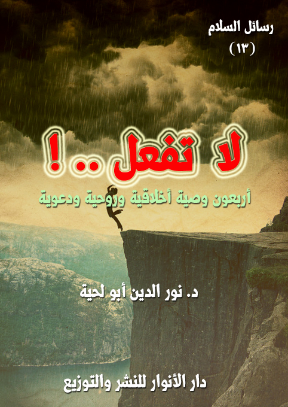

الكتاب: لا تفعل
الوصف: أربعون وصية أخلاقية وروحية ودعوية
السلسلة: رسائل السلام
المؤلف: أ.د. نور الدين أبو لحية
الناشر: دار الأنوار للنشر والتوزيع
الطبعة: الأولى، 1439 هـ
عدد الصفحات: 205
ISBN: 978-620-3-85901-0
لمطالعة الكتاب من تطبيق مؤلفاتي المجاني وهو أحسن وأيسر: هنا

التعريف بالكتاب
يحاول هذا الكتاب أن يبين الكثير من النواحي الواقعية المرتبطة بالتعاليم التربوية الوادرة في النصوص المقدسة، ذلك أن الكثير منا للأسف يرددها من غير فهم لأعماقها ومعانيها البعيدة التي تشمل الحياة جميعا.
وقد كان التركيز فيه على الخصال التي نهى عنها الشرع، إما نهيا صريحا، أو بالإشارة، لأن التقوى والورع لا يمكن أن يتحققا من دون ترك المنهيات، ومراعاة حدود الله، ولذلك سميته [لا تفعل]
وذلك لا يعني اقتصاره على المنهيات.. وإنما يشمل المأمورات أيضا.. فترك كل منهي عنه يستلزم استبداله بالمأمور به.. ولهذا ذكرنا البدائل الشرعية لكل ما نهى الله عنه من سلوكات ومواقف.
وقد حاولنا أن نذكر في وصايا هذا الكتاب كل ما يرتبط بحياة المسلم من جوانب أخلاقية وروحية ودعوية.. وهي تشمل نواحي الحياة جميعا.
وقد صغناه بصياغة بسيطة على شكل وصايا يوجهها الكاتب لرفيق عزيز عليه، يراه كل حين يقع في خطأ من الأخطاء، فيسرع وينبهه إلى اجتنابه، ويستعمل لذلك كل وسائل الترغيب والترهيب.
لا تفعل (5)
يحاول هذا الكتاب أن يبين الكثير من النواحي الواقعية المرتبطة بالتعاليم التربوية الواردة في النصوص المقدسة، ذلك أن الكثير منا للأسف يرددها من غير فهم لأعماقها ومعانيها البعيدة التي تشمل الحياة جميعا.
وقد كان التركيز فيه على الخصال التي نهى عنها الشرع، إما نهيا صريحا، أو بالإشارة، لأن التقوى والورع لا يمكن أن يتحققا من دون ترك المنهيات، ومراعاة حدود الله، ولذلك سميته [لا تفعل]
وذلك لا يعني اقتصاره على المنهيات.. وإنما يشمل المأمورات أيضا.. فترك كل منهي عنه يستلزم استبداله بالمأمور به.. ولهذا ذكرنا البدائل الشرعية لكل ما نهى الله عنه من سلوكات ومواقف.
وقد حاولنا أن نذكر في وصايا هذا الكتاب كل ما يرتبط بحياة المسلم من جوانب أخلاقية وروحية ودعوية.. وهي تشمل نواحي الحياة جميعا.
وقد صغناه بصياغة بسيطة على شكل وصايا يوجهها الكاتب لرفيق عزيز عليه، يراه كل حين يقع في خطأ من الأخطاء، فيسرع وينبهه إلى اجتنابه، ويستعمل لذلك كل وسائل الترغيب والترهيب.
وقد استعملنا هذه الصيغة لسهولتها، وللتنبيه إلى ضرورة النصيحة، فالعلاقات بين المسلمين تنبني على النصح، لا على المجاملة.. والمؤمنون يغسل بعضهم بعضا، ويصحح بعضهم أخطاء بعض.
وقد أوردنا فيه الكثير من الروايات والأخبار والأشعار لأثرها التربوي البليغ، ولذلك لم نهتم كثيرا بمدى صحة الأحاديث أو الروايات، لأن العبرة بالمعاني الواردة
لا تفعل (6)
فيها.. ولذلك اكتفينا بذكر مصادرها الحديثية أو التربوية من غير تعمق في تصحيحها أو تضعيفها.
واخترنا كذلك أن تكون هذه الوصايا أربعين وصية لما ورد في الأحاديث من فضل الأربعين (1)، في المصادر السنية والشيعية، والرواية وإن كانت ضعيفة في المصادر السنية (2) إلا أنها وصلت إلى حد الشهرة والاستفاضة في المصادر الشيعية، بل ذهب البعض الى تواتر الحديث.
ولذلك نرى اهتمام العلماء من كلا المدرستين بجمع الأربعين في المجالات المختلفة (3).. وقد اخترنا هذا المجال التربوي الخاص.. ولذلك لم تخل وصية من الوصايا التي ذكرناها من النصوص المقدسة الدالة عليها.
__________
(1) منها قوله (: (من حفظ على أمتي أربعين حديثا مما يحتاجون إليه في أمر دينهم، بعثه الله عزوجل يوم القيامة فقيها عالما)
(2) قال ابن الملقِّن: (حديث [من حفظ على أمتي أربعين حديثاً كُتب فقيهاً]: يُروى من نحو عشرين طريقاً وكلها ضعيفة، قال الدارقطني: كل طرقه ضعاف لا يثبت منها شيء، وقال البيهقي: أسانيده ضعيفة، [خلاصة البدر المنير (2/ 145)]، وقال البيهقي: (هذا متن مشهور فيما بين الناس وليس له إسناد صحيح) [شعب الإيمان] (2/ 270)، وقال النووي: (واتفق الحفاظ على أنه حديث ضعيف وإن كثرت طرقه) [مقدمة الأربعين النووية]
(3) وقد بدأ هذا الاهتمام من عهد مبكر، ومن الأربعينيات المؤلفة في أواخرالقرن الثاني الهجري ما ألفه عبد الله بن المبارك المَرْوَزي، وكتاب الأربعين عن المشايخ عن الأربعين صحابيا، لمحمد بن أسلم الطوسي.
وفي القرن الرابع كتب أبو العباس الحسن بن سفيان النَسَوي كتاب الأربعين في المسائل الاجتماعية والأخلاقية؛ وكتب أبو بكر محمد بن الحسين الآجري (توفي 360 هـ) كتاب الأربعين حديثاً في العقائد والأخلاق والأحكام.
وفي القرن الخامس كتب عبد الرحمان السلمي [الأربعين في التصوف]، وكتب أبو سعيد أحمد بن محمد الماليني [الأربعون في شيوخ الصوفية]]، وكتب أبو نعيم الأصفهاني [الأربعون على مذهب المحققين من الصوفية]
وهكذا ألفت الكثير من الأربعينيات في سائر العصور، ومنها [الأربعون في فضائل الزهراء] لأبي صالح أحمد بن عبد الملك النيشابوري، و[كتاب الأربعين الودعانية] لأبي نصر محمد بن علي المشهور بان ودعان.
لا تفعل (7)
ذكرت لي ـ أيها الرفيق العزيز ـ منذ جمعتني بك الطريق أنك قرأت كتبا كثيرة، وتعلمت علوما جمة، ورأيت علماء كثيرين، ومن بلاد مختلفة.. وأنا أُكبر فيك كل ذلك وأُعظمُه، وأحترمك لأجله؛ فطالب العلم يستغفر له كل شيء حتى الحيتان في البحر، وحتى الملائكة تضع أجنحتها له رضا بما يصنع.
ولكني مع كل ذلك الإكبار والإجلال لشخصك الكريم أريد أن أوصيك بما أوصي به نفسي، وبما أوصي به ولدي وأعز الناس علي.. وأقول لك: لا تدع علمك يغلب عقلك.. ولا تدع تلك الدفاتر التي كتبتها، والكتب التي جمعتها، والعلوم التي حفظتها، تسد عليها نوافذ عقلك؛ فتحجب عنه الرؤية..
فالعلم الذي تُفتح به أبواب الحقائق قد تُغلق به أبوابها أيضا.. هو يشبه المفتاح تماما، به نفتح، وبه نغلق؛ فلذلك احذر أن يكون علمك حجابك، وأن تكون معارفك قيودا لعقلك تججبه عن الحقيقة.
لا تكن ـ أيها الرفيق العزيز ـ مثل ذلك الأستاذ الذي ذهب إلى بعض مشايخ الروح ليطلب منه أن يعلمه كيف يبصر الحقائق، وعندما بدأ الشيخ بدلالته على أول كلمات الطريق راح الأستاذ يعقب عليها، ويشرح تفاصيلها، ويذكر له ما قال الخليل بن أحمد وسيبويه وأفلاطون وأرسطو والمعتزلة والكرامية حولها.. ولم يدع فرقة إلا ذكرها، ولا عالما إلا وأشار إليه.. حينها نظر الشيخ إليه بحزن، وقال: يا بني إن أردت أن تسلك الطريق؛ فاترك علومك، وتعال إلي؛ فعلمك صار حجابا لروحك.. وبصرك صارت حجابا لبصيرتك.
وهكذا أقول لك: لا تدع تلك العلوم التي تعلمتها، تحول بينك وبين العلوم التي
لا تفعل (8)
يمكن أن يفجرها الله من بئر ذاتك إن أنت أدمنت التفكير.. فنحن مطالبون بأن نفكر بعقولنا لا بعقول غيرنا.. ونحن مطالبون بأن نرى الوجود ببصائرنا، لا ببصائر غيرنا.. ونحن لا يمكننا أن نكتشف حلاوة العسل ما لم نتذوقه بألسنتنا لا بألسنة غيرنا.
لذلك دع لعقلك المجال لأن يتذوق الحقائق، ولا تحجب عنه الرؤية، حتى لا تكون مثل النضر بن الحارث بن علقمة، ذلك الجاهلي المشرك المقيت الذي راح يُحجب بما حفظه من قصص الأولين عن رؤية رسول الله صلى الله عليه وآله وسلم، وعن سماع القرآن الكريم، ولذلك كان بلال الحبشي، ذلك العبد الأمي البسيط أكثر وعيا وعقلا منه؛ فأبصر ما حجب عن النضر، ورأى ما لم يره، لأنه لم تكن هناك أي دفاتر تحول بينه وبين الرؤية.
وليت النضر بن الحارث اكتفى بحجاب عقله عن الحقائق، بل راح يحجب عنها غيره، مثلما يفعل كل المحجوبون بعلومهم..
لقد كان يستعمل كل الأساليب ليصرف الناس عن الحقائق التي يذكرها رسول الله صلى الله عليه وآله وسلم إلى أساطير رستم وإسفنديار التي يحفظها، وكان يقول للقرشيين: (أنا واللَّه يا معشر قريش أحسن حديثا منه، فهلم إليّ فأنا أحدثكم أحسن من حديثه)، ثم يحدثهم عن ملوك فارس ثم يقول: (بماذا محمد أحسن حديثا مني؟ وما أحاديثه إلا أساطير الأولين اكتتبها كما كتبتها)، وكان يقول لهم: (محمد يحدثكم أحاديث عاد وثمود، وأنا أحدثكم أحاديث فارس والروم) (1)
وكان إذا سمع القرآن الكريم، لم يترك لحقائقه أن تصل إلى عقله، وكيف تصل إلى عقله ورستم وإسفنديار يحولان بينها وبينه.. ولذلك كان ينشغل برؤيتهما عن رؤية رسول الله صلى الله عليه وآله وسلم، وينشغل بقصتهما عن القرآن الكريم.. بل كان يردد بكل كبرياء ما حكاه القرآن الكريم عنه: {قَدْ سَمِعْنَا لَوْ نَشَاءُ لَقُلْنَا مِثْلَ هَذَا إِنْ هَذَا إِلَّا أَسَاطِيرُ الْأَوَّلِينَ}
__________
(1) سبل الهدى والرشاد في سيرة خير العباد (2/ 345)
لا تفعل (9)
[الأنفال: 31]
ولذلك اعتبر بقصته.. ولا تدع لرستم وإسفنديار وأرسطو وأفلاطون والخليل وسيبويه وكل علماء الدنيا، أن يحولوا بينك وبين عقلك.. فعقلك هو وسيلتك إلى ربك.. وعقلك هو المفتاح الذي تفتح لك به حقائق الوجود؛ فاحذر أن يسقط المفتاح منك، ليتناوله النضر بن الحارث، ويملي عليك حينها كل ما يريده، لترى العالم كما يراه.
فالنضر بن الحارث ليس مجرد رجل من قريش، بل قد يكون أستاذا في الجامعة، أو كاتبا كبيرا، أو باحثا عبقريا، أو صاحب شهرة تخترق الآفاق.. فكل من يريد منك أن تعطيه مفاتيح عقلك، ليضع فيه ما يريد هو نسخة من النضر بن الحارث.. ذلك الذي استسلمت له بعض العقول؛ فراحت تغلق بقصصه وعلومه نوافذ بصائرها.
ولذلك أقول لك: اقرأ وتعلم وطالع.. ولكن لا تنس عقلك.. ولا تجعل علومك حجابا بينك وبين الحقائق، ولا تكن كأولئك الذين ذكرهم الله تعالى؛ فقال: {فَلَمَّا جَاءَتْهُمْ رُسُلُهُمْ بِالْبَيِّنَاتِ فَرِحُوا بِمَا عِنْدَهُمْ مِنَ الْعِلْمِ وَحَاقَ بِهِمْ مَا كَانُوا بِهِ يَسْتَهْزِئُونَ} [غافر: 83]
ولا تكن كأولئك الأحبار والرهبان الذين واجهو الأنبياء، لا لقلة علومهم، وإنما لضعف عقولهم، أو لغلبة علومهم على عقولهم، أو لأنهم ـ كما ذكر القرآن الكريم ـ كانوا يحملون العلوم، مثلما تحمل الحمير الأسفار؛ فهي تحملها، ولكن لا تستطيع أن تتدبرها، أو تفكر فيها.
هذه وصيتي لك، ولنفسي، ولكل من يريد أن يخرج من دين قومه ليدخل دين الله.. فدين الله لا نرثه عن آبائنا وأجدادنا، ولا نتعلمه من معلمينا وأساتذتنا، وإنما هو ذلك الذي نعاني في البحث عنه، ونتضرع إلى الله بكل صدق أن يهدينا إليه؛ فإذا هدانا إليه طلقنا كل شيء في سبيله، وأولها تلك العلوم التي كانت تحول بيننا وبينه.
لا تفعل (10)
أيها الرفيق العزيز.. رأيتك تتحدث مع بعضهم عن فضل ذلك الشيخ الذي توهمت أنه أعلم الناس، مع ما تراه عليه من حدة وشدة.. وكنت تتحدث مثله بغضب شديد، وكأنك لا تدعو لعالم قد يصيب ويخطئ، وإنما تدعو لنبي معصوم.
وأنا لا أريد أن أصرفك عن ذلك الشيخ أو غيره، ولكني أريد أن أذكر لك أنك مهما أعملت عقلك وأجهدته، فلن تتعرف على الأعلم.. ذلك أن العلم سر بين العبد وربه.. والعلم ليس ألفاظا تردد، ولا مصطلحات معجمة تلاك، والعالم ليس ذلك الذي يقسم الشعرة بذكائه.. وإنما العالم ذلك الذي تنكشف له الحقائق، فيراها رأي العين، وينكشف له نور مصباح الهداية؛ فيكون أول السائرين على هديه.
والأعلم قد يكون مثل أولئك الفقهاء الذين كان يجلبهم الخلفاء والملوك أنصاف الليالي، ليحللوا لهم الحرام الواضح بما يطيقونه من حيل، وليخلصوهم من المآزق التي توقعهم فيها شهواتهم.
والأعلم قد يكون مثل ذلك الفقيه الذي كان يستعمل كل أصناف الدهاء والحيلة ليخلص جمهوره من أثقال التكاليف الشرعية بأبسط أنواع الحيل، ويتصور أنه قد ألغى ما ارتبط بهم من آثام، وكأن له القدرة على تغيير أحكام الله بحيله وخدعه التي لا تختلف عن حيل وخدع علماء أهل السبت.
والأعلم قد يكون مثل ذلك المحامي الشاطر الذكي الذي يحفظ القوانين عن ظهر قلب، ثم يتلاعب في الاحتيال عليها، ومزج بعضها ببعض ليخلص من يدفع له أكثر، وليورط العاجز عن الدفع.
والأعلم قد يكون صاحب ذاكرة قوية، يحفظ الكتب الكثيرة، ويرددها أمام الملأ،
لا تفعل (11)
لا ليملأهم بالحقائق، وإنما ليملأهم بالانبهار، لا بالحقائق، وإنما بذاكرته وذكائه وقدراته، لتمتلئ عقولهم به، لا بالحقيقة.
والأعلم قد يكون صاحب لسان فصيح، وكلمات شاعرية عذبة، ولكنها لا تختلف عن ذلك الذئب الماكر أو الثعلب المخادع أو الصياد الذي ينصب الشباك لمن يريد أن يصطاده.
والأعلم قد يكون صاحب ذكاء حاد، يقسم الشعرة بذكائه، ويتكلم في جميع الفنون، وعن جميع الفرق، ولكنه لن يعلم أتباعه إلا الغباوة والغفلة، لأنه لا يدلهم على الحقيقة المطلقة، وإنما يدلهم على شخصه المقيد؛ فلا يرون الوجود إلا من خلال مرآته المحدودة والممتلئة بكل ألوان الكدورة والتشويه.
لذلك بدل أن تتوجه لمن تراه الأعلم، أو لمن يدعي لك أنه الأعلم، أو لمن تقوم كل وسائل البهرجة الإعلامية بتزيينه لك بكونه الأعلم.. اذهب إلى ذلك المنزوي في قعر بيته، أو في قعر سجن مظلم، فلعلك تجد عنده من التقوى الممزوجة بالعلم النافع ما يغنيك عن كل تلك الأنداد التي تريد أن تستعبدك من دون الله.
أيها الرفيق العزيز، بدل أن تبحث عن الأعلم ابحث عن الأتقى ذلك الذي يخشى الله، ويمتلئ له محبة وعشقا.. ذلك الذي فني عن ذاته في ذات رسوله وأوليائه، فلم يعد له ظل ولا رسم.. لعل حاله ينتقل إليك؛ فتشرب من بحار الحب المقدس ما يغنيك عن حانات الحب المدنس التي أوقعها فيكم من يدعي أنه الأعلم.
بدل أن تبحث عن الأعلم ابحث عن ذلك الورع الذي وزن حركاته بميزان الشريعة؛ فلا يتحرك إلا بما تملي عليه، لا يدخل عقله ولا أهواءه ولا آراءه ولا اجتهاداته معها، بل هو يسلم لها مثلما سلم إبراهيم لرؤيا ربه، فلم يذكر أنها أضغاث أحلام، ليتهرب من مسؤولية الأمر الإلهي.
لا تفعل (12)
بدل أن تبحث عن الأعلم الذي يلتمس لك الرخص، ويعين أهواءك عليك، التمس الأورع الذي يبحث لك عن مواضع رضا الله، ومحال هداه؛ فأنت لم تأت لهذه الدنيا لتتثاقل إليها، وإنما أتيت إليها لتتزود منها.
واحذر، فقد يكون ذلك الأعلم الذي تقبل عليه هو كعب الأحبار، وذلك الأتقى الذي تفر منه هو أبو ذر؛ وأنت تعلم أنه لما وقع الخلاف بين كعب الأحبار وأبي ذر في شأن الكنز، آثر الناس كعبا لكونه صاحب ذاكرة قوية، جعلته لا يكتفي بالقرآن، وإنما يضم إليه كل الكتب المقدسة والمدنسة، ولذلك لما وازن الناس بين علمي الرجلين، وجدوا كعبا أكثر علما؛ فآثروه، وسقطوا في شباك الصياد الذي لم يكن سوى الشيطان.
قد لا يكون كلامي مجديا.. فلذلك اسمع ما قال نبيك صلى الله عليه وآله وسلم، وهو يعلمنا كيف نجتذب ترددات قناة الهداية التي تبث إلى عقولنا وقلوبنا، بدل قنوات الفتنة التي أدمنا عليها؛ فقد قال: (لا تجلسوا عند كل عالم؛ إلا إلى عالم يدعوكم من خمس إلى خمس: من الشك إلى اليقين، ومن الرياء إلى الإخلاص، ومن الرغبة إلى الزهد، ومن الكبر إلى التواضع، ومن العداوة إلى النصيحة) (1)
وقال: (من تعلم علما ليماري به السفهاء أوليباهي به العلماء، أو يصرف به الناس إلى نفسه يقول: أنا رئيسكم فليتبوأ مقعده من النار، إن الرئاسة لاتصلح إلا لأهلها؛ فمن دعا الناس إلى نفسه وفيهم من هو أعلم منه لم ينظرالله إليه يوم القيامة) (2)
وقال: (يظهرالدين حتى يجاوز البحار، ويخاض في سبيل الله ثم يأتي من بعد كم أقوام يقرؤون القرآن يقولون: قرأنا القرآن، من أقرأ منا؟ ومن أفقه منا؟ ومن أعلم منا؟. ثم التفت إلى أصحابه فقال: هل في أولئك من خير؟ قالوا: لا. قال: اولئك منكم من
__________
(1) رواه أبو نعيم في الحلية، تخريج أحاديث إحياء علوم الدين (1/ 184)
(2) بحار الأنوار: 2: 110.
لا تفعل (13)
هذه الآية: {وَأُولَئِكَ هُمْ وَقُودُ النَّارِ} [آل عمران: 10]) (1)
وقال: (إني لا أتخوف على أمتي مؤمنا ولا مشركا، فأما المؤمن فيحجزه إيمانه، وأما المشرك فيقمعه كفره؛ ولكن أتخوف عليكم منافقا عليم اللسان يقول ماتعرفون ويعمل ما تنكرون) (2)
هذه وصايا رسول الله صلى الله عليه وآله وسلم لي ولك ولكل الناس.. لتكون معيارا نزن به العلماء الحقيقيين، ونميزهم عن الكذابين والدجالين والمضلين.. فلا يمكن أن نصل إلى الله، ونحن نهتدي بهدي المضلين.
__________
(1) رواه ابن المبارك في الزهد (152)، وأخرجه أبو يعلى (12/ 56)، والبزار (1/ 99)
(2) رواه الطبراني في الأوسط والصغير، مجمع الزوائد ومنبع الفوائد (1/ 187)
لا تفعل (14)
أيها الرفيق العزيز.. ارفق قليلا بأولئك العوام البسطاء الذين يتجمعون على مائدة علمك؛ فأجهزة هضمهم لا تطيق الطعام الذي تقدمه لهم؛ فلذلك لا يمتصونه طعاما نافعا، وإنما سموما قاتلة.
تمنيت لو أنك ـ أيها الرفيق ـ بدل أن تقوم بالحرث والزرع أمامهم، لتنشر ما تراه من معارف، أن تلقي إليهم بالثمرة جاهزة، ليأكلوها صافية من كل كدر، سليمة من كل عيب، خالية من كل جائحة، لأن بعض الذين جلسوا إليك، وأنت تحرث وتزرع في حقل المعارف، أصابتهم بعض الجروح الأليمة من محراثك ومنجلك، وقد ذكر الأطباء أنه لا أمل في شفائهم منها.
لذلك يمكنك أن تنتقي من التلاميذ أقواهم عقلا، وأكثرهم قدرة، لتبث له ما شئت من علومك؛ أما من عداهم، فانزل إليهم، وإلى ما يطيقونه، لترفعهم بعد ذلك رويدا رويدا، ولا تهجم عليهم بما يضرهم، ولا ينفعهم.
فالعلم النافع قد يتحول إلى سم قاتل إذا لم يجد العقل الذي يقدر على تقبله، ولذلك قال رسولنا صلى الله عليه وآله وسلم: (ما أحد يحدّث قوما بحديث لا تبلغه عقولهم إلّا كان فتنة على بعضهم) (1)، وقال: (كفى بالمرء كذبا أن يحدّث بكل ما سمع) (2)
وقبله قال المسيح عليه السلام: (لا تعلقوا الجواهر في أعناق الخنازير، فإن الحكمة خير من الجوهر، ومن كرهها فهو شر من الخنازير) (3)، ويدخل فيمن كرهها
__________
(1) قال الزين العراقي في المغني عن حمل الأسفار (ص: 70): رويناه في جزء من حديث أبي بكر بن الشخير من حديث عمر أخصر منه. وعند أبي داود من حديث عائشة (أنزلوا الناس منازلهم)
(2) رواه مسلم، 1/ 6.
(3) إحياء علوم الدين (1/ 57)
لا تفعل (15)
من لم يطقها، لأنه قد يستلمها، وهو مكره عليها، لا مطمئن لها.
وبعدهما قال وارث النبوة الأكبر، إمامنا علي، منبع الحكمة، والسراط المستقيم: (إن هاهنا لعلوما جمّة لو وجدت لها حملة)، فهل ترى نفسك ـ أيها الرفيق العزيز ـ أكثر حكمة من الإمام الذي رباه رسول الله صلى الله عليه وآله وسلم على عينه، وعلمه كيف يخاطب الناس، وكيف يراعي ضعفاءهم، ولذلك لم يبث كل ما لديه من العلوم، لأنه لم يجد من يمكنه أن يفهمها، أو يتقبلها، أو لا تؤذيه.
قد تذكر لي ـ أيها الرفيق العزيز ـ ما ورد في النصوص المقدسة من التحذير عن كتمان العلم، وتقول لي، وأنت ممتلئ ورعا: كيف أتوقف عن بث علومي، وقد قال الله تعالى: {إِنَّ الَّذِينَ يَكْتُمُونَ مَا أَنْزَلْنَا مِنَ الْبَيِّنَاتِ وَالْهُدَى مِنْ بَعْدِ مَا بَيَّنَّاهُ لِلنَّاسِ فِي الْكِتَابِ أُولَئِكَ يَلْعَنُهُمُ اللَّهُ وَيَلْعَنُهُمُ اللَّاعِنُونَ} [البقرة: 159]
وأنا أشيد بورعك، كما أشدت قبل ذلك بعلمك؛ ولكني مع ذلك أذكرك بأن الله تعالى نهى في الآية الكريمة عن كتمان البينات، وهي الواضحات اللاتي لا ينكرهن إلا مكابر، أما ما عداهن؛ فقد لا يكون العلم بهن أصلا علما نافعا، بل قد يكون ضارا، وأنت تحفظ عن رسول الله صلى الله عليه وآله وسلم غضبه عندما رأى كتابا من كتب اليهود في يد بعض بعض أصحابه، وقال له: (والذي نفسي بيده، لقد جئتكم بها بيضاء نقية، لا تسألوهم عن شيء فيخبروكم بحق فتكذبوا به أو بباطل فتصدقوا به، والذي نفسي بيده لو أن موسى صلى الله عليه وسلم كان حيا ما وسعه إلا أن يتبعني) (1)
فاجعل هذا الحديث العظيم نبراسك الذي تختار به دروسك ومواعظك وأحاديثك لعامة الناس.. ارفق بهم، واكتف بأن تريهم الأبيض الناصع الواضح البين، حتى لا تشوش رؤيتهم، ولا تفسد فطرهم، ولا تضر بسلامة أجهزة هضم المعارف في
__________
(1) مسند الإمام أحمد بن حنبل: 3/ 387 ح (15195)
لا تفعل (16)
عقولهم.
وإن شئت سلفا لك في ذلك غير من ذكرت من الأنبياء والأئمة، فاقتد بذلك العالم الصالح الورع الذي سئل عن بعض المسائل الدقيقة، فلم يجب؛ فقال السائل: أما سمعت رسول اللَّه صلى الله عليه وآله وسلم قال: (من كتم علما نافعا جاء يوم القيامة ملجما بلجام من نار)؛ فقال: اترك اللجام واذهب فإن جاء من يفقه وكتمته فليلجمنى، فقد قال اللَّه تعالى: {وَلَا تُؤْتُوا السُّفَهَاءَ أَمْوَالَكُمُ} [النساء: 5] تنبيها على أن حفظ العلم ممن يفسده ويضره أولى، وليس الظلم في إعطاء غير المستحق بأقل من الظلم في منع المستحق) (1)
ثم راح يردد:
أأنثر درّا بين سارحة النّعم... فأصبح مخزونا براعية الغنم
لأنهم أمسوا بجهل لقدره... فلا أنا أضحى أن أطوقه البهم
فإن لطف اللَّه اللطيف بلطفه... وصادقت أهلا للعلوم وللحكم
نشرت مفيدا واستفدت مودة... وإلا فمخزون لدىّ ومكتتم
فمن منح الجهال علما أضاعه... ومن منع المستوجبين فقد ظلم
__________
(1) إحياء علوم الدين (1/ 57)
لا تفعل (17)
أيها الرفيق العزيز.. لقد رأيتك اليوم تتحدث إلى جمع من الشباب عن رحمة الله الواسعة، وذكرت لهم أثناء حديثك أصناف الشفاعة التي تنتظر العصاة يوم القيامة، وقد بلغت بك الحماسة إلى أن أوردت لهم ذلك الحديث العجيب الذي حدث به بعضهم عن كعب، وأنه ذكر ما تنتهي إليه شفاعة رسول الله صلى الله عليه وآله وسلم يوم القيامة؛ فذكر أنه (يشفع حتى يبلغ من لم يصل صلاة قط، ولم يطعم مسكينا قط، ومن لم يؤمن ببعث قط، فإذا بلغت هؤلاء لم يبق أحد فيه خير) (1)
وقد زاد في حماستك ما رأيته من أولئك الشباب من انبهار واستزادة؛ فرحت تذكر لهم حديثا آخر عن كعب يذكر فيه (أن أمة محمد صلى الله عليه وآله وسلم ثلاثة أثلاث، فثلث يدخلون الجنة بغير حساب، وثلث يحاسبون حسابا يسيرا ثم يدخلون الجنة، وثلث يدخلون الجنة بشفاعة أحمد) (2)
وعندما طالبوك بأن تترك الحديث عن كعب، وتحدثهم عن رسول الله صلى الله عليه وآله وسلم ذكرت لهم قوله: (ما من مسلم يتوضأ فيسبغ الوضوء ثم يقوم فى صلاته فيعلم ما يقول إلا انفتل وهو كيوم ولدته أمه من الخطايا ليس عليه ذنب) (3)
ثم عقبت عليه بقوله: (إذا مرض العبد ثلاثة أيام خرج من ذنوبه كيوم ولدته أمه) (4)
وهكذا ذكرت لهم الكثير من الأسباب التي تقوم بمحو كامل لصحيفة سيئاتهم
__________
(1) رواه ابن مردويه، انظر: الدرالمنثور في التفسير للسيوطي ص 6، ص 286.
(2) رواه ابن جرير الطبري في جامع البيان (20/ 465)
(3) رواه الحاكم (2/ 433، رقم 3508)
(4) رواه الطبرانى فى الصغير (1/ 314، رقم 19)
لا تفعل (18)
من دون أن يبذلوا أي جهد، ولا يتكلفوا أي ندم أو توبة، وكنت تتصور وأنت تفعل ذلك أنك ترغبهم في الدين، وتملؤهم شوقا لله وتعظيما له، وقد ذكرت لهم في أثناء ذلك أولئك الذين سميتهم منفرين عن دين الله.. أولئك الذين يحدثون الناس عن عذاب القبر، والآلام التي تنتظرهم إن هم تجاوزوا حدود الله.
أعلم أنك فعلت كل ذلك بحسن نية، وأنك لم ترد منهم جزاء ولا شكورا، ولكنك لم تعلم ما فعل أولئك الشباب المراهقون بعد أن خرجوا من عندك.. نعم خرجوا وهم يحمدون الله على رحمته الواسعة، ولكن شكرهم لله كان يشبه شكر ذلك اللص الذي قبل يد الشرطي بعد أن كتم عليه كل جرائم اللصوصية التي قام بها، وقطّع ملفه، ولم يرسل به إلى المحكمة ليأخذ عقابه، وليرد ما سرقه لأصحابه.
لقد خرج ذلك اللص من مخفر الشرطة، وهو يسبح بحمد ذلك الشرطي، ويلقي قصائد الثناء على رحمته، لكن أولئك المساكين الذين انتهكت أعراض بيوتهم امتلأوا حقدا على الشرطي، لكونه رحم اللص، ولم يرحمهم، ومارس الرحمة في غير محلها، وقدم الرحمة على العدالة، وأتاح الفرصة لكل المجرمين ليملأوا الأرض فسادا وجورا.
أنت ـ أيها الرفيق العزيز ـ تشبه ذلك الشرطي في رحمته ولطفه ولينه.. والفرق بينكما أنه ربما يكون قد تعامل مع لص واحد بتلك الطريقة، وفي شؤون مادية قد لا تضر كثيرا، لكنك فعلت ذلك مع جمهور كبير، كان يمتلئ ورعا وتقوى ومخافة من الله؛ فرحت تزيح تلك الحواجز، وتمزق القوانين، لتتيح للرغبات المكبوتة أن تفعل ما يحلو لها، لا في الأمور المادية فقط، وإنما في غيرها أيضا.. لذلك كان ذلك الشرطي أكثر رحمة وعدالة منك.
قد لا يكون كلامي ذا أهمية بالنسبة إليك، ولذلك أدعوك لقراءة كلام ربك، لترى كيف يمزج الله رحمته بعدله وغضبه حتى يردنا إلى حد الاعتدال؛ فالله تعالى يأمر
لا تفعل (19)
رسوله صلى الله عليه وآله وسلم بقوله: {نَبِّئْ عِبَادِي أَنِّي أَنَا الْغَفُورُ الرَّحِيمُ (49) وَأَنَّ عَذَابِي هُوَ الْعَذَابُ الْأَلِيمُ} [الحجر: 49، 50]، فلذلك لا يصح أن تنبئ العباد عن رحمة الله، ثم تقصر في ذكر عقوباته لمن قصر في تربية نفسه وتهذيبها.
وأدعوك ـ أيها الرفيق العزيز ـ إلى الاهتداء بهدي رسولكصلى الله عليه وآله وسلم في ذلك، فهو سيد الدعاة والهداة؛ فهكذا كان يربي أمته، ويقول لهم محذرا: (إن المفلس من أمتي من يأتي يوم القيامة بصيام وصلاة وزكاة، ويأتي قد شتم عرض هذا، وقذف هذا، وأكل مال هذا، فيقعد فيقتص هذا من حسناته، وهذا من حسناته، فإن فنيت حسناته قبل أن يقضي ما عليه من الخطايا، أخذ من خطاياهم فطرحت عليه، ثم طرح في النار) (1)، ويقول لهم: (من كانت له مظلمة لأحد من عرضه أو شيء، فليتحلله منه اليوم قبل ألا يكون دينار ولا درهم، إن كان له عمل صالح أخذ منه بقدر مظلمته، وإن لم تكن له حسنات أخذ من سيئات صاحبه فحمل عليه) (2)
وهكذا علمنا أئمة الهدى؛ فالإمام علي يصف العالم الحقيقي؛ فيقول: (إنّما العالم الّذي لا يقنط الناس من رحمة الله، ولا يؤمنهم من عذاب الله) (3)
أما ما ذكرت من الدعوة لحسن الظن بالله؛ فذلك صحيح، ولكن تعلّم من نبيك صلى الله عليه وآله وسلم كيف تُعلم جمهورك حسن الظن بالله، حتى لا يلغي حسن الظن بالله الأمن من عذاب الله، وحتى لا يلغي الرجاء في رحمة الله الخوف من عقاب الله؛ ففي الحديث أن رسول الله صلى الله عليه وآله وسلم خطب على المنبر؛ فقال: (والّذي لا إله إلّا هو ما أعطي مؤمن قطّ خير الدّنيا والآخرة إلّا بحسن ظنّه باللّه ورجائه له وحسن خلقه والكفّ عن اغتياب المؤمنين،
__________
(1) رواه أحمد 2/ 303 (8016)، ومسلم 4/ 1997،.
(2) رواه البخاري 5/ 73.
(3) رواه الكليني في الكافي ج 1،ص 36.
لا تفعل (20)
والّذي لا إله إلّا هو لا يعذّب الله مؤمنا بعد التوبة والاستغفار إلّا بسوء ظنّه باللّه وتقصيره من رجائه وسوء خلقه واغتيابه للمؤمنين، والّذي لا إله إلّا هو لا يحسن ظنّ عبد مؤمن باللّه إلّا كان الله عند ظنّ عبده المؤمن لأنّ الله كريم بيده الخيرات يستحيي أن يكون عبده المؤمن قد أحسن به الظنّ ثمّ يخلف ظنّه ورجاءه، فأحسنوا باللّه الظنّ وارغبوا إليه) (1)
فانظر كيف مزج رسول الله صلى الله عليه وآله وسلم في هذا الحديث بين الرجاء والخوف، وبين الدعوة لحسن الظن بالله في نفس الوقت الذي دعا فيه إلى مراعاة حسن الخلق والالتزام بالشريعة..
إذا فعلت هذا ـ أيها الرفيق العزيز ـ وتخليت عن مراعاة جمهورك، ولم تكن عبدا لطلباتهم، واستننت بسنة نبيك صلى الله عليه وآله وسلم وخلفائه الراشدين تكون من الذين أخذوا بالكتاب جميعا، وإذا لم تفعل فلا يمكن أن أجد لعملك تشبيها مثل ما ذكره القرآن الكريم عن اليهود الذي عاتبهم الله تعالى، فقال: {أَفَتُؤْمِنُونَ بِبَعْضِ الْكِتَابِ وَتَكْفُرُونَ بِبَعْضٍ فَمَا جَزَاءُ مَنْ يَفْعَلُ ذَلِكَ مِنْكُمْ إِلَّا خِزْيٌ فِي الْحَيَاةِ الدُّنْيَا وَيَوْمَ الْقِيَامَةِ يُرَدُّونَ إِلَى أَشَدِّ الْعَذَابِ} [البقرة: 85]
كما عاتبهم عندما زعموا أنهم لن يدخلوا النار إلا أياما معدودة، فقال: {وَقَالُوا لَن تَمَسَّنَا النَّارُ إِلاَّ أَيَّاماً مَّعْدُودَةً قُلْ أَتَّخَذْتُمْ عِندَ اللّهِ عَهْدًا فَلَن يُخْلِفَ اللّهُ عَهْدَهُ أَمْ تَقُولُونَ عَلَى اللّهِ مَا لاَ تَعْلَمُون} [البقرة:80]
وأنت ـ أيها الرفيق العزيز ـ أعفيت جمهورك حتى من تلك الأيام المعدودة؛ فضمنت لهم النجاة، بل ضمنت لهم الجنة، ولو لم يفعلوا سوى أن يمرضوا ثلاثة أيام، أو يتوضؤوا وضوءهم للصلاة أو لغير الصلاة.
__________
(1) بحار الأنوار، ج 16 ص 189.
لا تفعل (21)
لا تفعل (22)
أيها الرفيق العزيز.. سمعت أنك حدثت اليوم بعض القوم عن ولدك، وشطارتهم، وذكائهم، ونجاحهم في دراستهم وأعمالهم، وأنهم قرة عينك، وفلذه كبدك، وأنك مسرور بهم غاية السرور، وتحمد الله على منته عليك بهم، وختمت حديثك بما ذكره الله تعالى عن عباد الرحمن، وقولهم في دعائهم: {رَبَّنَا هَبْ لَنَا مِنْ أَزْوَاجِنَا وَذُرِّيَّاتِنَا قُرَّةَ أَعْيُنٍ وَاجْعَلْنَا لِلْمُتَّقِينَ إِمَامًا} [الفرقان: 74]
وعلمت أنك قبل فترة نشرت صورتك، وأنت بكامل قوتك، وأمامك مكتبة فخمة مزينة بكل أنواع التحف، وكتبت تحتها: هذه صورتي، وأنا في مكتبي، وأنا بحمد الله أنعم بكامل صحتي وعافيتي، وأسأل الله أن يديمها علي.
وقبل فترة نشرت صورا للأوسمة التي قلدها لك بعض الوجهاء، وذكرت أنها ثمرة لجهدك الطويل في خدمة المجتمع، وأنها حق طبيعي من حقوقك تأخر وصوله إليك، بسبب عدم التفهم.
وكنت كل حين تنشر شهاداتك، وصورا عن بيتك الجديد، وسيارتك الفخمة، وزوجتك التي لولا حجابها والتزامها لرشحت ملكة لجميلات العالم، وهكذا لم تترك نعمة من نعم الله عليك إلا حدثت بها، وسمعها الناس منك.
وعندما عاتبك بعضهم في هذا، قرأت له قوله تعالى: {وَأَمَّا بِنِعْمَةِ رَبِّكَ فَحَدِّثْ} [الضحى: 11]، وأنا لا أريد أن أجادلك في هذا؛ فما قرأته قرآن كريم، ولا يصح لمؤمن أن يجادل في حقائق القرآن، أو يضرب بعضه ببعض.
لكني أريد أن أذكر لك فقط بأن بعض الذين سمعوا حديثك عن ولدك ونجاحهم في دراستهم وحياتهم، كانوا محرومين من نعمة الأولاد، وبعضهم كان لهم
لا تفعل (23)
أولاد عاقون، وبعضهم كان لهم أولاد راسبون، وكلهم تألموا من حديثك، وجرحت مشاعرهم به مع أنك لم تقصد إذيتهم.
وهكذا كان حديثك عن زوجتك وبيتك وشهاداتك.. كلها صادف قوما من الناس لم تكن لهم كل تلك النعم التي أنعم الله بها عليك، والتي رأيت أنك ملزم بذكرها، وكأنك حمدك لله تعالى لا يتم إلا بذكرها، وعلى الملأ.
ولست أدري هل الآية القرآنية تدعو إلى ما فهمته من ذكر تلك النعم الحسية المادية التي أوردتها، أم أنها تقصد النعمة العظمى نعمة الإسلام (1) التي عبر عنها قوله تعالى: {الْيَوْمَ أَكْمَلْتُ لَكُمْ دِينَكُمْ وَأَتْمَمْتُ عَلَيْكُمْ نِعْمَتِي وَرَضِيتُ لَكُمُ الْإِسْلَامَ دِينًا} [المائدة: 3]
وهكذا عندما ذكر القرآن الكريم النعم التي أنعم الله بها على المسيح عليه السلام ذكر أمورا في جوهر رسالته، فقال: {إِذْ قَالَ اللَّهُ يَاعِيسَى ابْنَ مَرْيَمَ اذْكُرْ نِعْمَتِي عَلَيْكَ وَعَلَى وَالِدَتِكَ إِذْ أَيَّدْتُكَ بِرُوحِ الْقُدُسِ تُكَلِّمُ النَّاسَ فِي الْمَهْدِ وَكَهْلًا وَإِذْ عَلَّمْتُكَ الْكِتَابَ وَالْحِكْمَةَ وَالتَّوْرَاةَ وَالْإِنْجِيلَ وَإِذْ تَخْلُقُ مِنَ الطِّينِ كَهَيْئَةِ الطَّيْرِ بِإِذْنِي فَتَنْفُخُ فِيهَا فَتَكُونُ طَيْرًا بِإِذْنِي وَتُبْرِئُ الْأَكْمَهَ وَالْأَبْرَصَ بِإِذْنِي وَإِذْ تُخْرِجُ الْمَوْتَى بِإِذْنِي وَإِذْ كَفَفْتُ بَنِي إِسْرَائِيلَ عَنْكَ إِذْ جِئْتَهُمْ بِالْبَيِّنَاتِ فَقَالَ الَّذِينَ كَفَرُوا مِنْهُمْ إِنْ هَذَا إِلَّا سِحْرٌ مُبِينٌ} [المائدة: 110]
ولست أدري كيف يمكن لامرئ يسمع حديثك عن نفسك، أن يطبق قوله صلى الله عليه وآله وسلم: (إذا نظر أحدكم إلى من فضل عليه في المال والخلق، فلينظر إلى من هو أسفل منه)، وفي رواية: انظروا إلى من هو أسفل منكم، ولا تنظروا إلى من هو فوقكم، فهو أجدر أن لا
__________
(1) سئل الإمام الحسين عن عن تفسير قوله تعالى: (وَأَمَّا بِنِعْمَةِ رَبِّكَ فَحَدِّثْ) [الضحى: 11]، فقال: (أَمَرَهُ أنْ يُحدِّث بِمَا أنْعَم اللهُ بِهِ عَلَيهِ فِي دِينِه)، وروي عن الامام الباقر في تفسير قوله تعالى (وَأَسْبَغَ عَلَيْكُمْ نِعَمَهُ ظَاهِرَةً وَبَاطِنَةً) (لقمان/20) قال: (النعمة الظاهرة النبي (، وما جاء به النبي من معرفة الله عز وجل وتوحيده، وأما النعمة الباطنة ولايتنا أهل البيت وعقد مودتنا)
لا تفعل (24)
تزدروا نعمة الله عليكم)، وفي رواية: (انظروا إلى من هو أسفل منكم في الدنيا، وفوقكم في الدين، فذلك أجدر أن لا تزدروا نعمة الله عليكم) (1)
وقد عقب بعض رواة الحديث عليه بقوله ـ يذكر تجربته ـ (كنت أصحب الأغنياء فما كان أحد أكثر هما مني، كنت أرى دابة خيرا من دابتي، وثوبا خيرا من ثوبي، فلما سمعت هذا الحديث صحبت الفقراء فاسترحت)
وراوي الحديث يعبر ـ بكل صراحة ـ عنك وعن أمثالك، ممن لا يبالون بمشاعر المحرومين والمتألمين، ويتصورون أنهم يحمدون الله بفعلهم ذلك، وهم لا يعلمون أن الله يمكن أن يُحمد جملة من غير تفصيل، ويمكن أن يحمد بذكر أسمائه الحسنى وصفاته العليا، لا بذكر أسماء الأولاد، وأوصاف البيوت.
ولذلك كان أقرب اسم لذلك الفعل الذي قمت به ـ أيها الرفيق العزيز ـ هو لقب [الفخر والمباهاة] لا لقب الحمد والشكر، لأننا لو طبقنا ما فعلته، لوجدنا أقرب الناس إليه قارون، ذلك الذي خرج على قومه في زينته، وأراهم كل ما لديه من صنوف النعمة، ومع أنك لم تخرج مثلما خرج، ولكن كلماتك رسمت لجمهورك مشهدا لا يختلف عن مشهد قارون، ولذلك قال كل من أحاط بك: يا ليت لنا مثلما أوتيت، كما قال من شاهد قارون: {يَالَيْتَ لَنَا مِثْلَ مَا أُوتِيَ قَارُونُ إِنَّهُ لَذُو حَظٍّ عَظِيمٍ} [القصص: 79]
ولهذا كان الرسل والأئمة والأولياء أكثر الناس تواضعا وأدبا ومراعاة لمشاعر الآخرين، وقد قال رسول الله صلى الله عليه وآله وسلم لرجل رآه؛ فأخذته مهابة منه: (هون عليك فإني لست يملك، إنما أنا ابن امرأة من قريش كانت تأكل القديد) (2)
فأنت مخير بين أن تكون مثل قارون الذي خرج على قومه في زينته وبين رسول
__________
(1) رواه أحمد (2/ 413) والبخاري (8/ 128) ومسلم (8/ 213) والترمذي (2513)
(2) رواه ابن ماجه (3312)
لا تفعل (25)
الله صلى الله عليه وآله وسلم الذي مثل التواضع والعبودية والبساطة أحسن تمثيل، وكان يردد كل حين: (إن الله أوحى إلي أن تواضعوا حتى لا يفخر أحد على أحد، ولا يبغي أحد على أحد) (1)
__________
(1) رواه مسلم (2865)
لا تفعل (26)
أيها الرفيق العزيز.. لقد أعجبني كثيرا ماحدثت به البارحة عن أهمية التعرف على أعلام العلماء، وفي جميع المجالات، لما تكسبه تلك المعرفة لأصحابها من علو همة، ومن تعرف تفصيلي على تاريخ العلوم، والمسارات التي سارت عليها، والإنجازات التي تمت فيها.
وقد أعجبني كذلك ما ذكرته عن نفسك، ومعرفتك لآلاف العلماء والفلاسفة والمفكرين والباحثين والمخترعين، وأنهم أصبحوا بالنسبة لك كالأصدقاء والأصحاب لا يكادون يفارقونك.
وذكرت أنك تتسلى بهم أكثر مما تسلى بمن يحيط بك من البشر، وأنه إذا مر عليك اسم أحدهم شعرت بقلبك يخفق شوقا إليه، وحنينا لذكره.
وذكرت في المقابل أنك تشعر بخجل عظيم إن ذُكر اسم فيلسوف أو مخترع أو عالم ثم لا يكون لك معرفة به، أو بمنجزاته، أو بالخدمات التي قدمها للإنسانية.
وكل ما ذكرته جميل، ويدل على أنك صاحب عقل كبير لا يعيش زمانه وواقعه فقط، وإنما يعيش كل الأزمنة، وكل الأمكنة، وكل التاريخ، وكل الجغرافية.
وأنا لا أريدك أن تنسى ما تعلمته من أسماء، أو تتوقف عن تعلمه، ولكني أريد أن أدلك على أسماء أخرى تحتاج إلى التعرف عليها، وهي أسماء تتجاوز الأزمنة والأمكنة، وتتجاوز الأرض والسماء، وتتجاوز التاريخ والجغرافية، بل تتجاوز كل شيء، ومن دونها لا يكون أي شيء.
أريدك ـ أيها الرفيق العزيز ـ كما بذلت كل جهدك في التعرف على أسماء الأعلام، ومنجزاتهم، أن تتعرف على أسماء ربك، فكل ما تراه من منجزات في الكون، هي
لا تفعل (27)
منجزات أسماء الله الحسنى؛ فأسماء الله هي المفاتيح التي تُفهم بها حقائق الوجود والكون والحياة والإنسان وكل شيء.. بل لا يمكنك أن تفهم سر ما تعرفه من أسماء من دون أن تمر على أسماء الله الحسنى، تلك التي بني بها الكون، ولولاها لم يكن شيء في الأرض ولا في السماء، وفي المكان أو في الزمان، أو في اللامكان ولا زمان.
فلولا اسم الله البديع والمصور والجميل، والذي تزينت به أقطار السموات والأرض، ما رأيت لونا ولا صورة ولا شيئا جميلا، ولا رأيت بعد ذلك فنانا، ولا مطربا، وكيف يمكن للفنان أن يبدع في رسمه أو شعره أو فنه، وهو لا يجد جمالا يشحن به ذوقه، أو يعبر به عما رآه؟
فلذلك قبل أن يهزك الطرب عند ذكر أسماء أعلام الفنون الجميلة؛ فليهزك الطرب والشوق لاسم ربك البديع المصور الجميل الذي لولاه ما كنت صورة، وما كان فن، وما كان للجمال محل في الكون.
وإن شئت أن ترتقي في سلم المعارف قليلا، فتنسب الأمور إلى أهلها، وتترك الجحود ونكران الجميل؛ فلتعلم أن كل إبداع فني في الكون هو إبداع لخالق الكون.. ولذلك إن صح أن تشتاق لشيء، فليكن شوقك إليه، وإن صح أن تملأ قلبك بحب شيء، فليكن حبك كله متوجها إليه؛ فلولاه لم يكن شيء.
ولذلك من الغبن أن تحفظ كل أسماء الفنانين، ثم يغيب عنك اسمه، لأنه لولا اسمه لكانت كل تلك المسميات التي تحفظ أسماءها مجرد أشباح وهياكل لا حياة فيها.
وهكذا؛ فإن كل أسماء الفلاسفة والمفكرين والعقلاء التي تحفظها ليست سوى نفحات من أسماء الله الحسنى التي لا نهاية لعطائها وكرمها وجودها، فلذلك لك أن تفرح بتلك الأسماء، ولكن مصحوبة باسم مبدعها وملهمها ومعلمها، فلولاه لكان كل من تراهم من عقلاء مجرد مجانين وصعاليك في الشوارع، لا قيمة لهم، ولا علوم لديهم،
لا تفعل (28)
ولا عقل يفكرون به، لأن العقل ليس أداة إنتاج، وإنما هو أداه استقبال.
وهكذا؛ فإن كل أسماء المخترعين وعلماء الفيزياء والفلك والطب.. وكل العلوم ليسوا سوى عيال أمام حضرة أسماء الله الحسنى، يتلقفون منها المعارف، ويستفيدون منها العلوم، ولولاها لم يكونوا.. ولذلك من الغبن أن تعرف أسماء التلاميذ، ولا تعرف اسم معلمهم.
ومن الغبن أن تمضي حياتك كلها في التعرف على الظلال، ثم لا تعرف مصدرها، ولا حقيقتها، ولا منبعها الذي منه خرجت، وإليه تعود.
لذلك ـ أيها الرفيق العزيز ـ وجه همتك قليلا للتعرف على الأسماء الحقيقية، لا الوهمية؛ فإنها وحدها الباقية، وما عداها فان.. وإياك أن تجعل تلك الأسماء الوهمية أندادا تحبها من دون الله، فلولا الله لم يكن شيء، فانطلق منه إليها، لتعرفها على حقيقتها، لا على ما تزينت به، لأن كل ما تزينت به وهم وسراب سرعان ما تكتشفه بنفسك، حين يكشف عنك الحجاب، وترفع عنك الأوهام.
لا تفعل (29)
أيها الرفيق العزيز.. لست أدري هل ما سأقوله لك سيعجبك أم لا، لكني مضطر لأن أقوله، ولا يهمني ما سيكون موقفك مني، حتى لو رميتني بالجمود والبلادة والتخلف والتطرف؛ فأنا أقبل كل ذلك منك.. ولكني لا أتنازل عن مقالتي التي أريد أن أوجهها لك، والتي أوقن أنها لن تعجبك، وأنت كما تعرفني لا أهتم بما يعجبك أو ما لا يعجبك؛ فالنصح الذي يمتلئ بالمجاملات غش وخديعة.
وقبل أن أذكر لك نصيحتي أريد أن أسالك، وأنت صاحب العقل الراجح والفكر النير عن مدة بقائنا في الدنيا، ولا شك أنك ستجيب بالبداهة التي أعرفها عنك؛ فتقرأ لي قوله تعالى، وهو يذكر النتيجة التي وصل إليها أهل الدنيا بعد ذهابهم للآخرة: {قَالَ كَمْ لَبِثْتُمْ فِي الْأَرْضِ عَدَدَ سِنِينَ (112) قَالُوا لَبِثْنَا يَوْمًا أَوْ بَعْضَ يَوْمٍ فَاسْأَلِ الْعَادِّينَ (113) قَالَ إِنْ لَبِثْتُمْ إِلَّا قَلِيلًا لَوْ أَنَّكُمْ كُنْتُمْ تَعْلَمُونَ} [المؤمنون: 112 - 114]
ثم تذكر لي بعدها ما تعودته عنك من ربط النصوص المقدسة بحقائق العلم؛ فتذكر لي أن هذه الكلمات القرآنية حقائق يعرفها العلماء، وأنه لو وضعنا مدة عمر البشر جميعا أمام عمر الكون، أو أمام الزمن اللامتناهي؛ فإنه سيتشكل لدينا رقم صغير جدا يكاد يكون صفرا.. هذا بالنسبة لعمر البشر جميعا، فكيف بعمر كل واحد منا؟
وحينها سأسألك عن هذا العمر القصير، وما يمكن أن ينتج عنه من نتائج مرتبطة بالأزل والأبد، وحينها ستقرأ علي من النصوص المقدسة ما يدل على عظم غبن من فرط في هذه الفرصة التي تبنى بها القصور، وتستغرس بها كل أنواع النعم، وتقرأ علي من ذلك قوله تعالى: {يَوْمَ يَجْمَعُكُمْ لِيَوْمِ الْجَمْعِ ذَلِكَ يَوْمُ التَّغَابُنِ} [التغابن: 9]
لا تفعل (30)
وتقرأ علي بعدها ذلك التحسر الذي يصيب أهل النار عندما يعاينون النعيم الذي يعيشه أهل الجنة، كما قال تعالى: {قَدْ خَسِرَ الَّذِينَ كَذَّبُوا بِلِقَاءِ اللَّهِ حَتَّى إِذَا جَاءَتْهُمُ السَّاعَةُ بَغْتَةً قَالُوا يَاحَسْرَتَنَا عَلَى مَا فَرَّطْنَا فِيهَا وَهُمْ يَحْمِلُونَ أَوْزَارَهُمْ عَلَى ظُهُورِهِمْ أَلَا سَاءَ مَا يَزِرُونَ} [الأنعام: 31]
وقد تذكر لي حينها كيف تحولت أعمال المؤمنين إلى أنوار يهتدون بها في عالم الآخرة، في نفس الوقت الذي يعيش فيه المستغرقون في الدنيا في عالم الظلمات المطبقة، لكونهم لم يشحنوا بطارياتهم في الدنيا لتمدهم بالنور في الآخرة، كما قال تعالى مشيرا إلى ذلك: {يَوْمَ يَقُولُ الْمُنَافِقُونَ وَالْمُنَافِقَاتُ لِلَّذِينَ آمَنُوا انْظُرُونَا نَقْتَبِسْ مِنْ نُورِكُمْ قِيلَ ارْجِعُوا وَرَاءَكُمْ فَالْتَمِسُوا نُورًا فَضُرِبَ بَيْنَهُمْ بِسُورٍ لَهُ بَابٌ بَاطِنُهُ فِيهِ الرَّحْمَةُ وَظَاهِرُهُ مِنْ قِبَلِهِ الْعَذَابُ (13) يُنَادُونَهُمْ أَلَمْ نَكُنْ مَعَكُمْ قَالُوا بَلَى وَلَكِنَّكُمْ فَتَنْتُمْ أَنْفُسَكُمْ وَتَرَبَّصْتُمْ وَارْتَبْتُمْ وَغَرَّتْكُمُ الْأَمَانِيُّ حَتَّى جَاءَ أَمْرُ اللَّهِ وَغَرَّكُمْ بِاللَّهِ الْغَرُورُ} [الحديد: 13، 14]
وحينها سأسألك ملغزا، مختبرا ذاكرتك عن تلك القصة التي حكاها لنا معلم التربية، حين كنا صبية صغارا؛ فذكر لنا أن رجلا قال عند موته: (يا ليتها كانت كثيرة.. يا ليتها كانت الجديدة.. يا ليتها كانت كاملة)
وحينها ستجيبني بالبداهة التي أعرفها عنك؛ فتذكر لي أنه يشير بقوله: (يا ليتها كانت كثيرة) إلى جاره الأعم، وأنه كان يأخذه كل يوم إلى المسجد، وعندما عاين ثواب هذا العمل عند دنو أجله، قال: (يا ليتها كانت كثيرة تلك الخطوات التي أخطوها برفقة جاري الأعمى لتكون حسناتي أكثر)
وتذكر لي أنه يشير بقوله: (يا ليتها كانت الجديدة) إلى أنه كان لديه خفّان، أحدهما قديم، والآخر جديد؛ فتبرع بالقديم، فعندما وجد ثواب هذا العمل عند دنو أجله، قال: (يا ليتها كانت الجديدة؛ فلو كانت الجديدة لكان الثواب أكبر وأعظم)
لا تفعل (31)
وتذكر لي أنه يشير بقوله: (يا ليتها كانت كثيرة كانت كاملة) إلى أنه كان يتصدق في كل يوم بنصف رغيف؛ فعندما وجد ثواب هذا العمل عند دنو أجله، قال: (يا ليت تلك الأرغفة كانت كاملة)
وحينها سأسألك عن سر ذلك الرجل الصالح الذي حكى لنا قصته ذلك العجوز الذي التقينا به صدفة في القطار، وحدثنا عن قيمة الوقت، وأن كل لحظة يمكننا أن نكسب بها سعادة الأبد، وحينها ستجيبني بما أعرفه من ذاكرتك القوية؛ فتقول: إنه ذلك الرجل الذي كان يختار الطعام اللين الذي لا يحتاج إلى مضغ؛ فعندما سئل عن سر ذلك، قال: (حسبت ما بين المضغ إلى الاستفاف سبعين تسبيحة؛ فما مضغت الخبز مند أربعين سنة) (1)
وطبعا أنا لا أريدك أن تكون مثله، ولا أن تفعل فعله، فهناك الكثير من الأطعمة الطيبة التي أباحها الله لنا، والتي تحتاج إلى المضغ؛ وما خلق الله لنا الأسنان إلا لنستعملها، ولم يجعل الله لنا أسوة إلا بالأنبياء والمرسلين والأئمة المطهرين..
ولكني أريد أن أسألك عن عينيك اللتين تقضيان وقتا طويلا في مشاهدة المباريات والأفلام والمسلسلات، والتي تحضر معها كل لطائفك وأركان حقيقتك.. كم تسبيحة منعتك تلك المباريات؟.. وكم علما صرفتك عنه؟.. وكم فكرا نافعا حالت بينك وبينه؟.. وكم قصرا كان يمكن أن يُبنى لك في تلك اللحظات قصرت في بنائه؟
وليت الأمر اقتصر على تلك المباريات أو الأفلام أو المسلسلات.. بل هناك شؤون كثيرة، ومشاغل طويلة، تقضي على أعمارنا من غير أن نشغلها بشيء ينفعها..
نعم.. هي مباحات كما تذكر، وأنا لست ممن يحرم الحلال، أو يحلل الحرام، ولكني أسألك عن سر ذلك الإذعان التام لكل اللطائف عند تطبيقها لشرائع المباحات،
__________
(1) إحياء علوم الدين (3/ 86)
لا تفعل (32)
في نفس الوقت الذي تتثاقل فيه على شرائع الواجبات والمستحبات.. فهل جاءت الشريعة لتعلمنا كيف نمارس المباح، أم جاءت لترفعنا إلى ثقل الواجبات والمستحبات وكل التكاليف الشرعية؟
أنا لا أريد من حديثي هذا أن أعظك أو أذكرك أو أوصيك؛ فأنا مثلك وربما أكثر منك تقصيرا، ولكني أريد أن أكشف الحقيقة التي نحاول أن نشغل أنفسنا عنها بتلك اللعب؛ فالبشر جميعا ـ كما قال رسول الله صلى الله عليه وآله وسلم ـ: (كل الناس يغدو، فبائع نفسه، فمعتقها، أو موبقها) (1)
وقد قال قبل ذلك مذكرا ومعلما وهاديا: (الطهور شطر الإيمان، والحمد لله تملأ الميزان، وسبحان الله والحمد لله تملآن ـ أو تملأ ـ ما بين السموات والأرض، والصلاة نور، والصدقة برهان، والصبر ضياء، والقرآن حجة لك أو عليك)، ليعلمنا أن كل لحظة يمكننا أن نرتاد بها فضاء الحقائق، وأن نصل بها إلى كل الكمالات.
فالحمد لله ـ كما ذكر رسول الله صلى الله عليه وآله وسلم ـ وحدها تملأ ما بين السماء والأرض، ونحن يمكننا أن نقولها عشرات الآلاف من المرات في الوقت الذي نقضيه في مشاهدة مباراة واحدة، لا نتلذذ منها إلا كما يتلذذ المجنون بقضم أصابعه، ونحن أيضا في تلك اللحظات لا نختلف عن ذلك المجنون، بل نحن أشد جنونا منه، فهو غير مكلف، وهو لا يقضم إلا أصابع سرعان ما تفنى، أما نحن الذين ندعي العقل؛ فنقضم أعمارنا، ونقضم أرواحنا وحقائقنا ولطائفنا، ونملؤها بالفراغ القاتل، ويوم القيامة نعض أصابعنا من الندم على ذلك الوقت الذي قضيناه في ذلك الجنون الذي لم نستفد منه إلا قسوة القلب، وضياع الوقت، وفقدان النور.
وقد ورد في بعض الآثار ما يصور حقيقة ما سيحصل في الآخرة من الندم والغبن
__________
(1) رواه مسلم رقم (223) في الطهارة، باب فضل الوضوء، والترمذي رقم (3512)
لا تفعل (33)
الذي يشعر به كل الخلائق حتى المؤمنين منهم، فقد ذكر أنه (ينشر للعبد بكل يوم وليلة أربع وعشرون خزانة مصفوفة، فيفتح له منها خزانة فيراها مملوءة نورا من حسناته التي عملها في تلك الساعة، فيناله من الفرح والسرور والاستبشار بمشاهدة تلك الأنوار التي هي وسيلته عند الملك الجبار، ما لو وزع على أهل النار لأدهشهم ذلك الفرح عند الإحساس بألم النار، ويفتح له خزانة أخرى سوداء مظلمة، يفوح نتنها، ويغشاه ظلامها، وهي الساعة التي عصى الله فيها، فيناله من الهول والفزع ما لو قسم على أهل الجنة لتنغص عليهم نعيمها، ويفتح له خزانة أخرى فارغة ليس له فيها ما يسره ولا ما يسوؤه، وهي الساعة التي نام فيها، أو غفل، أو اشتغل بشيء من مباحات الدنيا، فيتحسر على خلوها، ويناله من غبن ذلك ما ينال القادر على الربح الكثير والملك الكبير، إذا أهمله وتساهل فيه حتى وفاته) (1)
أنا لا أريدك ـ أيها الرفيق العزيز ـ أن تعتزل الدنيا، أو تعتزل المباح، أو تقضي على كل لحظة أنس وراحة في حياتك؛ فذلك غير ممكن، وقد يضرك ذلك أكثر مما ينفعك، ولكني أذكرك بما قاله إمام المتقين، ويعسوب الدين، موصيا ابنه الإمام الحسن: (يا بني، للمؤمن ثلاث ساعات ساعة يناجي فيها ربه، وساعة يحاسب فيها نفسه، وساعة يخلو فيها بين نفسه ولذتها فيما يحل ويجمل، وليس للمؤمن بد من أن يكون شاخصا في ثلاث مرمة لمعاش، أو خطوة لمعاد، أو لذة في غير محرم) (2)
وإن شئت أن يكتب الله لك تلك الساعة التي تتفرغ فيها للمباح من اللذات، فانو بها القوة على الطاعة، لتجعل حياتك كلها في سبيل الله، وحينها يمكنك أن تقرأ
__________
(1) أورده في بحار الأنوار، ج 3 ص 267 في الهامش من كتاب عدة الداعي، وأورده الغزالي في إحياء علوم الدين (4/ 395) باعتباره حديثا نبويا، لكن ذكر الحافظ العراقي أنه لا أصل له.
(2) نهج البلاغة / 545 حكمة 390..
لا تفعل (34)
هذه الآية، وتصدق في قراءتها: {قُلْ إِنَّ صَلَاتِي وَنُسُكِي وَمَحْيَايَ وَمَمَاتِي لِلَّهِ رَبِّ الْعَالَمِينَ (162) لَا شَرِيكَ لَهُ وَبِذَلِكَ أُمِرْتُ وَأَنَا أَوَّلُ الْمُسْلِمِينَ (163)} [الأنعام: 162، 163]
لا تفعل (35)
أيها الرفيق العزيز.. لقد كنت تذكر لي، وربما لغيري أيضا، كل حين الوقائع الكثيرة التي حصلت لك، والتي جعلتك موقنا تماما من تأثير العين، وأنه لا يجادل في إنكارها إلا مكابر.
وأنا لا أريد أن أجادلك فيها، وكيف أجادلك، وأنت تروي لي كل حين الأحاديث الواردة بشأنها، والتي حفظتها جميعا عن طريقك، وبسندك، ومنها (العين حق، ولو كان شيء سابق القدر لسبقته العين) (1)، و(العين تدخل الرجل القبر، وتدخل الجمل القدر) (2)، و(أكثر من يموت من أمتي ـ بعد قضاء الله وقدره ـ بالعين) (3)، و(إن العين لتولع بالرجل بإذن الله، حتى يصعد حالقا، ثم يتردى منه) (4)، وغيرها من الأحاديث والآثار.
وأنا لا أريد أن أجادلك في مدى صحة هذه الأحاديث، ولا من هم رواتها، ولا في اتصال سندها أو انقطاعه، ولا في موافقتها لما في القرآن الكريم من حقائق الوجود، وسنن الكون أو معارضتها له، ولكني أريد أن أدلك على أسباب أخرى قد تكون هي وراء ما يحصل لك كل حين.
وهذه الأسباب التي أريد أن أذكرها لك ليست لها علاقة بجارك الذي تتهمه بأنه أصابك بالعين، ولا علاقة لها بالرقاة الذين تحضرهم كل حين لتسلمهم ما لديك من مال، ويسلموك ما لديهم من خبرة في ضبط الأعين الخارجة عن القانون.
__________
(1) رواه البخاري 10/ 319، ومسلم رقم (2187)
(2) رواه أبو نُعيم في الحلية، انظر: المقاصد الحسنة (ص: 470)
(3) قال في مجمع الزوائد ومنبع الفوائد (5/ 106): رواه البزار، ورجاله رجال الصحيح.
(4) قال في مجمع الزوائد ومنبع الفوائد (5/ 106): رواه أحمد، والبزار، ورجال أحمد ثقات.
لا تفعل (36)
وإنما لها علاقة بك أنت؛ فقد تكون أنت سبب ما حصل لك، لا عين غيرك التي تتهمها جزافا، ومن غير دليل، سوى تصورك أنهم لم ينظروا إليك إلا نظرة حسد.
ولا تخف، فأنا أيضا مسلح بنصوص مقدسة لا تقل عن النصوص التي استدللت بها في اتهام غيرك، وهي نصوص متفق عليها، وليس هناك مخالف فيها، وهي فوق ذلك منسجمة مع حقائق الوجود، وسنن الكون.
وتلك الأسباب ـ مهما تفرقت أصنافها، وتباينت أنواعها ـ ترجع لكسبك وعملك وأفعالك التي خالفت فيها شريعة ربك، وتعديت حدوده، وأنت تعلم أن التعدي على حدود الله لا يختلف عن التعدي على قوانين الفيزياء والكيمياء والحياة؛ فكما أنك إذا لمست تيار الكهرباء تصاب بالصعقة، وبالألم، حتى لو لم يصبك أحد بعين؛ فكذلك القرب من حدود الله، وانتهاكها يؤدي إلى نفس الصعقة، ويكون الألم والمصيبة بقدر شدة المعصية، وعظمتها.
فلذلك بدل أن تتهم جارك المسكين، أو ترسل إلى الرقاة ليبحثوا لك عن الجناة، ابحث في سجل أعمالك، وانظر إلى كل سلوك سلكته، أو فعل فعلته، أو موقف وقفته، أو قول قلته، أو نظرة أرسلتها، فلعل بلاءك كان في ذلك السلوك، أو ذلك الموقف، أو تلك النظرة.
فإن وجدت سجلك نظيفا؛ فانظر إلى موقفك أو موقف قلبك من أولئك الذين اتهمتهم بأنهم أصابوك بعيونهم، فلعلك أسأت الظن بهم، والظن أكذب الحديث، أو لعلك تحمل بعض الحقد عليهم، والحقد معصية من المعاصي التي يتنزل بسببها البلاء؛ فلذلك قد يكونون هم سبب بلائك، ولكن لا بعيونهم التي تتهمها من غير دليل، وإنما لموقفك الحاقد عليهم.
ربما قد يجعلك هذا الحديث تتهمني أنا أيضا برد النصوص المقدسة، وتلك
لا تفعل (37)
الأحاديث التي رويتها، ومعاذ الله أن أفعل ذلك، ولكني امرؤ شديد الحيطة، وأخاف أن أترك أسبابا واضحة معلومة دقيقة متفقا عليها إلى أسباب وهمية، قد تكون وساوس شيطانية، أو بنات لخدع النفس الأمارة، والتي تريد أن تخلص نفسها من كل تهمة، لترميها على غيرها، وتستريح.
لقد رجعت ـ أيها الرفيق العزيز ـ إلى كلام ربي الذي لا يختلف اثنان في صحته وقدسيته، لأسأله عن أسرار كل المصائب التي حصلت في تاريخ البشرية؛ فلم يذكر لي العين، وإنما ذكر لي المعاصي والذنوب والجرائم، وأعطاني سنة ذلك؛ فقال: {إِنَّ اللَّهَ لاَ يُغَيّرُ مَا بِقَوْمٍ حَتَّى يُغَيّرُوا مَا بِأَنفُسِهِمْ} [الرعد:11]، وقال: {ذَلِكَ بِأَنَّ اللَّهَ لَمْ يَكُ مُغَيّراً نّعْمَةً أَنْعَمَهَا عَلَى قَوْمٍ حَتَّى يُغَيّرُوا مَا بِأَنْفُسِهِمْ} [الأنفال:53]
وعندما سألته عن سر ذلك الدمار الذي أصاب القرى؛ فحولها من النعيم إلى العذاب، ومن السعادة إلى الشقاء، لم يذكر لي العين، وإنما أجابني بقوله تعالى: {إِذَا أَرَدْنَا أَن نُّهْلِكَ قَرْيَةً أَمَرْنَا مُتْرَفِيهَا فَفَسَقُوا فِيهَا فَحَقَّ عَلَيْهَا الْقَوْلُ فَدَمَّرْنَاهَا تَدْمِيرًا} [الإسراء: 16]، وقوله: {وَلَوْ أَنَّ أَهْلَ الْقُرَى آمَنُوا وَاتَّقَوْا لَفَتَحْنَا عَلَيْهِمْ بَرَكَاتٍ مِنَ السَّمَاءِ وَالْأَرْضِ وَلَكِنْ كَذَّبُوا فَأَخَذْنَاهُمْ بِمَا كَانُوا يَكْسِبُونَ} [الأعراف: 96]، وقوله: {وَكَأَيِّنْ مِنْ قَرْيَةٍ عَتَتْ عَنْ أَمْرِ رَبِّهَا وَرُسُلِهِ فَحَاسَبْنَاهَا حِسَابًا شَدِيدًا وَعَذَّبْنَاهَا عَذَابًا نُكْرًا (8) فَذَاقَتْ وَبَالَ أَمْرِهَا وَكَانَ عَاقِبَةُ أَمْرِهَا خُسْرًا} [الطلاق: 8، 9]
وعندما سألته عن سر الفساد السياسي والاجتماعي والاقتصادي والبيئي، وكل ما تعانيه البشرية من مآس، لم يذكر لي العين، وإنما أجابني بقوله تعالى: {ظَهَرَ الْفَسَادُ فِى الْبَرّ وَالْبَحْرِ بِمَا كَسَبَتْ أَيْدِى النَّاسِ لِيُذِيقَهُمْ بَعْضَ الَّذِى عَمِلُوا لَعَلَّهُمْ يَرْجِعُونَ} [الروم:41]، وقوله: {فَإِنْ تَوَلَّوْا فَاعْلَمْ أَنَّمَا يُرِيدُ اللَّهُ أَنْ يُصِيبَهُمْ بِبَعْضِ ذُنُوبِهِمْ وَإِنَّ كَثِيراً مِنَ النَّاسِ لَفَاسِقُونَ} [المائدة: 49]، وقوله: {أَوَلَمْ يَهْدِ لِلَّذِينَ يَرِثُونَ الْأَرْضَ مِنْ بَعْدِ
لا تفعل (38)
أَهْلِهَا أَنْ لَوْ نَشَاءُ أَصَبْنَاهُمْ بِذُنُوبِهِمْ} [الأعراف: 100]
وعندما سألته عن سر ما حصل لقارون ذلك الغني المترف الذي آتاه الله {مِنَ الْكُنُوزِ مَا إِنَّ مَفَاتِحَهُ لَتَنُوءُ بِالْعُصْبَةِ أُولِي الْقُوَّةِ} [القصص: 76]، لم يذكر لي عيون المؤمنين، ولا عيون الكافرين، وإنما ذكر لي كبرياءه وفخره وخيلاءه، والذي جعله يسكن باطن الأرض، بعد أن تكبر على ظاهرها.
وعندما سألته عن سر تلك المصائب التي حصلت لصاحب الجنتين الممتلئتين بكل أصناف الثمار والجمال، لم يذكر لي صاحبه المؤمن الذي كان يحاوره، وإنما ذكر لي طغيانه وتأليه على الله، وإعجابه بنفسه وببساتينه؛ فلم تكن عين المؤمن هي التي أصابته، وإنما كانت عينه الشرهة للدنيا المتثاقلة إليها هي السبب، وقد عبر هو نفسه عن ذلك حين {أَصْبَحَ يُقَلِّبُ كَفَّيْهِ عَلَى مَا أَنْفَقَ فِيهَا وَهِيَ خَاوِيَةٌ عَلَى عُرُوشِهَا وَيَقُولُ يَالَيْتَنِي لَمْ أُشْرِكْ بِرَبِّي أَحَدًا} [الكهف: 42]
وعندما سألته عن سر ما حصل لأصحاب الجنة، تلك التي {طَافَ عَلَيْهَا طَائِفٌ مِنْ رَبِّكَ وَهُمْ نَائِمُونَ (19) فَأَصْبَحَتْ كَالصَّرِيمِ (20)} [القلم: 19، 20] أجابني بأنهم رغم أخطائهم الكبيرة التي وقعوا فيها، لم ينسبوا الأمر للعين، وإنما نسبوه لأنفسهم، وقالوا ـ بعد أن قرأوا رسالة الله لهم ـ: {يَاوَيْلَنَا إِنَّا كُنَّا طَاغِينَ (31) عَسَى رَبُّنَا أَنْ يُبْدِلَنَا خَيْرًا مِنْهَا إِنَّا إِلَى رَبِّنَا رَاغِبُونَ (32)} [القلم: 31، 32]
وعندما سألته عن سر ما حصل لثمود وعاد تلك القبائل البائدة، أجابني بأنه لا علاقة لكل ما حصل لهم بالعين، بل هي أعمالهم التي عبر عنها الله تعالى بقوله: {كَذَّبَتْ ثَمُودُ وَعَادٌ بِالْقَارِعَةِ (4) فَأَمَّا ثَمُودُ فَأُهْلِكُوا بِالطَّاغِيَةِ (5) وَأَمَّا عَادٌ فَأُهْلِكُوا بِرِيحٍ صَرْصَرٍ عَاتِيَةٍ (6) سَخَّرَهَا عَلَيْهِمْ سَبْعَ لَيَالٍ وَثَمَانِيَةَ أَيَّامٍ حُسُومًا فَتَرَى الْقَوْمَ فِيهَا صَرْعَى كَأَنَّهُمْ أَعْجَازُ نَخْلٍ خَاوِيَةٍ (7) فَهَلْ تَرَى لَهُمْ مِنْ بَاقِيَةٍ (8)} [الحاقة: 4 - 8]
لا تفعل (39)
وعندما سألته عن سر ما حصل لفرعون ومن معه من المصريين من الهلاك، أجابني: {وَجَاءَ فِرْعَوْنُ وَمَنْ قَبْلَهُ وَالْمُؤْتَفِكَاتُ بِالْخَاطِئَةِ (9) فَعَصَوْا رَسُولَ رَبِّهِمْ فَأَخَذَهُمْ أَخْذَةً رَابِيَةً} [الحاقة: 9، 10]
وعندما سألته عن سر ما حصل لسبأ، وتفرقها في الأرض شذر مذر، وتحولها من النعيم إلى البلاء، ومن السعادة إلى الشقاء، أجابني بأنه لا علاقة لكل ما حصل لهم بالعين، وإنما هي أعمالهم التي عبر عنها الله تعالى بقوله: {لَقَدْ كَانَ لِسَبَإٍ فِي مَسْكَنِهِمْ آيَةٌ جَنَّتَانِ عَنْ يَمِينٍ وَشِمَالٍ كُلُوا مِنْ رِزْقِ رَبِّكُمْ وَاشْكُرُوا لَهُ بَلْدَةٌ طَيِّبَةٌ وَرَبٌّ غَفُورٌ (15) فَأَعْرَضُوا فَأَرْسَلْنَا عَلَيْهِمْ سَيْلَ الْعَرِمِ وَبَدَّلْنَاهُمْ بِجَنَّتَيْهِمْ جَنَّتَيْنِ ذَوَاتَيْ أُكُلٍ خَمْطٍ وَأَثْلٍ وَشَيْءٍ مِنْ سِدْرٍ قَلِيلٍ (16) ذَلِكَ جَزَيْنَاهُمْ بِمَا كَفَرُوا وَهَلْ نُجَازِي إِلَّا الْكَفُورَ} [سبأ: 15 - 17]
وهكذا رحت أسأله عن كل مصيبة حصلت، وكل بلاء تنزل، ولم يجبني في واحدة منها بعلاقة العين بذلك، ولذلك لا يمكنني أن أترك هذه الإجابات القرآنية الصريحة الواضحة، وأستمع إلى إجابتك.
قد تتهمني ـ أيها الرفيق العزيز ـ بإنكار السنة، أو بضرب السنة بالقرآن، ومعاذ الله؛ فأنا أضعف من أن أنكر سنة رسول الله صلى الله عليه وآله وسلم، وأنا لم أقل لك أبدا: إن رسول الله صلى الله عليه وآله وسلم لم يذكر تلك الأحاديث التي رويتها؛ فليس لدي من علم الرجال والجرح والتعديل ما يؤهلني لإنكار ذلك، ولكني عجبت من تركك للواضحات القطعيات المتفق عليها، وذهابك للظنيات المختلف فيها.
وأنا لا أقصد ـ كما قد تتوهم أيها الرفيق العزيز ـ بالظنيات تلك الأحاديث التي ذكرتها، وإنما أقصد تصورك وتوهمك أن سبب ما حصل لك من بلاء هو عيون الناس المسلطة عليك؛ فذلك في أحسن أحواله تهمة تحتاج إلى دليل، ولا يمكن لذلك الراقي
لا تفعل (40)
المسكين، الممتلئ بكل أنواع الضعف والقصور أن يشق على قلوب الناس، أو يطلع على اللوح المحفوظ ليخبرك أن ما حصل لك سببه العين.
فلذلك دع الخلق للخالق، وانشغل بنفسك، وبالبحث في سجلات أعمالك؛ فلعلك تبصر الفيروس الذي دمر حياتك، أو المغناطيس الذي جلب ذلك البلاء إليك، لتواجه الحقيقة التي تحاول إخفاءها، ويعينك دجاجلة الرقاة على ذلك.
ولا بأس ـ أيها الرفيق العزيز ـ إن كنت صاحب حيطة ونظر أن تعتبر العين سببا من أسباب ما حصل لك، مع الأسباب التي ذكرها القرآن الكريم، لكن إياك أن تعتبرها السبب الوحيد، وإياك أن تتهم أحدا بها، حتى لا تقع في الظلم والجور وسوء الظن.
وفي هذه الحالة لست في حاجة لإحضار الرقاة، ولا الحديث عما أصابك في المنتديات، بل يكفي أن ترفع يديك إلى الله ليكف بلاء العين عنك، ويمكنك لذلك أن تستعيذ بكل أنواع الاستعاذة الواردة في النصوص المقدسة، وأن توقن بعدها بأن الله قد رد عنك كل أسباب البلاء من تلك الجهة التي كنت تتوهمها، ولم يبق إلا الجهة التي سُلمت لك مفاتيحها؛ فكنت أنت أميرها وحامي ثغرها.
أيها الرفيق العزيز.. هذه نصيحتي إليك، ولنفسي، حتى نواجه المشاكل وأنواع البلاء بما تتطلبه من حلول معقولة ومنطقية، وليس بالهرب منها إلى أهوائنا، والشياطين الذين يزينون لنا أعمالنا، ثم يرمون كل تلك الرسائل الربانية التي يرسلها الله إلينا لينبهنا من غفلتنا، ويعيدنا إلى سراطه المستقيم.
لا تفعل (41)
أرسلت إلي ـ أيها الرفيق العزيز ـ تتعجب من بثي لتلك الأحاديث المحذرة من القتل، وذكرت لي أنك وجميع من سمعوا تلك الأحاديث قوم مسالمون، لم تتلطخ أيديكم بالدماء، وأنه كان الأجدر بي أن أحدثكم عن غير الدماء، أو عن غير الكبائر؛ فأنتم ـ بحمد الله، كما تذكر ـ قوم متدينون مسلمون، وأبعد الناس عن مثل تلك الجرائم.
وأنا ـ في تلك الموعظة التي وعظتكم ـ لم أكن أقصد أنكم محاربون، ولا أن أيديكم ملطخة بالدماء، لكني خشيت أن تكونوا من الذين يُكتبون من القتلة، مع أنهم لم يسفكوا في حياتهم قطرة دم واحدة، لكنهم قتلوا بقلوبهم وألسنتهم ملايين البشر.. والقاتل ليس من مارس القتل بيده فقط، وإنما من مارسه بلسانه وقلبه وأي لطيفة من لطائفه.
لقد ورد في الحديث ما يدل على ذلك، فقد قال صلى الله عليه وآله وسلم: (إذا عملت الخطيئة في الأرض كان من شهدها وكرهها - وفي رواية - فأنكرها - كمن غاب عنها، ومن غاب عنها فرضيها كان كمن شهدها) (1)
وفي حديث آخر قال صلى الله عليه وآله وسلم: (ستكون أمراء فتعرفون وتنكرون فمن عرف برئ، ومن أنكر سلم ولكن من رضي وتابع) (2)
وأصدقك القول ـ أيها الرفيق العزيز ـ أني لم أكن أنوي أن أحدثكم في تلك الموعظة التي شرفتموني بطلبها عن القتل والدماء، ولكني في الفترة التي جلست فيها إليكم سمعت أحاديث عجيبة جعلتني أخشى عليك وعليهم من أن تُكتبوا عند الله من
__________
(1) رواه أبو داود (4345)، والطبراني (17/ 139) (14033)
(2) رواه مسلم (1854)
لا تفعل (42)
القتلة، وأنتم لا تشعرون.
لقد سمعت بعضكم يتحدث بإعجاب عن أمريكا، ونهضتها، وتطورها الاقتصادي، ونظامها الدقيق، ويتمنى لو أن إخوانه من العرب انتهجوا نهجها وساروا، سيرها؛ فلما قال ذلك قام له بعض القوم، وذكر له ما فعل أسلافهم بالهنود الحمر، وبالفيتناميين، وباليابانيين، وما فعله خلفهم من جرائم في حق العراق وأفغانستان والكثير من بلاد الله الواسعة.. لكن الرجل بدل أن يستنكر تلك الجرائم، راح يبررها، ويدافع عنها، ويستعمل في ذلك كل ما تعلمه من فنون التبرير، ويصور أن السنن الحضارية قد تستدعي بعض السلوكات التي لا تنسجم مع العواطف، لكن العقل يفرضها.
واستسلم أكثر الحضور لكلامه وتبريراته، ولم ينكروا عليه، ولم يتصوروا أنهم بذلك السكوت والرضا قد كُتبوا في قائمة قتلة الهنود الحمر والفيتناميين واليابانيين والعراقيين والأفغانيين.. وغيرهم من عشرات الملايين البشر.
وهكذا راح آخر يدافع عن فرنسا، ويصور للحضور أنها أم التنوير، وأنها قمة من قمم الحضارة، وأنه لا يمكن لدولة تريد أن تتقدم من أن تسير على خطاها، وتنتهج نهجها، وتشرب من شرابها حلوه ومره، خيره وشره.. وعندما ذكر له بعض الحضور جرائم الفرنسيين في أكثر الدول الإفريقية، راح يلتمس لها الأعذار، وراح الحضور يقبلون منه، ويسجلون أنفسهم طواعية ضمن قائمة المجرمين الذين قتلوا ملايين المستضعفين.
وهكذا سمعت ثالثا يبرر للإرهابيين كل سلوكاتهم، ويعتبرهم ثوارا، وأن على الدولة أن تستسلم لهم، وأن تعطيهم رقابها، ورقاب شعبها ليذبحوه بالطريقة التي يشاءون.
لا تفعل (43)
وسمعت رابعا يذكر مناقب يزيد، وأنه مغفور له، وأنه استطاع أن يوحد الدولة، ويقف في وجه المعارضين؛ فلما قام بعضهم يذكر له جرائمه في حق أهل البيت في كربلاء، وجرائمه في حق الصحابة في الحرة، وغيرها.. راح يبررها، ويدافع عن يزيد وجرائم يزيد، وسكت القوم، وراحوا يسجلون أنفسهم جنودا متطوعين في ذلك الجيش المجرم.
وهكذا سمعت خامسا، يبرر ما يحصل من قتل لأطفال اليمن وشيوخها ورجالها ونسائها، ويذكر أن ذلك شيء طبيعي، وأنه على الدولة أن تحفظ جوارها من كل ما يسيء إليه.
وهكذا لم ينفضّ ذلك المجلس إلا بعد أن سجل الحضور أسماءهم في قوائم القتلة، لا قتلة أفراد معدودين، وإنما قتلة الملايين ومئات الملايين.
لذلك عندما طلبوا مني في آخر المجلس أن أحدثهم، رحت أحدثهم عن القتل، لأني لم أشم عند جلوسي إليهم إلا روائح دماء المستضعفين المظلومين، الذين لم يكفهم أن قُتلوا مرة واحدة، وبدم بارد من المجرمين المستكبرين، حتى أضاف إليهم أولئك الذين تسميهم قوما مسالمين قتلة جديدة، وفي بيت من بيوت الله، وفي شهر من أشهر الله الحرام.
وما آلمني ـ أيها الرفيق العزيز ـ هو سكوتك على ما ذكروه؛ فلم تنبس ببنت شفة، وأنا أعلم سبب ذلك؛ فأنت لا تحب أن تسبح خلاف التيار، ولا تريد أن تغرد خارج السرب، ولا تريد لقومك أن يرموك بالبلادة، أو التخلف، أو الرجعية، ولذلك آثرت أن تسجل اسمك في قوائم القتلة، واعتبرتها أفضل من قوائم الرجعيين والمتخلفين والظلاميين.
ولذلك كتبت إليك هذه الوصية، أنبهك إلى أن محكمة العدل الإلهية لن تستثني
لا تفعل (44)
قاتلا يوم القيامة، سواء ذلك الذي باشر القتل، أو ذلك الذي زكى القاتل، أو ذلك الذي رضي عنه، أو ذلك الذي دعمه، أو ذلك الذي أحبه ووالاه، أو ذلك الذي انتصر له، ودعا إليه..
فكل هؤلاء مسجلون ضمن القتلة، وكل هؤلاء ستوضع في موازينهم كل جثث القتلى، وكل دماء المظلومين، لتؤخذ بأوزانها حسناتهم، وتُصب عليهم سيئاتهم.
لذلك لا تذكر لي أنك وقومك من المسالمين.. فالمسالم هو ذلك الورع الخائف من الله، الذي يعتذر له كل حين، ويسأله التوبة، ويسأله أن يطهر قلبه من كل حقد وضغينة، وأن يجعله كهفا منيعا للمستضعفين حتى لو كانوا متخلفين، وأن يجعله سدا شديدا في وجه المستكبرين الطغاة حتى لو لبسوا لباس فرعون، وظهروا بزينة قارون.
هذه وصيتي إليك، ولقومك؛ فإن شئتم أن تتوبوا إلى الله؛ فعليكم أن تعتذروا أولا لكل أولئك الذين قتلتموهم بألسنتكم وقلوبكم، وأن تدفعوا لهم الدية على قتلكم لهم، وديتكم هي أن تدافعوا عنهم، وأن تقفوا في وجه قتلتهم؛ فلا يمكن لمن انتمى إلى عصابة أن يخرج منها إلا بعد إعلان براءته منها، وحربه لها.
لا تفعل (45)
لا أزال أذكر جيدا ـ أيها الرفيق العزيز ـ ذلك المطعم الذي أخبرتني عنه، والذي تسبب لك طعامه في تسمم أصاب جهازك الهضمي، بل جميع أجهزتك بضرر كبير، ظل يلاحقك ألمه وتبعاته فترة طويلة، مع أنك لم تأكل فيه سوى وجبة واحدة.
وأنا لا أريد أن أطلب منك أن تعود إلى ذلك المطعم المشؤوم؛ فقد ذكرت لي أنك أقسمت على أنك لن تدخل أي مطعم في حياتك، ذلك أن الوساوس صارت تنتابك في كل ما يعرض فيها من طعام، وأنا أوافقك في ذلك؛ فقد حصل لي بعض ما حصل لك، وصرت لا أسافر إلا ومعي زادي الذي يغنيني عن تلك المطاعم المشؤومة وغيرها.
ولكني أريد أن أذكرك بأنك ربما لم تبر بقسمك؛ فقد رأيتك البارحة في مطعم أكثر شؤما من ذلك المطعم الذي أصابك بالتسمم، لكن الفرق بينهما أن الأول ترك أعراضه في جسدك؛ فلذلك رحت تسارع في علاجه، وإخراج العلة منه، بينما المطعم الذي رأيتك فيه البارحة أصاب قلبك ونفسك وحقيقتك، ولم يترك أي أثر في جسدك، ولذلك لم تنتبه إليه، لأننا لا ننتبه عادة للعوارض النفسية مثل انتباهنا للعوارض الجسدية.
لست أدري ـ أيها الرفيق العزيز ـ هل فهمت عني ما أقصده أم لا.. ولذلك سأذكرك، فلعلك تتدارك ما حصل لروحك، مثلما تداركت ما حصل لجسدك، ولعلك تقسم قسما جديدا على عدم الدخول لتلك المطاعم التي تصيب أجهزتك الحقيقية بالسمية، مثل توبتك عن المطاعم التي تتسبب في عطب الآلات التي تستخدمها، والكفن الذي تلبسه.
لقد رأيتك البارحة تدخل ذلك النادي الثقافي المحترم، وكنت تعرف جيدا
لا تفعل (46)
أصحابه، وأنواع الأحاديث التي يشتهونها، وكان في إمكانك، وأنت تطرح أسئلتك عليهم أن تصرفهم إلى علم ينتفعون به، أو جهل يزيلونه، أو خدمة عامة يسارعون إليها، لكنك ـ ولعلمك بثقل أمثال تلك الحديث عليهم ـ رحت تتودد لهم، وتسألهم عن الشخص الذي تعرف موقفهم منه جيدا.
وكانت فرصة لهم، لأن يقوموا بإحضاره أمامك، ثم التفنن في تشريحه، وطبخه على نيران أحقادهم الهادئة، ثم الشروع في أكله بعد نضجه؛ ثم وقفت وأنت تتفرج عليهم، وكيف ينهشون لحمه الميت المحترق، وتتلذذ بذلك.
نعم لم أرك تحمل شوكة ولا سكينا لتشاركهم في ذلك الطعام المسموم، ولكنك كنت أنت الذي أحضره إليهم بذلك السؤال الذي تعرف مسبقا جوابه.. ولذلك كان وبال كل ما حصل له مرتدا إليك؛ فأنت صاحب الإثم الأول؛ فكما أن الدال على الخير كفاعله، فكذلك الدال على الشر كفاعله.
والمصيبة الأعظم ـ أيها الرفيق العزيز ـ هي أنك لم تنبس ببنت شفة لتنهاهم عن ذلك الأكل المسموم، لأنك تتصور أن الأكل المسموم لا يوضع فقط إلا في المطاعم التي تغذي الجسد، مع أن أخطر أنواع السموم هي تلك التي تصيب الروح والعقل والقلب؛ فتنزل بالإنسان من درجته الرفيعة المكرمة إلى درجة أدنى من درجات البهائم.
لا تحسبن أني ـ أيها الرفيق العزيز ـ أزعم لنفسي علم الغيب، أو الاطلاع على اللوح المحفوظ، أو الشق على الصدور لمعرفة ما تكتنزه من خير وشر، ولكني ليقيني العظيم بما ورد في النصوص المقدسة التي توضح حقائق الوجود كما هي من غير تزوير ولا تبديل ولا لف ولا دوران، رأيت كل ذلك..
لقد سمعت ربي في القرآن الكريم يعتبر كل كلام جارح ومؤذ في حق الآخرين نوعا من أكل لحومهم الميتة المسمومة؛ فقد قال تعالى يعبر عن الحقيقة التي لا نراها
لا تفعل (47)
بأبصارنا الفانية: {وَلَا يَغْتَبْ بَعْضُكُمْ بَعْضًا أَيُحِبُّ أَحَدُكُمْ أَنْ يَأْكُلَ لَحْمَ أَخِيهِ مَيْتًا فَكَرِهْتُمُوهُ وَاتَّقُوا اللَّهَ إِنَّ اللَّهَ تَوَّابٌ رَحِيمٌ} [الحجرات: 12]
وقد فسر رسول الله صلى الله عليه وآله وسلم الآية الكريمة؛ فأخبر عن المصير المؤلم الذي ينتظر الداخل إلى نادي المغتابين، فقال: (من أكل لحم أخيه في الدّنيا قرّب له يوم القيامة؛ فيقال له: كله ميتا كما أكلته حيّ؛ فيأكله ويكلح ويصيح)) (1)
بل إن رسول الله صلى الله عليه وآله وسلم أخبر عن بعض رؤيته لحقيقة المغتابين التي تختفي وراء تلك المظاهر الكاذبة التي نراها منهم، وهم يشعرون في ظاهرهم بالسعادة والسرور والأنس، بينما باطنهم وحقيقتهم تصيح بالألم والشقاء والوحشة، ففي الحديث قال رسول الله صلى الله عليه وآله وسلم: (لمّا عرج بي مررت بقوم لهم أظفار من نحاس يخمشون وجوههم وصدورهم، فقلت: من هؤلاء يا جبريل؟ قال: هؤلاء الّذين يأكلون لحوم النّاس، ويقعون في أعراضهم) (2)
وفي حديث آخر عن جابر قال: كنّا مع النّبيّ صلى الله عليه وآله وسلم؛ فارتفعت ريح منتنة، فقال رسول اللّه صلى الله عليه وآله وسلم: (أ تدرون ما هذه الرّيح؟ هذه ريح الّذين يغتابون المؤمنين) (3)
وفي حديث آخر أن النّبيّ صلى الله عليه وآله وسلم مر بقبرين؛ فقال: (إنّهما ليعذّبان، وما يعذّبان في كبير، أمّا أحدهما فيعذّب في البول، وأمّا الآخر فيعذّب في الغيبة) (4)
وفي حديث آخر أنّ النّبيّ صلى الله عليه وآله وسلم قال: (من أكل برجل مسلم أكلة فإنّ الله يطعمه مثلها من جهنّم، ومن كسي ثوبا برجل مسلم فإنّ الله يكسوه مثله من جهنّم، ومن قام
__________
(1) قال الحافظ ابن حجر في الفتح (10/ 485): سنده حسن.
(2) أحمد في المسند (3/ 224)، وأبو داود (4878)
(3) ذكره المنذري في الترغيب والترهيب (3/ 515) واللفظ له، وقال: رواه أحمد وابن أبي الدنيا ورواة أحمد ثقات، وقال الحافظ ابن حجر في الفتح (10/ 484): سنده صحيح..
(4) أحمد في المسند (5/ 35 - 36)، وابن ماجة (1/ 349) واللفظ له وقال الحافظ ابن حجر في الفتح (1/ 485): أخرجه أحمد والطبراني بإسناد صحيح..
لا تفعل (48)
برجل مقام سمعة ورياء فإنّ الله يقوم به مقام سمعة ورياء يوم القيامة) (1)
وفي حديث آخر قال صلى الله عليه وآله وسلم: (من ذكر امرأ بشيء ليس فيه ليعيبه به حبسه الله في نار جهنّم حتّى يأتي بنفاد ما قال فيه) (2)
وهكذا كان رسول الله صلى الله عليه وآله وسلم يستعمل كل وسائل التنفير من الغيبة، والتحذير منها، مثلما نستعمل نحن كل الوسائل من التحذير من التسميم ومخاطره؛ وقد كان يردد كل حين: (يا معشر من آمن بلسانه ولم يدخل الإيمان في قلبه، لا تغتابوا المسلمين، ولا تتبّعوا عوراتهم، فإنّه من اتّبع عوراتهم يتّبع اللّه عورته، ومن يتّبع اللّه عورته يفضحه في بيته) (3)
فإذا ذكر له أحدهم بأنه لا يقول في غيبة أخيه إلا الحقيقة التي لا يزيد عليها حرفا واحدا، يقول له: (إن كان فيه ما تقول، فقد اغتبته، وإن لم يكن فيه فقد بهتّه)) (4)
وكان صلى الله عليه وآله وسلم لا يكتفي بذلك التنفير، وإنما يعتبر كل من سمع الغيبة، وسكت ـ مثلما فعلت أيها الرفيق العزيز ـ مشاركا في تلك المائدة المسمومة المشؤومة، ففي الحديث أن نفرا من أصحاب رسول الله صلى الله عليه وآله وسلم ذكروا عنده رجلا فقالوا: لا يأكل حتّى يطعم، ولا يرحل حتّى يرحل له، قال النّبيّ صلى الله عليه وآله وسلم: (اغتبتموه). فقالوا: يا رسول اللّه إنّما حدّثنا بما فيه، قال: (حسبك إذا ذكرت أخاك بما فيه) (5)
وهكذا عندما وصفت له زوجه عائشة صفيّة بكونها قصيرة، ومع أنها اكتفت بالإشارة، ولم تتكلم بكلمة واحدة، لكن رسول الله صلى الله عليه وآله وسلم لم يراع خاطرها ـ مثلما راعيت
__________
(1) أحمد في المسند (4/ 229)، وأبو داود (4881) واللفظ له وصححه الألباني: صحيح سنن أبي داود (4084)، والحاكم في المستدرك (4/ 127 - 128) وقال: صحيح الإسناد ولم يخرجاه ووافقه الذهبي..
(2) الترغيب والترهيب للمنذري (3/ 515) وقال: رواه الطبراني بإسناد جيد.
(3) أبو داود 4 (4880)، وقال الحافظ العراقي في الإحياء (3/ 104): سنده جيد.
(4) مسلم (2589)
(5) قال المنذري في الترغيب والترهيب (3/ 506): رواه الأصبهاني بإسناد حسن..
لا تفعل (49)
أيها الرفيق العزيز خواطر أصحابك ـ وإنما راح يؤنبها، ويقول لها: (لقد قلت كلمة لو مزجت بماء البحر لمزجته) (1)
ولهذا كان في إمكانك أيها الرفيق العزيز أن تدخل لذلك المطعم، وتمارس حرفة الذب عن أعراض الناس، بدل انتهاكها، لتخرج بأجور عظيمة لا يمكنك أن تتخيل مقدار عظمتها؛ ففي الحديث عن رسول الله صلى الله عليه وآله وسلم قال: (من ردّ عن عرض أخيه ردّ الله عن وجهه النّار يوم القيامة) (2)
وفي حديث آخر قال صلى الله عليه وآله وسلم: (من ذبّ عن عرض أخيه بالغيبة كان حقّا على الله أن يعتقه من النّار) (3)
هذه نصيحتى إليك ـ أيها الرفيق العزيز ـ وأنت مخير بعدها بين أن تدخل تلك المطاعم لتنشر فيها قيم الخير والصلاح، وتذب فيها عن أعراض إخوانك، وبين أن تهجرها، وتقسم ألا تدخلها مثلما فعلت مع تلك المطاعم التي سممت جسدك؛ فسموم الروح أخطر وأكثر فتكا وإيلاما من سموم الجسد.
__________
(1) أبو داود (4875) واللفظ له، والترمذي (2502 - 2503) وقال: حديث صحيح..
(2) الترمذي (1931) واللفظ له وقال: هذا حديث حسن.
(3) الترغيب والترهيب للمنذري (3/ 517) وقال: رواه أحمد بإسناد حسن، وابن أبي الدنيا والطبراني وغيره.
لا تفعل (50)
لا أزال أذكر جيدا ـ أيها الرفيق العزيز ـ تحذيراتك لي من الكثير من الأغذية الحديثة المصنعة، والتي لا تراعي الصحة في صناعتها، فلذلك تهتم بأذواق المستهلكين أكثر من اهتمامها بصحتهم؛ فتطعمهم ـ من حيث لا يشعرون ـ سموما لذيذة لا يستفيد منها إلا خلايا ذوقهم.
لقد حفظت كل تلك التعليمات التي ذكرت لي بشأنها، وصرت قبل شراء أي نوع من الأغذية المصنعة، أنظر في تركيبتها، وأنواع المواد الحافظة لها، أو المسببة لنكهتها وذوقها ولونها، بل صرت أتورع عن أكثرها، حتى مع خلوه مما ذكرت خشية أن تكذب تلك الشركات فيما تذكره عنها وعن مكوناتها وأوصافها.
وأنا أشكر لك جميل نصحك لي، وحسن رفقك بصحة جسدي وعافيته، وأريد ـ من باب الجزاء والشكر ـ أن أضيف إلى ما ذكرت لي من أنواع الأطعمة الضارة بالصحة أنواعا أخرى لم يذكرها أبوقراط، ولا جالينوس، ولا داود الأنطاكي، ولا غيرهم من الأطباء في القديم والحديث، وإنما ذكرها رب الأطباء وخالقهم، وشرحها معلم الأطباء وقدوتهم، وهي أنفع لك ولي من كل تلك النصائح التي أسديتها، وشكرتك عليها، وعملت بما فيها.
وأولها كل طعام يحمل فيروس الحرام، حتى لو كان ذرة واحد، فهو يفتك بصحة الروح، ويدمر سلامة القلب، ويحدث خللا خطيرا بأجهزة الاتصال مع عالم الغيب؛ فيمنع إيصال الرسائل إليها، ويحول دون وصول منافعها.
وقد عبر معلم الأطباء وقدوتهم عن ضرر هذا النوع من الطعام؛ فقال مخاطبا جميع البشرية: (يا أيّها النّاس! إنّ الله طيّب لا يقبل إلّا طيّبا، وإنّ الله أمر المؤمنين بما أمر
لا تفعل (51)
به المرسلين، فقال: {يَاأَيُّهَا الرُّسُلُ كُلُوا مِنَ الطَّيِّبَاتِ وَاعْمَلُوا صَالِحًا إِنِّي بِمَا تَعْمَلُونَ عَلِيمٌ} [المؤمنون: 51]، وقال: {يَاأَيُّهَا الَّذِينَ آمَنُوا كُلُوا مِنْ طَيِّبَاتِ مَا رَزَقْنَاكُمْ} [البقرة: 172]، ثمّ ذكر الرّجل يطيل السّفر أشعث أغبر، يمدّ يديه إلى السّماء: يا ربّ! يا ربّ! ومطعمه حرام، ومشربه حرام، وملبسه حرام، وغذي بالحرام، فأنّى يستجاب لذلك؟) (1)
وقال مبينا دوره ذلك الفيروس الخطير في الحيلولة بين العمل الصالح وقبول الله له: (من اشترى ثوبا بعشرة دراهم في ثمنه درهم حرام، لم يقبل الله له صلاة ما كان عليه) (2)
وقال: (إذا خرج الرجل حاجا بنفقة طيبة، ووضع رجله في الغرز، فنادى: لبيك اللهم لبيك، ناداه مناد من السماء: لبيك وسعديك وزادك حلال، وراحلتك حلال، وحجك مبرور غير مأزور، وإذا خرج الرجل بالنفقة الخبيثة، فوضع رجله في الغرز، فنادى لبيك اللهم لبيك، ناداه مناد من السماء: لا لبيك ولا سعديك، زادك حرام، ونفقتك حرام، وحجك غير مبرور) (3)
وعندما سأله بعض الصحابة أن يدعو الله بأن يجعله مستجاب الدعوة، قال له: (أطب مطعمك تكن مستجاب الدعوة، والذي نفس محمد بيده، إن العبد ليقذف اللقمة الحرام في جوفه ما يتقبل الله منه عمل أربعين يوما، وأيما عبد نبت لحمه من سحت، فالنار أولى به) (4)
وذكر أن مضار الخمر الصحية لا تتعلق فقط بالجسد، وإنما تتعلق قبل ذلك
__________
(1) مسلم: (1015)
(2) أحمد: 2/ 98.
(3) المعجم الأوسط (5228)
(4) المعجم الأوسط (6495)..
لا تفعل (52)
بالروح، وبالصلة مع الله، فقال (من شرب الخمر لم يقبل الله له صلاة أربعين يوما) (1)
ومن الفيروسات المتولدة من الفيروس السابق فيروس يسمى [أكل مال اليتامى]، وهو فيروس لا يشمل الاستيلاء على تلك الأطعمة المعدة لمن فقدوا آباءهم فقط، وإنما يشمل أيضا كل استعمال خاطئ لكل طعام معدّ لأي فرد من أفراد الرعية قلّوا أو كثروا، وقد قال الله تعالى مبينا خطورة هذا الطعام على صحة الروح، وصحة الأجساد التي تنتظرنا لنلبسها: {إِنَّ الَّذِينَ يَأْكُلُونَ أَمْوَالَ الْيَتَامَى ظُلْمًا إِنَّمَا يَأْكُلُونَ فِي بُطُونِهِمْ نَارًا وَسَيَصْلَوْنَ سَعِيرًا} [النساء: 10]
ومنها فيروس يسمى [أكل المال بالباطل]، وقد ذكره الله تعالى، فقال: {وَلَا تَأْكُلُوا أَمْوَالَكُمْ بَيْنَكُمْ بِالْبَاطِلِ وَتُدْلُوا بِهَا إِلَى الْحُكَّامِ لِتَأْكُلُوا فَرِيقًا مِنْ أَمْوَالِ النَّاسِ بِالْإِثْمِ وَأَنْتُمْ تَعْلَمُونَ} [البقرة: 188]
وذكره رسول الله صلى الله عليه وآله وسلم محذرا؛ فقال: (إنّ ممّا أخاف عليكم من بعدي ما يفتح عليكم من زهرة الدّنيا وزينتها)؛ فقيل له: يا رسول الله، أو يأتي الخير بالشّرّ؟ فسكت النّبيّ صلى الله عليه وآله وسلم هنيهة، ثم قال: (إنّه لا يأتي الخير بالشّرّ، وإنّ ممّا ينبت الرّبيع يقتل أو يلمّ، إلّا آكلة الخضراء، أكلت حتّى إذا امتدّت خاصرتاها استقبلت عين الشّمس فثلطت ورتعت، وإنّ هذا المال خضرة حلوة، فنعم صاحب المسلم ما أعطى منه المسكين واليتيم وابن السّبيل، وإنّ من يأخذه بغير حقّه كالّذي يأكل ولا يشبع، ويكون شهيدا عليه يوم القيامة) (2)
ومنها فيروس يسمى [الكنز]، وهو فيروس يجعل صاحبه مقدسا للأموال؛
__________
(1) الطيالسي (1901)، وعبد الرزاق (17058) و(17059)، وأحمد 2/ 35، والترمذي (1862)، وأبو يعلى (5686)
(2) البخاري- الفتح 3 (1465)، 6 (2842)
لا تفعل (53)
فيخزنهما أحوج ما يكون الخلق إليها، فيحرمهم، ويحرم نفسه منها، وقد ذكر الله تعالى خطره على صحة الإنسان الأبدية؛ فقال: {وَالَّذِينَ يَكْنِزُونَ الذَّهَبَ وَالْفِضَّةَ وَلَا يُنْفِقُونَهَا فِي سَبِيلِ اللَّهِ فَبَشِّرْهُمْ بِعَذَابٍ أَلِيمٍ (34) يَوْمَ يُحْمَى عَلَيْهَا فِي نَارِ جَهَنَّمَ فَتُكْوَى بِهَا جِبَاهُهُمْ وَجُنُوبُهُمْ وَظُهُورُهُمْ هَذَا مَا كَنَزْتُمْ لِأَنْفُسِكُمْ فَذُوقُوا مَا كُنْتُمْ تَكْنِزُونَ} [التوبة: 34، 35]
ومنها فيروس يسمى أكل الربا، وقد ذكر الله تعالى خطره على صاحبه، حيث يوهمه أن له القوة على محاربة الله؛ فقال: {يَاأَيُّهَا الَّذِينَ آمَنُوا اتَّقُوا اللَّهَ وَذَرُوا مَا بَقِيَ مِنَ الرِّبَا إِنْ كُنْتُمْ مُؤْمِنِينَ (278) فَإِنْ لَمْ تَفْعَلُوا فَأْذَنُوا بِحَرْبٍ مِنَ اللَّهِ وَرَسُولِهِ} [البقرة: 278، 279]
وذكر الجنون الذي يسببه هذه النوع من الفيروسات، فقال: {الَّذِينَ يَأْكُلُونَ الرِّبَا لَا يَقُومُونَ إِلَّا كَمَا يَقُومُ الَّذِي يَتَخَبَّطُهُ الشَّيْطَانُ مِنَ الْمَسِّ} [البقرة: 275]
ومنها فيروس يسمى [الرشوة]، وقد ذكر رسول الله صلى الله عليه وآله وسلم خطره؛ فقال: (من ولي عشرة فحكم بينهم بما أحبّوا، أو بما كرهوا جيء به مغلولة يده، فإن عدل، ولم يرتش، ولم يحف فكّ الله عنه، وإن حكم بغير ما أنزل الله وارتشى، وحابى فيه شدّت يساره إلى يمينه ثمّ رمي به في جهنّم، فلم يبلغ قعرها خمسمائة عام) (1)
وقال محذرا بعض عماله بعد أن رآه قد تناول منها شيئا يسيرا: (ما بال عامل أبعثه فيقول: هذا لكم وهذا أهدي لي! أفلا قعد في بيت أبيه أو في بيت أمّه حتّى ينظر أيهدى إليه أم لا؟ والّذي نفس محمّد بيده، لا ينال أحد منكم منها شيئا إلّا جاء به يوم القيامة يحمله على عنقه، بعير له رغاء، أو بقرة لها خوار، أو شاة تيعر)، ثمّ رفع يديه الشريفتين،
__________
(1) الحاكم (4/ 103)
لا تفعل (54)
وقال: (اللهمّ هل بلّغت؟.. اللهمّ هل بلّغت؟) (1)
وغيرها من الفيروسات الخطيرة التي نحتاج إلى تعلم علمها، والتعرف على المواد المسببة لها، والمركبة منها، حتى نحفظ صحة أرواحنا وقلوبنا، ونحفظ معها صحة علاقتنا بربنا، ونحفظ بعدها صحة البنيان الذي كلفت الملائكة ببنائه لنا في دار القرار.
__________
(1) البخاري- الفتح 13 (7197)، مسلم (1832) واللفظ له.
لا تفعل (55)
أيها الرفيق العزيز.. لم أشفق عليك في حياتي مثل شفقتي البارحة عليك عندما رأيتك في مجلسك الذي تعودتَ أن تجلس فيه، والناس جاثون أمامك، والدموع تنهمر من عينيك بشدة، وأنت تضطرب اضطراب الحية خشوعا وتبتلا.. والجالسون بين يديك يؤمّنون بصوت مرتفع، ويبكون لبكائك..
وأنا أيضا كنت معكم أبكي، ولكن لا لبكائك، ولا لبكاء المحيطين بك، والمؤمّنين على دعائك، وإنما عليك وعليهم شفقة وحزنا، فقد رأيتني وأنا خلفك، وأمام ذلك الجمع الذي جثا بين يديك مثل أبي لهب وأبي جهل وأمية بن خلف، وهم يجثون وراء اللات والعزى باكين خاشعين يطلبون منها أن تقضي على محمد صلى الله عليه وآله وسلم وصحبه الكرام، وتجتث جذورهم في أول دعوتهم.
أو مثل أولئك اليهود الذي رحل إليهم رسول الله صلى الله عليه وآله وسلم، وبدل أن يستقبلوه، وينصروه، ويبشروا بتلك النصوص المقدسة التي وردت في حقه، راحوا يرفعون أيديهم إلى الله بمثل خشوعك، وخشوع من حولك، يطلبون منه أن يقضي على محمد صلى الله عليه وآله وسلم وأولئك الأبطال الذين ضحوا بأنفسهم في سبيل نصرة الإسلام، ومواجهة الأعداء الذين يتربصون به.
ولم تكن أنت ومن حولك تختلف عنهم كثيرا، لأنك مارست نفس الجريمة التي مارسوها، ولم يكن من فرق بينك وبينهم إلا أنهم دعوا اللات والعزى، أو غيرهما من الآلهة المزيفة، وأنت كنت تدعو الله السميع المجيب.
أما دافع الدعاء، فقد كان واحدا؛ فهم حقدوا على رسول الله صلى الله عليه وآله وسلم ومن معه من المؤمنين، وأنت أيضا، ومن معك، مارستم حقدكم على إخوانكم من المؤمنين أو من
لا تفعل (56)
البشر.. حيث لم تطلبوا من الله تعالى أن يهديهم سواء السبيل، ولا أن يريهم الحق حقا ويرزقهم اتباعه، والباطل باطلا، ويرزقهم اجتنابه، وإنما رحتم تدعون عليهم بأن يجمد الدماء في عروقهم، ويزلزل الأرض من تحتهم، ويدخلهم جهنم وبئس المصير.
وكنتم تتلذذون، وأنتم تدعون بمثل هذه الدعوات، لأنها المتنفس الذي تتنفس به نفوسكم المملوءة بالأحقاد.. على الرغم من أنكم تقرؤون أن رسول الله صلى الله عليه وآله وسلم، وبعد أن قوبل بما قوبل به من معارضة أهل الطائف والمشركين في مكة المكرمة، لم يدع بتجميد دماء مخالفيه، وإنما راح يتضرع إلى الله بأن يهديهم سواء السبيل، بل يعتذر لهم؛ فيقول: (اللهم اهد قومي فإنهم لا يعلمون) (1)
بل إنه صلى الله عليه وآله وسلم قال ذلك يوم أحد، عندما شُج وجهه وقيل له: ألا تدعو عليهم؟ قال: (اللهمَّ أهد قومي فإنهم لا يعلمون)، ونزل بعدها قوله تعالى: {إِنَّكَ لَا تَهْدِي مَنْ أَحْبَبْتَ وَلَكِنَّ اللَّهَ يَهْدِي مَنْ يَشَاءُ} [القصص: 56] (2)
وقد قال ذلك في حق المشركين، بل كان يقول مثله وأكثر منه في دعواته للمنافقين، لا بأن يهديهم الله فقط، وإنما بأن يغفر لهم ويرحمهم.. حتى نهي عن ذلك، قال تعالى: {اسْتَغْفِرْ لَهُمْ أَوْ لَا تَسْتَغْفِرْ لَهُمْ إِنْ تَسْتَغْفِرْ لَهُمْ سَبْعِينَ مَرَّةً فَلَنْ يَغْفِرَ اللَّهُ لَهُمْ ذَلِكَ بِأَنَّهُمْ كَفَرُوا بِاللَّهِ وَرَسُولِهِ وَاللَّهُ لَا يَهْدِي الْقَوْمَ الْفَاسِقِينَ} [التوبة: 80]
وهكذا قال إبراهيم عليه السلام لذلك الذي أراد رجمه، ونفيه، فقد قال له ـ كما يذكر القرآن الكريم ـ: {سَلَامٌ عَلَيْكَ سَأَسْتَغْفِرُ لَكَ رَبِّي إِنَّهُ كَانَ بِي حَفِيًّا (47) وَأَعْتَزِلُكُمْ وَمَا تَدْعُونَ مِنْ دُونِ اللَّهِ وَأَدْعُو رَبِّي عَسَى أَلَّا أَكُونَ بِدُعَاءِ رَبِّي شَقِيًّا} [مريم: 47، 48]، وكان حريصا عليه وعلى أعدائه، حتى وصفه الله تعالى بقوله: {إِنَّ إِبْرَاهِيمَ لَأَوَّاهٌ حَلِيمٌ}
__________
(1) حلية الأبرار: 305..
(2) الصحيح من سيرة النبي الأعظم (3: 250.
لا تفعل (57)
[التوبة: 114]
وهكذا قال يعقوب عليه السلام لأبنائه الذين عاقبوه سنين طوالا بإبعاد ابنه الحبيب عنه، فقد قال: {سَوْفَ أَسْتَغْفِرُ لَكُمْ رَبِّي إِنَّهُ هُوَ الْغَفُورُ الرَّحِيمُ} [يوسف: 98]
بل هكذا قال يوسف عليه السلام لإخوانه الذين رموه في البئر، وأرادوا قتله، وجعلوه يتعرض للعبودية والسجن سنين طويلة، ومع ذلك، وبمجرد أن اعترفوا بجرائمهم، وقالوا: {تَاللَّهِ لَقَدْ آثَرَكَ اللَّهُ عَلَيْنَا وَإِنْ كُنَّا لَخَاطِئِينَ} [يوسف: 91]، رد عليهم بكل هدوء وأدب ولطف ورحمة: {لَا تَثْرِيبَ عَلَيْكُمُ الْيَوْمَ يَغْفِرُ اللَّهُ لَكُمْ وَهُوَ أَرْحَمُ الرَّاحِمِينَ} [يوسف: 92]
وهكذا كان الأنبياء والأولياء والأصفياء.. أصحاب النفوس الطاهرة، الذين لا تعرف قلوبهم الأحقاد، ولا ألسنتهم البذاءة..
أما أنت ـ أيها الرفيق العزيز ـ ومن معك، فلم تكونوا في ذلك الحين في معبد الله، وإنما كنتم في معبد الشيطان.. وتلك الدموع التي جرت على خدودكم، لم تكن صافية كدموع الخاشعين، وإنما كانت دموعا ملطخة بقاذورات النفس الأمارة، وهي لذلك أشبه بمياه المصارف الصحية منها بدموع المتقين.
لذلك عليكم أن تغسلوا مآقيكم وخدودكم ووجوهكم من تلك النجاسات التي لطختها.. ولا تكتفوا بذلك، بل اذهبوا إلى منبع تلك العيون فطهروه، حتى لا تتلطخ أرواحكم وقلوبكم وحقائقكم.
ولا تغرنكم تلك المظاهر التي تظهرون بها، فقد أخبر رسول الله صلى الله عليه وآله وسلم أن أشد الناس قسوة وأبعدهم عن الله أولئك الذين وصفهم؛ فقال: (سيخرج قوم في آخر الزمان حدثاء الأسنان، سفهاء الأحلام، يقولون من قول خير البرية، يقرؤون القرآن،
لا تفعل (58)
لا يجاوز إيمانهم حناجرهم، يمرقون من الدين كما يمرق السهم من الرمية) (1)
وهكذا كنتم في ذلك الحين.. فتوبوا إلى الله من ذلك الخشوع الكاذب، ومن تلك الدموع النجسة؛ فالله لا ينظر إلى حركات أجسامكم، ولا إلى ذلك الصياح، أو تلك الحركات التمثيلية، ولا إلى الدموع، ولا إلى الخشوع، وإنما ينظر إلى الطهارة والصفاء وسلامة القلب.. فإن كنتم كذلك، فأبشروا، ولو كانت عيونكم جامدة ما دامت نفوسكم طاهرة.
__________
(1) رواه البخاري 9/ 86.
لا تفعل (59)
أيها الرفيق العزيز.. رأيتك البارحة مع بعض إخوانك من المخالفين لك تجادلهم وتماريهم بعصبية شديدة، وكأنك في ساحة حرب، لا مجلس علم.. وكأنهم أعداؤك الأبعدون، لا إخوانك المؤمنون، مع أنك تعلم أنهم يقرون بالله ربا، وبمحمد صلى الله عليه وآله وسلم نبيا، وأنهم يقرؤون نفس الكتاب المقدس الذي تقرؤه، ويصلون لنفس الرب الذي تعبده.
ولست أدري ما كان الداعي لكل تلك الضوضاء والجلبة، ولكل ذلك التخوين والتجريم؛ فقد رأيتك تنظر إليهم كما تنظر إلى الشياطين والمردة والمجرمين.
وعندما عدت إلى بيتي، واستعدت ذلك الموقف، ورحت أحلله، لم أجدك تناضل عن دينك، ولا عن ربك، ولا عن نبيك، ولا عن كتابك المقدس، وإنما كنت تناضل عن نفسك.. فقد كنت في كل ذلك الوقت لا تدعو إلى الله، وإنما تدعو إلى نفسك وأنانيتك وأهوائك.
لقد تذكرت مواقفك السابقة حينما كنت في طائفة أخرى غير الطائفة التي تنتمي إليها اليوم، وكنت أراك بنفس الهيئة، وبنفس الجلبة، وبنفس المماراة.. تخوّن وتجرّم المخالفين، وتتصور أنك على الحق المجرد، وتقسم عليه، ولا تكتفي بذلك، بل توزع دركات جهنم على المخالفين لك، كما توزع درجات الجنة على الموافقين، وبحسب درجات وفاقهم وموافقتهم.
وقد جعلني كل ذلك أشعر أنك في كل تلك الحوارات قديمها وحديثها كنت تشعر أنك أنت المركز، وأن أفكارك وطروحاتك ومواقفك هي الحقيقة المجردة التي لا يُحكم على من خالفها إلا بالضلالة.. وبذلك لم تكن تدعو لله، وللحقيقة.. وإنما كنت تدعو إلى نفسك وأنانيتك.
لا تفعل (60)
هذا ما أوصلني إليه التأمل.. وإن شئت أن تعود إلى خزان ذاكرتك، فستجد فيه مواقف لك تكفّر فيها نفسك، وتضللها، وتحكم عليها بكل ما تحكم به الآن على غيرك.
نعم أنت تذكّرني كل حين أنك قمت بالكثير من المراجعات، وأنك غيرت الكثير من المواقف والآراء.. وهذا شيء جميل؛ فالمؤمن هو الذي يدور مع الحق حيث دار، ولا يتبع الهوى أن يضله عن سبيل الله.. ولكن المؤمن أيضا هو الذي يحترم المرتبة التي وصل إليها غيره؛ فلا يطالبهم بالمراجعات قبل أن يحين حينها.. هو فقط يشرح لهم وجهة نظره، ويبرهن لهم عليها، ثم يتركهم ليتأملوا، فالمطلوب أن يصلوا إلى الحق بمحض رغبتهم، لا بذلك التهديد الذي تهددهم به، والجلبة التي تحدثها أمامهم.
ثم إنك ـ أيها الرفيق العزيز ـ تعلم أن أكثر الحق الذي تتصور أنك وصلت إليه من دون الناس حق مشتبه، وقع الخلاف فيه؛ وتعلم أن مخالفيك ممن لا يزال الاشتباه مؤثرا فيهم، ومانعا لهم من اتباعه؛ فلم تطالبهم باتباع المتشابه المختلف فيه، وترك المحكم المتفق عليه، مع أن الله تعالى لم يطالبهم بذلك، بل اكتفى منهم بإدراك المحكم والإيمان به، وترك المتشابه للراسخين في العلم الذين آتاهم الله طهارة القلب، ونقاء السر، ورجاحة العقل، ما يجعلهم يهتدون إلى الحقائق، ويتأدبون معها.
ألم تسمع ـ أيها الرفيق العزيز ـ إلى ربك، وهو يحدثك عن المحكم والمتشابه، ويبين أن أكثر الناس لا يطيقون فهم المتشابه، ولهذا يكفيهم الإذعان للمحكم، والتسليم بعلم المتشابه لله تعالى؛ فقد قال: {هُوَ الَّذِي أَنْزَلَ عَلَيْكَ الْكِتَابَ مِنْهُ آيَاتٌ مُحْكَمَاتٌ هُنَّ أُمُّ الْكِتَابِ وَأُخَرُ مُتَشَابِهَاتٌ فَأَمَّا الَّذِينَ فِي قُلُوبِهِمْ زَيْغٌ فَيَتَّبِعُونَ مَا تَشَابَهَ مِنْهُ ابْتِغَاءَ الْفِتْنَةِ وَابْتِغَاءَ تَأْوِيلِهِ وَمَا يَعْلَمُ تَأْوِيلَهُ إِلَّا اللَّهُ وَالرَّاسِخُونَ فِي الْعِلْمِ يَقُولُونَ آمَنَّا بِهِ كُلٌّ مِنْ عِنْدِ رَبِّنَا وَمَا يَذَّكَّرُ إِلَّا أُولُو الْأَلْبَابِ} [آل عمران: 7]
وقد سمعت بعض مخالفيك، وهو يذكر لك ذلك.. لكنك كنت تأبى عليهم،
لا تفعل (61)
وتخبرهم بضلالهم، وأن ما توضحت لك أدلته ليس متشابها، وإنما هو من المحكم القطعي، مع أنك تعلم أن أكثر الأمة على خلاف قولك.
لا أريد أن أذكر لك هنا ما الذي قلته لهم، ولا ما قالوه لك.. ولكني أريد فقط أن أذكرك بأن التعصب داء مقيت، وهو من الكبر الخفي الذي ينتصر فيه الإنسان لنفسه، وهو يتصور أنه ينتصر للحق؛ فالحق أجمل وأعظم من أن ننتصر له بالباطل، وطريق الحق هو طريق السلام والهدوء والأدب.
ألم تسمع ـ أيها الرفيق العزيز ـ إلى ربك، وهو يعلم نبيه صلى الله عليه وآله وسلم كيف يخاطب المخالفين له من المشركين وعبدة الأصنام، ويقول لهم بكل هدوء وأدب وسلام: {قُلْ لَا تُسْأَلُونَ عَمَّا أَجْرَمْنَا وَلَا نُسْأَلُ عَمَّا تَعْمَلُونَ (25) قُلْ يَجْمَعُ بَيْنَنَا رَبُّنَا ثُمَّ يَفْتَحُ بَيْنَنَا بِالْحَقِّ وَهُوَ الْفَتَّاحُ الْعَلِيمُ (26) قُلْ أَرُونِيَ الَّذِينَ أَلْحَقْتُمْ بِهِ شُرَكَاءَ كَلَّا بَلْ هُوَ اللَّهُ الْعَزِيزُ الْحَكِيمُ} [سبأ: 25 - 27]
ألم تسمع إليه، وهو يعلمنا كيف خاطب إبراهيم عليه السلام قريبه المشرك، وبذلك الحوار الهادي الممتلئ بالأدب والسلام، فقد قال تعالى يصف ذلك المشهد: {وَاذْكُرْ فِي الْكِتَابِ إِبْرَاهِيمَ إِنَّهُ كَانَ صِدِّيقًا نَبِيًّا (41) إِذْ قَالَ لِأَبِيهِ يَاأَبَتِ لِمَ تَعْبُدُ مَا لَا يَسْمَعُ وَلَا يُبْصِرُ وَلَا يُغْنِي عَنْكَ شَيْئًا (42) يَاأَبَتِ إِنِّي قَدْ جَاءَنِي مِنَ الْعِلْمِ مَا لَمْ يَأْتِكَ فَاتَّبِعْنِي أَهْدِكَ صِرَاطًا سَوِيًّا (43) يَاأَبَتِ لَا تَعْبُدِ الشَّيْطَانَ إِنَّ الشَّيْطَانَ كَانَ لِلرَّحْمَنِ عَصِيًّا (44) يَاأَبَتِ إِنِّي أَخَافُ أَنْ يَمَسَّكَ عَذَابٌ مِنَ الرَّحْمَنِ فَتَكُونَ لِلشَّيْطَانِ وَلِيًّا (45) قَالَ أَرَاغِبٌ أَنْتَ عَنْ آلِهَتِي يَاإِبْرَاهِيمُ لَئِنْ لَمْ تَنْتَهِ لَأَرْجُمَنَّكَ وَاهْجُرْنِي مَلِيًّا (46) قَالَ سَلَامٌ عَلَيْكَ سَأَسْتَغْفِرُ لَكَ رَبِّي إِنَّهُ كَانَ بِي حَفِيًّا (47) وَأَعْتَزِلُكُمْ وَمَا تَدْعُونَ مِنْ دُونِ اللَّهِ وَأَدْعُو رَبِّي عَسَى أَلَّا أَكُونَ بِدُعَاءِ رَبِّي شَقِيًّا} [مريم: 41 - 48]
هكذا ـ أيها الرفيق العزيز ـ علمنا ربنا كيف ندعو إلى الحقائق التي نؤمن بها، ومع
لا تفعل (62)
غير المسلمين، ممن يخالفوننا في الأصول والفروع، فكيف بمن يتفقون معنا فيهما جميعا، بل يتفقون معنا في أكثر قضايا الدين ومسائله.
لا أريد من حديثي هذا ـ أيها الرفيق العزيز ـ أن أدعوك إلى التوبة، ولا إلى الاعتذار من أولئك الذين ملأتهم حقدا؛ فذلك شأنك، ولكني أريد منك أن تتخلص من أنانيتك التي دفعتك إلى ذلك؛ وتتجرد للحق وحده، لتستحق أن تهتدي إليه، وتستحق بعد ذلك أن تكون اللسان الذي يعبر عنه، فالحق عزيز، والكل يدعيه، حتى أولئك الذين كانوا يعبدون الأصنام، تركوا أنبياءهم، فرحا بما عندهم من الباطل، قال تعالى: {فَلَمَّا جَاءَتْهُمْ رُسُلُهُمْ بِالْبَيِّنَاتِ فَرِحُوا بِمَا عِنْدَهُمْ مِنَ الْعِلْمِ وَحَاقَ بِهِمْ مَا كَانُوا بِهِ يَسْتَهْزِئُونَ} [غافر: 83]
لا تفعل (63)
أيها الرفيق العزيز.. سمعتك البارحة، وأنت على تلك القناة الفضائية المشاغبة، يشاهدك ملايين الناس، وأنت توزع السباب والشتائم، وكل ألوان البذاءة والفحش، مخلوطة بكلام الله تعالى وكلام رسوله صلى الله عليه وآله وسلم.. فأسأت إليهما أعظم إساءة.
نعم أنت انتصرت فيها لما تتصوره من حقيقة، وواجهت خصومك بكل قوة، وأفلحت ربما في الكثير من ذلك.. ولكنك لم تر كيف أسأت للحقيقة، وكيف ظلمتها، وظلمت أهلها، عندما استخدمت في نصرتك لها كل تلك الألفاظ السوقية البذيئة التي تتنزه عنها الحقائق، ويتنزه عنها أهلها، والمدافعون عنها.
لقد كنت تقول لي كل حين أنصحك فيه بمثل هذه النصيحة أنك تقتدي فيها بأعلام كبار، وأنك لم تفعل سوى أن أعدت إحياءهم في كل مناسبة يتاح لك ذلك.
لقد رويت لي بسندك الطويل عن الإمام أحمد أنه في ورعه وتقواه كان يقول: (إذا رأيت الرجل يغمز حماد بن سلمة فاتهمه على الإسلام؛ فإنه كان شديداً على المبتدعة)
ورويت لي أن الإمام الشافعي ذكر عنه البيهقي في مناقبه (أنه كان شديدًا على أهل الإلحاد وأهل البدع مجاهراً ببغضهم وهجرهم)
وهكذا رحت تسوق لي ما قاله الأئمة الحفاظ في وصفهم لمخالفيهم، أو لمن يتهمونهم في دينهم وعلمهم؛ فرويت لي عن الحافظ معمر بن عبدالواحد أنه قال تعبيرا عن تجريحه لإبراهيم بن الفضل الأصبهاني الحافظ: (رأيته في السوق، وقد روى مناكير بأسانيد الصحاح، وكنت أتأمله تأملا مفرطا.. أظن أن الشيطان قد تبَدَّى على صورته)
ورويت لي أن جرير بن يزيد بن هارون قال في تجريح جعفر بن سليمان الضبعي: (رافضي مثل الحمار)
لا تفعل (64)
ورويت لي أن الجوزجاني قال في تجريح عبدالسلام بن صالح الهروي: (كان زائغا عن الحق، مائلا عن القصد سمعت من حدثني عن بعض الائمة أنه قال فيه: (هو اكذب من روث حمار الدجال، وكان قديما متلوثا في الأقذار)
ورويت لي أن سفيان الثوري قال في حق ثور ابن يزيد الحمصي: (خذوا عن ثور واتقوا قرنيه)، وأن أبا عاصم قال: (اتقوا لا ينطحنكم بقرنيه)
وأن علي بن ثابت قال عن إبراهيم بن هدبة: (هو أكذب من حماري هذا)
وأن الذهبي قال في تجريح موسى بن عبدالله الطويل: (انظر الى هذا الحيوان المتهم).. وأنه قال في تجريح ضرار بن سهل الضراري: (ولا يدرى من ذا الحيوان).. وأنه قال في تجريح القاسم بن داوود البغدادي: (من حيوانات البر)
وأن أبا أحمد الزبيري قال في عمران بن مسلم: (كان رافضيا كأنه جرو كلب)
وأن يحيى بن سعيد القطان ذكر عنده الشاذكوني، فقال: (ذاك الخائب)
وأن يحيى بن معين قال في سويد بن عبدالعزيز: (لا يجوز في الضحايا).. وأنه قال في زكريا بن يحيى: (يستأهل أن يحفر له بئر فيلقى فيه)
وأن محمد بن إسماعيل الترمذي قال في إبراهيم بن يحياك (لم أر أعمى قلبا منه)
وهكذا رحت تذكر لي مقالات المعاصرين التي استنوا فيها بسنة أسلافهم؛ فذكرت لي أن الشيخ ناصر الدين الألباني قال عن الشيخ محمّد سعيد رمضان البوطي والشيخ محمّد عوامة: (وظنّي أنّ هذا المقلّد وذاك، على ما بينهما من الخلاف في الأصول والفروع إلاّ في التقليد الأعمى.. فما حيلتنا مع أناس ندعوهم إلى اتّباع الكتاب والسنّة لينجو بذلك من العصبيّة المذهبيّة والغباوة الحيوانيّة، فيأبون) (1)
__________
(1) مقدّمة الآيات البينات، نقلا عن قاموس شتائم الألباني، للشيخ العالم حسن بن علي السقّاف..
لا تفعل (65)
وقال عن الشيخ عبد الفتاح أبو غدّه: (أشلّ الله يدك وقطع لسانك) (1)
وقال عن الشيخ الصابوني: (سرّاق، غير صادق، جاهل مضلّل، صاحب دعوى فارغة، سأكشف خزيه وعاره)
وقال عن المحدّث حبيب الرحمن الأعظمي: (وقد استعان الأنصاري بأحد أعداء السنّة وأهل الحديث ودعاة التوحيد والمشهور بذلك، ألا وهو الشيخ حبيب الرحمن الأعظمي)
وقال عن الشيخ محمّد علي الصابوني والشيخ نسيب الرفاعي: (وهما من أجهل مَن كتب في هذا المجال في ما علمت، وبخاصة الرفاعي منهما فإنّه أجرؤهما إقداماً على التصحيح بجهل بالغ) (2)
وهكذا رحت تروي لي الكثير من الروايات التي تبرر بها سلاطة لسانك، وميلك إلى الفحش والتفحش، لتصورك أنك لن تهزم خصومك والمخالفين لك إلا إذا أمطرت آذانهم بأمثال تلك العبارات الشديدة التي تجعلهم يتساقطون أمامك، وتتهاوى حججهم.
ولكنك نسيت أن تروي لي مع كل تلك الروايات التي أميلتها على أذني رغما عنهما ما ورد في الحديث الصحيح المتفق عليه عن أنس، أنه قال: (خدمت النبي صلى الله عليه وآله وسلم عشر سنين فما قال لي أف قط، وما قال لشيء صنعته لم صنعته، ولا لشيء تركته لم تركته، وكان رسول الله صلى الله عليه وآله وسلم من أحسن الناس خلقا، ولا مسست خزا قط ولا حريرا ولا شيئا كان ألين من كف رسول الله صلى الله عليه وآله وسلم، ولا شممت مسكا قط، ولا عطرا كان أطيب من عرق
__________
(1) كشف النقاب: 52.
(2) السلسلة الضعيفة 4: 51..
لا تفعل (66)
النبي صلى الله عليه وآله وسلم) (1)
ونسيت أن تذكر لي وصف عائشة أم المؤمنين لرسول الله صلى الله عليه وآله وسلم وحسن خلقه مع موافقيه ومخالفيه؛ فقالت: (لم يكن صلى الله عليه وآله وسلم فاحشا، ولا متفحشا، ولا صخابا في الأسواق، ولا يجزي بالسيئة السيئة، ولكن يعفو ويصفح) (2)
ونسيت أن تذكر لي قولها: أتى النبي صلى الله عليه وآله وسلم أناس من اليهود فقالوا: السام عليك يا أبا القاسم، قال: (وعليكم)، قالت عائشة: قلت بل عليكم السام والذام، فقال رسول الله صلى الله عليه وآله وسلم: (يا عائشة، لا تكوني فاحشة) فقالت: ما سمعت ما قالوا؟ فقال: (أو ليس قد رددت عليهم الذي قالوا؟ قلت وعليكم) (3)
ونسيت أن تذكر لي قوله صلى الله عليه وآله وسلم: (ليس المؤمن بالطعان ولا اللعان ولا الفاحش ولا البذيء) (4)، وقوله: (ما شيء أثقل في ميزان المؤمن يوم القيامة من خلق حسن وإن الله ليبغض الفاحش البذيء) (5)، وقوله: (ما كان الفحش في شيء قط إلا شانه، ولا كان الحياء في شيء قط إلا زانه) (6)
نسيت أن تذكر لي كل هذا، ولا ألومك على ذلك، لأني عندما أسمع ثناءك على أولئك المشايخ وتعظيمك لهم، وتشددك في الرد على مخالفيهم، أشعر أنهم لم يتركوا في قلبك محلا لرسول الله صلى الله عليه وآله وسلم، وأنهم لذلك صاروا هم أسوتك، لا رسول الله صلى الله عليه وآله وسلم الذي قال عنه ربه سبحانه وتعالى: {لَقَدْ كَانَ لَكُمْ فِي رَسُولِ اللَّهِ أُسْوَةٌ حَسَنَةٌ لِمَنْ كَانَ يَرْجُو اللَّهَ
__________
(1) البخاري- الفتح 12 (6038). ومسلم (2330)، واللفظ للترمذي (2015)
(2) الترمذي (2016) وقال: هذا حديث حسن صحيح.
(3) البخاري- الفتح 10 (6030)، مسلم (2165) واللفظ له.
(4) الترمذي (1977)، أحمد (1/ 405) وقال شاكر: اسناده صحيح (5/ 322)، والحاكم (1/ 12)
(5) الترمذي (2002) وقال: حسن صحيح..
(6) الترمذي (1974) وقال: حديث حسن، أحمد (3/ 165)، ابن ماجة (4185) واللفظ لأحمد وابن ماجة..
لا تفعل (67)
وَالْيَوْمَ الْآخِرَ وَذَكَرَ اللَّهَ كَثِيرًا} [الأحزاب: 21]
بل إني أراك لا تقدم أولئك المشايخ والعلماء فقط على رسول الله صلى الله عليه وآله وسلم، وإنما أراك تقدم أولئك الظلمة والمستبدين الذين رغبوا عن سنة رسول الله صلى الله عليه وآله وسلم إلى سنن كسرى وقيصر وشارون وهتلر، فقد سمعتك مرات كثيرة تشيد برسالة هارون لملك الروم، والتي يقول له فيها: (من هارون أمير المؤمنين إلى نقفور كلب الروم، قد قرأت كتابك يا ابن الكافرة، والجواب ما تراه دون أن تسمعه، والسلام)
ولم أسمعك، ولو مرة واحدة تشيد برسالة رسول الله صلى الله عليه وآله وسلم إلى ملك الروم، والتي يقول له فيها بكل أدب ولطف: (بسم الله الرحمن الرحيم، من محمد رسول الله إلى هرقل عظيم الروم، سلام على من اتبع الهدى، أما بعد، فإني أدعوك بدعاية الإسلام أسلم تسلم، وأسلم يؤتك الله أجرك مرتين، وإن توليت فإن عليك إثم الأريسيين، و{قُلْ يَاأَهْلَ الْكِتَابِ تَعَالَوْا إِلَى كَلِمَةٍ سَوَاءٍ بَيْنَنَا وَبَيْنَكُمْ أَلَّا نَعْبُدَ إِلَّا اللَّهَ وَلَا نُشْرِكَ بِهِ شَيْئًا وَلَا يَتَّخِذَ بَعْضُنَا بَعْضًا أَرْبَابًا مِنْ دُونِ اللَّهِ فَإِنْ تَوَلَّوْا فَقُولُوا اشْهَدُوا بِأَنَّا مُسْلِمُونَ} [آل عمران: 64] ([4]) (1)
ألم تلحظ في هذه الرسالة كيف خاطب رسول الله صلى الله عليه وآله وسلم ملك الروم، بذلك الأدب واللطف، وقد سماه عظيم الروم، ولم يسمه كلبهم.. وكيف ملأ رسالته بتلك الألفاظ الجميلة الممتلئة بعطر السلام (سلام، الإسلام، أسلم، تسلم، وأسلم، مسلمون) التي ملئت بها الرسالة؟
تلك هي سنة رسل الله صلى الله عليه وآله وسلم، وورثته الصادقين، الذين رغبت عنهم ـ أيها الرفيق العزيز ـ ورغبت قبل ذلك عن القرآن الكريم الذي علم الله تعالى فيه نبييه موسى وهارون عليهما السلام كيف يخاطبان فرعون الطاغية المستبد الذي ادعى الألوهية،
__________
(1) رواه البخاري 1/ 30 - 42، ومسلم رقم (1773)
لا تفعل (68)
فقال: {اذْهَبَا إِلَى فِرْعَوْنَ إِنَّهُ طَغَى (43) فَقُولَا لَهُ قَوْلًا لَيِّنًا لَعَلَّهُ يَتَذَكَّرُ أَوْ يَخْشَى} [طه: 43، 44]
لا تفعل (69)
أيها الرفيق العزيز.. يحزنني أن أعاتبك على تضييعك لتلك الأوقات الثمينة، والمداد الكثير، في الحديث مع خصومك؛ لا عن الحقائق الناصعة، أو أدلتها الباهرة، وإنما عن نفسك، وتبرئتها من التهم التي ينسبونها إليك، والتي تعتقد سلامتك منها.
فما يضرك أن يفعلوا ذلك، ما دام الله يعلم براءتك، وما دامت الملائكة الموكلة بالكتابة لم تسجل عنك ما يرمونك به، وما دمت موقنا أن كل تلك التهم لن توضع في ميزان سيئاتك يوم القيامة، بل سيوضع بدلها صبرك الجميل، وردك الطيب على خصومك.
لذلك لا تبالغ في الدفاع عن نفسك، واكتف بأن تذكر لخصومك في جملة واحدة براءتك من تلك التهم، وأنهم يمكنوا أن يتأكدوا بما أتيح لهم من وسائل، ثم لا عليك بعدها أن يفعلوا أو لا يفعلوا.. اكتف فقط برمي الكرة في ملعبهم، ثم دعهم وشأنهم معها.
هكذا كان منهج الرسل عليهم الصلاة والسلام، فقد أمر الله تعالى رسول الله صلى الله عليه وآله وسلم بأن يقول لخصومه الكثيرين مع كفرهم وعنادهم الشديد: {لَا تُسْأَلُونَ عَمَّا أَجْرَمْنَا وَلَا نُسْأَلُ عَمَّا تَعْمَلُونَ} [سبأ: 25]، ثم أمره بأن يذكر لهم أنه عند لقاء الله ستنكشف الحقائق، ويميز المجرم من البريء، قال تعالى: {قُلْ يَجْمَعُ بَيْنَنَا رَبُّنَا ثُمَّ يَفْتَحُ بَيْنَنَا بِالْحَقِّ وَهُوَ الْفَتَّاحُ الْعَلِيمُ} [سبأ: 26]
ولذلك نرى الرسل عليهم الصلاة والسلام لا يشكون إلى الله تلك الاتهامات التي اتهمهم بها قومهم، وإنما يشكون إليه إعراضهم عن الله؛ فذلك وحده ما يؤلمهم.
وقد ذكر الله تعالى عن نوح عليه السلام شكواه الطويلة مع الله، والتي لم يذكر
لا تفعل (70)
فيها سوى الإعراض عن الله، لا كل أصناف السخرية التي ووجه بها، قال تعالى: {قَالَ نُوحٌ رَبِّ إِنَّهُمْ عَصَوْنِي وَاتَّبَعُوا مَنْ لَمْ يَزِدْهُ مَالُهُ وَوَلَدُهُ إِلَّا خَسَارًا (21) وَمَكَرُوا مَكْرًا كُبَّارًا (22) وَقَالُوا لَا تَذَرُنَّ آلِهَتَكُمْ وَلَا تَذَرُنَّ وَدًّا وَلَا سُوَاعًا وَلَا يَغُوثَ وَيَعُوقَ وَنَسْرًا} [نوح: 21 - 23]
وهذا هو منهج روثتهم الذين غابوا عن أنفسهم، وفنوا عن أهوائهم، وصار الحق قبلتهم، فلم يعد يهمهم ما يقول الناس فيهم، وإنما يهمهم أن يقبل الناس على الحق، ويقتنعوا به، لذلك لم يكونوا يضيعون دقيقة واحدة في الدفاع عن أنفسهم، وإنما كانوا يقضون كل أوقاتهم في الدفاع عن الحقائق، فمن عرف الحقائق، سيسهل عليه بعد ذلك أن يعود إلى وعيه، ويصحح ما وقع فيه من أخطاء، ويتراجع عما أشاعه من تهم.
وسبب ذلك كله طمأنينتهم بأن ما ينالهم من سخرية أو اتهامات ضريبة دعوتهم إلى الله، ولذلك يحتسبون أجرها عند الله، ولا يشعرون بأي ألم، وهم يواجهونها، بل إنهم يتلذذون بها، لاعتبارهم لها سهاما مصوبة عليهم أثناء جهادهم في سبيل الله.
وكيف ينفرون منها، أو يتألمون لها، وهم يشعرون أن الله بعظمته وجلاله يدافع عنهم، فقد قال تعالى: {إِنَّ اللَّهَ يُدَافِعُ عَنِ الَّذِينَ آمَنُوا إِنَّ اللَّهَ لَا يُحِبُّ كُلَّ خَوَّانٍ كَفُورٍ} [الحج: 38]
لست أدري ـ أيها الرفيق العزيز ـ مدى اقتناعك بما ذكرت لك؛ فقد سمعتك مرة تذكر ما قام به بعض العلماء من كتابة الكتب في الدفاع عن نفسه، والرد على خصومه، وجعلت ذلك هديا لك تسير عليه، مع أن الله تعالى لم يجعل لك الأسوة إلا في الأنبياء وورثتهم من الصادقين المخلصين الذين فنوا عن أنفسهم وأهوائهم.
وإن شئت أن تتخذ غيرهم، فاتخذ أئمة أهل بيت النبوة، أولئك الذين أوصى بهم رسول الله صلى الله عليه وآله وسلم، واعتبرهم سفينة النجاة التي يغرق من لم يركبها.. فقد كانوا جميعا مع
لا تفعل (71)
الآلام التي صبت عليهم جبالا من الصبر والحلم والأخلاق العالية.
وقد روي عن مجتباهم الإمام الحسن ـ سيد شباب أهل الجنة وريحانه رسول الله صلى الله عليه وآله وسلم ـ أنه لقيه رجل من أهل الشام، فراح يسبه ويسب أباه سبا شديدا بذيئا.. لكن المجتبى نظر إليه، فرآه غريبا، فقال له ـ وكأنه لم يسمع ذلك السباب الشديد ـ: (أحسبك غريبا.. فمل بنا؛ فإن احتجت إلى منزل أنزلناك، وإلى مال آسيناك، أو إلى حاجة عاوناك!) (1)
هكذا أجابه الإمام المجتبى، الذي لم يدخل معه في خصومة، ولم يستعمل أي وسيلة للتشهير به أو إيذاءه مع أنه كان يملك القدرة على ذلك، بل نظر إليه من زاوية تكليفه الشرعي، وهو الاهتمام بالغريب وعابر السبيل.
ومثل ذلك ما روي عن الإمام السجاد الذي يذكر المؤرخون أن أمير المدينة الأموي هشام بن إسماعيل كان يؤذيه كثيراً؛ فلما عزل من منصبه، وأمر الوليد أن يوقف أمام الناس للقصاص، مر به الإمام السجاد، وألقى عليه التحية والسلام، وطلب من خاصته وأصحابه أن لا يتعرضوا له بسوء حتى ولو بكلمة جارحة، فلم يجد هشام إلا أن يقرأ قوله تعالى: {اللَّهُ أَعْلَمُ حَيْثُ يَجْعَلُ رِسَالَتَهُ} [الأنعام: 124] (2)
وروي أن رجلا شتمه، فقصده بعض مرافقيه، ليرد عنه، فقال لهم: (دعوه فإنّ ما خفي منّا أكثر ممّا قالوا)، ثمّ قال له: أ لك حاجة يا رجل؟ فخجل الرجل، فأعطاه الإمام السجاد ثوبه، وأمر له بألف درهم، فانصرف الرجل صارخاً، وهو يقول: (أشهد أنّك ابن رسول الله صلى الله عليه وآله وسلم) (3) [5].
وروي أنّ شخصاً آخر شتمه، فقال له: (يا فتى إنّ بين أيدينا عقبة كؤوداً؛ فإن
__________
(1) الكامل للمبردج 1 ص 235.
(2) تاريخ الطبري ج 8، ص 61..
(3) مناقب آل أبي طالب: ج 4 ص 157.
لا تفعل (72)
جزت منها فلا أبالي بما تقول، وإن أتحيّر فيها فأنا شرّ ممّا تقول) (1)
وروي أن آخر سبّه، فسكت، فقال الرجل: إيّاك أعني، فرد عليه الإمام السجاد: (وعنك أغضي) (2)
وروي أنه مر يوما على قوم يغتابونه، فوقف عليهم، فقال: (إن كنتم صادقين فغفر الله لي، وإن كنتم كاذبين فغفر الله لكم) (3)
وهو نفسه الذي كان يردد كل حين: (ما تجرعت جرعة أحب إلي من جرعة غيظ أعقبها صبراً، وما أحب أن لي بذلك حمر النعم) (4)
هذه بعض النماذج التي يمكنك ـ أيها الرفيق العزيز ـ أن تتأسى بها، أما أولئك الذين ذكرتهم، فأنت أعلم بهم مني، ولا يمكنني أن أعرفك بشيء تعرفه، فخذا ما صفا، ودع الكدورة، فلن ينجيك عند ربك إلا الصفاء، ولن تجده إلا عند الطاهرين الذين غسلت أرواحهم في كوثر النبوة، ونمت في بيت الرسالة، وغذيت بلبان الوحي.
__________
(1) المرجع السابق، ج 4 ص 157..
(2) المرجع السابق، ج 4 ص 157..
(3) بحار الأنوار، (46/ 62)
(4) المرجع السابق، (46/ 74)
لا تفعل (73)
أيها الرفيق العزيز.. رأيتك البارحة، وأنت تجتهد في إقناع أولئك الذين امتلأوا فرحا بميلاد نبيهم صلى الله عليه وآله وسلم، بأن فرحهم منكر، وأنهم يمارسون بفرحهم واحتفالهم بدعة من بدع الضلالة.. ولم تكتف بذلك، بل رحت تزعم لهم أن كل البدع في النار.. وعندما لم تر منهم آذانا صاغية رحت تدعو عليهم، بل تكبهم في جهنم جميعا، لأنهم رغبوا عنك، ولم يستمعوا لتحذيراتك.
وقبل فترة رأيتك تحدث آخرين اجتمعوا على قراءة القرآن الكريم، يقرؤونه جماعة، على حسب الطريقة التي ورثوها عمن آبائهم وأجدادهم، وكانوا منفعلين جدا في قراءتهم، وملتزمين بسببها بدينهم، لكنك رحت تقنعهم واحدا واحدا بأن ينقطعوا عنها، إلى أن انفض جمعهم، ولم يجتمعوا بسببك على قراءة، ولا على دعاء، ولا في صلاة، وإنما ابتلعتهم الدنيا والأهواء، بعد أن حرموا من منبع الهداية الذي قطعته عنهم، ولم تفكر في عاقبة قطعك له.
وهكذا رأيتك قبل فترة تذهب إلى تلك الزاوية التي يجتمع فيها من يسمون أنفسهم [الفقراء إلى الله] يذكرون ويسبحون، ويستعملون كل الوسائل التي يقطعون بها الحجب التي تحول بينهم وبين ربهم.. لكنك لم تتركهم، بل ظللت خلفهم إلى أن انشغلوا عن قطع الحجب التي كانوا منشغلين بها إلى وضع الحجب أمام الخلق وربهم.
ولم تكتف بذلك، بل كان الشيطان يستعملك في كل محل للهداية أو ذكر الله؛ لتثبطهم عن ذلك، وتمنعهم منه، بعد أن حفظت تلك الكلمات التي لا تعرف من الدين غيرها: هي بدعة ضلالة.. وصاحب الضلالة في النار..
فإذا سئلت عن مصدر علمك بكونها بدعة أو ضلالة، ذكرت أن القرن الأول
لا تفعل (74)
والثاني والثالث لم يفعلوها.. ولست أدري من أين لك بعصمة تلك القرون، وأنت تعلم البدع الخطيرة التي ارتكبوها، والتي لم يقع مثلها في سائر القرون.
فهل تريد من خلفك أن يقتدي بسلفك في رمي الكعبة بالمنجنيق، أو في حصار أهل المدينة المنورة، واستباحة أهلها وقتلهم وتشريدهم وهتك أعراضهم؟
أم تريد منهم أن يقتدوا بسلفك في محاربة إمام الأمة ذلك الذي اعتبره رسول الله صلى الله عليه وآله وسلم سراطا مستقيما، ومنبعا من منابع الهداية، واعتبر حبه إيمانا، وبغضه نفاقا؟
أم تريد منهم أن يقتدوا بسلفك في ترك مجالسة العترة الطاهرة، والصحابة السابقين الصادقين لينهلوا علمهم من الطلقاء وأبناء الطلقاء، واليهود وتلاميذ اليهود؟
دعك من سلفك وخلفك، وعد إلى ربك، وتواضع في عبوديتك له، ولا تكن حجابا بين غيرك، وبين خير يقدم عليه، أو يؤمن به، يفعل ذلك اجتهادا أم تقليدا؛ فأنت مسؤول عن نفسك، ولست مسؤولا عن غيرك، ولست ملزما بأن تفرض قناعاتك على غيرك؛ فلغيرك علماء ومجتهدون لا يقلون عن علمائك ومجتهديك.
إنك بتصرفاتك تلك ـ أيها الرفيق العزيز ـ تمارس ما كان يقوم به المشركون في عهد رسول الله صلى الله عليه وآله وسلم بكل دقة، فقد وصفهم الله تعالى فقال: {وَهُمْ يَنْهَوْنَ عَنْهُ وَيَنْأَوْنَ عَنْهُ وَإِنْ يُهْلِكُونَ إِلَّا أَنْفُسَهُمْ وَمَا يَشْعُرُونَ} [الأنعام: 26]، وقال عن فريق منهم: {أَرَأَيْتَ الَّذِي يَنْهَى (9) عَبْدًا إِذَا صَلَّى} [العلق: 9، 10]
بل إن مشاهد القيامة التي ذكرها القرآن الكريم عن رفاق السوء، تكاد تنطبق عليك، ذلك أن كل من حذرتهم من تلك التي سميتها بدعا، قطعت تلك الحبال التي كانت تربطهم بربهم ونبيهم.. وقد قال تعالى يصف الأصدقاء من أمثالك: {وَيَوْمَ يَعَضُّ الظَّالِمُ عَلَى يَدَيْهِ يَقُولُ يَالَيْتَنِي اتَّخَذْتُ مَعَ الرَّسُولِ سَبِيلًا (27) يَاوَيْلَتَا لَيْتَنِي لَمْ أَتَّخِذْ فُلَانًا خَلِيلًا (28) لَقَدْ أَضَلَّنِي عَنِ الذِّكْرِ بَعْدَ إِذْ جَاءَنِي وَكَانَ الشَّيْطَانُ لِلْإِنْسَانِ خَذُولًا}
لا تفعل (75)
[الفرقان: 27 - 29]
عد إلى نفسك أيها الرفيق العزيز، وتخل عن كبريائك، فكل ما تفعله ليس نابعا من علم نافع، وإنما هو نابع من الكبر الذي يدعوك إلى مخالفة غيرك، والتدخل في أبسط شؤونهم، وإلا فأخبرني عمن وافقك في تلك الأقوال التي انفردت بها وحدك مع تلك المجموعة من أمثالك، والذين صور لهم الشيطان أنهم الفرقة الناجية، وأن من عداهم مشركون ومبتدعون وضالون.
ألا تخف أنت ورفاقك أن تكونوا من الذين صور الله تعالى دهشتهم يوم القيامة عند معاينة جهنم وأهلها، فقال: {وَقَالُوا مَا لَنَا لَا نَرَى رِجَالًا كُنَّا نَعُدُّهُمْ مِنَ الْأَشْرَارِ (62) أَتَّخَذْنَاهُمْ سِخْرِيًّا أَمْ زَاغَتْ عَنْهُمُ الْأَبْصَارُ} [ص: 62، 63]، وقال في مشهد آخر: {وَنَادَى أَصْحَابُ الْأَعْرَافِ رِجَالًا يَعْرِفُونَهُمْ بِسِيمَاهُمْ قَالُوا مَا أَغْنَى عَنْكُمْ جَمْعُكُمْ وَمَا كُنْتُمْ تَسْتَكْبِرُونَ (48) أَهَؤُلَاءِ الَّذِينَ أَقْسَمْتُمْ لَا يَنَالُهُمُ اللَّهُ بِرَحْمَةٍ ادْخُلُوا الْجَنَّةَ لَا خَوْفٌ عَلَيْكُمْ وَلَا أَنْتُمْ تَحْزَنُونَ} [الأعراف: 48، 49]
تب إلى ربك ـ أيها الرفيق العزيز ـ واعلم أن أول عبوديتك لله، احترامك لخلق الله، وتقديرك لقناعاتهم؛ فلهم من العقول مثل عقلك، ولهم من الورع ما لا يقل عن ورعك؛ فدعهم وما اختاروا لأنفسهم، وإن شئت أن تسلك طريق الدعوة وهداية الخلق إلى الله، فهناك الملايين الذين لا يصلون ولا يزكون ولا يهتمون بأي شعيرة من شعائر الدين؛ فاذهب إليهم، وادعهم إلى ربهم، فذلك أجدى لك عند الله، وأنت حينها داعية هداية لا داعية ضلال.
لا تفعل (76)
أيها الرفيق العزيز.. سمعتك البارحة، وأنت تخطب الناس على ذلك المنبر الشريف، وتستشهد في حديثك عن عزة الإسلام وعدله بأولئك الظلمة الذين مكن الله لهم في الأرض، ليملأوها عدلا وهداية ونورا، لكنهم ملأوها فسادا وظلما وجورا، وكانوا أعظم الحجب التي حالت بين البشرية، وبين التعرف على الإسلام الصحيح الخالص الذي لم تشبه الشوائب.
ألا تعلم ما قال نبيك صلى الله عليه وآله وسلم فيهم.. ألم يذكر أنهم من أصحاب الملك العضوض الذين لم يخلفوه في دينه خلافة صالحة، وإنما حولوه أفيونا للمسلمين، وللشعوب التي يحكمونها.
ألم تسمع قوله صلى الله عليه وآله وسلم: (الخلافة ثلاثون عاماً، ثم يكون الملك العضوض) (1)، وقد صدق التاريخ قوله صلى الله عليه وآله وسلم، حيث انتقل الحكم في الإسلام بعد الثلاثين إلى كسروية وقيصرية لا تختلف عما كانت عليه فارس والروم، وغيرها من الممالك؟
فلم لم تسم الأشياء بأسمائها؟.. ولم لم تقل للعالم والناس أجمعين: إن أولئك المستبدين الظلمة الذين ورثوا الحكم عن آبائهم وأجدادهم لا يمثلون الإسلام، فليس في الإسلام كسروية ولا قيصرية، وليس في الإسلام حكم وراثي، وليس في الإسلام استبداد بالسلطة، ولا انفراد بها.
وليس المال في الإسلام ملك لذلك الخليفة الذي تثني عليه، وتعتبر من الكرماء الأجواد، وهو يعطي من بيت مال المسلمين كل من مدحه بقصيدة، أو تزلف إليه بخبر، أو أضحكه بنكتة في نفس الوقت الذي يرهق فيه كواهل الرعية بالضرائب وأنواع
__________
(1) سنن الترمذي: 4/ 436 ــ سنن أبي داوود: 5/ 36، مسند احمد ج 5 ص 221..
لا تفعل (77)
الإتاوات، فهل هذا من الإسلام، وهل هذه هي الرحمة والعدالة التي جاء الأنبياء عليهم السلام للدعوة إليها؟
إن كنت تكذب قولي؛ فاطرح الجلباب الذي ورثته عن آبائك وأجدادك وبيئتك، واقرأ الدين بعقلك قبل أن تقرأه بعقول غيرك، وابحث في كتب التاريخ التي تعتمدها، لترى الجرائم التي ارتكبها أولئك الذين أصبحت لسانهم الناطق الذي يمدحهم من غير أن ينال منهم أي جائزة.
لقد رأيتك ـ أيها الرفيق العزيز ـ وأنت تتحدث عنهم كل حين بذلك الثناء العريض مثل الذي يضع في كعبة قلبه الكثير من الأصنام، ولا يمكن أن يرى الكعبة بجمالها وصفائها وطهرها، من يملأ قلبه بالأصنام.
فخذ معولك، وحطمها كما كان رسول الله صلى الله عليه وآله وسلم يفعل، ويقول أثناء تحطيمه لها: {جَاءَ الْحَقُّ وَزَهَقَ الْبَاطِلُ إِنَّ الْبَاطِلَ كَانَ زَهُوقاً} (الاسراء: 81) {جَاءَ الْحَقُّ وَمَا يُبْدِئُ الْبَاطِلُ وَمَا يُعِيدُ} (سبأ: 49)
بتلك العصا التي تحطم بها الأصنام، يمكنك أن تسير في الطريق الصحيح لتفهم كلمات ربك المقدسة، وتعرف نبيك الممتلئ بالطهر والعصمة وكل القيم النبيلة، وعند معرفتك لهما تعرف ورثته الحقيقيين، وأنهم ليسوا أولئك الحكام الظلمة المستبدين الذين أساءوا للإسلام، وملأوه بالتخلف والاستبداد والظلم.. فدين الله يستحيل أن يمثله ظالم أو مستبد.
وإن شئت ألا تفعل ذلك، فلك ذلك، ولكن ليس لك الحق في أن تذكر أولئك الظلمة على منبر رسول الله صلى الله عليه وآله وسلم، وفي بيوت الله التي أذن أن ترفع، ويذكر فيها اسمه، لا اسم الفراعنة أو الشياطين.
يمكنك أن تذكرهم في أسواق عكاظ وذي المجاز، أو أن تشيد بهم في الحانات
لا تفعل (78)
والملاعب، لكن أن تذكرهم في المساجد، وتزاحم بهم الأنبياء والأولياء، وتدعو الناس لأن يجعلوهم قدوة لهم؛ فتلك هي الطامة الكبرى، فالناس لن يسمعوا لكلامك فقط، بل سيبحثون ويدرسون ليكتشفوا من هم أولئك الذين تشيد بهم، وتدعو إليهم.
لا أدري ما أقول لك ـ أيها الرفيق العزيز ـ فأنا أعلم ثقل كلامي على سمعك، وأعلم أنك لا تريد أن تخرج من دين قومك، لتدخل في دين الله، ولذلك تسارع إلى تلك الأصنام كل حين تلمعها وتطيبها، لتشعر أنك لا تزال مع قومك.. وإن سمعت شخصا يدعوك لتحطيمها رحت تخاطبه بما خاطبت به قريش رسول الله صلى الله عليه وآله وسلم، أو رحت تقول له ما قال قوم نوح عليه السلام مخاطبين نبيهم: {لَا تَذَرُنَّ آلِهَتَكُمْ وَلَا تَذَرُنَّ وَدًّا وَلَا سُوَاعًا وَلَا يَغُوثَ وَيَعُوقَ وَنَسْرًا} [نوح: 23]
وأنت كذلك ـ أيها الرفيق العزيز ـ والفرق بينك وبينهم أنهم اكتفوا بخمسة أصنام، لكنك لم تكتف بخمسة آلاف صنم، أو خمسمائة ألف صنم، أو أكثر من ذلك.. كلهم ملتفون حول كعبة قلبك يزاحمونها؛ فلا ترى الحقائق إلا بعد رؤيتك لهم، ولا يمكن أن ترى الحقائق صافية وأنت تشاهدها من خلال مرائيهم المملوءة بالقذارة.
لست يائسا منك ـ أيها الرفيق العزيز ـ مع كل ما تقابل به نصائحي من شدة وغلظة وعنف، لأني أعلم أنك لا تخاطبني بذلك العنف، وإنما تخاطب نفسك من خلالي؛ فأنت لم تقتنع بهم أصلا، ولكنك خشية على نفسك من قومك، فرحت تعبدهم مثلما يعبدونهم، ولو أنك تخلصت من قومك، وعلمت أن كل ما فوق التراب تراب، لهان عليك أن ترميهم جميعا في المحرقة، ليبقى قلبك خالصا لربك؛ فلا يمكن أن يعرف الله من ملأ قلبه بالأصنام.
لا تفعل (79)
أيها الرفيق العزيز.. لا تغرنك الدموع؛ فحتى التماسيح يمكنها أن تبكي.. وحتى أولئك الممثلين الممتلئين بالقسوة يمكنهم أن يملأوا مآقي مشاهديهم دموعا، وكيف لا يبكون وهم يعلمون أنهم سيقبضون أموالا كثيرة، وجاها عريضا من وراء تلك الدموع التي سكبوها، وضحكوا بها علي وعليك وعلى جميع المشاهدين.
وهكذا فعل أولئك الذين تدافع عنهم من الظلمة، فأنا كلما ذكرت لك جرائمهم في حق الإنسانية، والدماء التي سفكوها، والأعراض التي انتهكوها، رحت تنهاني بورعك البارد عن نقدهم أو لومهم أو توبيخهم أو الإنكار عليهم، ثم تحكي لي قصصا لا تختلف عن تلك المسلسلات التي نشاهدها، والتي قد نلتفت فيها للدموع، ولا نلتفت لما وراءها.
فهل تكفي تلك الدموع لغسل خطاياهم وجرائمهم؟.. وهل جعل الله الدموع وسيلة لإبراء الذمم؟.. وبذلك فإن القاتل ليس محتاجا لأن يدفع دية القتيل، ولا لأن يقدم رقبته ليقتص منه، بل يكفيه أن يذكر القتيل، ثم يبكي، ويردد بعض كلمات الثناء عليه، مثلما فعل معاوية الذي احتال على عقلك وعقول الملايين بتلك الدموع التي كان يسكبها أمام حاشيته، ويسكب معها أضعاف أضعافها دماء.
لا زلت أذكر ثناءك عليه عندما قصصت علي بكاءه على الإمام علي، واعتبرت تلك الدموع صكا ببراءته من كل الحروب التي قام بها في وجهه.. لقد ذكرت لي ما رواه المغيرة أنه قال: لما جاء خبر قتل علي إلى معاوية جعل يبكي، فقالت له امرأته: أتبكيه وقد قاتلتَه؟ فقال: (ويحكِ إنك لا تدرين ما فقد الناس من الفضل والفقه والعلم) (1)
__________
(1) البداية والنهاية (8/ 133)
لا تفعل (80)
وهكذا ذكرت لي أنه لما دخل ضرار بن ضمرة عليه، فقال له ـ معاوية ـ: صف لي عليا؟ فقال له: أ وتعفيني من ذلك؟ فقال: لا أعفيك. فقال: (كان والله بعيد المدى، شديد القوى، يقول فصلا، ويحكم عدلا، يتفجر العلم من جوانبه، وتنطف الحكمة من نواحيه، يستوحش من الدنيا وزهرتها، ويستأنس بالليل ووحشته. كان والله غزير العبرة، طويل الفكرة، يقلب كفه، ويخاطب نفسه، ويناجي ربه، يعجبه من اللباس ما خشن، ومن الطعام ما جشب..)، وبعد أن وصفه بما وصفه به من القيم النبيلة والأخلاق العالية، والتي لم تلفت إليها جميعا، وإنما انبهرت بما ذكره الرواة من أن معاوية بعد أن سمع ذلك الوصف (وكفت دموعه على لحيته فنشفها بكمه، واختنق القوم بالبكاء) (1)
وقد حسبتَ أن ذلك البكاء شافعا له عند الله، وأنها مسحت كل تلك الحروب التي خاضها، وتلك التحريفات الكبرى التي أصاب بها الإسلام في قلبه بتحويل الحكم فيه إلى كسروية وقيصرية، وتحويل حقائقه إلى لعبة بين أيدي الملوك يقربون من شاءوا من العلماء، ويذبحون من شاءوا.
وهكذا ذكرت لي، وأنت متأثر تكاد تبكي دموع الحجاج بن يوسف، عندما حضرته الوفاة، وأنه قيل له حينها: ألا تتوب؟ فقال: (إن كنت مسيئاً فليست هذه ساعة التوبة، وإن كنت محسناً فليست ساعة الفزع) (2)، وأنه دعا حينها وقال: (اللهم اغفر لي فإن الناس يزعمون أنك لا تفعل) (3)، وقد تصورت أن ذلك كاف لغسله من جميع الجرائم، ليبعث كيوم ولدته أمه.
__________
(1) لاستيعاب 3: 107، حلية الأولياء 1: 84..
(2) محاضرات الأدباء (4/ 495)
(3) تاريخ دمشق (4/ 82). والبداية والنهاية (9/ 138)
لا تفعل (81)
وهكذا ذكرت لي، عندما حدثتك عن جرائم عبد الملك بن مروان، وأنه لم يكتف بقتل آلاف الأبرياء، عبر ولاته مثل الحجاج وغيره، بل راح إلى الكعبة يرميها بالمنجنيق، لكنك لم تلتفت لذلك، وكأن الكعبة ومعها تلك الألوف الذين قتلوا لا قيمة لهم عندك.
وعندما عاتبتك في ذلك ذكرت لي بتأثر شديد ما رواه الأصمعي عن أبيه عن جده قال: خطب عبد الملك يوما خطبة بليغة ثم قطعها وبكى بكاء شديدا ثم قال: يا رب إن ذنوبي عظيمة، وإن قليل عفوك أعظم منها، اللهم فامح بقليل عفوك عظيم ذنوبي.. وأنه عندما بلغ الحسن البصري ذلك بكى وقال: لو كان كلام يكتب بالذهب لكتب هذا الكلام (1).
وهكذا ذكرت لي عندما حدثتك عن هارون الذي قسم الدولة الإسلامية بين ولديه، وكيف تسبب ذلك في فتنة عظمى، لا نزال نعيش آثارها.. لكنك لم تبال بكل ذلك القتل والدماء، وإنما رحت تذكر لي دموعه التي أسرتك..
لقد قلت لي موبخا: دعك يا رجل.. فمن أنت ومن هو.. ماذا قدمت.. وماذا قدم.. ألم تسمع قصته مع الفضيل بن عياض، وكيف ذكر الرواة أنه (بكى بكاء شديدا حتى غشي عليه) (2) عندما سمعها.
وهكذا رحت تحكي لي حكايات الدموع التي ضُحك بها عليك، وعلى جماهير الناس الذين لا يلتفتون للضحية الذي بكى جسده دماء، وإنما يلتفتون لدموع القاتل، التي سرعان ما يمسحها، ويعود إلى لهوه ولعبه، ويخطط بعدها لجرائم جديدة.
ولو أنك ـ أيها الرفيق العزيز ـ عدت إلى كلام ربك المقدس، وإلى الأوصاف التي
__________
(1) البداية والنهاية، (9/ 81)
(2) المنتظم في تاريخ الملوك والأمم (9/ 150)
لا تفعل (82)
ذكر بها المنافقين وكونهم يتصورون أنهم مع جرائمهم من الصالحين، لدلك ذلك على الموازين الشرعية التي تزن بها الأعمال والمواقف، لقد قال الله تعالى في وصفهم: {وَإِذَا قِيلَ لَهُمْ لا تُفْسِدُوا فِي الأَرْضِ قَالُوا إِنَّمَا نَحْنُ مُصْلِحُونَ أَلا إِنَّهُمْ هُمُ الْمُفْسِدُونَ وَلَكِنْ لا يَشْعُرُونَ} [البقرة:11]، وهكذا هؤلاء الذين ملأوا الأرض فسادا، لكنهم بدموعهم يخدعونك ويخدعون الجماهير بالظهور بمظهر الصالحين.
وهكذا قال تعالى في الذين بنوا مسجد الضرار، وما أكثر مساجد الضرار التي بنيت في تاريخ وجغرافية المسلمين: {وَالَّذِينَ اتَّخَذُوا مَسْجِدًا ضِرَارًا وَكُفْرًا وَتَفْرِيقًا بَيْنَ الْمُؤْمِنِينَ وَإِرْصَادًا لِمَنْ حَارَبَ اللَّهَ وَرَسُولَهُ مِنْ قَبْلُ وَلَيَحْلِفُنَّ إِنْ أَرَدْنَا إِلاّ الْحُسْنَى وَاللَّهُ يَشْهَدُ إِنَّهُمْ لَكَاذِبُونَ} [التوبة:107]
وهكذا قال تعالى في حق تلك الخدع التي يخدعونك ويخدعون الجماهير بها: {يُخَادِعُونَ اللَّهَ وَالَّذِينَ آمَنُوا وَمَا يَخْدَعُونَ إِلاّ أَنْفُسَهُمْ وَمَا يَشْعُرُونَ} [البقرة:9].
وهكذا نبهنا رسول الله صلى الله عليه وآله وسلم إلى أن العبرة ليست بتلك الحركات التمثيلية التي قد تؤدى في الصلاة وغيرها، وإنما العبرة بالسلوك الأخلاقي الذي يشمل الحياة جميعا؛ فقال: (يخرج قوم من أمتي يقرؤون القرآن ليست قراءتكم الى قراءتهم شيئا، ولا صلاتكم الى صلاتهم شيئا، ولا صيامكم الى صيامهم شيئا، يقرأون القرآن يحسبون أنه لهم وهو عليهم لا تجاوز صلاتهم تراقيهم، يمرقون من الاسلام كما يمرق السهم من الرمية) (1)، وقال: (يرث هذا القرآن قوم يشربونه شرب اللبن، لا يجاوز تراقيهم) (2)
أظن أن هذه النصوص المقدسة كافية ـ أيها الرفيق العزيز ـ لتراجع نفسك، وتراجع مواقفك، حتى لا تُحشر مع الظلمة الذين تدافع عنهم كل حين، وتنسى أولئك المستضعفين المقهورين الذين لم يجدوا من الأدباء أو المؤرخين أو وعاظ السلاطين من
__________
(1) رواه مسلم وابو داود وابو عوانة.
(2) رواه أبو نصر السجزي في الابانة والديلمي..
لا تفعل (83)
يسجل دموعهم التي لا تُكفكف، والتي قد تختلط بدمائهم، والتي تمتلئ بغصص المظلومية والاحتقار التي تسبب فيها من ترفع من شأنهم، وتحاول أن تطهر صورتهم التي لا يمكن أن تطهرها مياه البحر جميعا، فكيف بتلك الدموع التي لا تختلف عن دموع التماسيح.
لا تفعل (84)
أيها الرفيق العزيز.. رأيتك قبل فترة قريبة تطالع كتابا عن كيفية كسب الأصدقاء.. وهو كتاب جميل، وفيه أفكار كثيرة طيبة، أنصحك وأنصح نفسي بالتزامها، فالمؤمن ـ كما قال صلى الله عليه وآله وسلم ـ (إلف مألوف، ولا خير فيمن لا يألف ولا يؤلف) (1) وقال: (إن أقربكم مني مجلساً أحاسنكم أخلاقاً الموطئون أكنافاً الذين يألفون ويؤلفون) (2)
لكني رأيتك ـ في سلوكك وعلاقاتك ـ تأخذ الكتاب بكل ما فيه، ولا يصح أن تفعل ذلك، فالكتاب من تدوين بشر يصيب ويخطئ، والعاقل هو الذي يميز بين الصواب والخطأ، ويمد يده إلى الورود، ويتجنب الأشواك التي تحيط بها، فقد تكون أشواكا سامة.
وهذا ما دعاني إلى كتابة هذه الوصية إليك، وإلى نفسي قبلك.. فقد رأيتك تستعمل أساليب في المداراة والألفة لا يجوّزها العقل، ولا الشرع، ولا حتى أولئك الذين تريد أن تصادقهم، ولو على حساب الحقيقة.
فالحقيقة هي الصديق الأول الذي عليك أن تصاحبه، وتدمن على صحبته، وتجعلها رفيقك الدائم في كل مجلس تجلس فيه، أو أي محل تذهب إليه.. ذلك أنها تمثل الحق سبحانه وتعالى.. وهو أول صاحب، وأعظم صاحب، وأدوم صاحب، وأرحم صاحب، وأجمل صاحب.. فكيف تحاول إرضاء غيره بإسخاطه؟.. وكيف تريد أن تكسب غيره، وتخسره؟
ألا تعلم ـ أيها الرفيق العزيز ـ أني وإياك ممتحنان في هذه الحياة الدنيا بمثل هذه
__________
(1) رواه أحمد (2/ 400) وفي (5/ 335)، الفردوس للديلمي (4/ 77) برقم (6549)
(8) الموطئون أكنافا: الأكناف جمع كنف وهو الجانب والمراد الذين يلين جانبهم لإخوانهم..
(2) رواه الترمذي (2018)، وقال: حديث حسن، وصححه ابن حبان (1917)
لا تفعل (85)
الأمور، ليرى الله وملائكته ورسله وكل شيء الجهة التي تميل إليها قلوبنا.. هل تميل إلى الحق، وتحرص عليه، وتضحي في سبيله بكل شيء، حتى بعلاقاتها القريبة والبعيدة، أم تميل إلى أهوائها، فتتقلب كما تتقلب الكرة في أرجل الصبية؟
وحينها يحصل لها ما حصل لذلك العاقل المشرك الذي قرأ القرآن الكريم، وأعجب إعجابا شديدا بجماله، بل رأى فيه الإعجاز عينه، وكان في إمكانه حينها لو آثر الحق، أن يصيح ملء صوته مناديا به.. لكنه عندما فكر وقدر، رأى أنه لو صاح بذلك، فسيخسر جميع أصدقائه، ولن تبقى له حينها تلك المكانة الاجتماعية التي تبوأها بين قومه.. ولذلك راح يرضيهم على حساب الحق.
لا شك أنك قرأت قصته في القرآن الكريم، فقد قال الله تعالى مخاطبا لي ولك حتى لا نكون مثله: {ذَرْنِي وَمَنْ خَلَقْتُ وَحِيدًا (11) وَجَعَلْتُ لَهُ مَالًا مَمْدُودًا (12) وَبَنِينَ شُهُودًا (13) وَمَهَّدْتُ لَهُ تَمْهِيدًا (14) ثُمَّ يَطْمَعُ أَنْ أَزِيدَ (15) كَلَّا إِنَّهُ كَانَ لِآيَاتِنَا عَنِيدًا (16) سَأُرْهِقُهُ صَعُودًا (17) إِنَّهُ فَكَّرَ وَقَدَّرَ (18) فَقُتِلَ كَيْفَ قَدَّرَ (19) ثُمَّ قُتِلَ كَيْفَ قَدَّرَ (20) ثُمَّ نَظَرَ (21) ثُمَّ عَبَسَ وَبَسَرَ (22) ثُمَّ أَدْبَرَ وَاسْتَكْبَرَ (23) فَقَالَ إِنْ هَذَا إِلَّا سِحْرٌ يُؤْثَرُ (24) إِنْ هَذَا إِلَّا قَوْلُ الْبَشَرِ (25)} [المدثر: 11 - 25]
ولهذا نهانا الله تعالى أن نجامل أحدا أيا كان على حساب الحقيقة، فقال: {قُلْ إِنْ كَانَ آبَاؤُكُمْ وَأَبْنَاؤُكُمْ وَإِخْوَانُكُمْ وَأَزْوَاجُكُمْ وَعَشِيرَتُكُمْ وَأَمْوَالٌ اقْتَرَفْتُمُوهَا وَتِجَارَةٌ تَخْشَوْنَ كَسَادَهَا وَمَسَاكِنُ تَرْضَوْنَهَا أَحَبَّ إِلَيْكُمْ مِنَ اللَّهِ وَرَسُولِهِ وَجِهَادٍ فِي سَبِيلِهِ فَتَرَبَّصُوا حَتَّى يَأْتِيَ اللَّهُ بِأَمْرِهِ وَاللَّهُ لَا يَهْدِي الْقَوْمَ الْفَاسِقِينَ} [التوبة: 24]
وأخبرنا فوق ذلك ذلك كله بأن الحق ثقيل، وأن الالتزام به مكلف، لأن أكثر الخلق ينفرون منه، ولا يحبون إلا من يرضيهم على حسابه، قال تعالى: {أَمْ يَقُولُونَ بِهِ جِنَّةٌ بَلْ جَاءَهُمْ بِالْحَقِّ وَأَكْثَرُهُمْ لِلْحَقِّ كَارِهُونَ (70) وَلَوِ اتَّبَعَ الْحَقُّ أَهْوَاءَهُمْ لَفَسَدَتِ
لا تفعل (86)
السَّمَاوَاتُ وَالْأَرْضُ وَمَنْ فِيهِنَّ بَلْ أَتَيْنَاهُمْ بِذِكْرِهِمْ فَهُمْ عَنْ ذِكْرِهِمْ مُعْرِضُونَ} [المؤمنون: 70، 71]، وقال: {لَقَدْ جِئْنَاكُمْ بِالْحَقِّ وَلَكِنَّ أَكْثَرَكُمْ لِلْحَقِّ كَارِهُونَ} [الزخرف: 78]
وقد قال صلى الله عليه وآله وسلم مؤكدا ذلك: (الحق ثقيل مر، والباطل خفيف حلو، ورب شهوة ساعة تورث حزنا طويلا) (1)، وقال الإمام علي: (الحق كله ثقيل، وقد يخففه الله على أقوام طلبوا العاقبة فصبروا نفوسهم، ووثقوا بصدق موعود الله لمن صبر واحتسب، فكن منهم واستعن بالله) (2)
ولهذا قال رسول الله صلى الله عليه وآله وسلم ناصحا لي ولك: (لا ترضين أحدا بسخط الله، ولا تحمدن أحدا على فضل الله، ولا تذمن أحدا على ما لم يؤتك الله، فإن ما رزق الله لا يسوقه إليك حرص حريص، ولا يرده عنك كراهية كاره، وإن الله بعدله وقسطه جعل الروح والفرح في الرضى واليقين وجعل الهم والحزن في الشك والسخط) (3)
وقد أعطى رسول الله صلى الله عليه وآله وسلم من نفسه المثل الأعلى على ذلك، فقد خرج من عباءة قومه الذين كانوا يقدرونه ويعظمونه ويسمونه الصادق الأمين.. لكنه لم يعبأ بكل ذلك المديح، وآثر أن يدعى ساحرا ومجنونا، على أن يدعى صادقا أمينا.. ما دام الحق هو الذي دعاه لذلك، فالحق أحق أن يتبع.
ومع كل تلك التضحيات التي قدمها في سبيل الله خاطبه الله تعالى بقوله: {فَلِذَلِكَ فَادْعُ وَاسْتَقِمْ كَمَا أُمِرْتَ وَلَا تَتَّبِعْ أَهْوَاءَهُمْ وَقُلْ آمَنْتُ بِمَا أَنْزَلَ اللَّهُ مِنْ كِتَابٍ وَأُمِرْتُ لِأَعْدِلَ بَيْنَكُمُ اللَّهُ رَبُّنَا وَرَبُّكُمْ لَنَا أَعْمَالُنَا وَلَكُمْ أَعْمَالُكُمْ لَا حُجَّةَ بَيْنَنَا وَبَيْنَكُمُ اللَّهُ يَجْمَعُ بَيْنَنَا وَإِلَيْهِ الْمَصِيرُ} [الشورى: 15]، وقال له: {قُلْ هَلُمَّ شُهَدَاءَكُمُ الَّذِينَ يَشْهَدُونَ
__________
(1) مكارم الأخلاق: (2) / (371) / (2661).
(2) تحف العقول: (142).
(3) رواه الطبراني في الكبير، انظر: تخريج أحاديث الإحياء = المغني عن حمل الأسفار (ص: 1713)
لا تفعل (87)
أَنَّ اللَّهَ حَرَّمَ هَذَا فَإِنْ شَهِدُوا فَلَا تَشْهَدْ مَعَهُمْ وَلَا تَتَّبِعْ أَهْوَاءَ الَّذِينَ كَذَّبُوا بِآيَاتِنَا وَالَّذِينَ لَا يُؤْمِنُونَ بِالْآخِرَةِ وَهُمْ بِرَبِّهِمْ يَعْدِلُونَ} [الأنعام: 150]
وهكذا فعل الأنبياء عليهم الصلاة والسلام الذين واجهوا أقوامهم بكل قوة، ولم يرضخوا لمطالبهم، ولا تنازلوا عن مبادئهم، بل كان الحق ديدنهم الذي ضحوا في سبيله بكل شيء، حتى بأقرب الناس إليهم.
وهكذا كان ورثتهم من أئمة الدين والأولياء والصالحين، وقد قال الإمام علي متحدثا عن نفسه: (والله لو أعطيت الأقاليم السبعة بما تحت أفلاكها، على أن أعصي الله في نملةٍ أسلبها جُلب شعيرةٍ ما فعلت، وإنّ دنياكم لأهون عليَّ من ورقةٍ في فم جرادة، ما لعليّ ونعيم يفنى ولذةٍ تبقى) (1)
وقال للحارث بن حوط، الذي التبس عليه الأمر، فلم يدر من يرضي ومن يسخط: (إنّك امرؤ ملبوس عليك، إنّ دين الله لا يُعْرف بالرجال، فاعرِف الحقّ تعرف أهله) (2)
وكان يقول: (لو أنّ الباطل خَلُص من مزاح الحقّ لم يخفَ على المرتادين، ولو أنّ الحقّ خَلُص من لَبْس الباطل، انقطعت عنه ألسُن المعاندين ولكن يؤخذ من هذا ضغثٌ، ومن هذا ضغثٌ، فيمزجان فهنالك يستولي الشيطان على أوليائه، وينجو الذين سبقت لهم من الله الحسنى) (3)
وهكذا عانى ابنه الإمام الحسين من أولئك الذين يرضون الناس بسخط الله، ويريدون أن يتبعوا الحق من غير أن يقدموا أي تضحية في سبيله، وقد روي أن رجلا
__________
(1) نهج البلاغة، الخطبة:222.
(2) نهج البلاغة، الحكمة:262..
(3) نهج البلاغة، الخطبة:50..
لا تفعل (88)
من أهل الكوفة كتب إليه يقول: (يا سيّدي أخبرني بخير الدنيا والآخرة)، فكتب إليه: (بسم الله الرحمن الرحيم، أما بعد، فإن من طلب رضى الله بسخط الناس كفاه الله أمور الناس، ومن طلب رضى الناس بسخط الله وكله الله إلى الناس والسّلام) (1)
وقد ضرب من نفسه وأهل بيته المثل الأعلى في ذلك، حيث ترك جميع الخلق في سبيل الله، ولسان حاله يردد تلك الأبيات المنسوبة لرابعة أو إبراهيم بن أدهم (2):
تركتُ الخلقَ طُرّاً في هواكا... وأيتمتُ العيالَ لكي أراكا
ولو قطَّعتني في الحبّ إرباً... لَما مال الفؤادُ إلى سواكا
وهكذا قال الزاهد العابد أويس القرني ـ ذلك الذي بشر به رسول الله صلى الله عليه وآله وسلم وأثنى عليه ـ: (إن الأمر بالمعروف، والنهي عن المنكر لم يدع للمؤمن صديقا، نأمرهم بالمعروف فيشتمون أعراضنا، ويجدون على ذلك أعوانا من الفاسقين، حتى والله لقد رموني بالعظائم، وأيم الله لا أدع أن أقوم فيهم بحقه) (3)
وهكذا قال بعض العلماء يحدث عن نفسه، وعن فتنة التصنيف التي قد تكون حجابا دون العالم وبث الحقيقة التي يؤمن بها: (عجبت من حالي في سفري وحضري مع الأقربين مني والأبعدين، والعارفين والمنكرين، فإني وجدت بمكة وخراسان وغيرهما من الأماكن أكثر من لقيت بها موافقا أو مخالفا، دعاني إلى متابعته على ما يقوله، وتصديق قوله، والشهادة له، فإن كنت صدقت فيما يقول وأجزت له ذلك كما يفعله أهل هذا الزمان؛ سماني موافقا، وإن وقفت في حرف من قوله أو في شيء من فعله سماني
__________
(1) الاختصاص 225، أمالي الصدوق 167 - 168..
(2) وهي من الأبيات التي ينسبها الكثير من الخطباء للإمام الحسين مع أنها في الحقيقة ليست له، ولكن معناها صحيح النسبة إليه، بل هو أولى الناس بها، ولذلك لا حرج على من ينسبها إليه، (انظر: أضواء على ثورة الحسين، السيد الشهيد محمد الصدر، محقق: الشيخ كاظم العبادي الناصري، هيئة تراث السيد الشهيد الصدر، النجف الأشرف، ص 102 و103)
(3) الاعتصام للشاطبي، (1/ 32)
لا تفعل (89)
مخالفا، وإن ذكرت في واحد منها أن الكتاب والسنة بخلاف ذلك وارد، سماني خارجيا، وإن قرأت عليه حديثا في الإيمان سماني مرجئا، وإن كان في الأعمال، سماني قدريا، وإن كان في المعرفة سماني كراميا، وإن كان في فضائل أهل البيت سماني رافضيا، وإن سكت عن تفسير آية أو حديث فلم أجب فيهما إلا بهما، سماني ظاهريا، وإن أجبت بغيرهما، سماني باطنيا، وإن أجبت بتأويل، سماني أشعريا، وإن جحدتهما، سماني معتزليا، وإن كان في السنن مثل القراءة، سماني شافعيا، وإن كان في القنوت سماني حنفيا، وإن كان في القرآن، سماني حنبليا، وإن ذكرت رجحان ما ذهب كل واحد إليه من الأخبار إذ ليس في الحكم والحديث محاباة قالوا: طعن في تزكيتهم.. ثم أعجب من ذلك أنهم يسمونني فيما يقرؤون علي من أحاديث رسول الله صلى الله عليه وآله وسلم ما يشتهون من هذه الأسامي، ومهما وافقت بعضهم عاداني غيره، وإن داهنت جماعتهم، أسخطت الله تبارك وتعالى، ولن يغنوا عني من الله شيئا، وإني مستمسك بالكتاب والسنة وأستغفر الله الذي لا إله إلا هو وهو الغفور الرحيم) (1)
وهكذا اعتبر الغزالي من (شغل نفسه بطلب رضا الناس عنه وتحسين اعتقادهم فيه) مغرورا، لأنه (لو عرف الله حق المعرفة علم أن الخلق لا يغنون عنه من الله شيئاً؛ وأن ضرره ونفعه بيد الله ولا نافع ولا ضار سواه، وأن من طلب رضا الناس ومحبتهم بسخط الله سخط الله عليه وأسخط عليه الناس، بل رضا الناس غاية لا تنال، فرضا الله أولى بالطلب) (2)
هذه نصيحتي إليك أيها الرفيق العزيز.. وما يهون تطبيقها لك ولي هو ترديدنا
__________
(1) النص لعبد الرحمن بن أبي عبد الله بن بطه، (توفي 470 هـ)، وهو منقول بتصرف من الاعتصام للشاطبي (1/ 28)
(2) الإحياء: 4/ 350.
لا تفعل (90)
لقوله تعالى: {وَقُلِ اعْمَلُوا فَسَيَرَى اللَّهُ عَمَلَكُمْ وَرَسُولُهُ وَالْمُؤْمِنُونَ} [التوبة: 105].. فهذه الآية الكريمة تصور الواقع بكل دقة.. فنحن والخلق جميعا جالسون على خشبة المسرح.. وكل من ذكرهم الله تعالى يشاهدنا ويرانا.. ونحن مخيرون بأن نرضي الله ورسوله والمؤمنين، حين نؤدي أجمل الأدوار، أو أن نكتفي برؤية أولئك الأصدقاء الذين نخشى أن نخسرهم، فلذلك نضحي بالحقيقة في سبيلهم، وحينها نكون أسوأ الممثلينن أولئك الذين يؤدون أقذر الأدوار في أخطر فلم سينمائي يرتبط به مصيرنا الأبدي.
لا تفعل (91)
أيها الرفيق العزيز.. مالي كلما حدثتك عن مواجهة الباطل، والداعين إليه، رحت تتحسس رأسك، وتردد علي ما قال ذلك الجبان:
ألا لا تلوماني على الجبن إنّني... أخاف على فخارتي أن تحطما
ولو أنّني أبتاع في السوق مثلها... إذا شئت ما باليت أن أتقدّما
أو قول الآخر:
يقول لي الأمير بغير نصح... تقدم حين جدّ بنا المراس
ومالي إنّ أطعتك من حياة... ومالي بعد هذا الرأس راس
أو قول الآخر:
باتت تشجّعني عرسي وقد علمت... أن الشجاعة مقرون بها العطب
للحرب قوم أضلّ الله سعيهم... إذا دعتهم إلى مكروهها وثبوا
ولست منهم ولا أهوى فعالهم... لا الجدّ يعجبني منهم ولا اللعب
أو قول ذلك الذي رؤي فارا من المعركة، فقرئ عليه قوله تعالى: {قُلْ لَنْ يَنْفَعَكُمُ الْفِرَارُ إِنْ فَرَرْتُمْ مِنَ الْمَوْتِ أَوِ الْقَتْلِ وَإِذًا لَا تُمَتَّعُونَ إِلَّا قَلِيلًا} [الأحزاب: 16]؛ فراح يقول لهم: (ذلك القليل أطلب)
هل تريد أن تكون كهؤلاء الجبناء.. وأين هم الآن.. وهل أغنى عنهم جبنهم شيئا.. وهل تظن أنك مختلف عنهم.. وأن الخلود الذي لم يكتب لهم سيكتب لك؟
ثم بعد هذا ـ أيها الرفيق العزيز ـ هل هناك محل لرأسي ورأسك أفضل من أن يحصل له ما حصل لتلك الرؤوس الطاهرة التي قُدمت على مذبح الحقيقة والعدالة، وهي تبتسم؟
لا تفعل (92)
ألم تعلم ما حصل لرأس يحي بن زكريا، ذلك النبي الطاهر الممتلئ بالحنان والرحمة.. لقد كان الإمام الحسين كثير الحديث عنه، وقد ذكر أصحابه أنه لم يكن يدع مكانا إلا ويردد فيه قوله: (من هوان الدنيا على الله عزّ وجلّ أنّ رأس يحيى بن زكريّا أهدي إلى بغيّ من بغايا بني إسرائيل) (1)
وكأنه كان في تلك اللحظات يتحدث عن رأسه التي شرفها الله تعالى بأن تصير قربانا للحقيقة والعدالة، وأن تصير دماؤه وجراحه الكثيرة رمزا للبطولة والثبات والشجاعة في مقارعة الباطل.. فلذلك لا تخف على رأسك، فإنه لو قطع في هذا السبيل، فسيلتحق بمثل تلك الرؤوس الطاهرة التي قدمت كل ما لديها قربانا لله تعالى.
لقد عرض الإمام الحسين على أصحابه ليلة عاشوراء أن يهربوا بأنفسهم، حاملين رؤوسهم معهم قبل أن تجتزها سيوف الظلمة، لكنهم لم يفعلوا.. وأبوا.. وقالوا بلسان مسلم بن عوسجة: (أنحن نخلي عنك، بما نعتذر إلى الله في أداء حقك؟ لا والله حتى أطعن في صدورهم برمحي، وأضربهم بسيفي ما ثبت قائمه في يدي، ولو لم يكن معي سلاح أقاتلهم به لقذفتهم بالحجارة، لا والله لا نخليك حتى يعلم الله أنا قد حفظنا غيبة رسول الله صلى الله عليه وآله وسلم فيك، أما والله لو علمت أني أقتل ثم أحيا ثم أحرق ثم أحيا ثم أذرى، يفعل بي ذلك سبعين مرة، ما فارقتك حتى ألقى حمامي دونك، فكيف لا أفعل ذلك وإنما هي قتلة واحدة، ثم هي الكرامة التي لا انقضاء لها أبدا) (2)
وقالوا بلسان زهير بن القين: (والله لوددت أني قتلت ثم نشرت ثم قتلت، حتى أقتل هكذا ألف مرة، وإن الله يدفع بذلك القتل عن نفسك وعن أنفس هؤلاء الفتيان من أهل بيتك) (3)
__________
(1) بحار الأنوار 14/ 175.
(2) المرجع السابق.
(3) المرجع السابق.
لا تفعل (93)
وكان لهم أسوة في ذلك كله برسول الله صلى الله عليه وآله وسلم الذي لم يكن يهادن في الحق، وكان مستعدا كل لحظة لكل أنواع القتل، وقد قال في ذلك: (والذي نفسي بيده، لولا أن رجالا من المؤمنين لا تطيب أنفسهم بأن يتخلفوا عني، ولا أجد ما أحملهم عليه، ما تخلفت عن سرية تغزو في سبيل الله، ولوددت أني أقتل في سبيل الله، ثم أحيا، ثم أقتل، ثم أحيا، ثم أقتل ثم أحيا، ثم أقتل) (1)
هذه ـ أيها الرفيق العزيز ـ أمارات العشق الصادق.. فدع عنك كل الدعاوى الباطلة؛ فلا يثبت حبه وعشقه وولاءه إلا من باع نفسها كلها لله، ولم يكن كأولئك اليهود الذين كذبوا على أنفسهم عندما ادعوا مراتب لم يصلوها؛ فاختبرهم الله تعالى بقوله: {قُلْ يَاأَيُّهَا الَّذِينَ هَادُوا إِنْ زَعَمْتُمْ أَنَّكُمْ أَوْلِيَاءُ لِلَّهِ مِنْ دُونِ النَّاسِ فَتَمَنَّوُا الْمَوْتَ إِنْ كُنْتُمْ صَادِقِينَ (6) وَلَا يَتَمَنَّوْنَهُ أَبَدًا بِمَا قَدَّمَتْ أَيْدِيهِمْ وَاللَّهُ عَلِيمٌ بِالظَّالِمِينَ} [الجمعة: 6، 7]
ثم بين خفة عقولهم في ترك ذلك العرض الذي قدم لهم، فقال: {قُلْ إِنَّ الْمَوْتَ الَّذِي تَفِرُّونَ مِنْهُ فَإِنَّهُ مُلَاقِيكُمْ ثُمَّ تُرَدُّونَ إِلَى عَالِمِ الْغَيْبِ وَالشَّهَادَةِ فَيُنَبِّئُكُمْ بِمَا كُنْتُمْ تَعْمَلُونَ (8)} [الجمعة: 8]
وفي مقابل هؤلاء وصف المؤمنين الصادقين بقوله: {مِنَ الْمُؤْمِنِينَ رِجَالٌ صَدَقُوا مَا عَاهَدُوا اللَّهَ عَلَيْهِ فَمِنْهُمْ مَنْ قَضَى نَحْبَهُ وَمِنْهُمْ مَنْ يَنْتَظِرُ وَمَا بَدَّلُوا تَبْدِيلًا} [الأحزاب: 23]
لذلك أقول لك أيها الرفيق العزيز.. أنت بين أمرين: بين أن تكف عن تلك الدعاوى العريضة التي تنادي بها في كل محل.. وبين أن تبذل نفسك في سبيل الحق، فلا تخاف في الله لومة لائم، فأول علامات المحبة الصادقة لله، محبة لقائه، كما قال تعالى: {
__________
(1) رواه البخاري 13/ 187، ومسلم رقم (1876)
لا تفعل (94)
مَنْ كَانَ يَرْجُو لِقَاءَ اللَّهِ فَإِنَّ أَجَلَ اللَّهِ لَآتٍ وَهُوَ السَّمِيعُ الْعَلِيمُ} [العنكبوت: 5]
وأجمل لقاء يمكن أن يتحقق لك مع الله هو أن تلقاه بعد أن تهبه كل ما تملك، وأول ما تملك روحك التي بين جنبيك، والتي هي له قبل أن تكون لك..
هذه هي ضريبة العشق الحقيقي الصادق.. فإن كنت مدعيا، فلا تتخط رقاب الصديقين، فقد قال سلطان العاشقين موبخا كل من يدعي هذه المراتب الرفيعة من دون أن يشم ريحها:
هو الحب فاسلم بالحشا ما الهوى سهل... فما اختاره مضنى به، وله عقل
وعش خاليا فالحب راحته عنا... وأوله سقم، وآخره قتل
ولكن لدي الموت فيه صبابة... حياة لمن أهوى، علي بها الفضل
نصحتك علما بالهوى والذي أرى... مخالفتي اختر لنفسك ما يحلو
فإن شئت أن تحيا سعيدا، فمت به... شهيدا، وإلا فالغرام له أهل
فمن لم يمت في حبه لم يعش به،... ودوناجتناءالنحل ما جنت النحل
تمسك بأذيال الهوى واخلع الحيا... وخل سبيل الناسكين وإن جلوا
وقل لقتيل الحب وفيت حقه... وللمدعي هيهات مالكحل الكحل
تعرض قوم للغرام، وأعرضوا،... بجانبهم عن صحتي فيه واعتلوا
رضوا بالأماني، وابتلوا بحظوظهم،... وخاضوا بحارالحب، دعوى، فما ابتلوا
لذلك أقول لك أيها الرفيق العزيز.. لا تتحسس رأسك كثيرا؛ فسيأتي اليوم الذي يصبح فيه مثل تلك الجماجم التي تراها في المتاحف الطبيعية.. وما أجمل أن يكون حينها مقطوعا في سبيل الحق والحقيقة.. حينها سيلتحق برأس يحي والحسين وميثم وحجر.. وكل تلك الرؤوس الطاهرة التي لا يزال أريجها الطيب يملأ الآفاق..
ليتك ـ أيها الرفيق العزيز ـ تشمه مثلما أشمه، لتعلم أن أعظم هدية يقدمها الله
لا تفعل (95)
تعالى لرؤوسنا أن يقبلها في تلك الرؤوس المقطوعة، والأشلاء الممزقة.
لا تفعل (96)
أيها الرفيق العزيز.. لا تحسبن ذلك التهديد الشديد الذي توعد الله به المطففين في الموازين خاصا بالبقالين والجزارين والعطارين.. بل هو يشملك أيضا، ويشملني، ويشمل الناس جميعا، وفي كل موقف يقفونه، وعند كل شهادة يدلون بها.
بل إن الوعيد المرتبط بي وبك أشد؛ فنحن قد اخترنا أن نطلب العلم، ونتحدث فيه، ويجلس بين أيدينا التلامذة، ويستفتينا الناس، وهم يأخذون دينهم ومواقفهم وأكثر شؤون حياتهم من خلال ما ندعوهم إليه، أو نشهد أمامهم به..
فلذلك كان تطفيفنا بالنسبة لهم أخطر من تطفيف البقالين.. فالبقال قد ينقص من طعامهم حبة، أما نحن فقد نهوي على دينهم وحياتهم بمعاولنا، فلا تقم بعدها لحياتهم قائمة.
ربما لم تفهم عني ما أقصد بالضبط، ولذلك سأشرح لك من خلال بعض ما رأيته منك.. ولا تحسبني أتجسس عليك، أو أتتبع عوراتك، فمعاذ الله أن أفعل ذلك.. ولكني ـ بحكم الصداقة التي تجمع بيننا ـ كنت حريصا عليك؛ فالمؤمن مرآة أخيه، وكاليدان تغسل إحداهما الأخرى.
لقد رأيتك في تلك الأيام المملوءة بالفتن، وأمام جمع من الناس، جلسوا إليك منصتين يطلبون شهادتك وموقفك مما يحدث في البلاد الإسلامية من دمار وخراب وسفك دماء، وكان في إمكانك أن تكون حكيما، وأن تشهد لله، وأن تذكر الحقيقة بجميع جوانبها.. لكنك أبيت ذلك، لا خوفا من الله، وإنما خوفا من الحضور، لأنك تعلم أنهم قد يضعونك بسبب موقفك في القائمة السوداء التي تقضي على سمعتك بينهم.
لا تفعل (97)
لقد رحت تدعو إلى الفتنة، وقتل الرئيس، وكل من يحيط به، وقتل العسكر الذي يحميه، والشرطة التي تحمي الموالين له.. لكنك عندما سئلت عن أولئك الملوك المستبدين الذين كانوا وراء ما يحصل من فتن، رحت تتملق لهم، وتثني عليهم، وتعتبرهم من السائرين على سنن النبوة، وأنت تعلم ما فعلوه بمال الأمة وأعراضها، وتعلم قبل ذلك أنهم أول الخونة لشعوبهم.. وتعلم أن تلك الأموال التي وضعوها في خزائن عدوهم، كان يمكنها أن تسد كل مسغبة، وتصلح كل مفسدة.
أنا أعلم الأدلة التي تستند إليها؛ فأنت تذكر لي أن ذلك الحاكم ظالم، وأن من حق الشعب أن يثور عليه.. وقد لا أخالفك في هذا، ولكني أخالفك في ذلك التطفيف الذي جعلك تدين اللص الذي سرق بيضة واحدة، وتسكت عن اللص الذي سرق شعبا كاملا.. وهذا هو التطفيف بعينه.. بل هذه هي شهادة الزور التي توعد رسول الله صلى الله عليه وآله وسلم من يقوم بها بالوعيد الشديد.
ثم إنك ـ أيها الرفيق العزيز ـ لا تطفف في مواقفك فقط، بل تطفف في أحكامك أيضا؛ حيث أنك تصنف ذلك الشعب الذي وقف مع حاكمه ظالما، وتصنف الذي وقف ضده مظلوما، وتضع الجندي الذي يحمي بلده في خانة المجرمين، وتضع المرتزق الذي جاء من بلاد بعيدة ليقتل الناس ضمن خانة المجاهدين.. تفعل كل ذلك من غير أن تجري تحقيقا، ولا أن تسمع شهادة.. فهل هكذا يكون القضاء؟
أليس من العجب أن يمكث المحققون في قضية قتل واحدة، عشرات الأشهر يبحثون ويتداولون، ويُسمح للمتهمين بالاستئناف.. بينما أنت تحكم بأحكامك وفي لحظات معدودة، وفي قضايا ترتبط بعشرات الآلاف من القتلى.. وليس لك من دليل سوى تلك القنوات التي تنفخ نار الفتنة أو أولئك العلماء الذين سكتوا عن اللصوص الكبار، وراحوا يفتون بتدمير مدن اللصوص الصغار.
لا تفعل (98)
أليس هذا كله تطفيف في الموازين.. أم أنك ترى أن البقال والجزار والعطار، سيوقف يوم الحساب لأجل النقير والقطمير.. ولا توقف أنت الذي حكمت على شعوب كاملة، وسكت على شعوب أخرى، مع أن الجرائم واحدة.
ليس ذلك فقط ـ أيها الرفيق العزيز ـ تطفيفك في الموازين.. فأنا أراك في كل حين تضع معايير مختلفة لوزن القضايا.. الواقعة منها والتاريخية.. وقد سمعتك مرة تدين الحروب الصليبية، وجرائمها في حق المسلمين.. وسمعتك في نفس اليوم تبرر حرق المتوكل لعاصمة جورجيا، وحرقه خمسين ألفا من سكانها، واعتبرت ذلك نصرا للإسلام..
فهل هذه شهادة لله، أم شهادة للشيطان، ألم تسمع قول ربك: {يَاأَيُّهَا الَّذِينَ آمَنُوا كُونُوا قَوَّامِينَ لِلَّهِ شُهَدَاءَ بِالْقِسْطِ وَلَا يَجْرِمَنَّكُمْ شَنَآنُ قَوْمٍ عَلَى أَلَّا تَعْدِلُوا اعْدِلُوا هُوَ أَقْرَبُ لِلتَّقْوَى وَاتَّقُوا اللَّهَ إِنَّ اللَّهَ خَبِيرٌ بِمَا تَعْمَلُونَ} [المائدة: 8]؟
وهكذا رأيتك تتعامل مع كلمات ربك المقدسة؛ فأنت تحمل تنزيلها على تأويلك وفهمك، وتلزم غيرك به، بل تبدع من يخالفك فيه، مع علمك بأن الذين تخالفهم لا يقلون عن الذين يوافقونك؛ فهل أنزل الله عليك من الفهم ما لم ينزل على غيرك؟.. ولم لم تتواضع، وتعتبر ذلك فهمك، ثم تكل فهوم غيرك لربك الذي يحاسبهم ويدينهم، ويصنفهم كيف يشاء؟
وهكذا رأيتك تتعامل مع هدي نبيك؛ فأنت تصحح من أحاديثه ما يتناسب مع مزاجك، وتضعف ما لا يتناسب معه، ثم ترمي المخالفين لك بهجران السنة، والتزام البدعة، وأنت تعلم أنهم في مواردهم ومصادرهم لم يطبقوا سوى ما وصلهم من السنة التي يعتقدون صحتها، فهم يسيرون على ما هداه إليه علمهم.
وهكذا رأيتك تتعامل مع المسلمين؛ فتقسمهم إلى طوائف وأحزاب، تلقيها جميعا
لا تفعل (99)
في النار، وكأنك مالك خازن النيران، وكأن الله تعالى وكلك بأن تجيب جهنم عندما يقال لها: {هَلِ امْتَلَأْتِ وَتَقُولُ هَلْ مِنْ مَزِيدٍ} [ق: 30]
وهكذا رأيتك تتعامل مع طائفتك التي تغض الطرف عن عيوبها، بل تحولها عيوبها محاسن، وتستعمل كل ما لديك من قدرات لكتمان ما لا تطيق علاجه من ثغراتها، لكنك في نفس الوقت تحول من حبة المخالفين لك قبة، وتنشر ما شاء لك الهوى من فضائحهم وعيوبهم، ولا تسترها عليهم، أو تدعو الله أن يهديهم سواء السبيل.
هذه بعض المشاهد التي رأيتها منك أيها الرفيق العزيز.. واعذرني لأني ذكرتها لك، فلو لم أفعل ذلك لكنت من المطففين في الموازين؛ فلا يحق لي أن أوجه نصائحي ووصاياي للأبعدين، وأترك الأقربين، وقد قال الله تعالى: {وَأَنْذِرْ عَشِيرَتَكَ الْأَقْرَبِينَ} [الشعراء: 214]، وقال: {وَأْمُرْ أَهْلَكَ بِالصَّلَاةِ وَاصْطَبِرْ عَلَيْهَا لَا نَسْأَلُكَ رِزْقًا نَحْنُ نَرْزُقُكَ وَالْعَاقِبَةُ لِلتَّقْوَى} [طه: 132]
لا تفعل (100)
أيها الرفيق العزيز.. لو أنك تأملت قوله تعالى: {وَلَا تَقْفُ مَا لَيْسَ لَكَ بِهِ عِلْمٌ إِنَّ السَّمْعَ وَالْبَصَرَ وَالْفُؤَادَ كُلُّ أُولَئِكَ كَانَ عَنْهُ مَسْئُولًا} [الإسراء: 36] لخففت عن عقلك حمل تلك الأسفار الكثيرة التي ينوء بها ظهره، والتي لا مصدر لها إلا الظن المجرد.
فهي في عقلك مثل ذلك الطعام الكثير الذي يملأ معدتك من غير أن يكون له أي نفع لجسدك، بل هو مجرد ثقل كبير، تعاني جميع أجهزتك من هضمه وامتصاصه، ثم لا يكون بعد ذلك إلا شحوما زائدة تشوه منظرك، وتملأ حياتك بالأمراض.
وهكذا الطعام الذي تدخله على عقلك من غير أن تعرف مصدره، ولا منافعه أو مضاره، فإنه يوهمك بالري والشبع، ويجعلك بين الناس كالمنتفخ بالعلوم، لكنك في حقيقتك لست سوى جائع مريض بالبدانة؛ فلا تزيدك تلك العلوم إلا عللا وأمراضا وإرهاقا.
لذلك كانت الرياضة حلا لجسدك وعقلك.. فكلاهما يحتاجان إلى طرح الزوائد؛ فرياضة الجسد تزيل الشحوم التي ترهقك وتشوهك، ورياضة العقل بالتأمل والتفكير والتدبر تزيل كل تلك التي توهمتها علوما، وهي ليست سوى جهل مركب.
لست أدري هل فهمت عني ـ أيها الرفيق العزيز ـ ما قصدت، أم لم تفهم.. ولذلك سأذكر لك بعض مصادرك ومواردك، لعلنا جميعا، نكتفي بما ينفعنا، وندع ما يضرنا حتى نلقى الله، وعقولنا سليمة، وقلوبنا طاهرة.. فلا يمكن للقلوب أن تتطهر والعقول مدنسة.
لقد سمعتك قبل أيام تتحدث عن أهل الكهف الذين ذكرهم القرآن الكريم،
لا تفعل (101)
وكان في إمكانك أن تكتفي بما ذكره، ففيه من العبر ما يفيدك في دنياك وأخراك.. لكنك خشيت أن يسيء الحضور بك الظن، ويتوهموا أنه ليس لك من العلم بما حدث لأصحاب الكهف إلا بما ذكره القرآن الكريم، وتكون بذلك مساويا للعوام.. فلذلك رحت تتفنن في ذكر تفاصيل أعدادهم وأسمائهم ومكانهم وزمانهم، وتروي الروايات الكثيرة في ذلك، حتى أصيب الحضور بالانبهار لعلومك الكثيرة، والتي لا سند لها إلا الظن المجرد.
ولو أنك عدت للقرآن الكريم، وتأملت قوله تعالى: {سَيَقُولُونَ ثَلاثَةٌ رَابِعُهُمْ كَلْبُهُمْ وَيَقُولُونَ خَمْسَةٌ سَادِسُهُمْ كَلْبُهُمْ رَجْماً بِالْغَيْبِ وَيَقُولُونَ سَبْعَةٌ وَثَامِنُهُمْ كَلْبُهُمْ قُلْ رَبِّي أَعْلَمُ بِعِدَّتِهِمْ مَا يَعْلَمُهُمْ إِلَّا قَلِيلٌ فَلا تُمَارِ فِيهِمْ إِلَّا مِرَاءً ظَاهِراً وَلا تَسْتَفْتِ فِيهِمْ مِنْهُمْ أَحَداً} (الكهف:22)، لفهمت أن الله تعالى لو علم حاجتك لمعرفة عددهم لذكره؛ فكيف تستدرك على الله ما لم يذكره، ومن غير سلطان، ولا حجة إلا الظن المجرد، وأنت تعلم أن الظن أكذب الحديث.
وهكذا لو عدت إلى القرآن الكريم في إخباره عن مدة لبثهم في الكهف، لعلمت أن البحث في ذلك لا يجدي من دون مصادر موثوقة معصومة، حتى لا تملأ ذاكرتك وعقلك بتلك الأكاذيب التي تمليها عليك الظنون، فقد قال تعالى: {وَلَبِثُوا فِي كَهْفِهِمْ ثَلَاثَ مِائَةٍ سِنِينَ وَازْدَادُوا تِسْعًا (25) قُلِ اللَّهُ أَعْلَمُ بِمَا لَبِثُوا لَهُ غَيْبُ السَّمَاوَاتِ وَالْأَرْضِ أَبْصِرْ بِهِ وَأَسْمِعْ مَا لَهُمْ مِنْ دُونِهِ مِنْ وَلِيٍّ وَلَا يُشْرِكُ فِي حُكْمِهِ أَحَدًا} [الكهف: 25، 26]
وهكذا دعانا القرآن الكريم إلى التحري والتدقيق.. فالعبرة ليس في أن تكثر علومنا ومعارفنا، ولكن العبرة في أن يكون ما نعرفه صحيحا، حتى لا تغير جيوش الجهل على ما لدينا من علوم، فتقضي عليها.
لا تفعل (102)
وهذا هو خطر تلك المعارف التي نملأ بها عقولنا، والتي أملاها علينا أولئك المدنسون بالأهواء، حيث أنها لم تستعمر فقط مداركنا العقلية، وإنما استعمرت مداركنا الوجدانية، وتسللت بعدها إلى سلوكنا وأخلاقنا، وهذا ما جعلنا نزاحم الحقائق بالجهل، ونخلط اليقين بالظن، ونملأ بعد ذلك عقولنا شحوما زائدة، تملأه بالأمراض.
لست أدري هل فهمت قصدي ـ أيها الرفيق العزيز ـ بعد هذا المثال أم لا.. وإن لم تفهمه.. فاطرح على عقلك هذا السؤال، واجعله نوعا من الرياضة التي تطهره مما قد يؤذيه.
لاشك أنك قبل قراءتك لتلك التفاسير الكثيرة التي كنت تفخر بمطالعتها كل حين، كنت تقرأ القرآن الكريم، وكنت تقرأ سورة يوسف، وكنت أراك وأنت شاب يافع تمتلئ حبا لها، وإعجابا بيوسف عليه السلام الذي كان عندك مثالا للطهر والعفاف وكل الأخلاق النبيلة..
لكني بعد ذلك لم أعد أراك تذكره.. بل إني سمعتك مرة تنقل من أقوال المفسرين عنه ما أساء إليه أعظم إساءة، ولاشك أن ذلك قد سرى لوجدانك، فتغيرت تلك الصورة الجميلة لذلك النبي الكريم في نفسك بعد أن زاحمتَها بتلك الصور التي رسمها لك المفسرون، ومن المصادر التي اختلطت فيها الحقيقة بالزيف، واليقين بالظن.
نعم أنت الآن في نفسك تتصور أنك أكثر علوما.. لكن الحقيقة ليست كذلك.. بل أنت الآن أكثر شحوما.. وتحتاج إلى رياضات تأملية كثيرة لتطرحها عنك، وتخلص عقلك منها، فقد سرت إليه أمراضها، وجعلته يفكر بطريقة غير التي جبل إليها.
أنت الآن ـ أيها الرفيق العزيز ـ أسير لتلك الكتب التي سقطت عليك، وراحت تخنقك، وتمنعك من أن ترى الحقيقة، لأنك تخاف إن رأيتها أن تتبخر أكثر تلك العلوم التي تباهي بها، وتتوهم أنك تتميز بها عن سائر الناس.
لا تفعل (103)
ليس ذلك فقط ـ أيها الرفيق العزيز ـ ما أردته بوصيتي هذه.. بل هناك ما هو أخطر منها.. فأنا أراك تترك تطبق قوله تعالى: {وَاعْتَصِمُوا بِحَبْلِ اللَّهِ جَمِيعًا وَلَا تَفَرَّقُوا وَاذْكُرُوا نِعْمَتَ اللَّهِ عَلَيْكُمْ إِذْ كُنْتُمْ أَعْدَاءً فَأَلَّفَ بَيْنَ قُلُوبِكُمْ فَأَصْبَحْتُمْ بِنِعْمَتِهِ إِخْوَانًا} [آل عمران: 103]، لتطبق ما أشار إليه قوله تعالى في حديثه عن أولئك {الَّذِينَ فَرَّقُوا دِينَهُمْ وَكَانُوا شِيَعًا} [الأنعام: 159]
أتعلم سبب ذلك.. إنه واضح أيها الرفيق العزيز.. وهو أنك لم تلتمس الحقيقة من أهلها، وإنما التمستها من أعدائها.. لقد سمعتك تتهم تلك الفرقة الكريمة من فرق المسلمين بالقول بتحريف القرآن من غير أن تتحرى، ولا أن تبحث، ولا أن تسافر إلى بلادها، ولا أن تسأل علماءها.. بل اكتفيت بمصدرك المملوء بالأهواء، والذي لم يقصد من رميها بذلك إلا تشويهها.. وكان في إمكانك أن تتحرى، وتبحث، لكنك لم تفعل.. لأنك أنت أيضا صرت تحب تشويهها..
والحقيقة إذا خضعت للأهواء صارت كذبا، وصارت شحوما زائدة، وضارة، لأنك يوم القيامة ستسأل عن تلك الجرائم التي اقترفتها بسبب تلك الاتهامات التي أرسلتها من غير أن تتحرى، ولا أن تتأكد.. بل كان قائدك الظن والهوى..
وهكذا أيها الرفيق العزيز رحت تتعامل مع كل القضايا، فأنت تقرب المصادر التي تخدم هواك، وتبعد المصادر التي تخالفه، مع أن الله تعالى أمرك بالعدل، وأن تتعامل مع كل شيء بما يتطلبه من تحر وتدقيق وتحقيق.. وإلا وقعت أسير هواك.. وملأت عقلك بالقيود التي تحول بينه وبين إدراك الحقائق.
لقد ذكر الله تعالى ذلك، فقال مخاطبا نبيه المعصوم داود عليه السلام:: {يَا دَاوُدُ إِنَّا جَعَلْنَاكَ خَلِيفَةً فِي الْأَرْضِ فَاحْكُمْ بَيْنَ النَّاسِ بِالْحَقِّ وَلا تَتَّبِعِ الْهَوَى فَيُضِلَّكَ عَنْ سَبِيلِ اللَّهِ إِنَّ الَّذِينَ يَضِلُّونَ عَنْ سَبِيلِ اللَّهِ لَهُمْ عَذَابٌ شَدِيدٌ بِمَا نَسُوا يَوْمَ الْحِسَابِ} (صّ:26)
لا تفعل (104)
فإن كان داود عليه السلام، وهو النبي الكريم، يؤمر بذلك، فكيف بنا نحن المدنسين بالأهواء.. لذلك راقب قلبك وعقلك عند كل خبر أو معلومة تفد إليهما.. فما أكثر الفاسقين الذين لن يملأوا عقلك إلا شحوما وسموما، وقد قال تعالى: {يَا أَيُّهَا الَّذِينَ آمَنُوا إِنْ جَاءَكُمْ فَاسِقٌ بِنَبَأٍ فَتَبَيَّنُوا أَنْ تُصِيبُوا قَوْماً بِجَهَالَةٍ فَتُصْبِحُوا عَلَى مَا فَعَلْتُمْ نَادِمِينَ} (الحجرات:6)
بعد هذا، أيها الرفيق العزيز أدعك لتمارس بعض الرياضة لعقلك، فتمسح عنه كل معلومة لا مصدر لها، وسترى كيف تشعر بالسعادة والراحة، لأن ثقل تلك العلوم التي ينوء بها عقلك هي التي منعته من التفكير السليم، ذلك أن العقل المحاصر بالأكاذيب لن يهتدي للحقيقة أبدا.
ولا تخف إن صرت عاميا بعد ذلك، فلأن تلقى الله عاميا عاقلا خير من أن تلقاه عالما مجنونا.. ولأن تلقى الله وأنت بفطرتك النقية التي لم تدنسها القراطيس الملطخة بالسموم، خير من أن تلقاه، وأنت ممتلئ بكل أنواع الخبث.. وأنت تعلم مصير الخبث.. فقد قال الله تعالى: {لِيَمِيزَ اللَّهُ الْخَبِيثَ مِنَ الطَّيِّبِ وَيَجْعَلَ الْخَبِيثَ بَعْضَهُ عَلَى بَعْضٍ فَيَرْكُمَهُ جَمِيعًا فَيَجْعَلَهُ فِي جَهَنَّمَ أُولَئِكَ هُمُ الْخَاسِرُونَ (37)} (الأنفال)
لا تفعل (105)
أيها الرفيق العزيز.. لقد رأيتك البارحة، وأنت تشكو ما نزل بك من البلاء إلى الذي تعلم أنه لا يستطيع أن يفعل لك شيئا، لأنه مثلك، يداه كيديك أقل من أن تمتد لنفع نفسه، فكيف تمتد لنفعك؟
ولذلك دعك منه.. ودعك من الخلق جميعا.. فهم جميعا فقراء مستضعفون.. وارفع يديك إلى الذي يملك كل شيء، وبيده ملكوت كل شيء.. وله الأسماء الحسنى التي تمتد إليك كل حين لتتعلق بها، وتسير إلى الله من خلالها، لكنك تتركها، وتتعلق بالسراب، وبحبال الأوهام التي لا تملك لك نفعا، ولا تدفع عنك ضرا.
لقد سمعتك تذكر أن حالتك مستعصية، وأن ما نزل بك لا يمكن حله، وأن كربك لا يمكن كشفه.. وأنت محق في ذلك ما دمت تمد يديك إلى من هو أضعف منك.. لكنك لست محقا في ذلك إن أنت مددت يديك إلى من لا يعرف المستحيل، لأنه على كل شيء قدير.
وكيف لا تمد يديك إليه، وهو الذي تولى تدبيرك في جميع أطوارك، منذ ذلك اليوم الذي خاطبك فيه بقوله: {أَلَسْتُ بِرَبِّكُمْ} [الأعراف: 172]، ووفقك فيه لمعرفته، وغرس في فطرتك الاستنجاد به.. فهو لم يخلقك، ولم يعرفك بنفسه، ليتركك، وإنما خلقك ليقبلك.. والشأن ليس في قبوله لك.. فهو الكريم الذي لا يرد مقبلا.. ولكن الشأن في إقبالك عليه.. فإن أقبلت إليه استقبلك، وإن سعيت إليه آواك، وإن استنجدت به أنجدك، وإن استغثت به أغاثك.
ألم تعلم أنه في الوقت الذي لم يكن فيه أولئك الذين شكوت إليهم.. وكنت صبيا صغيرا، ضعيفا لا تملك لنفسك شيئا.. كيف غرس الرحمة في قلب والديك، فحضناك
لا تفعل (106)
وأطعماك، ووفرا لك كل ما تحتاجه، وأبعدا عنك كل ما يضرك.. هل تحسب أن والديك هما اللذان قاما بذلك.. كلا.. فهو الذي قام بذلك.. وما والدك إلا واسطة رحمته، وحبال كرمه.. فلذلك اشكره قبل أن تشكرهما، وارجع إليه، فالذي كفلك صغيرا لن يتركك كبيرا.. لكن بشرط واحد، وهو أن تبكي عليه كما كنت تبكي على والديك.
ألم تعلم ـ أيها الرفيق العزيز ـ أنه ليس المدبر لك وحدك.. بل هو المدبر للكون جميعا.. فما من ذرة من ذرات الكون إلا وهي تسبح بحمده، وتمد يدها إليه تطلب منه أن يمدها بجوده وكرمه.. فلولا جوده ما رأيت موجودا.. ولولا كرمه ما رأيت شيئا.. فالكل فيض من فيوضات رحمته، والكل مظهر من مظاهر أسمائه الحسنى.. أفيعجز من يملك كل شيء، أن يوفر لك ذلك الذي حزنت عليه، وأسفت من أجله، وامتلأ قلبك يأسا بسببه؟
لقد رأيت ـ أيها الرفيق العزيز ـ أنك تتعامل مع ربك، كما تتعامل مع المستضعفين من أمثالك، فتتوهم أن المستحيل الذي وقفت أمامه حائرا، هو أيضا مستحيل على ربك.. ذلك مستحيل، فربك على كل شيء قدير.. فقط جد لك إيمانا كإيمان موسى عليه السلام، وسترى البحر كيف يُشق أمامك.. فموسى عليه السلام لم ييأس عندما رأى البحر أمامه والعدو وراءه، وإنما قال بكل ثقة: {إِنَّ مَعِيَ رَبِّي سَيَهْدِينِ} [الشعراء: 62]
وهكذا قال رسول الله صلى الله عليه وآله وسلم في ذلك الموقف الحرج الذي لم يكن يحول بينه وبين المشركين المتربصين الحاقدين سوى خيوط العنكبوت.. حينها قال بكل ثقة لصاحبه الذي امتلأ حزنا: {لَا تَحْزَنْ إِنَّ اللَّهَ مَعَنَا} [التوبة: 40]
وأنت أيضا يمكنك أن تردد ذلك، وحينها ستتنزل عليك ملائكة الرحمة، لتمسح عنك كل أسى، وترد عنك كل أذى، وتخاطبك بكل حنان، أنت ومن معك من الصادقين المستقيمين على صراط الله، وتقول لك ولهم: {أَلَّا تَخَافُوا وَلَا تَحْزَنُوا وَأَبْشِرُوا
لا تفعل (107)
بِالْجَنَّةِ الَّتِي كُنْتُمْ تُوعَدُونَ (30) نَحْنُ أَوْلِيَاؤُكُمْ فِي الْحَيَاةِ الدُّنْيَا وَفِي الْآخِرَةِ وَلَكُمْ فِيهَا مَا تَشْتَهِي أَنْفُسُكُمْ وَلَكُمْ فِيهَا مَا تَدَّعُونَ (31) نُزُلًا مِنْ غَفُورٍ رَحِيمٍ} [فصلت: 30 - 32]
وهكذا يمكنك أن تردد وأنت مريض ما ردده قبلك أيوب عليه السلام بكل هدوء، بعد أن يئس الأطباء من شفائه.. لكنه سخر من يأسهم لأنه يعلم أنه لا وجود للمستحيل ما دام الله موجودا.. ولذلك راح يردد بكل خشوع وثقة: {أَنِّي مَسَّنِيَ الضُّرُّ وَأَنْتَ أَرْحَمُ الرَّاحِمِينَ} [الأنبياء: 83]
وهكذا يمكنك أن تقتفي آثار زكريا عليه السلام، وتطلب ما تشاء من الولد، حتى لو ذكر لك الأطباء، أنه لن يكون لك ولد.. فقط اجعل قلبك واثقا في الله كما كان قلب زكريا، وسترى العجائب.. لقد قال مخاطبا ربه: {رَبِّ لَا تَذَرْنِي فَرْدًا وَأَنْتَ خَيْرُ الْوَارِثِينَ} [الأنبياء: 89]، وما إن دعا بتلك الثقة حتى تنزلت الإجابة.
وهكذا يمكنك أن تفعل ما فعله يونس إذا التهتمك حيتان المصائب والمشاكل، وأفرزت عليك إنزيماتها القاتلة.. يكفي أن تشعر بأن لك إلها يملكها، ويملك التحكم فيها، وفي كل شيء.. خاطبه بكل أدب وتواضع وذلة، وردد ما ردده يونس عندما قال: {لَا إِلَهَ إِلَّا أَنْتَ سُبْحَانَكَ إِنِّي كُنْتُ مِنَ الظَّالِمِينَ} [الأنبياء: 87]، وسترى أن الذي أجابه سيجيبك لا محالة، فقد قال واعدا لك ولكل المؤمنين: {فَاسْتَجَبْنَا لَهُ وَنَجَّيْنَاهُ مِنَ الْغَمِّ وَكَذَلِكَ نُنْجِي الْمُؤْمِنِينَ} [الأنبياء: 88]
وهكذا يمكنك إن استبد بك الجوع، وضاق عليك الرزق، أن تفعل ما فعلته مريم عليها السلام.. وسترى كيف يتنزل الرزق عليك من الغيب أو من الجيب.. من القدرة أو من الحكمة.. وحينها إذا سألك زكريا عن مصدر رزقك، فقل له بكل ثقة: {هُوَ مِنْ عِنْدِ اللَّهِ إِنَّ اللَّهَ يَرْزُقُ مَنْ يَشَاءُ بِغَيْرِ حِسَابٍ} [آل عمران: 37]
لا تفعل (108)
وهكذا يمكنك إن ضاقت بك الأرض بسبب المجرمين وقطاع الطرق المحيطين بك، أن تلجأ إلى الله كما لجأ لوط عليه السلام.. وسترى كيف تأتيك الملائكة، وتقول لك ـ كما قالت له ـ {إِنَّ مَوْعِدَهُمُ الصُّبْحُ أَلَيْسَ الصُّبْحُ بِقَرِيبٍ} [هود: 81]
لا تيأس أيها الرفيق العزيز.. فالله ما قص عليك قصص فضله لتتسلى بها، وإنما قصها عليك لتتمثلها وتعيشها.. فالذي أكرمهم يمكن أن يكرمك.. والذي أنقذهم يمكن أن ينقذك.. والذي تفضل عليهم يمكن أن يتفضل عليك.
ليس عليك ـ أيها الرفيق العزيز ـ سوى أن تتوجه إليه بصدق وثقة.. وحينها ستضحك على تلك الأنات التي أرسلتها أمام أولئك المستضعفين الذي لا يملكون لأنفسهم حولا ولا قوة.
هيا أيها الرفيق العزيز.. قم.. فهو لم يرسل لك ذلك البلاء إلا لتذهب إليه.. فهو يحب أن يسمع صوتك وأنت تناجيه.. وسترى أن حلاوة مناجاته وحدها تكفي لتغسل قلبك من كل أدران الدنيا، ومخاوف الآخرة.
لا تفعل (109)
أيها الرفيق العزيز.. لقد رأيتك لا تبالي بخصوماتك الكثيرة مع الخلق، فأنت لا تبالي باستحلالك لأموالهم وأعراضهم، وكأن الله ما خلقهم إلا كما خلق طعامك ولباسك ومتاعك..
ورأيتك فوق ذلك تستنجد كل ما فعلت جريمة من جرائمك في حقهم بنبيك، لتطالبه بأن يشفع لك، وتكتفي بذلك، مع أن نبيك نفسه طالبك بأن تذهب إليهم ليبرئوا ذمتك في الدنيا قبل ألا تغني عنك أي شفاعة في الآخرة.
لقد شبهتك ـ أيها الرفيق العزيز ـ حين تفعل ذلك، بذلك الصبي المشاغب الذي يخاصم زملاءه وأساتذته، ثم يحضر والده، ليترجاهم جميعا، بأن يشملوه بعفوه، ويبذل في ذلك الكثير من كرامته وحيائه.. وقد كان في إمكانك أن تكون كذلك الصبي المجتهد الطيب الذي يفخر به والده، ولا يطالَب بالحضور إلا لتكريمه على حسن تربيته لولده.
وهكذا أنت.. فبدل أن ترفع نفسك لمقام فرح رسول الله صلى الله عليه وآله وسلم بك، واستقباله لك، لحسن حفظك لعهدك معه، وحسن سيرك في خلافته له.. رحت تطالبه بأن يتدخل لك عند أولئك الذين أسأت إليهم في الدنيا، فراحوا يخاصمونك في الآخرة.
هذه هي الحقيقة ـ أيها الرفيق العزيز ـ فلا تتوهم.. فالله هو رب الآخرة والدنيا.. وقوانين العدالة الإلهية لا تتخلف.. ولذلك فإن لخصومك من الاعتبار في الآخرة ما يجعل لهم الحق في الطعن في كل حكم يصدر عليك إن أضر ذلك بهم.. ولذلك ترتفع الخصومات واللجاجات.
لا تتوهم أن هذا كلامي.. فأنا أضعف من أن أعرف الدنيا، فكيف أعرف الآخرة؟.. لكن هذا كلام ربك، ولا تبديل لكلماته، فقد قال لك ولي ولكل الخلق،
لا تفعل (110)
يصف هذا المشهد من مشاهد الآخرة: {وَبُرِّزَتِ الْجَحِيمُ لِلْغَاوِينَ (91) وَقِيلَ لَهُمْ أَيْنَ مَا كُنْتُمْ تَعْبُدُونَ (92) مِنْ دُونِ اللَّهِ هَلْ يَنْصُرُونَكُمْ أَوْ يَنْتَصِرُونَ (93) فَكُبْكِبُوا فِيهَا هُمْ وَالْغَاوُونَ (94) وَجُنُودُ إِبْلِيسَ أَجْمَعُونَ (95) قَالُوا وَهُمْ فِيهَا يَخْتَصِمُونَ (96) تَاللَّهِ إِنْ كُنَّا لَفِي ضَلَالٍ مُبِينٍ (97) إِذْ نُسَوِّيكُمْ بِرَبِّ الْعَالَمِينَ (98) وَمَا أَضَلَّنَا إِلَّا الْمُجْرِمُونَ (99) فَمَا لَنَا مِنْ شَافِعِينَ (100) وَلَا صَدِيقٍ حَمِيمٍ (101) فَلَوْ أَنَّ لَنَا كَرَّةً فَنَكُونَ مِنَ الْمُؤْمِنِينَ (102)} [الشعراء: 91 - 102]
لا شك أنك ستشمخ بأنفك، وتقول لي: هذا مشهد من مشاهد الكفار والمشركين.. وأنا بحمد الله مؤمن موحد كابرا عن كابر..
وأنا لن أكذبك في ذلك.. ولكني أذكر لك بأن بعض خصومك الذين أسأت إليهم، لم يكتف بخصومتك، بل راح يخاصم ربك بسببك.. فقد كنت تصور لهم كل حين أنك ممثل للدين، وأنك لا تقول إلا الحق.. ولا تفعل إلا الخير.. وعندما شكاك إلى الناس راحوا يتهمونه ويبرئونك، ويعتذرون له بأنك رجل دين..
وقد جعله ذلك ينفر من الدين، وكنت أنت سبب ذلك النفور.. ولذلك سيكون خصمك.. لا على الأموال التي سلبتها منه.. ولا على استحلال غيبته وقذفه.. وإنما على دينه الذي سلبته منه، وربه الذي حجبته عنه.
فهل تتصور ـ أيها الرفيق العزيز ـ أن رسول الله صلى الله عليه وآله وسلم الذي كان حريصا على إيمان الناس، ويتألم بكل ألوان الآلام في سبيل إيصال الرسالة إليهم بيضاء نقية معطرة بأجمل العطور، يشفع لك لتدخل الجنة، ثم يدخل من تسببت في إلحاده وجحوده إلى النار؟.. هل تتصور أن رسول الله صلى الله عليه وآله وسلم سيستقبلك، وهو راض عنك بعد أن تسببت في قتل فرد من أمته، لا قتل جسده، وإنما قتل روحه؟
وليتك فعلت ذلك مع فرد أو فردين من الناس.. بل إن روائح ما فعلته
لا تفعل (111)
انتشرت.. وصار الناس يتحدثون، والإعلام يتحدث.. وكلهم يذكرون ما فعلت.. ويستشهدون به لا على جرائمك، وإنما على جرائم الدين.. فقد كنت أنت عندهم مثالا للدين.. وكانت جرائمك جرائم للدين.
لا أريدك أيها الرفيق العزيز أن تيأس.. ولكني أريدك أن ترفع تلك الشماعة التي استطلت بها على الخلق، حين جعلت من نبيك مجرد محام، وعن أسوأ الجرائم..
ولذلك يمكنك بدل أن تبحث عن الشفعاء في الآخرة، أن تبحث عن الخصماء في الدنيا، فترضيهم، ولو على حساب شرفك وكرامتك.. افعل مثلما يفعل ذلك الوالد الذي يبذل ماء وجهه من أجل أن يرضي المدير والأستاذ والتلاميذ حتى يسمحوا لولده..
فكذلك فافعل.. صح في الناس، وفي الأسواق، وأمام المنتديات بما كان يصيح به ذلك المقدس الطاهر الذي صاح في عرفات، وأمام الناس جميعا قائلا: (أنا الذي أسأت، أنا الذي أخطأت، أنا الذي هممت، أنا الذي جهلت، أنا الذي غفلت، أنا الذي سهوت، أنا الذي اعتمدت، أنا الذي تعمدت، أنا الذي وعدت، أنا الذي أخلفت، أنا الذي نكثت، أنا الذي أقررت) (1)
ولا تكتف بذلك، بل اذهب وقبل رأس يد ورجل كل من أسأت إليه، واطلب منه أن يبرئ ذمتك، وابذل في ذلك كل مالك.. فلأن تلقى الله فقيرا من المال، خير من أن تلقاه فقيرا من الحسنات.. ولأن تلقى الله وقد فُضحت بين البشر خير من أن تلقاه وقد فُضحت بين الملائكة والأنبياء والمرسلين والأولياء والصالحين.
عندما تتخلى عن نفسك، وتفعل ذلك ـ أيها الرفيق العزيز ـ وينتشر عطر ما فعلته بين الناس، ستعود للدين هيبته واحترامه، وحينها ستُكسر تلك الجدر التي كنت
__________
(1) من دعاء عرفة للإمام الحسين.
لا تفعل (112)
وضعتها لتحجب عن شمس الهداية.
هذه أيها الرفيق العزيز وصيتي إليك.. وأنت تعلم أني لا أنكر الشفاعة، وكيف أنكر ما ورد في كلمات ربي المقدسة.. ولكني أدرك أيضا أن هذه الشفاعة وسيلة تدعو إلى العمل الصالح، وليست شماعة للمعاصي والجرائم.. وأنا أدرك أننا مهما عملنا، فإن التقصير لابد أن يسري لأعمالنا.. ولذلك تكون الشفاعة درءا لذلك التقصير.
أما أن نتكاسل ونتواكل، ثم نطلب من الشفعاء أن يشفعوا لنا عند الله.. فإن حالنا حينها يشبه ذلك الصبي الكسول الذي لا يراجع درسا، ولا يراعي أدبا، ثم يحضر والده، ليحوله من صف الراسبين إلى صف الناجحين.. وذلك لن يكون أبدا.
لا تفعل (113)
أيها الرفيق العزيز.. لا تشتغل إلا بعيوبك؛ فلست من الملائكة الذين وكل إليهم كتابة السيئات والمعاصي، ولا من الموازين التي كلفت بوزنها.. ولست أنت الديان الذي يدين الخلق عليها.. أنت لم تُكلف إلا بمحاسبة نفسك ومعاقبتها وتهذيبها.
أما الخلق؛ فإن دورك ينتهي معهم بالنصيحة والدعوة والأمر بالمعروف والنهي عن المنكر، أما الاشتغال بعيوبهم، والبحث عن فضائحهم ونشرها وقذفهم بها، فلن يطهر قلبك من أدرانه، ولن يمحو من سجل سيئاتك ما أرتكبت يداك.
لقد اتفق على هذا كل العقلاء والناصحين من الأنبياء والمرسلين، والأولياء والصالحين.. ولست أراك تسمعهم، أو تبالي بهم، مع أنهم لم يتركوا وسيلة للنصح إلا استعملوها.
لقد خاطبك المسيح عليه السلام كما خاطبني، وخاطب جميع أولئك الغارقين في مستنقعات الأحقاد التي جعلتهم ينشغلون بعيوب جيرانهم وأقاربهم وأصدقائهم عن عيوبهم، فقال: (لا تنظروا إلى عيوب الناس كالأرباب، وانظروا إلى عيوبكم كالعبيد، إن الرجل يبصر القذاة في عين أخيه، ولا يبصر الجذع في عينيه، وإنما الناس رجلان: معافًى ومبتلًى، فاحمدوا الله على العافية، وارحموا المبتلى)
ومثله قال لنا رسول الله صلى الله عليه وآله وسلم في وصيته لأبي ذر: (ليحجزك عن الناس ما تعلم من نفسك.. كفى بالمرء عيبا أن يكون فيه ثلاث خصال: يعرف من الناس ما يجهل من نفسه، ويستحيي لهم مما هو فيه، ويؤذي جليسه فيما لا يعنيه)، ثم قال: (يا أبا ذر، لا عقل كالتدبير، ولا ورع كالكف، ولا حسب كحسن الخلق) (1)
__________
(1) رواه الطبرانى، والبيهقى فى شعب الإيمان، وابن عساكر عن أبى ذر، جامع الأحاديث (10/ 261)
لا تفعل (114)
وقال مبشرا بالجزاء العظيم لمن اكتفى بالاهتمام بعيوبه: (طوبى لمَن شغله عيبه عن عيوب الناس) (1)
وقال موبخا من لم تردعه عيوبه عن النظر لعيوب الناس: (يبصر أحدكم القذى في عين أخيه، وينسى الجذع في عينيه) (2)
ومثلهما، نطق جميع الحكماء، منبهين إلى خطورة الأمراض المعدية التي تنتقل إلينا عندما نترك الاهتمام بتصفية قلوبنا، وكنس القاذورات عن أرواحنا، لننشغل عن قمامتنا بقمامة غيرنا.
وقد قال أحدهم معبرا عن ذلك: (يا ابن آدم، إنك لن تصيب حقيقة الإيمان حتى لا تعيب الناس بعيب هو فيك، وحتى تبدأ بصلاح ذلك العيب فتصلحه من نفسك، فإذا فعلت ذلك كان شُغْلَك في خاصة نفسك، وأحبُّ العباد إلى الله مَن كان هكذا)
وقال آخر: (تشوّفك إلى ما بطن فيك من العيوب خير من تشوّفك إلى ما حجب عنك من الغيوب)
وقال آخر، وهو يضع الاحتمالات المختلفة، والتي لن تربح منها إلا الخسارة وضياع الوقت:
فإنْ عبتَ قومًا بالذي فيك مِثلُه... فكيف يصيب الناسَ من هو أعورُ
وإن عبت قومًا بالذي ليس فيهمُ... فذلك عند الله والناس أكبرُ
وقال آخر متعجبا:
عجبتُ لمَن يبكي على موت غيره... دُمُوعًا ولا يبكي على موته دَمَا
وأعجب من ذا أن يرى عيب غيره... عظيمًا وفي عينيه عن عيبه عَمَى
وقال آخر داعيا لك لأن تكون كذلك المريض الذي يشغله ألمه عن آلام الآخرين:
المرء إن كان عاقلاً ورعًا... أشغله عن عيوب غيره ورعُه
كما العليل السقيم أشغله... عن وجع الناس كلِّهم وجعُه
وقال آخر محذرا لك من أن تصبح مرمى لسهام من تبحث عن عيوبهم، لأنهم لن يكفوا عن البحث عن عيوبك:
لا تلتمس من مساوي الناس ما سَتروا... فيهتكَ الناس سترًا من مساويكا
واذكُر محاسن ما فيهم إذا ذُكروا... ولا تَعِبْ أحدًا عيبًا بما فيكا
وقال آخر مذكرا لك بالاكتفاء بمشاهدة البرامج التي تبثها قناتك، ففيها الكفاية لك عن برامج قنوات غيرك:
قبيحٌ من الإنسان ينسى عيوبه... ويذكر عيبًا في أخيه قد اختفى
ولو كان ذا عقل لَمَا عاب غيره... وفيه عيوب لو رآها قد اكتفى
وقال آخر مبينا لك كيف تخاطب نفسك إن دعتك إلى البحث عن عيوب غيرك:
إذا شئت أن تحيا ودينك سالم... وحظُّك موفور وعرضك صَيِّنُ
لسانك لا تذكُرْ به عورة امرئ... فكلُّك عورات وللناس ألسُنُ
وعينك إن أبدتْ إليك مساوئًا... فصُنْها وقل يا عينُ للناس أعينُ
وقال آخر عندما سئل عن العلاج الذي جعله يترك الغيبة والتجسس وكل ما يدفعه إلى البحث عن عيوب الناس: (لست عن حالي راضيًا، حتى أتفرغ لذم الناس)، ثم أنشد يقول:
لنفسيَ أبكي لستُ أبكي لغيرها... لنفسيَ من نفسي عن الناس شاغلُ
__________
(1) رواه البزار، ورواه الحكيم الترمذي (1/ 241)
(2) رواه ابن المبارك (ص 70، رقم 212)، والبخارى فى الأدب المفرد (1/ 207)، وابن حبان (13/ 73، رقم 5761)
لا تفعل (115)
وقال آخر لأخيه بعد أن ذكر له حبه له: (لو علمتَ مني ما أعلم من نفسي لأبغضتني في الله)، فقال له أخوه: (لو علمتُ منك ما تعلم من نفسك، لكان لي فيما أعلم من نفسي شغلٌ عن بغضك)
هذه أيها الرفيق العزيز كلها خطابات لي ولك لننشغل بالبحث عن عيوبنا، ما ظهر منها، وما استتر، أما غيرنا.. فنحن لم نكلف معهم بغير النصيحة والدعوة والأمر بالمعروف والنهي عن المنكر.
ولا يعني ذلك ـ أيها الرفيق العزيز ـ أن تجلس في بيتك، وتهتم فقط بنفسك، فالأمر ليس كذلك، فقد قال رسول الله صلى الله عليه وآله وسلم: (من أصبح وهمه غير الله عز وجل فليس من الله في شيء، ومن لم يهتم للمسلمين فليس منهم) (1)
ولذلك لك أن تقف في وجه الظلمة والمستبدين ومحرفي الأديان، فأنت مكلف بمواجهتهم ونصحهم والتحذير منهم، وقد قال الله تعالى: {وَإِنْ نَكَثُوا أَيْمَانَهُمْ مِنْ بَعْدِ عَهْدِهِمْ وَطَعَنُوا فِي دِينِكُمْ فَقَاتِلُوا أَئِمَّةَ الْكُفْرِ إِنَّهُمْ لَا أَيْمَانَ لَهُمْ لَعَلَّهُمْ يَنْتَهُونَ} [التوبة: 12]
ولكن احذر أن تواجههم بنفسك وأحقادك.. بل واجههم بالحق.. فالحق وحده الوسيلة التي يحل لك استعمالها في مواجهة الباطل، والمعروف وحده الوسيلة التي يحل لك استعمالها في مواجهة المنكر.
واجه باطلهم ببراهين الحق.. وواجه منكرهم بأنوار المعروف.. ولتكن ممثلا للحق في مواجهتك بأخلاقك وآدابك وسمتك، فأنت لم تطالب بأن تهدي الناس، وإنما طولبت بدعوتهم، وأنت لم تطالب بالانتصار، وإنما طولبت ببذل الجهد.. وأوله أن تجاهد نفسك، وتقوم بتطهيرها من كل عيوبها.. ذلك أن عيوبها أكبر الحجب التي تحول
__________
(1) رواه الحاكم في المستدرك (4/ 356)
لا تفعل (116)
بينها وبين الدعوة للحق، أو استماع الخلق له.
لا تفعل (117)
أيها الرفيق العزيز.. دينك رأس مالك، وفيه سعادتك وشقاؤك.. ومنه تصدر مواقفك وسلوكاتك.. فحافظ عليه من فيروسات الأهواء، وسموم الآراء، وجراثيم القيل والقال التي لو تماديت عليها، فستحوله من [دين الله] إلى [دين البشر]، والله أمرنا أن نعرفه ونعبده ونسلك الطريق إليه من خلال دينه الذي شرعه، لا من خلال الأهواء التي شرعناها، أو شرعها الأنداد الذين اتخذناهم من دون الله.
أظن أنك قد فهمت قصدي.. ولعلك أيضا مقتنع به.. فكل شيء يدل عليه.. لكنك تأبى أن تقر بالحقيقة، لا لعدم وضوحها، أو عدم ما يدل عليها، وإنما لخوفك من قومك الذين أسروك في سجونهم، فصرت لا تفكر إلا بعقولهم، ولا تتحدث إلا بألسنتهم، أما عقلك، فقد وضعته في الأغلال، ورميت به في الزنازن، وقيدته بجميع القيود، ومنعته من التفكير والبحث والنظر.
وأنا لا أريد أن أخرجك من قومك، بل أريدك أن تخرج أنت وقومك من ذلك التيه الذي أوقعتم دينكم فيه، حين ألصقتم به كل شيء.. حتى صار ثقيلا جدا.. لا يمكن لعاقل أن يقتنع بكل تلك الانحرافات التي زججتموها فيه رغم أنفه.
أجبني ـ أيها الرفيق العزيز ـ عن علاقة دين الله بذلك الاستبداد الذي مثله معاوية ومثله من أصحاب الملك العضوض، الذين جعلوا من عباد الله خولا لهم ولعشائرهم، فبدلوا أن تسمى دولة الإسلام باسم الإسلام، أو باسم مؤسسها محمد رسول الله صلى الله عليه وآله وسلم تسمت بأسماء الأمويين والعباسيين والعثمانيين.. وغيرهم ممن تعرفهم، وتعرف جرائمهم.
هل يمكنك أن تقنع أحدا من الناس بعدالة الإسلام، وأنت تجعل معاوية رمزا
لا تفعل (118)
من رموز الإسلام، ومقدسا من مقدساته.. مع علمك بما ورد فيه من نصوص مقدسة، وأنه يحرف الإسلام، ويحوله من دين إلهي إلى دين بشري.. لكنك لا تبالي بأحاديث رسول الله صلى الله عليه وآله وسلم.. ولا تبالي بعدها بتلك العترة الطاهرة التي اتفقت على تحريفاته وحذرت منها وضحت بكل شيء في سبيل مواجهته..
أنت لا تبالي بكل ذلك، وترضى أن يدنس الدين وجميع قيمه في سبيل الحفاظ على شخص كان هو وأبوه وأمه وعشيرته من أعظم المحاربين لرسول الله صلى الله عليه وآله وسلم، ثم صار من الطلقاء الذين تؤلف قلوبهم، ثم فجأة ترتقي به المناصب دون أولئك السابقين، ليتحول إلى الملك الأول في الإسلام.. ولست أدري هل يمكن أن يقبل عقل يقرأ كلام الله، ويفهم أسرار العدالة الإلهية أن يكون هناك ملك في الدنيا؟
وليت الأمر اقتصر على معاوية وجرائمه في حق الإسلام.. فأنت تضع كل تاريخ المسلمين ضمن مقدسات الإسلام.. فتجعل من كل ذلك الجور والاستبداد والظلم والتعسف.. وكل ذلك التخلف والانحطاط قيما إسلامية لا يمكن لشخص أن يكون مسلما في تصورك دون أن يكون مسلما لها، ومسلما بها.. ويستعمل كل الأكاذيب في تبريرها.
دع عنك كل ذلك أيها الرفيق العزيز.. فالدين الإلهي مثل الثوب الأبيض لا يتحمل أدنى وسخ.. ومثل الماء الزلال يدنسه أي شيء يلامسه..
دينك أيها الرفيق العزيز.. لا يمثله إلا كتاب ربك المقدس، ومعانيه الجميلة التي لم تلطخ بغبار القارئين، ودنس الشارحين، وخرافات الأسطوريين، وقساوة الإرهابيين.
ولا يمثله إلا نبيك صلى الله عليه وآله وسلم صاحب الخلق العظيم الذي لم تدنسه تلك الروايات التي نشرها البغاة، والتي حولته من رسول إلهي ممتلئ بكل معاني الجمال، إلى رسول بشري، يتناسب مع مزاج الملوك والأمراء والمستبدين.
لا تفعل (119)
ولا يمثله بعد ذلك كله إلا الورثة الصادقون المخلصون الذي أوصى بهم، ودعا إلى ركوب سفينتهم، وحذر من مغاب عزلهم، أو التفريط في صحبتهم، أو أخذ الدين عن غيرهم، أو الولاء لأعدائهم، أو النصب لهم.
هذه فقط مصادر الدين المقدس.. وهي من الجمال بحيث تكفي لأن تعرض للعالم إسلاما مملوءا بالقيم الطاهرة النبيلة التي ترغبهم فيه، ولا تنفرهم منه.
وأنت بذلك الإسلام ـ أيها الرفيق العزيز ـ لن تخاف من أي إشكال يطرح عليك، وفي أي مناظرة، فإن حدثوك عن التاريخ وجرائمه ذكرت لهم أن الدين لا علاقة له بالتاريخ.. وأن الإسلام أعظم من أن يمثله التاريخ.. وأنك مثلهم تنكر على ذلك التاريخ، وتسميه تاريخ المسلمين، لا تاريخ الإسلام.. مثله مثل تاريخ المسيحيين واليهود وغيرهم، والذين يقرون أنه لا يمثل دينهم.. فالدين تمثله مصادره المقدسة لا التاريخ ولا الرجال ولا كل الأهواء.
نعم أيها الرفيق العزيز.. هذا هو الدين.. ولا تخف بما يخوفك به قومك من عذاب الله، فالله لا يعذب إلا من أضاف في دينه ما ليس منه، والله طلب منك أن تفهم الدين من خلال كتابه، لا من خلال ذلك التراث الذي اختلط فيه المقدس بالمدنس، والدين بالأهواء.
فكف عنك أيها الرفيق العزيز الدفاع عن كل أولئك الذين قضيت عمرك تدافع عنهم، وأخلص دينك لله، وحطم كل الأصنام، واخرج من سجنك لترى جمال الكون وجمال خالقك وجمال دينك وجمال الحقائق التي دنستها الأهواء.. ولا يمكن أن تسترد جمالها إلا بعد إزالتها، ورفعها وتطهير الدين منها.
لا تفعل (120)
أيها الرفيق العزيز.. لا تتثاقل إلى الأرض، فما هي إلا كوكب كالكواكب لا يختلف عن الزهرة، ولا عن عطارد، ولا عن المشتري.. هي فقط خُلقت لتتناسب معك، وتتناسب معها، لكنك لم تخلق لها.. فأنت ابن السماء، نزلت منها لتعود إليها، ولم تنزل إليها لتدفن فيها.
نزلت إليها لتمتلئ بالمعارف والمكارم، ولم تنزل إليها لتملأ قلبك بحب الذهب والفضة والجواهر الكريمة.. فما هي إلا حجارة من حجارة الأرض، وتراب من ترابها.. ولا يمكن لأحد يملأ قلبه وروحه وسره وجيوبه بتلك الحجارة أن يسمو أبدا.. فالأرض لا تريد أن يرتفع أي شيء منها إلى السماء.. فلذلك لك الخيار بين أن تملأ جيوبك ذهبا، أو تملأ قلبك قيما.
أنت بالخيار على هذه الأرض التي نزلت إليها بين أن تسكن فيها، وتسكن إليها، وتسلم لها كل ما عندك، وتعيش لأجلها، لتضمك في الأخير كما تضم التراب.. وبين أن تترفع عنها، ولا تتثاقل إليها، وتكتفي منها ببلغتك التي تكفيك لأن تعيش، وبزادك الذي يكفيك لتكمل رحلتك، وببيتك الذي يأويك طيلة سفرك.. ولا تزيد على حاجاتك منها ما يشغل قلبك عن رحلته، أو روحك عن سموها، أو حقيقتك عن ترقيها في المراتب التي أتيح لها أن تترقى فيها.
ألا ترى أولئك الذين بنوا ما لا يسكنون، وجمعوا ما لا يأكلون، وملأوا حياتهم بالزخارف الكاذبة.. كيف كانت نهايتهم؟
لقد قص القرآن الكريم عليك قصة قارون.. ذلك الذي اختصر الحياة في تلك الكنوز التي جمعها، والزينة التي كان يخرج بها كل حين.. لقد جعله كل ذلك يتثاقل إلى
لا تفعل (121)
الأرض إلى الدرجة التي لم تطق حمله، فخسفت به.. ولم تكن لتخسف به لو أنه التفت إلى السماء، وتسامى إلى جمالها، وترفع عن كل ذلك الحطام الذي استهلك وقته ولطائفه، وحول قلبه قاسيا كالحجارة، وحول معدنه إلى تراب لا يختلف عن تراب الأرض.
هل علمت سر ما حصل له؟.. إنه ذلك التكالب على الدنيا، والركون الشديد إليها، والذي لم يستطع أن يتخلص منه أبدا.. ذلك أن الدنيا تأسر كل من تعلق بها، والأرض تقيد كل من وثق فيها وركن إليها.
لقد ذكر الله تعالى ذلك، ونهى عنه، فقال مخاطبا أولئك الذين غفلوا عن الجوهرة السماوية المقدسة التي تنزلت إليهم من عيون الرحمة الإلهية، فجذبتهم حجارة الأرض وترابها: {يَا أَيُّهَا الَّذِينَ آمَنُوا مَا لَكُمْ إِذَا قِيلَ لَكُمُ انْفِرُوا فِي سَبِيلِ اللَّهِ اثَّاقَلْتُمْ إِلَى الْأَرْضِ أَرَضِيتُمْ بِالْحَيَاةِ الدُّنْيَا مِنَ الْآخِرَةِ فَمَا مَتَاعُ الْحَيَاةِ الدُّنْيَا فِي الْآخِرَةِ إِلَّا قَلِيلٌ (38)} (التوبة)
وقال مخاطبا أولئك الذين سمعوا أصوات خشخشة الذهب ورنين الدراهم، فغفلوا عن تلك الأصوات المقدسة التي تنزلت عليهم من السماء: {يَاأَيُّهَا الَّذِينَ آمَنُوا إِذَا نُودِيَ لِلصَّلَاةِ مِنْ يَوْمِ الْجُمُعَةِ فَاسْعَوْا إِلَى ذِكْرِ اللَّهِ وَذَرُوا الْبَيْعَ ذَلِكُمْ خَيْرٌ لَكُمْ إِنْ كُنْتُمْ تَعْلَمُونَ} [الجمعة: 9]
وقال مخاطبا أولئك الذين فتنوا بالمتاع المزيف عن المتاع الحقيقي: {وَمَا هَذِهِ الْحَيَاةُ الدُّنْيَا إِلَّا لَهْوٌ وَلَعِبٌ وَإِنَّ الدَّارَ الْآخِرَةَ لَهِيَ الْحَيَوَانُ لَوْ كَانُوا يَعْلَمُونَ} [العنكبوت: 64]
أيها الرفيق العزيز.. لا تحسب أني بهذا أدعوك لأن تترك حظوظك.. فحظوظك منك، وأنت منها، ولكني أريد أن تترفع بحظوظك، وترفع همتك، حتى لا تبيع الجواهر بالحجارة، وحتى لا تقدم في ذلك اليوم الذي يتقاسم فيه السابقون الغنائم، وأنت خاوي الوفاض، ليس معك شيء.
لا تفعل (122)
ألا تعلم ما آل إليه حال لبنى وبثينة وعزة وكل أولئك اللاتي تغنى بهن الشعراء، وجنت في سبيلهن العقول.. إنهن الآن لسن سوى جماجم مختلطة بحجارة الأرض، أما ذلك البهاء، فهو مجرد طلاء قد زال عنهن، مثلما زالت كل ألوان الطلاء.. فأخبرني هل تستحق تلك الجماجم كل ذلك العناء؟
فلو أن قيسا وكثيرا وجميلا.. التفتوا إلى جمال السماء الذي لا يذبل، والتفتوا لتلك الجواهر المقدسة التي أعارتها السماء إلى الأرض، لما تثاقلوا إليها، ولأنشدوا لها أشعارا جميلة لا يمكن أن تضاهيها تلك الأشعار التي أنشدوها في تراب الأرض الذي زين لهم فاختصروا الحياة فيه.
أنا لا أدعوك أيها الرفيق العزيز بأن تترك الأرض، فجسدك من ترابها.. ولابد أن تعيش فيها.. لكني أذكرك بأن روحك من السماء.. وكما أعطيت لجسدك حقه.. فأعط لروحك حقها، فهي تتعذب، لأنك غفلت عنها، وانشغلت بطينتك، والملائكة لم تسجد لطينك، وإنما سجدت لروحك.
لا تفعل (123)
أيها الرفيق العزيز.. لا تبحث عن الأضواء، فإن فيها أشعة مسمومة، تقتل كل حقائق الجمال في روحك، وتجعلك عبدا لمن تتصور أنك سيدهم.. وأنك تجلس على عروش قلوبهم، بينما أنت لست سوى خادم ذليل لأهوائهم.
أنت تتصور أنك تعلو عندما يتحدثون عنك، ويشيرون إليك بالبنان، وينتشرون ذكرك في مجالسهم وصحفهم، بينما الحقيقة أنك ـ بطلبك ذلك، وحبك له، وحرصك عليه ـ تسقط في أتون الاستعلاء الذي أشار إليه قوله صلى الله عليه وآله وسلم: (بحسب المرء من الشر إلا من عصمه الله من السوء أن يشير الناس إليه بالأصابع في دينه ودنياه، إن الله لا ينظر إلى صوركم، ولكن ينظر إلى قلوبكم وإلى أعمالكم) (1)
أترى هذه الإشارة الصريحة منه صلى الله عليه وآله وسلم إلى أن الناس لا يرون منا إلا صورنا، وما ظهر منا، أما حقائقنا، فخفية عليهم.. لذلك لا يصح أن نركن إليهم، ولا إلى ثنائهم، ولا إلى أضوائهم، ولا أن نبحث عن ذلك، بل علينا أن نستعيذ بالله من كل ذلك، حتى لا تأسرنا تلك الأصابع التي تشير إلينا؛ فنصبح عبيدا لأوامرها ورغباتها، حتى لا ترتد علينا، أو حتى لا نفقدها.
لذلك أخبرنا صلى الله عليه وآله وسلم أن الكمال ليس في أن نكون تحت الأضواء، ولا أن يشار إلينا بالبنان، ولا أن نُعرف بين الخلق.. وإنما الكمال في أن نعرف بين أهل السماء، لأنا جئنا من السماء، والسعيد من عاد إليها من غير أن يتلطخ بمستنقعات الأرض، يقول رسول الله صلى الله عليه وآله وسلم: (رب أشعث أغبر ذي طمرين لا يؤبه له، لو أقسم على الله لأبره) (2)
ويقول حاكيا عن ربه عز وجل: (إن أغبط أوليائي عبد مؤمن خفيف الحاذ ذو
__________
(1) رواه الطبراني في الأوسط، والبيهقي في الشعب، مجمع الزوائد ج 10 ص 296..
(2) رواه مسلم ج 8 ص 36 و154.
لا تفعل (124)
حظ من صلاة، أحسن عبادة ربه، وأطاعه في السر والعلانية، وكان غامضا في الناس، لا يشار إليه بالأصابع، وصبر على ذلك)، ثم نقر رسول الله صلى الله عليه وآله وسلم بيده، وقال: (عجلت منيته، وقل تراثه، وقلت بواكيه) (1)
وصور صلى الله عليه وآله وسلم في حديث آخر هذا الجندي المجهول الصادق، وقيمته عند أهل الأرض، وقيمته عند أهل السماء، فقال: (إن أهل الجنة كل أشعث أغبر ذي طمرين لا يؤبه له، الذين إذا استأذنوا على الأمراء لم يؤذن لهم، وإذا خطبوا النساء لم ينكحوا، وإذا قالوا لم ينصت لقولهم، حوائج أحدهم تتلجلج في صدره، لو قُسم نوره يوم القيامة على الناس لوسعهم) (2).
و قال يصفهم: (إن من أمتي من لو أتى أحدكم يسأله دينارا لم يعطه إياه، ولو سأله درهما لم يعطه إياه، ولو سأله فلسا لم يعطه إياه، ولو سأل الله تعالى الجنة لأعطاها إياه، ولو سأله الدنيا لم يعطه إياها، وما منعها إياه إلا لهوانها عليه، ذو طمرين لا يؤبه له لو أقسم على الله لأبره) (3)
وقيمة هؤلاء ـ أيها الرفيق العزيز ـ ليس فقط في خفائهم، أو جهل الناس بهم، أو في صدقهم، وإنما في نجاتهم من الفتن؛ فالفتن لا يقع فيها إلا أولئك الذين يحبون الأضواء والشهرة والرئاسة، ويتصارعون عليها، ويقعون في كل أنواع الفتن بسببها.
لقد قال صلى الله عليه وآله وسلم مشيرا إلى هذه الهدية الكبيرة التي يتلقاها الهاربون من الأضواء: (إن اليسير من الرياء شرك، وإن الله يحب الأتقياء الأخفياء الذين إن غابوا لم يفقدوا وإذا حضروا لم يعرفوا، قلوبهم مصابيح الهدى، ينجون من كل غبراء مظلمة) (4)
__________
(1) رواه ابن ماجه رقم 4117. والكليني في الكافي ج 2 ص 141 رقم 6 باختلاف فيه.
(2) رواه الترمذي (3854)
(3) رواه الطبراني في الأوسط، مجمع الزوائد ج 10 ص 264.
(4) رواه الطبراني والحاكم واللفظ له وقال: صحيح الاسناد، ابن ماجه رقم 3989.
لا تفعل (125)
وأشار صلى الله عليه وآله وسلم إلى ذلك الحنظل المملوء بالنفاق، والذي ينبت في صدور عاشقي السمعة والجاه والشهرة، فقال: (ما ذئبان ضاريان أرسلا في زريبة غنم بأكثر فسادا من حب الجاه والمال والشرف في دين الرجل المسلم) (1)
وهكذا تحدث كل ورثة النبوة عن هذا السم الزعاف القاتل الذي يجعل من الإنسان عبدا لهواه، وهوى الخلق، فهو لا يتحرك إلا لإرضائهم، وجلب انتباههم، فقد قال الإمام علي: (تبذل ولا تشهر، ووار شخصك لا تذكر، وتعلّم فاعمل، واسكت تسلم، تسرّ الأبرار، وتغيظ الفجار، ولا عليك. إذا عرّفك الله دينه أن لا تعرف الناس ولا يعرفونك) (2)
وقال بعده حفيده وتلميذه الإمام الصادق: (إياكم وهؤلاء الرؤساء الذين يترأسون، فو الله ما خفقت النعال خلف رجل إلا هلك وأهلك) (3)، وقال: (من أراد الرئاسة هلك) (4)
وقال لبعض أصحابه، وقد رآه يمارس ما يكسب به الجاه عند الخلق: (ويحك.. لا تطلبن الرئاسة، ولا تكن ذئبا، ولا تأكل بنا الناس فيفقرك الله، ولا تقل فينا ما لا نقول في أنفسنا، فإنك موقوف ومسئول لا محالة، فإن كنت صادقا صدقناك، وإن كنت كاذبا كذبناك) (5).
وقال مخاطبا بعض أنصاره محذرا لهم من طلب السمعة والجاه والرئاسة: (أ تراني لا أعرف خياركم من شراركم؟ بلى والله وإن شراركم من أحب أن يوطأ عقبه، إنه لا
__________
(1) رواه الكليني في الكافي ج 2 ص 297.
(2) بحار الأنوار (2/ 37)
(3) الكافي، ج 2 ص 297.
(4) الكافي، ج 2 ص 298.
(5) الكافي، ج 2 ص 298.
لا تفعل (126)
بد من كذاب أو عاجز الرأي)
وهكذا أجمع جميع الأولياء والعارفين والصالحين الذين حذروا كل مريديهم من أن يكون مطلوبهم المكانة بين الخلق؛ فالمريد الصادق لا يريد إلا الله، ولا يعيش إلا لله.. وقد قال ابن مسعود الصحابي الجليل: (كونوا ينابيع العلم، مصابيح الهدى، أحلاس البيوت، سرج الليل، جدد القلوب، خلقان الثياب، تعرفون في أهل السماء وتخفون في أهل الأرض)، وقال آخر: (ما صدق الله من أحب الشهرة)، وقال آخر: (والله ما صدق الله عبد إلا سره أن لا يُشعر بمكانه)
وبين آخر أثر الشهرة في جلب الفتن إلى القلوب، فقال: (إن خفق النعال حول الرجال قلما تلبث عليه قلوب الحمقى)
وقال آخر يوصي مريدا له جاء ليتأدب على يديه: (إن استطعت أن تعرف ولا تعرف وتمشي ولا يمشي إليك وتسأل ولا تسأل فافعل)
وأشار آخر في بعض مواعظه إلى قيمة أولئك الأتقياء الأخفياء الذين أثنى عليهم رسول الله صلى الله عليه وآله وسلم، فقال مصورا لمشهد من مشاهد صدقهم: (قحط أهل المدينة وكان بها رجل صالح لا يؤبه له، لازم لمسجد رسول الله صلى الله عليه وآله وسلم فبينا هم في دعائهم إذ جاءهم رجل عليه طمران خلقان، فصلى ركعتين أوجز فيهما ثم بسط يديه فقال: يا رب أقسمت عليك إلا أمطرت علينا الساعة؛ فلم يرد يديه، ولم يقطع دعاءه حتى تغشت السماء بالغيم، وأمطروا حتى صاح أهل المدينة من خوف الغرق، فقال: يا رب إن كنت تعلم أنهم قد اكتفوا فارفع عنهم، فسكن، وتبع محمد بن سويد صاحب المطر حتى عرف منزله، ثم بكر عليه فخرج إليه فقال: إني أتيتك في حاجة، فقال: ما هي؟ قال: تخصني بدعوة، قال: سبحان الله أنت أنت، وتسألني أن أخصك بدعوة، ثم قال: ما الذي بلغك ما رأيت قال: أطعت الله فيما أمرني، ونهاني فسألت الله فأعطاني)
لا تفعل (127)
هذه أيها ـ الرفيق العزيز ـ كلمات الأولياء والصالحين، وقبلها كلمات الأئمة الطاهرين، وقبلها كلمات رسول الله صلى الله عليه وآله وسلم أنصح الخلق أجمعين.. وفوق هذه جميعا يقول الله تعالى لي ولك، ولكل الخلق: {مَنْ كَانَ يُرِيدُ الْحَيَاةَ الدُّنْيَا وَزِينَتَهَا نُوَفِّ إِلَيْهِمْ أَعْمَالَهُمْ فِيهَا وَهُمْ فِيهَا لَا يُبْخَسُونَ (15) أُولَئِكَ الَّذِينَ لَيْسَ لَهُمْ فِي الْآخِرَةِ إِلَّا النَّارُ وَحَبِطَ مَا صَنَعُوا فِيهَا وَبَاطِلٌ مَا كَانُوا يَعْمَلُونَ} [هود: 15، 16]
فلا تحسب أن الزينة في المال وحده، بل أخطر الزينة حب الجاه والشهرة والذكر بين الخلق.. فهي سم زعاف لا يختلف عن ذلك السم الذي يجلبه حب المال.
وخطره ليس في نفسه فقط، وإنما في ذلك الاستعلاء الذي يملأ به القلوب؛ فتصبح شامخة بأنفها متكبرة على التراب الذي خلقت منه، وقد قال تعالى: {تِلْكَ الدَّارُ الْآخِرَةُ نَجْعَلُهَا لِلَّذِينَ لَا يُرِيدُونَ عُلُوًّا فِي الْأَرْضِ وَلَا فَسَادًا وَالْعَاقِبَةُ لِلْمُتَّقِينَ} [القصص: 83]
أقول لك ـ أيها الرفيق العزيز ـ هذه النصيحة، وأعلم أنك ستجيبني بأن الله تعالى قال عن رسوله صلى الله عليه وآله وسلم: {وَرَفَعْنَا لَكَ ذِكْرَكَ} [الشرح: 4]، وقال عن الأنبياء والصالحين: {وَوَهَبْنَا لَهُمْ مِنْ رَحْمَتِنَا وَجَعَلْنَا لَهُمْ لِسَانَ صِدْقٍ عَلِيًّا} [مريم: 50]
بل ذكر دعاء إبراهيم عليه السلام بأن يكسبه الله جاها وسمعة، فقال: {وَاجْعَلْ لِي لِسَانَ صِدْقٍ فِي الْآخِرِينَ} [الشعراء: 84]
وأنا لا أخالفك في هذا، ولا أجادلك فيه.. ومعاذ الله أن أرد كلام ربي.. ولكني تمنيت لو أنك نظرت إلى أولئك الذين ذكر الله تعالى عنهم ذلك.. فهم ليسوا مثلي ولا مثلك ولا مثل سائر الناس.. إنهم رسل الله الذين لا يمكن أن يؤدوا وظائفهم دون أن يعرفهم الناس..
لذلك هم لم يطلبوا الجاه لأنفسهم، وإنما الجاه هو الذي طلبهم.. فهم قد فنوا عن
لا تفعل (128)
أنفسهم، فصاروا عبيدا لله، لا عبيدا لأهوائهم، وإذا وصلت إلى تلك المرتبة، فسلم أمرك لله، وردد ما قال ذلك الصالح: (من أحب الظهور فهو عبد الظهور، ومن أحب الخفاء فهو عبد الخفاء، وعبد اللّه سواء عليه أظهره الله أم أخفاه)
أما في المرحلة التي أنا وأنت فيها؛ فعلينا أن نردد مع ذلك الحكيم قوله: (ادفن وجودك في أرض الخمول، فما نبت مما لم يُدفن لا يتم نتاجه)
لا تفعل (129)
أيها الرفيق العزيز.. أنت تذكر كل حين، وفي كل المجالس بأن من منن الله عليك أنك لم تقع في الكبائر، ولا في أكثر الصغائر، وأنك لو وقعت فيها أسرعت إلى التوبة، ومحوت كل ذنوبك.. وأنك لذلك موقن بفضل الله عليك بالنجاة من النار، وبرحمة الله عليك بدخولك إلى الجنة.
وأنا لا أشكك فيما ذكرت، ولا أريد أن أسمي ما تفعله عجبا أو غرورا.. فقد لا تكون معجبا ولا مغرورا.. وقد يكون ما أنت فيه ذلك المقام الرفيع الذي يسميه العارفون بالله رجاء.
ولكني مع ذلك لا أريدك أن تقف عند ذلك الرجاء، حتى لا يكون حجابا بينك وبين الترقي إلى الله.. فأنت لم تنزل إلى هذه الأرض لتقف وتتوقف، وإنما نزلت إليها لتصعد وتتحرك كل حين.. فلا كمال إلا في الحركة، ولا سمو إلا بالصعود.
وأجمل الصعود وأسماه ليس أن تصعد للجنة، ولا للفردوس الأعلى.. ولكن أن تصعد بروحك وجميع لطائفك إلى الله الذي هو أقرب إليك منك.. فلا يكفي لكي تتقرب منه أن تكف عن الذنوب.. فهناك ما هو أخطر منها.. وهو الإعراض والغفلة..
وقد سمع بعض الصالحين، بعد أن ردد ما كنت تردده من فضل الله عليك بالعصمة من المعاصي، قائلا يقول له:
كل شيء منك مغفو... ر سوى الإعراض عنا
قد وهبنا لك ما فا... ت فهب لنا ما فات منا
ألا تعلم ـ أيها الرفيق العزيز ـ ما تحمله هذه الكلمات من معان.. تصور لو أنك دعوت قوما تحبهم إلى بيتك، ووفرت لهم كل أسباب الراحة والسعادة، وأزلت عنهم كل أسباب الهم والغم.. ثم بعد ذلك كله لم يعيروك أي اهتمام، ولم يبالوا بك، بل اكتفوا
لا تفعل (130)
بما وفرت لهم.. ولم يكلفوا أنفسك بالحديث معك، أو السؤال عنك.. وحتى عندما شكروك كان نظرهم إلى ما وفرت لهم، أكثر من نظرهم إليك.. وبعد أن خرجوا من عندك، وبأيديهم أصناف الهدايا، راحوا يثنون على أنفسهم أنهم لم يلقوا القاذورات في بيتك، ولم يصدروا أي ضجيج يزعج الجيران.. وأنهم لذلك يستحقون منك أن تحسن إليهم كل حين.
هكذا أنت أيها الرفيق العزيز مع ربك، وهكذا أنا، وهكذا أكثر الناس.. فنحن نتناول نعم ربنا، ونتقبل هداياه، ثم نمن بعد ذلك عليه بأننا لم نعصه.. مع أن أعظم معصية هي ذلك الإعراض الذي يجعلنا نقبل على النعمة، وننسى المنعم، ونفرح بالهدية، وننسى الفرح بالمهدي.
ولو أنا أشحنا ببصرنا قليلا عن جمال الهدايا الإلهية، ورحنا نتطلع بقلوبنا إلى جمال المهدي لغفلنا عن الهدايا وعن أنفسنا وعن الكون جميعا.. فأين تقع تلك الهدايا مع عظمة الله، وأين يقع ذلك النعيم مع جمال الله؟
ولذلك كانت الخسارة العظمى ليست خسارتنا للجنة، وإنما خسارتنا لله.. فالله بيده الجنة والنار، وبيده الدنيا والآخرة.. ومن وصل إلى الله وصل إلى كل شيء.. ومن حُرم من الله حرم من كل شيء..
وقد سأل بعضهم معروفا عن كثرة مجاهداته في الله، وقال له: (أخبرني أي شيء هاجك إلى العبادة والانقطاع عن الخلق؟) فسكت، فقال: ذكر الموت، فقال: وأي شيء الموت؟ فقال: ذكر القبر والبرزخ، فقال: وأي شيء القبر؟ فقال: خوف النار ورجاء الجنة، فقال: (وأي شيء هذا؟ إن ملكاً هذا كله بيده إن أحببته أنساك جميع ذلك وإن كانت بينك وبينه معرفة كفاك جميع هذا)
ولذلك كانت الغفلة عن الله والأعراض عنه وعدم الجد في السير إليه هي
لا تفعل (131)
المعصية العظمى التي لا تعادلها أي معصية، ذلك أننا لم ننزل إلى الأرض لنتشوف إلى النعيم الذي وفر لنا، وإنما نزلنا إليها لنعرفه ونحبه وننشغل به عمن سواه.. ذلك أن كل ما سواه هباء منثور لا قيمة له.
لقد قال بعض الصالحين متأسفا علي وعليك وعلى كل الغافلين تفريطهم في جنب الله: (مساكين أهل الدنيا خرجوا من الدنيا ولم يذوقوا طيب نعيمها) فقيل له: (وما هو؟) فيقول: (محبة الله والأنس به والشوق إلى لقائه)
وقد صدق في ذلك، فبمعرفة الله ومحبته تجتمع كل أنواع النعم، ذلك أن الله هو مصدرها ومفيضها ومهديها، ومن وصل إليه وصل إلى مفاتيح كل النعم، واجتمعت في قلبه كل اللذات.
لقد صرح بهذا كل من عاشر النعم وعاشرته، لكنه عندما سار إلى الله، وشرب كأسا من شراب حبه راح يصيح:
كانت لقلبي أهواءٌ مفرّقة... فاستجمعَتْ مذْ راءَتك العين أهوائي
فصار يحسدني من كنت احسده... وصرتُ مولى الورى مُذْ صرتَ مولائي
ما لامني فيك أحبابي وأعدائي... إلّا لغفلتهم عن عظم بلوائي
تركتُ للناس دنياهم ودينهم... شغلاً بحبك يا ديني ودنيائي
أشعلتَ في كبدي نارين واحدة... بين الضلوع وأخرى بين أحشائي
وهكذا ذكر الغزالي عن نفسه عندما سئل عن سر عزلته:
تركت هوى ليلى وسعدى بمنزل... وعدت إلى مصحوب أول منزل
ونادتني الأشواق مهلا فهذه... منازل من تهوى رويدك فانزل
وهكذا ذكر ذلك العاشق الذي ذاق بعض طعم حب الله، فانشغل به عن كل شيء:
تَملَّكتموا عقلي وطرفِي ومسمَعي... وَرُوحِي وأحشائِي وَكلي بأجمَعي
وتيّهتُمونِي فِي بديع جَمالِكُم... وَلَم أدر فِي مَجرَ الهَوَى أَينَ مَوضعي
وهكذا ذكر ذلك الفيلسوف الشهيد الذي عرف أن كل آلام البشر ليس لها إلا مصدر واحد، وهو الإعراض عن الله والغفلة عنه، فقال:
أبدا تحنّ اليكم الأرواح... ووصالكم ريحانها والرّاح
وقلوب أهل ودادكم تشتاقكم... وإلى لذيذ لقائكم ترتاح
وهكذا قال الآخر في وصف بعض آثار ترياق محبة الله، وعلاجه لكل الآلام:
وإنْ خَطَرَتْ يَوماً على خاطِرِ امرئ... أقامَتْ بهِ الأفْراحُ، وارتحلَ الهَمُ... امرِاء ٍ
ولو نَضَحوا مِنها ثَرى قَبْرِ مَيتٍ،... لعادَتْ إليهِ الرُّوحُ، وانْتَعَشَ الجسْمُ
ولو طرحوا في فئِ حائطِ كرمها... عليلاً وقدْ أشفى لفارقهُ السُّقمُ
ولوْ قرَّبوا منْ حلها مقعداً مشى... وتنطقُ منْ ذكري مذاقتها البكمُ
ولوْ عبقتْ في الشَّرقِ أنفاسُ طيبها... وفي الغربِ مزكومٌ لعادَ لهُ الشَّمُّ
ولوْ خضبتْ منْ كأسها كفُّ لامسٍ... لما ضلَّ في ليلٍ وفي يدهِ النَّجمُ
ولوْ جليتْ سرَّاً على أكمهٍ غداً... بصيراً ومنْ راو وقها تسمعُ الصُّمُّ
ولو أنّ ركْباً يَمّمَوا تُرْبَ أرْضِها،... وفي الرَّكبِ ملسوعٌ لماضرَّهُ السمُّ
ولوْ رسمَ الرَّقي حروفَ اسمها على... جبينِ مصابٍ جنَّ أبرأهُ الرَّسمُ
وفوقَ لِواء الجيشِ لو رُقِمَ اسمُها،... لأسكرَ منْ تحتَ الِّلوا ذلكَ الرَّقمُ
تُهَذّبُ أخلاقَ النّدامى، فيَهْتَدي،... بها لطريقِ العزمِ منْ لالهُ عزمُ
ويَكْرُمُ مَنْ لم يَعرِفِ الجودَ كَفُّهُ،... ويَحلُمُ، عِندَ الغيظِ، مَن لا لَهُ حِلْمُ
ولو نالَ فَدْمُ القَوْمِ لَثْمَ فِدامِها،... لَأكسَبَهُ مَعنى شَمائِلِها اللّثْمُ
هذه بعض آثار التواصل مع الله.. لذلك دع عنك أيها الرفيق العزيز كل تلك الدعاوى، وسر مع أصحاب الهمم العالية الذين لم يروا في الدارين غيره، ولم يلتفتوا في
لا تفعل (132)
الكونين لسواه، فاخلع نعليك، وسترى كل شيء أمامك، وبين يديك، فعند الله تجتمع كل الحظوظ، وترتفع كل الآلام، وتتحقق كل الأماني.
لا تفعل (133)
أيها الرفيق العزيز.. سمعتك البارحة تمزح مع صاحب لك، وتذكر له بسخرية ممزوجة بمرارة ضيق بيتك، وقدم سيارتك، وأنك لم تشتر ثيابا جديدة منذ سنتين، وأن مرتبك لا يزال يراوح مكانه منذ عشر سنوات، وأن شاشتك التلفزيونية من ذلك النوع القديم الذي عفا عليه الزمن، وهاتفك النقال لا يكاد يتيح لك استعماله إلا بعد صبرك الطويل..
وهكذا كنت تجمع بين الشكوى والمزاح، وتذكر له أن من زملائك القدامى من لم يكتف بشقة واحدة، بل أضاف إليها شققا وقصورا، وأن منهم من يملك سيارتين لا سيارة واحدة، وأن منهم من له المحلات الكثيرة التي تدر عليه كل حين كل أصناف الرزق.
أنا أعلم أنك كنت تمزح وتضحك، ولكني أعلم أيضا أن باطنك الذي لا تشعر به كان يشكو ويبكي، بل كان يصيح في ربه الذي أنزل عليه كل أصناف النعم، بكل لغات الجحود.
وأنا لا أدعوك لأن تنطق أمامي أو أمام ذلك الصديق الذي وصفت له حالك بكل ما يدل على حمدك لله، وشكرك له.. فنحن لا نساوي شيئا.. ولن ننفعك، ولن نضرك.. والله تعالى كذلك لم يرد منك أن تردد كلمات جوفاء تمدحه بها، من غير أن تكون لتلك الكلمات ما يصدقها من قلبك وعقلك.
ولذلك أدعوك بدل ذلك أن تجلس مع نفسك.. لترى حقيقة ما ذكرت.. وهل هو حق أو باطل.. وهل أنت فقير من النعم، أم أنك فقير من النظر إليها.
نعم مرتبك ـ كما تذكر ـ ضعيف.. ولا يكاد يكفيك.. ولكن هناك من جيرانك
لا تفعل (134)
وأهل بلدك، من يحلم بتلك الوظيفة التي تتولاها، وذلك المرتبت الذي تتقاضاه، ولكنه لا يجد له سبيلا.. وأنت لم تكتف بعدم النظر إلى ما أنعم الله عليك به، ولا بتركك لحمد الله عليه.. وإنما رحت تشكو منه، وتزدر نعمة الله عليك به.
وهكذا لو نظرت إلى سقف بيتك وغرفه.. وقارنتها بعشرات الآلاف أو مئات الآلاف من الذين لا يجدون مأوى، ويحلمون بنصف البيت الذي تسكن فيه أو ربعه أو ربما عشره.. حتى لا يطاردهم الشارع، ولا يتربص بهم الصعاليك.
وهكذا لو نظرت إلى ذلك الطعام الذي تأكله، والشراب الذي تشربه، والأمن الذي تعيشه.. ورحت تقارنه بحياة المعدمين والفقراء الذين قد لا يجدون ما يأكلون.. لعرفت أنك من المعدودين الذين صبت عليهم أصناف النعم.
بل إنك لو تأملت حياتك، وما فيها من ألوان الرخاء الذي لا تراه، ولا تشعر به، لوجدت أنك أفضل من قيصر وكسرى وكل ملوك الأرض، فتلفزيونك الذي تحتقره، وهاتفك الذي تشكو من بطئه لم يكن لديهم مثله.. وكانوا يحتاجون إلى الكثير من الخدم والعبيد لأجل مصالح بسيطة تأتيك وأنت غافل عنها لا تراها.
وهكذا لو رحت تنظر إلى نعمة البصر التي حرم منها ا لمكفوفون، وإلى نعمة السمع التي حرم منها الصم، وإلى نعمة الكلام التي حرم منها البكم، وإلى نعم السير التي حرم منها المقعدون.. وإلى نعمة العقل التي حرم منها المجانين.. لوجدت أن الله أفاض عليك بحارا من النعم، أنت غارق فيها، لكنك تتوهم أنك خال منها.
أعلم جيدا ما تقوله لك نفسك أيها الرفيق العزيز، فأنت لم تُؤت من جهة قلة النعم التي أنعم الله بها عليك، ولكنك أُتيت من مقارنة حالك بحال غيرك.. وهذا ما جعلك تقع في تلك الأخطاء الكثيرة.
فالله تعالى ابتلانا باختلاف الدرجات في الدنيا، حتى نسارع في الخيرات التي
لا تفعل (135)
تجعلنا نفوز بالدرجات في الأخرى، وقد قال مبينا ذلك: {انْظُرْ كَيْفَ فَضَّلْنَا بَعْضَهُمْ عَلَى بَعْضٍ وَلَلْآخِرَةُ أَكْبَرُ دَرَجَاتٍ وَأَكْبَرُ تَفْضِيلًا} [الإسراء: 21]
ولذلك فإن الدنيا دار للاختبار، وليست دارا للاستقرار، والعاقل هو الذي يبحث فيها عما يدوم، وليس ذلك الذي يفني عمره وجهده فيما يفنى، وقد قال تعالى: {الْمَالُ وَالْبَنُونَ زِينَةُ الْحَيَاةِ الدُّنْيَا وَالْبَاقِيَاتُ الصَّالِحَاتُ خَيْرٌ عِنْدَ رَبِّكَ ثَوَابًا وَخَيْرٌ أَمَلًا} [الكهف: 46]
ولو كان للدنيا منزلة عند الله لما عاش رسول الله صلى الله عليه وآله وسلم، وهو هدية الله العظمى إلى عباده، وأشرف خلق الله تلك المعيشة التي لو قارنتها بمعيشتك، لعلمت مدى ازدرائك لنعم الله.. ولكنه مع ذلك كله.. كان ممتلئا بحمد الله تعالى، يشكره في كل محل، حتى في تلك المحال التي يجتمع فيها الجوع والبرد والخوف وكل الآلام..
لقد كان رسول الله صلى الله عليه وآله وسلم بعد ذلك الطعام القليل الذي لا يمكن لفمك ولا لمعدتك أن تستسيغه يردد بكل لطائفه قائلا: (الحمد لله الذي يطعم ولا يطعم، من علينا فهدانا وأطعمنا وسقانا، وكل بلاء حسن أبلانا، الحمد لله غير مودع، ولا مكافأ ولا مكفور، ولا مستغنى عنه، الحمد لله الذي أطعم من الطعام، وسقى من الشراب، وكسى من العري، وهدى من الضلالة، وبصر من العمى، وفضل على كثير من خلقه تفضيلا، الحمد لله رب العالمين) (1)
هذه الكلمات ـ أيها الرفيق العزيز ـ يقولها رسول الله صلى الله عليه وآله وسلم بعد جوع طويل، قد يستمر أياما يضطر فيها لأن يعصب الحجر على بطنه، ثم يكون أكله بعدها حبات تمرة قليلة مع الماء، أو كسرة شعير يابسة..
هذا ما ذكره كل الصحابة الذين عاشوا معه صلى الله عليه وآله وسلم ورأوا معيشته وزهده وعفافه عن كل
__________
(1) رواه النسائي في السنن الكبرى برقم (10132) وابن حبان في صحيحه برقم (1352)
لا تفعل (136)
تلك الزخارف التي يطلبها الغافلون.. لقد قال ابن عباس يصف حاله: (كان رسول الله صلى الله عليه وآله وسلم يبيت الليالي المتتابعة طاويا، وأهله لا يجدون عشاء، وكان عامة خبزهم خبز الشعير) (1)
وقال أبو الدرداء: (لم يكن ينخل لرسول الله صلى الله عليه وآله وسلم دقيق قط) (2)
وقال عبد الرحمن بن عوف: (خرج رسول الله صلى الله عليه وآله وسلم من الدنيا، ولم يشبع هو، ولا أهله من خبز الشعير) (3)، وقال: (مات رسول الله صلى الله عليه وآله وسلم ولم يشبع من خبز الشعير، فما أرنا أخرنا لما هو خير لنا) (4)
وقال سهل بن سعد: (ما شبع رسول الله صلى الله عليه وآله وسلم في يوم شبعتين حتى فارق الدنيا) (5)، وسئل: أكانت المناخل على عهد رسول الله صلى الله عليه وآله وسلم؟ فقال: ما رأيت منخلا في ذلك الزمان، وما أكل النبي صلى الله عليه وآله وسلم الشعير منخولا حتى فارق الدنيا، قلت: كيف تصنعون؟ قال: (كنا نطحنها، ثم ننفخ قشرها، فيطير ما طار، ويتمسك ما استمسك) (6)
وقال عمران بن حصين: (ما شبع آل محمد صلى الله عليه وآله وسلم من خبز مأدوم حتى مضى لسبيله) (7)، وقال: ما شبع رسول الله صلى الله عليه وآله وسلم من غداء وعشاء حتى لقي ربه (8).
وقال أنس بن مالك: ما أعلم أن رسول الله صلى الله عليه وآله وسلم رأى رغيفا مرققا بعينه، حتى لحق بربه، ولا شاة سميطا قط (9).
__________
(1) رواه أحمد، وابن سعد والترمذي وصححه.
(2) رواه الطبراني.
(3) رواه البزار بسند جيد.
(4) رواه عبد بن حميد.
(5) رواه الطبراني.
(6) رواه ابن سعد والدارقطني في الافراد، وصححه.
(7) رواه أحمد.
(8) رواه الطبراني.
(9) رواه ابن سعد.
لا تفعل (137)
وقال ابن عمر: دخلت مع رسول الله صلى الله عليه وآله وسلم حائطا من حيطان المدينة، فجعل يأكل بشرا أخضر، فقال: (كل يا ابن عمر)، فقلت ما أشتهيه يا رسول الله، قال: (ما تشتهيه؟ إنه لأول طعام أكله رسول الله صلى الله عليه وآله وسلم منذ أربعة أيام) (1)
وقال عتبة بن غزوان: (لقد رأيتني سابع سبعة مع رسول الله صلى الله عليه وآله وسلم ما طعامنا إلا ورق الحبلة حتى تقرحت أشداقنا) (2)
وقالت زوجه عائشة: ما شبع آل محمد ثلاثة أيام من خبز البر حتى ذاق رسول الله صلى الله عليه وآله وسلم الموت، وما زالت الدنيا علينا عسرة كدرة حتى مات رسول الله صلى الله عليه وآله وسلم، فلما مات أنصبت علينا صبا (3).
وقالت: ربما قال النبي صلى الله عليه وآله وسلم: (يا عائشة هلمي إلى غذاءك المبارك، وربما لم يكن إلا التمرتين) (4)
وقالت: ما اجتمع في بطن رسول الله صلى الله عليه وآله وسلم طعامان قط، إن أكل لحما لم يزد عليه، وإن أكل تمرا لم يزد عليه، وإن أكل خبزا لم يزد عليه (5).
وقالت: لو أردت أن أخبركم بكل شبعة شبعها رسول الله صلى الله عليه وآله وسلم حتى مات، لفعلت (6).
وعن مسروق قال: دخلت على عائشة يوما، فدعت بطعام فقالت لي: كل فلقل ما أشبع من طعام، فأشاء أن أبكي أن بكيت، قال: قلت: لم يا أم المؤمنين؟ قالت: أذكر الحال التي
__________
(1) رواه الطبراني.
(2) رواه أحمد، ومسلم، وابن ماجه.
(3) رواه ابن عساكر.
(4) رواه ابن عدي.
(5) رواه ابن سعد.
(6) رواه ابن عساكر.
لا تفعل (138)
فارقها رسول الله صلى الله عليه وآله وسلم، ما شبع رسول الله صلى الله عليه وآله وسلم في يوم مرتين من خبز شعير حتى لحق بالله (1).
ومع كل هذا كان رسول الله صلى الله عليه وآله وسلم محلا لإيذاء كل المعتدين والساخرين والمنافقين ومرضى القلوب والناكثين للعهود.. ومع ذلك كله كان يردد كل حين كل آيات الثناء على الله، حتى يشعر القارئ لها أنه لم يخرج من القصور، ولم يلقه أحد بأذى.
هذه هي السنة العظمى أيها الرفيق العزيز.. فإن أردت أن تطبقها، فاحمد الله، وعش بقدر ما آتاك الله من فضله، ولا تزد نعمة الله عليك، ولا تقارن حياتك بأولئك الذين تتصور أنهم نالوا الدنيا.. بل قارنها بأولئك الذين فازوا بالآخرة، وبُشروا وهم على هذه الأرض بالجنة؛ فأنت لم تخلق للدنيا، ولا للسكن فيها، وإنما خلقت للآخرة، فأثبت أهليتك لها، بحمدك لربك، ورضاك بما قسم لك.
وقد قال رسول الله صلى الله عليه وآله وسلم مخاطبا لك ولي ولكل الجاحدين نعم الله: صلى الله عليه وآله وسلم: (من أصبح منكم آمنا في سربه، معافى في جسده، عنده قوت يومه، فكأنما حيزت له الدنيا) (2)
__________
(1) رواه ابن عساكر.
(2) رواه البخاري في الأدب المفرد (رقم/300) والترمذي في السنن (2346) وقال: حسن غريب..
لا تفعل (139)
أيها الرفيق العزيز.. أطلق سراح عقلك، وفك عنه قيوده وأغلاله، فقد طال سجنه، وكاد يبلى، ولا يمكنك أن تعيش من دونه، ولا يمكن أن تظل بتلك العقول التي استعرتها من غيرك، فالله أمرك أن تعرفه وتعبده بعقلك، لا بعقل غيرك.
أنت تعلم من كلفك بسجنه، وصور لك أنه الواقف دونك ودون الحقائق، وأنه قنبتلك الموقوتة التي ستنفجر فيك لترديك.. وقد كذب في ذلك، فما العقل إلا وسيلتك إلى الحقائق، ودليلك عليها، وما خلقه الله لك إلا لتسير على سراجه إليها.
أما تلك الأسئلة التي تتوهم أنها أسئلة مشاغبة، فيمكنك أن تعالجها بجلستك الهادئة معه، فهو كالمراهق والصبي، يشاغب لكنه إن وجد حوارا هادئا، وكلاما حكيما يعود إلى وعيه من جديد، لتستمر رحلتك معه في السير إلى الحقائق..
لعلك تعرف أبا حامد الغزالي.. لقد مر بنفس تجربتك، لكنه لم يذهب لأولئك السجانين الذين ذهبت إليهم، فراحوا يقيدون عقلك، وإنما التجأ إلى الله وتضرع إليه ودعاه لأن يهديه للحقائق، وأن يوفقه للسير إليها.. فهداه إليها من غير أن يقيد عقله، بل هداه إليها بعقل جديد أكثر حكمة ونورا.
لقد قال يذكر ذلك: (لقد كان التعطش إلى درك حقائق الأمور دأبي وديدني من أول أمري وريعان عمري، غريزة وفطرة من الله وضعتا في جبلتي، لا باختياري وحيلتي، حتى انحلت عني رابطة التقليد وانكسرت على العقائد الموروثة على قرب عهد سن الصبا، إذ رأيت صبيان النصارى لا يكون لهم نشوء إلا على التنصر، وصبيان اليهود لا نشوء لهم إلا على التهود، وصبيان المسلمين لا نشوء لهم إلا على الإسلا.. فتحرك باطني إلى حقيقة الفطرة الأصلية، وحقيقة العقائد العارضة بتقليد الوالدين
لا تفعل (140)
والأستاذين، والتمييز بين هذه التقليدات وأوائلها تلقينات، وفي تميز الحق منها عن الباطل اختلافات) (1)
وهكذا راح يستعمل كل وسائل البحث إلى أن هداه الله إلى الحقيقة، وتحول إيمانه من إيمان المقلدين إلى إيمان المجتهدين، ومن إيمان العوام إلى إيمان الخواص، ومن الإيمان الممتلئ بالشك والتردد إلى الإيمان الممتلئ بالذوق والشهود والمعرفة.
ولو أنه حبس عقله، كما حبست عقلك لما اهتدى إلى شيء.. لأن العقل هو المرآة التي تتجلى فيها الحقائق، ومن كسرها أو قيدها، أو رماها في غياهب السجون، فلن يصل إلى شيء.
وهكذا حصل لديكارت الفيلسوف الكبير الذي اهتدى إلى الإيمان في الوقت الذي ضل فيه الكثير من الفلاسفة عنه؛ فهو أيضا حصل له ما حصل للغزالي، لكنه استطاع بفضل إعمال عقله، وعدم سجنه أن يهتدي للإيمان بالله، ولو أنه أعمله أكثر لاهتدى إلى رسول الله صلى الله عليه وآله وسلم.. وقد قال يحدث عن نفسه: (ليس بالأمر الجديد ما تبينت من أنني منذ حداثة سني قد تلقيت طائفة من الآراء الباطلة وكنت أحسبها صحيحة، وأن ما بنيته منذ ذلك الحين على مبادئ هذا حالها من الزعزعة والاضطراب، لا يمكن أن يكون إلا شيئاً مشكوكاً فيه جداً.. فحكمت حينئذ بأنه لا بد لي مرة في حياتي من الشروع الجدي في إطلاق نفسي من جميع الآراء التي تلقيتها في اعتقادي من قبل، ولا بد لي من بناء جديد من الأسس إذا كنت أريد أن أقيم في العلوم شيئاً وطيداً مستقراً) (2)
ولهذا دعت النصوص المقدسة إلى إعمال العقل، ويمكنك أن تقرأ في القرآن الكريم وحده عشرات الآيات التي تدعوك إلى استعمال عقلك.. فلا تتوهم أنها تخاطب
__________
(1) المنقذ من الضلال (ص: 110)
(2) التأملات في الفلسفة الأولى، رينه ديكارت، ص 53.
لا تفعل (141)
المشركين أو المنافقين أو مرضى القلوب، بل هي تخاطبنا جميعا، فلا يمكن لبنيان الدين أن يقوم من دون عقل.
لقد قال الله تعالى يصف الوصفة التي يمكننا أن نستفيد بسبب استعمالها من القرآن الكريم: {كِتَابٌ أَنْزَلْنَاهُ إِلَيْكَ مُبَارَكٌ لِيَدَّبَّرُوا آيَاتِهِ وَلِيَتَذَكَّرَ أُولُو الْأَلْبَابِ} [ص: 29]
فهذه الرسالة الإلهية لا يمكن أن يفهمها من حجب عقله، أو قيده، أو منعه من التدبر في كلمات الله، ليبصر الحقائق من خلال مرآتها.. وقد قال تعالى مخبرا عن استحالة ذلك: {أَفَلَا يَتَدَبَّرُونَ الْقُرْآنَ أَمْ عَلَى قُلُوبٍ أَقْفَالُهَا} [محمد: 24]
ولهذا، فإن آيات الله التي هي مظاهر التعرف عليه، والاستدلال بها على حقائق الوجود، لا يمكن أن يفهمها إلا أولو الألباب أصحاب العقول الذين مرنوها ودربوها على اكتشاف الحقائق، لا أولئك الذين قيدوها وسجنوها، لقد قال الله تعالى يذكر ذلك: {إِنَّ فِي خَلْقِ السَّمَاوَاتِ وَالْأَرْضِ وَاخْتِلَافِ اللَّيْلِ وَالنَّهَارِ لَآيَاتٍ لِأُولِي الْأَلْبَابِ (190) الَّذِينَ يَذْكُرُونَ اللَّهَ قِيَامًا وَقُعُودًا وَعَلَى جُنُوبِهِمْ وَيَتَفَكَّرُونَ فِي خَلْقِ السَّمَاوَاتِ وَالْأَرْضِ رَبَّنَا مَا خَلَقْتَ هَذَا بَاطِلًا سُبْحَانَكَ فَقِنَا عَذَابَ النَّارِ} [آل عمران: 190، 191]
ولهذا أخبر الله تعالى عن الضياع الذي يجده أولئك الأتباع الذين سجنوا عقولهم، وراحوا إلى ساداتهم يتبعونهم في كل ما يذكرونه لهم من غير أن يستفسروا، ولا أن يحققوا، ولا أن يدققوا.. قال تعالى: {إِذْ تَبَرَّأَ الَّذِينَ اتُّبِعُوا مِنَ الَّذِينَ اتَّبَعُوا وَرَأَوُا الْعَذَابَ وَتَقَطَّعَتْ بِهِمُ الْأَسْبَابُ (166) وَقَالَ الَّذِينَ اتَّبَعُوا لَوْ أَنَّ لَنَا كَرَّةً فَنَتَبَرَّأَ مِنْهُمْ كَمَا تَبَرَّءُوا مِنَّا كَذَلِكَ يُرِيهِمُ اللَّهُ أَعْمَالَهُمْ حَسَرَاتٍ عَلَيْهِمْ وَمَا هُمْ بِخَارِجِينَ مِنَ النَّارِ} [البقرة: 166، 167]
وأخبر رسول الله صلى الله عليه وآله وسلم عن ذلك، وأنه مصدر كل الفتن والبلاء، فقال: (لا تكونوا
لا تفعل (142)
إمّعة، تقولون: إن أحسن النّاس أحسنّا، وإن ظلموا ظلمنا، ولكن وطّنوا أنفسكم، إن أحسن النّاس أن تحسنوا، وإن أساءوا فلا تظلموا) (1)
وحكى لنا حفيده الإمام الصادق حكاية لا تصلح إلا لمن توهموا أن عقولهم ستحجبهم عن الجنة، وتحول بينهم وبين فضل الله، فقد روي أنه ذكر له فضل شخص من الناس وكثرة عبادته، فلم يهتم كبير اهتمام بذلك، وإنما راح يسألهم عن عقله، ثم ذكر لهم سبب ذلك السؤال، وأن العقل هو مناط الثواب والعقاب، وبه يميز السابقون من المتخلفين، فقال: (إن رجلاً من بني إسرائيل كان يعبد الله في جزيرة من جزائر البحر، خضراء نضرة، كثيرة الشجر ظاهرة الماء وإن ملكاً من الملائكة مرَّ به فقال يا رب أرني ثواب عبدك هذا)، فأراه الله تعالى ذلك، فاستقله الملك، فأوحى الله تعالى إليه: أن اصحبه فأتاه الملك في صوره إنسي فقال له: (من أنت؟) قال: (أنا رجل عابد بلغني مكانك وعبادتك في هذا المكان فأتيتك لأعبد الله معك)، فكان معه يومه ذلك فلما أصبح قال له الملك: (إن مكانك لنزه، وما يصلح إلا للعبادة)، فقال له العابد: إن لمكاننا هذا عيباً)، فقال له: (وما هو؟) قال: (ليس لربنا بهيمة فلو كان له حمار رعيناه في هذا الموضع، فإن هذا الحشيش يضيع)، فقال له ذلك الملك: (وما لربك حمار؟). فقال: (لو كان له حمار ما كان يضيع مثل هذا الحشيش)، فأوحى الله إلى الملك: (إنما أثيبه على قدر عقله) (2)
أرأيت أيها الرفيق العزيز قيمة العقل، وقيمه صاحبه عند الله، وأنه حتى لو نجا، فإنه لن يكون في ذلك المحل الذي يصل إليه أصحاب العقول المنورة بنور الحقائق، ولهذا ورد في الحديث الشريف قوله صلى الله عليه وآله وسلم: (إذا بلغكم عن رجل حسن حال فانظروا في
__________
(1) الترمذي (2007)، وقال: هذا حديث حسن غريب. وقال محقق جامع الأصول (11/ 698) حديث حسن.
(2) الكافي، 1/ 12.
لا تفعل (143)
حسن عقله، فإنما يُجازى بعقله) (1)
وهكذا كان الورثة لا يكتفون من دين الناس بظاهرهم، وإنما يسألون عن عقولهم، وهل هي مقيدة سجينة، أم حرة طليقة، وقد روي أن الإمام الصادق ذكر له رجل مبتلى بالوضوء والصلاة، فلم يلتفت لذلك، فقيل له: هو رجل عاقل، فقال: (وأي عقل له وهو يطيع الشيطان؟) فقيل له: وكيف يطيع الشيطان؟ فقال: (سله هذا الذي يأتيه من أي شيء هو؟ فإنه يقول لك من عمل الشيطان) (2)
إن لم تكفك ـ أيها الرفيق العزيز ـ كل هذه النصوص في فضل العقل، وأنك لا يمكن أن تصل لشيء من دونه، فاسمع لهذه النصيحة الغالية من رسول الله صلى الله عليه وآله وسلم، فقد قال: (ما قسم الله للعباد شيئاً أفضل من العقل، فنوم العاقل أفضل من سهر الجاهل، وإقامة العاقل أفضل من شخوص الجاهل، ولا بعث الله نبياً ولا رسولاً حتى يستكمل العقل، ويكون عقله أفضل من جميع عقول أمته وما يضمر النبي في نفسه أفضل من اجتهاد المجتهدين، وما أدى العبد فرائض الله حتى عقل عنه، ولا بلغ جميع العابدين في فضل عبادتهم ما بلغ العاقل، والعقلاء هم أولو الألباب، الذين قال الله تعالى: {وَمَا يَذَّكَّرُ إِلَّا أُولُو الْأَلْبَابِ} [البقرة: 269]) (3)
ولهذا يمكنك أن تميز بين ورثة النبوة وغيرهم بالموقف من العقل، فمن دعاك إلى العقل، فقد دعاك إلى دين الله، ومن طلب منك أن تقيد عقلك، وتسجنه، فهو يدعوك لأن تعبد الله بالدين الذي شرعه بهواه.
وقد أرسل الإمام الرضا إلى بعض أصحابه برسالة طويلة لا يدعوه فيها إلى
__________
(1) الكافي، 1/ 12.
(2) الكافي، 1/ 13.
(3) الكافي، 1/ 13.
لا تفعل (144)
اتباعه والخضوع لأوامره ـ كما يفعل أصحابك الذين أمروك بسجن عقلك ـ وإنما أمره باتباع العقل وإعماله، فمن اتبع العقل وأعمله عرف أصحاب الحق، واتبعهم لا لذواتهم، وإنما لأن العقل هو الذي هداه إليهم.
ومما جاء في تلك الرسالة قوله: (يا هشام ما بعث الله أنبياءه ورسله إلى عباده إلا ليعقلوا عن الله، فأحسنهم استجابة أحسنهم معرفة، وأعلمهم بأمر الله أحسنهم عقلا، وأكملهم عقلا أرفعهم درجة في الدنيا والآخرة.. يا هشام إن لله على الناس حجتين: حجة ظاهرة وحجة باطنة، فأما الظاهرة فالرسل والأنبياء والأئمة عليهم السلام، وأما الباطنة فالعقول.. يا هشام إن العاقل الذي لا يشغل الحلال شكره، ولا يغلب الحرام صبره.. يا هشام من سلط ثلاثاً على ثلاث فكأنما أعان على هدم عقله؛ من أظلم نور تفكره بطول أمله، ومحى طرائف حكمته بفضول كلامه، وأطفأ نور عبرته بشهوات نفسه، فكأنما أعان هواه على هدم عقله، ومن هدم عقله، أفسد عليه دينه ودنياه.. يا هشام كيف يزكو عند الله عملك، وأنت قد شغلت قلبك عن أمر ربك وأطعت هواك على غلبة عقلك.. يا هشام الصبر على الوحدة علامة قوة العقل، فمن عقل عن الله؛ اعتزل أهل الدنيا والراغبين فيها، ورغب فيما عند الله، وكان الله أنسه في الوحشة، وصاحبه في الوحدة، وغناه في العيلة، ومعزه من غير عشيرة.. يا هشام نصب الحق لطاعة الله، ولا نجاة إلا بالطاعة، والطاعة بالعلم والعلم بالتعلم، والتعلم بالعقل يعتقد، ولا علم إلا من عالم رباني، ومعرفة العلم بالعقل.. يا هشام قليل العمل من العالم مقبول مضاعف، وكثير العمل من أهل الهوى والجهل مردود.. يا هشام إن العاقل رضي بالدون من الدنيا مع الحكمة، ولم يرض بالدون من الحكمة مع الدنيا، فلذلك ربحت تجارتهم.. يا هشام إن العقلاء تركوا فضول الدنيا فكيف الذنوب، وترك الدنيا من
لا تفعل (145)
الفضل، وترك الذنوب من الفرض) (1)
إلى آخر الرسالة التي يمكنك أن تبحث عنها، لتجعلها دستورا لك في حياتك.. وتلقي عنك كل القيود التي قيدك بها أولئك الذين يريدون منك أن تصير تابعا ذليلا لهم، لا تابعا عزيزا للحق الذي لا يمكن أن تصل لله، ولا لرسوله، ولا للورثة الصادقين من دونه.
__________
(1) الكافي، 1/ 17.
لا تفعل (146)
أيها الرفيق العزيز.. لقد تأملت في المصائب التي نزلت بك، في دينك ودنياك، والتي ذكرتها لي، وأنت تتألم، وتبكي، وقد رأيت أن أكثرها لا يعود إليك، ولا إلى الطباع التي جبلت عليها، وإنما يعود إلى أولئك الذين اتخذتهم رفاقا وخلانا، وصرت كالأخرس أمامهم ليس لك إلا أن تستمع وتتأثر؛ فحولوا من حياتك إلى ما وصفته لي.
لقد ذكرتني تلك الأحاديث التي بثثتها لي بقوله تعالى، وهو يصف مشهدا من مشاهد الآخرة: {وَيَوْمَ يَعَضُّ الظَّالِمُ عَلَى يَدَيْهِ يَقُولُ يَالَيْتَنِي اتَّخَذْتُ مَعَ الرَّسُولِ سَبِيلًا (27) يَاوَيْلَتَا لَيْتَنِي لَمْ أَتَّخِذْ فُلَانًا خَلِيلًا (28) لَقَدْ أَضَلَّنِي عَنِ الذِّكْرِ بَعْدَ إِذْ جَاءَنِي وَكَانَ الشَّيْطَانُ لِلْإِنْسَانِ خَذُولًا} [الفرقان: 27 - 29]
ثم حمدت الله تعالى، لأنك عضضت أصابع الندم في الدنيا، ولم تعضضها في الآخرة، حين لا ينفعك الندم.
ولهذا أدعوك أن تراجع كل علاقاتك، لا لتقطعها جميعا، وتعتزل الناس، فمعاذ الله أن آمرك بالقطيعة، والمؤمن إلف مألوف، ولا خير فيمن لا يألف، ولا يؤلف.
ولكني أوجهك إلى تصحيح المعايير التي تختار بها أصدقاءك، فأنت على حسب ما ذكرت لي كنت تنتقي الوجهاء والأثرياء.. وتتصور أنهم قد يقفون معك في المواقف الصعبة.. لكنك اكتشفت أنهم تركوك أحوج ما تكون إليهم.. ولهم الحق في ذلك، فأنت لم تكن صادقا في صحبتهم.. ولذلك أعطاك الله بحسب نيتك.
ولو كنت صادقا معهم، فصحبتهم في الله ولله، لا لغرض من أغراض الدنيا، لما سكت عن المنكرات التي يقعون فيها تأليفا لقلوبهم، وخشية من نفورهم.. فلذلك باعوك بسبب بيعك للحقائق والقيم، وخانوك لأنك أنت أيضا كنت خائنا لهم بعدم
لا تفعل (147)
نصيحتهم.
وليت الأمر توقف على ذلك، فأخلاقهم سرت إليك، وحولتك نسخة طبق الأصل لهم.. وكيف لا يحصل لك ذلك، وقد قال رسول الله صلى الله عليه وآله وسلم: (المرء على دين خليله فلينظر أحدكم من يخالل) (1)
وقال: (مثل الجليس الصالح والسوء، كحامل المسك ونافخ الكير، فحامل المسك: إما أن يحذيك وإما أن تبتاع منه، وإما أن تجد منه ريحا طيبة، ونافخ الكير: إما أن يحرق ثيابك، وإما أن تجد ريحا خبيثة) (2)
لقد كان في إمكانك أيها الرفيق العزيز أن تختارك أولئك البسطاء الطيبين الممتلئين بالإيمان، والذين قد لا تجد لهم عندهم ما ينفعك في أمور الدنيا، لكنك ستنتفع بهم كثيرا في أمور الدين.. وسيرققون قلبك، ويملأونك إخلاصا وصلاحا وتقوى..
لكنك رغبت عنهم، ولم تسمع إلى أوامر الله تعالى بصحبة الصالحين، والصبر معهم، وقد قال: {وَاصْبِرْ نَفْسَكَ مَعَ الَّذِينَ يَدْعُونَ رَبَّهُمْ بِالْغَدَاةِ وَالْعَشِيِّ يُرِيدُونَ وَجْهَهُ وَلَا تَعْدُ عَيْنَاكَ عَنْهُمْ تُرِيدُ زِينَةَ الْحَيَاةِ الدُّنْيَا} [الكهف: 28]، وقال معقبا على ذلك، ومحذرا من الغافلين أصحاب الأهواء: {وَلَا تُطِعْ مَنْ أَغْفَلْنَا قَلْبَهُ عَنْ ذِكْرِنَا وَاتَّبَعَ هَوَاهُ وَكَانَ أَمْرُهُ فُرُطًا} [الكهف: 28]
لو أنك سمعت إلى تلك الآية الكريمة، وسمعت معها قوله صلى الله عليه وآله وسلم: (انظروا من تحادثون، فإنه ليس من أحد ينزل به الموت إلا مثل له أصحابه في الله إن كانوا خيارا فخيارا، وإن كانوا شرارا فشرارا، وليس أحد يموت إلا مثلت له عند موته) (3)
__________
(1) رواه أبو داود ج 2 ص 559 ورواه الكليني في الكافي ج 2 ص 375 و642.
(2) رواه البخاري، الفتح 4 (2101)، مسلم (2628) واللفظ له..
(3) الكافي ج 2 ص 638.
لا تفعل (148)
وسمعت معهما قول لقمان مخاطبا ابنه: (يا بني.. كما ليس بين الذئب والكبش خلة، كذلك ليس بين البار والفاجر خلة، من يقترب من الزفت يعلق به بعضه كذلك من يشارك الفاجر يتعلم من طرقه، من يحب المراء يشتم، ومن يدخل مداخل السوء يتهم، من يقارن قرين السوء لا يسلم، ومن لا يملك لسانه يندم) (1)
لو أنك سمعت ذلك كله لجعلت الدين والخلق الحسن المعيار الأول في الصحبة.. لأنك باختيارك للصاحب قد اخترت الصورة التي تريد أن تصير إليها.
أعلم ما ستقول لي أيها الرفيق العزيز.. فأنت ستذكر لي ذلك الصاحب المتدين الذي صحبته، ولم يزدك إلا بعدا عن ربك، وعن دينك، ولست أدري ما أقول لك.
لكني أذكرك أنك توهمت أن التدين لباس ومظاهر، وليس عقلا وقلبا وسلوكا.. لذلك بدل أن تقع في صحبة المتدين الصالح، رحت تقع في صحبة المتدين الأحمق.. وأخطر أعداء الدين الحمقى.. لأنهم يجعلون من الدين نفسه حمقا وغفلة.
ولو أنك سمعت لوصايا الحكماء في التحذير من الحمقى، لوزنت عقل ذلك الصاحب قبل أن تنظر إلى لحيته أو قميصه.. فبالعقل يعبد الله، وليس باللحية ولا باللباس، وقد قال الإمام علي محذرا من صحبة الحمقى: (لا عليك أن تصحب ذا العقل وإن لم يحمد كرمه، ولكن انتفع بعقله واحترس من سيئ أخلاقه، ولا تدعن صحبة الكريم، فإن لم تنتفع بعقله ولكن انتفع بكرمه بعقلك، وافرر كل الفرار من اللئيم الأحمق) (2)
وقال: (إياك ومصادقة الأحمق فإنك أسر ما تكون من ناحيته أقرب ما يكون إلى
__________
(1) الكافي ج 2 ص 641.
(2) الكافي، ج 2 ص 638.
لا تفعل (149)
مساءتك) (1)
وقال: (لا ينبغي للمسلم أن يواخي الفاجر، ولا الأحمق، ولا الكذاب) (2)
وقال:
فلا تصحب أخا الجهل وإياك وإياه.. فكم من جاهل أردى حليما حين آخاه
يقاس المرء بالمرء إذا ما المرء ما شاه... وللشيء من الشيء مقاييس وأشباه
وللقلب على القلب دليل حين يلقاه
وقال الشاعر:
إني لآمن من عدو عاقل... وأخاف خلا يعتريه جنون
فالعقل فن واحد وطريقه... أدرى وأرصد والجنون فنون
وقال آخر:
اتّق الأحمق أن تصحبه... إنّما الأحمق كالثّوب الخلق
كلّما رقّعت منه جانبا... خرقته الرّيح وهنا فانخرق
أو كصدع في زجاج فاحش... هل ترى صدع زجاج يرتتق
كحمار السّوق إن أقضمته... رمح النّاس وإن جاع نهق
أو غلام السّوء إن أسغبته... سرق النّاس وإن يشبع فسق
وإذا عاتبته كي يرعوي... أفسد المجلس منه بالخرق
وهكذا ـ أيها الرفيق العزيز ـ يمكنك أن تنتقي أصحابك، لا على حسب ما يمليه عليك هواك، وإنما على حسب ما يمليه عليك عقلك ودينك.. واستعن بالحكماء، فهم عقل لعقل لعقلك، وحكمة لحكمتك.
__________
(1) الكافي ج 2 ص 642.
(2) الكافي، ج 2 ص 640.
لا تفعل (150)
وقد قال سيد الحكماء، الإمام علي، وهو يعظك ويعظني ويعظ الأمة جميعا: (ينبغي للمسلم أن يجتنب مؤاخاة ثلاثة: الماجن والأحمق والكذاب، فأما الماجن فيزين لك فعله، ويحب أن تكون مثله، ولا يعينك على أمر دينك ومعادك، ومقاربته جفاء وقسوة، ومدخله ومخرجه عليك عار، وأما الأحمق فإنه لا يشير عليك بخير، ولا يرجى لصرف السوء عنك ولو أجهد نفسه وربما أراد منفعتك فضرك، فموته خير، من حياته، وسكوته خير من نطقه، وبعده خير من قربه، وأما الكذاب فإنه لا يهنئك معه عيش، ينقل حديثك وينقل إليك الحديث، كلما أفنى أحدوثة مطها بأخرى حتى أنه يحدث بالصدق فلا يصدق، ويغري بين الناس بالعداوة وينبت الشحناء في الصدور، فاتقوا الله وانظروا لأنفسكم) (1).
وقال بعده حفيده وتلميذه الإمام الصادق: (لا تصحب خمسة الكذاب فإنك منه على غرور، وهو مثل السراب يقرب منك البعيد، ويبعد منك القريب، والأحمق فإنك لست منه على شي ء يريد أن ينفعك فيضرك، والبخيل فإنه يقطع بك أحوج ما تكون إليه، والجبان فإنه يسلمك ويفر عند الشدة، والفاسق فإنه يبيعك بأكلة أو أقل منها، فقيل: وما أقل منها؟ قال: الطمع فيها ثم لا ينالها) (2).
وقال: (لا تكون الصداقة إلا بحدودها فمن كانت فيه هذه الحدود أو شي ء منها فانسبه إلى الصداقة، ومن لم يكن فيه شي ء منها فلا تنسبه إلى شي ء من الصداقة: فأولها أن يكون سريرته وعلانيته لك واحدة، والثانية أن يرى زينك زينه وشينك شينه، والثالثة أن لا تغيره عليك ولاية ولا مال، والرابعة أن لا يمنعك شيئا تناله مقدرته،
__________
(1) الكافي، ج 2 ص 376.
(2) الكافي، ج 2 ص 376.
لا تفعل (151)
والخامسة وهي تجمع هذه الخصال أن لا يسلمك عند النكبات) (1)
هذه وصاياهم لي ولك ولكل الناس.. فاحمل قلمك، وشطب على كل صاحب يحول بينك وبين ربك.. فأنت لم تنزل لهذه الدنيا لتصاحب الخلق، وإنما نزلت لتصاحب الخالق، فكل من حال بينك وبينه ففر منه فرارك من الأسد.. فهو ليس سوى وحش قد تزين لك ليلتهمك.
__________
(1) الكافي، ج 2 ص 639.
لا تفعل (152)
أيها الرفيق العزيز.. سمعتك البارحة، وأنت تتحدث عن سيارتك الجديدة الفاخرة، وأنها آخر طراز، وأنه لا يوجد نظير لها في البلدة التي تسكنها..
وقد أعجبك قول بعض محدثيك، وهو يتزلف إليك، ويصف الأعناق التي تشرئب إليك كلما سرت بها، ومثلها العيون التي تذهل عن كل شيء، لتحدق فيك وفيها.
وهكذا أعجبك إشادة الآخر بالبذلة التي تلبسها، والحذاء الذي تنتعله، والحقيبة الدبلوماسية التي تحملها، والنظارات الشمسية التي تستعملها..
وكنت تذكر لهم أن ذلك كله من متطلبات وظيفتك الجديدة، والتي تستدعي أن تظهر أمام الناس بذلك المظهر الخاص..
ولست أدري ما أقول لك، فأنا أعلم أن سيارتك القديمة كانت وافية بالغرض، وأنها أيضا كانت تعجبك.. لكنك استبدلتها، لا لعطب فيها، وإنما لأن صورتها ومظهرها لا يتناسبان مع وظيفتك الجديدة..
وهكذ أصبح لوظيفتك الجديدة، والمكانة الاجتماعية التي حصلت لك بسببها دورا كبيرا في كل حركاتك وسكنانك، وحتى في طريقة حديثك، ومشيتك، وحملك لأغراضك.. فأنت لم تعد تزور الأسواق، وأنت تحمل القفة كعادتك، لأن ذلك يضر بمكانتك الاجتماعية.. وهكذا لم تعد بتلك البساطة التي كنت تظهر بها أمام الناس، بل صار الناس يهابونك، ولا يكادون يستطيعون الحديث معك.
لقد ذكرني وضعك الحالي، ووظيفتك الجديدة، والأخلاق التي صرت بها، بقارون.. فهو أيضا ـ بعد أن نال الكنوز الكثيرة التي وصل إليها بعلمه واجتهاده وحيله
لا تفعل (153)
ـ صار ذا مكانة خاصة في بلدته ومجتمعه.
وبما أنه لم تكن في عهده سيارات فارهة مثل سيارتك، فقد عوضها بذلك الموكب الفخم الذي شد الانتباه، والذي وصفه الله تعالى بقوله: {فَخَرَجَ عَلَى قَوْمِهِ فِي زِينَتِهِ قَالَ الَّذِينَ يُرِيدُونَ الْحَيَاةَ الدُّنْيَا يَالَيْتَ لَنَا مِثْلَ مَا أُوتِيَ قَارُونُ إِنَّهُ لَذُو حَظٍّ عَظِيمٍ} [القصص: 79]
وهكذا أنت.. فقد كانت كل العيون التي تحدق فيك تسطر بنظراتها تلك الكلمات التي قالها الذين يريدون الحياة الدنيا.. فكلهم تمنوا أن يكون لهم ذلك النعيم، وتلك السيارة، وذلك الموكب، وتلك المكانة الاجتماعية.
وأنا لا أريد أن أوصيك، لأني أعلم أنك ستوبخني، وستذكر لي البون الشاسع بينك وبين قارون.. وأنني أظلمك عندما أشبهك به.. ولك الحق في ذلك، ولو أني لم أقصد بقارون شخصه، ولا كفره، ولا عتوه، وإنما قصدت تلك الخيلاء التي برز بها للناس، فامتلأوا عشقا للدنيا.. وكان سببا في ذلك العشق الآثم الذي تتولد منه كل الخطايا.
ولذلك سأذكر لك نموذجا مناقضا لنموذج قارون.. كانت له المكانة الرفيعة في الدين والدنيا، وفي عالم الملك وعالم الملكوت.. وكان له ـ مثلي ـ رفيق مثلك.. تولى بعض المناصب، فرأى أنها غيرت بعض سلوكه، فراح يكتب له رسالة ينصحه فيها بمثل ما أنصحك.
لا شك أنك عرفته.. ومن لا يعرفه.. إنه الإمام علي الذي كتب رسالة رقيقة إلى عامله على البصرة عثمان بن حنيف الأنصاري، بعد أن بلغه أنه دعي إلى وليمة قوم من أهلها فمضى إليها.. فكتب إليه يقول: (أمّا بعد يا ابن حنيف، فقد بلغني أنّ رجلا من فتية أهل البصرة، دعاك إلى مأدبة فأسرعت إليها، تستطاب لك الألوان، وتنقل إليك
لا تفعل (154)
الجفان، وما ظننت أنّك تجيب إلى طعام قوم عائلهم مجفوّ، وغنيّهم مدعوّ، فانظر إلى ما تقضمه من هذا المقضم، فما اشتبه عليك علمه فالفظه، وما أيقنت بطيب وجوهه فنل منه) (1)
ثم راح يصف له حاله، ليأتم به، وتأتم به الأجيال من بعده، فقال: (ألا وإنّ لكلّ مأموم إماما يقتدي به، ويستضي ء بنور علمه، ألا وإنّ إمامكم قد اكتفى من دنياه بطمريه، ومن طعمه بقرصيه، ألا وإنّكم لا تقدرون على ذلك، ولكن أعينوني بورع واجتهاد، وعفّة وسداد.. فو اللّه ما كنزت من دنياكم تبرا، ولا ادّخرت من غنائمها وفرا، ولا أعددت لبالي ثوبي طمرا، ولا حزت من أرضها شبرا، ولا أخذت منه إلّا كقوت أتان دبرة، ولهي في عيني أوهى وأوهن من عفصة مقرة)
ثم ذكر له أن زهده في الدنيا ليس ناشئا عن جهله بها، وإنما هو ناشئ عن رغبته فيما عند الله.. وحتى يستوي هو وأبسط المستضعفين من رعيته، ولا يتميز عنهم بمركب ولا ملبس ولا أي هالة من الهالات التي تضعها عليك.. فلا يمكن أن يدرك عوز المعوزين، ولا فقر الفقراء من ميز نفسه عن غيره.
لقد كتب الإمام علي يقول له: (و لو شئت لاهتديت الطّريق إلى مصفّى هذا العسل، ولباب هذا القمح، ونسائج هذا القزّ، ولكن هيهات أن يغلبني هواي، ويقودني جشعي إلى تخيّر الأطعمة، ولعلّ بالحجاز أو اليمامة من لا طمع له في القرص، ولا عهد له بالشّبع!! أو أبيت مبطانا وحولي بطون غرثى، وأكباد حرّى!! أو أكون كما قال القائل:
وحسبك داء أن تبيت ببطنة... وحولك أكباد تحنّ إلى القدّ!
وهكذا راح يذكر له الأثر الحقيقي للمكانة الاجتماعية، وهو الجد في مصالح الناس، والعمل لخدمتهم، لا شد انتباههم، والتطاول عليهم.. فقال: (أأقنع من نفسي
__________
(1) نهج البلاغة: الكتاب رقم (45)
لا تفعل (155)
بأن يقال: هذا أمير المؤمنين، ولا أشاركهم في مكاره الدّهر؟ أو أكون أسوة لهم في جشوبة العيش، فما خلقت ليشغلني أكل الطّيّبات، كالبهيمة المربوطة همّها علفها، أو المرسلة شغلها تقمّمها، تكترش من أعلافها وتلهو عمّا يراد بها، أو أترك سدى أو أهمل عابثا، أو أجرّ حبل الضّلالة، أو أعتسف طريق المتاهة)
ثم ختم الرسالة بهذا الشعار الذي لا ينبغي لأحد يخاف الله أن ينساه أو يغفل عنه، لقد قال له: (فاتّق اللّه يا ابن حنيف، ولتكفف أقراصك، ليكون من النّار خلاصك)
وهكذا ذكر في خطبة أخرى الأنبياء الكرام عليهم السلام، أولئك الذين نالوا أعظم مكانة، وأشرف درجة، ومع ذلك لم يزدهم الشرف ولا المكانة إلا زهدا وتواضعا.. لقد قال يصف رسول الله صلى الله عليه وآله وسلم: (و لقد كان في رسول اللّه صلى الله عليه وآله وسلم كاف لك في الأسوة، ودليل لك على ذمّ الدّنيا وعيبها، وكثرة مخازيها ومساويها، إذ قبضت عنه أطرافها، ووطّئت لغيره أكنافها، وفطم عن رضاعها، وزوي عن زخارفها)
وقال يصف موسى عليه السلام: (وإن شئت ثنّيت بموسى كليم اللّه عليه السّلام حيث يقول: {رَبِّ إِنِّي لِما أَنْزَلْتَ إِلَيَّ مِنْ خَيْرٍ فَقِيرٌ} [القصص: 24]، واللّه ما سأله إلّا خبزا يأكله، لأنّه كان يأكل بقلة الأرض، ولقد كانت خضرة البقل ترى من شفيف صفاق بطنه، لهزاله وتشذّب لحمه)
وقال يصف داود عليه السلام: (.. وإن شئت ثلّثت بداود عليه السّلام صاحب المزامير، وقارئ أهل الجنّة، فلقد كان يعمل سفائف الخوص بيده، ويقول لجلسائه: أيّكم يكفيني بيعها؟ ويأكل قرص الشّعير من ثمنها)
وقال يصف المسيح عليه السلام: (.. وإن شئت قلت في عيسى ابن مريم عليه السّلام فلقد كان يتوسّد الحجر، ويلبس الخشن، ويأكل الجشب، وكان إدامه الجوع،
لا تفعل (156)
وسراجه باللّيل القمر، وظلاله في الشّتاء مشارق الأرض ومغاربها، وفاكهته وريحانه ما تنبت الأرض للبهائم، ولم تكن له زوجة تفتنه، ولا ولد يحزنه، ولا مال يلفته، ولا طمع يذلّه، دابّته رجلاه، وخادمه يداه) (1)
ثم ختم خطبته بذكر حبيته صلى الله عليه وآله وسلم، الذي رباه على عينه، فقال: (فتأسّ بنبيّك الأطيب الأطهر صلى الله عليه وآله وسلم فإنّ فيه أسوة لمن تأسّى، وعزاء لمن تعزّى، وأحبّ العباد إلى اللّه المتأسّي بنبيّه، والمقتصّ لأثره.. قضم الدّنيا قضما، ولم يعرها طرفا، أهضم أهل الدّنيا كشحا، وأخمصهم من الدّنيا بطنا، عرضت عليه الدّنيا فأبى أن يقبلها، وعلم أنّ اللّه سبحانه أبغض شيئا فأبغضه، وحقّر شيئا فحقّره، وصغّر شيئا فصغّره.. ولو لم يكن فينا إلّا حبّنا ما أبغض اللّه ورسوله، وتعظيمنا ما صغّر اللّه ورسوله، لكفى به شقاقا للّه، ومحادّة عن أمر الله)
ثم راح يصف حاله صلى الله عليه وآله وسلم، وزهده في الدنيا، وتواضعه فيها، فقال: (و لقد كان صلى الله عليه وآله وسلم يأكل على الأرض، ويجلس جلسة العبد، ويخصف بيده نعله، ويرقع بيده ثوبه، ويركب الحمار العاري، ويردف خلفه. ويكون السّتر على باب بيته، فتكون فيه التّصاوير فيقول: يا فلانة- لإحدى أزواجه- غيّبيه عنّي، فإنّي إذا نظرت إليه ذكرت الدّنيا وزخارفها. فأعرض عن الدّنيا بقلبه، وأمات ذكرها من نفسه، وأحبّ أن تغيب زينتها عن عينه، لكيلا يتّخذ منها رياشا، ولا يعتقدها قرارا، ولا يرجو فيها مقاما، فأخرجها من النّفس، وأشخصها عن القلب، وغيّبها عن البصر، وكذلك من أبغض شيئا أبغض أن ينظر إليه، وأن يذكر عنده)
ثم راح يخاطب عقلي وعقلك وعقول الناس جميعا، فيقول: (لقد كان في رسول اللّه صلى الله عليه وآله وسلم ما يدلّك على مساوئ الدّنيا وعيوبها، إذ جاع فيها مع خاصّته، وزويت عنه
__________
(1) نهج البلاغة: الخطبة رقم 160.
لا تفعل (157)
زخارفها مع عظيم زلفته، فلينظر ناظر بعقله، أكرم اللّه محمّدا بذلك أم أهانه؟.. فإن قال: أهانه فقد كذب واللّه العظيم بالإفك العظيم.. وإن قال: أكرمه، فليعلم أنّ اللّه قد أهان غيره حيث بسط الدّنيا له، وزواها عن أقرب النّاس منه.. فتأسّى متأسّ بنبيّه، واقتصّ أثره، وولج مولجه، وإلّا فلا يأمن الهلكة، فإنّ اللّه جعل محمّدا صلى الله عليه وآله وسلم علما للسّاعة، ومبشّرا بالجنّة، ومنذرا بالعقوبة، خرج من الدّنيا خميصا، وورد الآخرة سليما، لم يضع حجرا على حجر حتّى مضى لسبيله، وأجاب داعي ربّه.. فما أعظم منّة اللّه عندنا حين أنعم علينا به، سلفا نتّبعه، وقائدا نطأ عقبه)
ولم تكن مواعظه قاصرة على لسانه، بل كان فعله أبلغ من لسانه، وقد رويت الروايات الكثيرة من أحبابه وأعدائه تصفه وتصف تواضعه وزهده وحاله، وهو أمير المؤمنين، وقد ذكره الأرقم، فقال: (رأيت علي بن أبي طالب يعرض سيفا له في رحبة الكوفة ويقول: (من يشتري مني سيفي هذا والله لقد جلوت به غير مرة عن وجه رسول الله صلى الله عليه وآله وسلم ولو كان عندي أربعة دراهم ثمن إزار لم أبعه) (1)
وذكره سفيان، فقال: (إن عليا لم يبن آجرة على آجرة ولا لبنة على لبنة ولا قصبة على قصبة وان كان ليؤتى بحبوبه من المدينة في جراب.. وكان يختم على الجراب الذي يأكل منه ويقول: لا احب أن يدخل بطني إلا ما اعلم) (2)
وذكره عمر بن قيس، فقال: (رئي على علي إزار مرقوع فقيل له فقال: (يقتدى به المؤمن ويخشع به القلب) (3)
وذكره ابنه الحسن، فقال: (في صبيحة الليلة التي قتل فيها أمير المؤمنين والله ما
__________
(1) الكامل لابن الأثير ج 3 ص 201.
(2) الكامل لابن الأثير ج 3 ص 201.
(3) منتخب الكنز ج 3 ص 57.
لا تفعل (158)
ترك صفراء ولا بيضاء إلا ثلاثمائه درهم فضلت من عطائه) (1)
هذا هو ربان سفينة النجاة ـ أيها الرفيق العزيز ـ فاركب معه، ولا تركب مع قارون، حتى لا يخسف بك وبسيارتك وبذلتك وحقيبتك ونظارتك ومكانتك ووظيفتك الأرض..
__________
(1) الإمامة والسياسة ج 1 ص 170.
لا تفعل (159)
أيها الرفيق العزيز.. لقد سمعت البارحة بعضهم يحدثك عن الوقار، وينصحك بأن تتجافى عن الناس، لأنهم عوام دهماء، لا يصلك منهم إلا الأذى والشر، وأن الخير في أن تكفهر في وجوههم، حتى لا يطمعوا فيك، ولا يقتربوا منك..
ولم أعجب من حديثه، ولكني عجبت من استحسانك له، واقتناعك به، وكأنك لم تقرأ قوله تعالى في وصية لقمان الحكيم لابنه: {وَلَا تُصَعِّرْ خَدَّكَ لِلنَّاسِ وَلَا تَمْشِ فِي الْأَرْضِ مَرَحًا إِنَّ اللَّهَ لَا يُحِبُّ كُلَّ مُخْتَالٍ فَخُورٍ (18) وَاقْصِدْ فِي مَشْيِكَ وَاغْضُضْ مِنْ صَوْتِكَ إِنَّ أَنْكَرَ الْأَصْوَاتِ لَصَوْتُ الْحَمِيرِ} [لقمان: 18، 19]
فهل ترى أن ذلك الصاحب الذي وسوس لك بتلك الكلمات أكثر حكمة من لقمان؟.. أم ترى أن الناس في عهد لقمان كانوا أكثر رحمة وتواضعا ولطفا من الناس في زمنك؟.. أم أنك ترى نفسك أرفع مكانة وقيمة من ولد لقمان، فلذلك لا تحتاج إلى نصيحة كنصيحته؟
لا بأس.. فليكن ذلك.. ولكن ما تقول في قوله تعالى موصيا رسول الله صلى الله عليه وآله وسلم: {وَاخْفِضْ جَنَاحَكَ لِلْمُؤْمِنِينَ} [الحجر: 88]، وقوله: {وَاخْفِضْ جَنَاحَكَ لِمَنِ اتَّبَعَكَ مِنَ الْمُؤْمِنِينَ} [الشعراء: 215]؟
فهاتان الآيتان الكريمتان خطاب من الله تعالى لرسول الله صلى الله عليه وآله وسلم، ودعوة له للتواضع للمؤمنين، وأن يخفض جناحه لهم، ليستطيعوا الحديث معه، والاستفادة منه، والتربية على يديه.. فالذي يترفع ويتوقر لن يستفيد منه إلا هواه وكبره وشيطانه.
ولهذا وصف الله تعالى عباد الرحمن أولئك الذين هيئت لهم الجنان العليا بقوله: {وَعِبَادُ الرَّحْمَنِ الَّذِينَ يَمْشُونَ عَلَى الْأَرْضِ هَوْنًا وَإِذَا خَاطَبَهُمُ الْجَاهِلُونَ قَالُوا سَلَامًا}
لا تفعل (160)
[الفرقان: 63]
وهذا أول وصف من أوصافهم، ولولاه لم يكونوا بتلك الدرجة، ولم ينالوا ذلك الثواب، فكرامة الله لعباده مرتبطة بعبوديتهم، وعبوديتهم مرتبطة بتواضعهم.. والذي قد يصل إلى حد المذلة، كما قال تعالى: {يَاأَيُّهَا الَّذِينَ آمَنُوا مَنْ يَرْتَدَّ مِنْكُمْ عَنْ دِينِهِ فَسَوْفَ يَأْتِي اللَّهُ بِقَوْمٍ يُحِبُّهُمْ وَيُحِبُّونَهُ أَذِلَّةٍ عَلَى الْمُؤْمِنِينَ أَعِزَّةٍ عَلَى الْكَافِرِينَ} [المائدة: 54]
هذه هي أوصاف المؤمنين ـ أيها الرفيق العزيز ـ وهي التي تضع على رأسك تاج الوقار الحقيقي، لا تاج الوقار المزيف.. فالوقار هبة الله للمتواضعين الممتلئين بالعبودية، وليس للمستكبرين منه حظ.. وحتى لو هابهم الناس، فهيبتهم هيبة خوف، لا هيبة محبة، وهي سرعان ما تتحول إلى استخفاف وسخرية.
ولهذا نصحنا رسول الله صلى الله عليه وآله وسلم بأن نطلب الوقار من أبوابه الحقيقية، لا من أبوابه المزيفة، فقال: (طوبى لمن تواضع في غير منقصة، وذلّ في نفسه من غير مسألة، وأنفق مالا جمعه في غير معصية، ورحم أهل الذّلّ والمسكنة، وخالط أهل الفقه والحكمة.. طوبى لمن طاب كسبه، وصلحت سريرته، وكرمت علانيته، وعزل عن النّاس شرّه، طوبى لمن عمل بعلمه، وأنفق الفضل من ماله، وأمسك الفضل من قوله) (1)
وقال: (وإنّ الله أوحى إليّ أن تواضعوا حتّى لا يفخر أحد على أحد ولا يبغي أحد على أحد) (2)
وقال: (ما من امرئ إلّا وفي رأسه حكمة، والحكمة بيد ملك إن تواضع قيل للملك: ارفع الحكمة، وإن أراد أن يرفع قيل للملك: ضع الحكمة أو حكمته) (3)
__________
(1) الترغيب والترهيب (3/ 558) وقال: رواه الطبراني ورواته إلى نصيح ثقات.
(2) مسلم (2865)
(3) رواه البزار وإسناده حسن، مجمع الزوائد (8/ 83)
لا تفعل (161)
وقال: (ما نقصت صدقة من مال وما زاد الله عبدا بعفو إلّا عزّا، وما تواضع أحد لله إلّا رفعه الله) (1)
وقال: (من ترك اللّباس تواضعا لله، وهو يقدر عليه دعاه الله يوم القيامة على رءوس الخلائق حتّى يخيّره من أيّ حلل الإيمان شاء يلبسها) (2)
وقال: (ابغوني في ضعفائكم فإنّما ترزقون وتنصرون بضعفائكم) (3)
وقال: (ألا أخبركم بأهل الجنّة؟) قالوا: بلى. قال صلى الله عليه وآله وسلم: (كلّ ضعيف متضعّف لو أقسم على الله لأبرّه). ثمّ قال: (ألا أخبركم بأهل النّار؟) قالوا: بلى. قال: (كلّ عتلّ جوّاظ مستكبر) (4)
وقال: (احتجّت النّار والجنّة فقالت هذه: يدخلني الجبّارون والمتكبّرون. وقالت هذه: يدخلني الضّعفاء والمساكين. فقال الله عزّ وجلّ لهذه: (أنت عذابي أعذّب بك من أشاء) وقال لهذه (أنت رحمتي أرحم بك من أشاء). ولكلّ واحدة منكما ملؤها) (5)
وقال: (من كان في قلبه مثقال حبّة من خردل من كبر كبّه الله لوجهه في النّار) (6)
وغيرها من الأحاديث الكثيرة التي يغنيك التأمل فيها عن تلك النصائح الشيطانية التي أسداها ذلك الرفيق الذي أراد أن يمحو أجمل ما فيك..
وإن شئت أن ترى قدوة لك في ذلك تغنيك عن الجميع، فيكفي أن ترى رسول
__________
(1) مسلم (2588)
(2) أحمد في المسند (3/ 439) والترمذي (2481) واللفظ له وقال: حديث حسن، وحسنه الألباني. والحاكم في المستدرك (1/ 61) وقال: هذا حديث صحيح الإسناد ولم يخرجاه ووافقه الذهبي..
(3) الترمذي (1702) وقال: حديث حسن صحيح. والحاكم في المستدرك (2/ 106) وأقره الذهبي.
(4) البخاري- الفتح 01 (6071). مسلم (2853) واللفظ له.
(5) البخارى الفتح 13 (7449)، ومسلم (2846 واللفظ له.
(6) رواه أحمد (2/ 215)
لا تفعل (162)
الله صلى الله عليه وآله وسلم من خلال الروايات الكثيرة التي رويت عنه.. والتي تتفق جميعا مع تلك التوجيهات الربانية، والحكم النبوية، فقد وصف بعضهم سلوك رسول الله صلى الله عليه وآله وسلم فقال: (كان صلى الله عليه وآله وسلم يمازح أصحابه ويخالطهم ويحادثهم ويداعب صبيانهم ويجلسهم في حجره ويجيب دعوة الحر والعبد والامة والمسكين ويعود المرضى في أقصى المدينة ويقبل عذر المعتذر، قال أنس: ما التقم أحد أذن النبي صلى الله عليه وآله وسلم فينحى رأسه حتى يكون الرجل هو الذى ينحى رأسه، وما أخذه بيده فيرسل يده حتى يرسلها الآخذ، ولم ير مقدما ركبتيه بين يدى جليس له، وكان يبدأ من لقيه بالسلام ويبدأ أصحابه بالمصافحة، لم ير قط مادا رجليه بين أصحابه حتى يضيق بهما على أحد، يكرم من يدخل عليه، وربما بسط له ثوبه، ويؤثره بالوسادة التى تحته، ويعزم عليه في الجلوس عليها إن أبى، ويكنى أصحابه، ويدعوهم بأحب أسمائهم تكرمة لهم، ولا يقطع على أحد حديثه، وروى أنه كان لا يجلس إليه أحد وهو يصلى إلا خفف صلاته وسأله عن حاجته فإذا فرغ عاد إلى صلاته، وكان أكثر الناس تبسما وأطيبهم نفسا ما لم ينزل عليه قرآن أو يعظ أو يخطب) (1)
وقد اتفق جميع واصفيه على أنه أكثر الناس ابتسامة.. فلم يكن بالعبوس المكفهر الذي يستجلب الوقار بذلك.. بل كان هينا لينا سهلا منبسطا، وقد وصفه بعض أصحابه فقال: (ما رأيت أحدا أكثر تبسما من رسول الله صلى الله عليه وآله وسلم) (2)
وسئل آخر: أكنت تجالس رسول الله صلى الله عليه وآله وسلم؟ قال: (نعم كثيراً، كان لا يقوم من مصلاه الذي يصلى فيه الصبح حتى تطلع الشمس، فإذا طلعت قام، وكانوا يتحدثون، فيضحكون ويبتسم) (3)
__________
(1) انظر: عيون الأثر: 2/ 423.
(2) رواه الترمذي.
(3) رواه مسلم.
لا تفعل (163)
وقال آخر: (كان النبي صلى الله عليه وآله وسلم كالرجل من رجالكم، إلا أنه كان أكرم الناس، وألين الناس ضحّاكا بسّاما) (1)
وكان فوق ذلك كله يشارك الناس في كل أعمالهم؛ فلا يترفع عن أي عمل، مع الوظائف الكبيرة التي أنيطت به.. وقد ذكر بعضهم كيف كان مع عوام الناس يشارك في حفر الخندق مع كونه القائد الأعلى للأمة، وزعيمها الأكبر، ورسولها الأعظم، فعن البراء قال: رأيت رسول الله صلى الله عليه وآله وسلم ينقل التراب يوم الخندق حتى وارى التراب بياض بطنه، وكان كثيف الشعر، فسمعته يرتجز بكلمات لابن رواحة:
والله لولا ما اهتدينا ولا تصدقنا ولا صلينا
فأنزلن سكينة علينا وثبت الاقدام إن لاقينا
والمشركون قد بغوا علينا إذا أرادوا فتنة أبينا
ورفع بها صوته: أبينا أبينا (2).
وقد وصفت عائشة ما كان يصنع صلى الله عليه وآله وسلم في بيته، فقالت: (كان بشرا من البشر، يفلي ثوبه، ويحلب شاته ويخيط ثوبه، ويخدم نفسه، ويخصف نعله، ويعمل ما تعمل الرجال في بيوتهم، ويكون في مهنة أهله، يعني خدمة أهله، فإذا سمع المؤذن خرج إلى الصلاة) (3)
وعنها قالت: كان رسول الله صلى الله عليه وآله وسلم يعمل عمل أهل البيت وأكثر ما يعمل للخياطة (4).
وكان صلى الله عليه وآله وسلم فوق ذلك كله إذا نام الناس يشتغل حارسا لهم، فيهب عند كل فزعة،
__________
(1) مكارم الأخلاق لابن أبي الدنيا ص 397.
(2) رواه البخاري ومسلم وغيرهما.
(3) رواه البخاري ومسلم.
(4) رواه ابن سعد.
لا تفعل (164)
فعن محمد بن الحنفية قال: كان رسول الله صلى الله عليه وآله وسلم أشجع الناس، وقال: فزع أهل المدينة ذات ليلة، فانطلق الناس قبل الصوت، فتلقاهم رسول الله صلى الله عليه وآله وسلم راجعا، وقد سبقهم إلى الصوت، وهو على فرس لأبي طلحة عري، في عنقه السيف، وهو يقول: لم تراعوا، لم تراعوا، ما وجدت من شئ، وقال للفرس: وجدناه بحرا، وإنه لبحر، قال: وكان فرسه بطيئا فيه قطاف فما سبق بعد (1).
وكان صلى الله عليه وآله وسلم عند الغزو هو الترس الذي يتترسون به، فعن بعض الصحابة قال: كنا إذا حمي البأس ولقي القوم القوم، اتقينا برسول الله صلى الله عليه وآله وسلم، فما يكون منا أحد أدنى من القوم منه (2).
وروى عنه أيضا قال: لما كنا يوم بدر اتقينا المشركين برسول الله صلى الله عليه وآله وسلم، وكان أشد الناس بأسا يومئذ، وما كان أحد أقرب من المشركين منه.
وعن البراء سأله رجل من قيس: أفررتم عن رسول الله صلى الله عليه وآله وسلم يوم حنين؟ فقال البراء: ولكن رسول الله صلى الله عليه وآله وسلم لم يفر، كانت هوازن ناسا رماة، وإنا لما حملنا عليهم انكشفوا، وأكببنا على الغنائم، فاستقبلونا بالسهام، ولقد رأيت رسول الله صلى الله عليه وآله وسلم على بغلته البيضاء، وإن أبا سفيان بن الحارث آخذ بلجامها، وهو يقول: (أنا النبي لا كذب، أنا ابن عبد المطلب) (3)
وهكذا كان صلى الله عليه وآله وسلم يشارك عوام الناس في الصغيرة والكبيرة، ويقضي حاجاتهم، ويجيب دعواتهم، ويسمع شكاواهم، فعن عبد الله بن أبى أوفى قال: كان رسول الله صلى الله عليه وآله وسلم يكثر الذكر، ويقل اللغو، ويطيل الصلاة، ويقصر الخطبة، ولا يأنف، ولا يستكبر أن
__________
(1) رواه ابن سعد، وهذا من جملة معجزاته (كونه ركب فرسا قطوفا بطيئا فعاد بحرا لا يسابق، ولا يجارى.
(2) رواه أحمد، وابن ماجه.
(3) رواه ابن أبي شيبة.
لا تفعل (165)
يمشي مع الأرملة والمسكين يقضي لهما حاجتهما (1).
وعنه قال: كان رسول الله صلى الله عليه وآله وسلم لا يستنكف أن يمشي مع الضعيف، والأرملة، فيفرغ لهم من حاجاتهم (2).
وقد استدل عدي بن حاتم بهذا السلوك على نبوته صلى الله عليه وآله وسلم، فقد روي أنه أتى رسول الله صلى الله عليه وآله وسلم فإذا عنده امرأة وصبيان، أو صبي، فذكر قربهم من النبي صلى الله عليه وآله وسلم، قال: فعرفت أنه ليس ملك كسرى وقيصر (3).
وكان صلى الله عليه وآله وسلم يعود مرضى المسلمين، ويهتم بهم، فعن أبي أمامة بن سهل بن حنيف أخبره أن مسكينة مرضت، فأخبر رسول الله صلى الله عليه وآله وسلم بمرضها، وكان رسول الله صلى الله عليه وآله وسلم يعود المساكين، ويسأل عنهم (4).
وكان صلى الله عليه وآله وسلم يجيب أي دعوة لا يهمه ما كانت، ولا ممن كانت، فعن ابن عباس قال: إن كان الرجل من أهل العوالي ليدعو رسول الله صلى الله عليه وآله وسلم نصف الليل على خبز الشعير فيجيبه (5).
بل كان صلى الله عليه وآله وسلم لا يفرق في إجابة الدعوة بين مسلم وكافر، فعن أنس أن يهوديا دعا رسول الله صلى الله عليه وآله وسلم إلى خبز شعير وإهالة سنخة فأجابه (6).
هذه هي سنة رسول الله صلى الله عليه وآله وسلم.. وهي التي أثنى الله تعالى عليها في كتابه، ودعانا إلى
__________
(1) رواه الدارمي.
(2) رواه الخرائطي.
(3) رواه البخاري في الأدب، وروي عبد بن حميد عن عدي بن حاتم قال: أتينا رسول الله (، وهو جالس في المسجد فقال القوم: هذا عدي، وجئت بغير أمان ولا كتاب، فلما دفعت إليه أخذ بيدي، وقد كان قال قبل ذلك: إني لأرجو أن يجعل الله يده في يدي قال: فقام معي فلقيته امرأة وصبي معها فقالا: لنا إليك حاجة، فقام معهما، حتى قضى حاجتهما.
(4) رواه أبو ذر الهروي في دلائله.
(5) رواه الطبراني، ورواه مسدد مرسلا برجال ثقات.
(6) رواه أحمد وابن سعد وابن شيبة.
لا تفعل (166)
الاستنان بها، فقال: {فَبِمَا رَحْمَةٍ مِنَ اللَّهِ لِنْتَ لَهُمْ وَلَوْ كُنْتَ فَظًّا غَلِيظَ الْقَلْبِ لَانْفَضُّوا مِنْ حَوْلِكَ فَاعْفُ عَنْهُمْ وَاسْتَغْفِرْ لَهُمْ وَشَاوِرْهُمْ فِي الْأَمْرِ فَإِذَا عَزَمْتَ فَتَوَكَّلْ عَلَى اللَّهِ إِنَّ اللَّهَ يُحِبُّ الْمُتَوَكِّلِينَ} [آل عمران: 159]
أما سنة الطواغيت والجبابرة التي ذكرها لك ذلك الصاحب، فقد عبر الله تعالى عنها بتلك النماذج التي نقلها من أولئك الظلمة المتكبرين الذين أنفوا من أن يصحبوا الرسل خشية من أن يتساووا مع العبيد والإماء والمستضعفين، فقال: {وَإِذَا قِيلَ لَهُمْ آمِنُوا كَمَا آمَنَ النَّاسُ قَالُوا أَنُؤْمِنُ كَمَا آمَنَ السُّفَهَاءُ أَلَا إِنَّهُمْ هُمُ السُّفَهَاءُ وَلَكِنْ لَا يَعْلَمُونَ} [البقرة: 13]
لا تفعل (167)
أيها الرفيق العزيز.. أنا أقدر كثيرا شغفك بمطالعة الكتب، واهتمامك بكل ما تصدره المطابع ودور النشر منها.. وتتبعك لكل جديد، وتنقيبك عن كل قديم، فكل ذلك مما يوسع آفاقك، ويجعل من عقلك عقولا كثيرة.
لكني أعتب عليك فقط تقصيرك في مطالعة كلمات ربك وتدبرها ومحاولة استكشاف الحقائق المخزونة بين طيات حروفها.. فتلك الكلمات المقدسة لا يمكن أن تقارن بها أي كلمات..
وكيف يقارن كتاب ألفه أرسطو أو أفلاطون أو نيتشة أو انشتاين بكتاب أملاه الله تعالى على خلقه، بين لهم فيه أسرار الوجود، وحقائق الكون، ومصيره، ومصيرهم، وذكر فيه من الأسرار ما لا يمكن لأي عقل في الدنيا أن يصل إليه.. بل لا يمكن لأي عقل في الكون جميعا أن يعرفه لولا كلمات الله المقدسة التي منّ بها على عباده.
ألا ترى أنك بذلك الجفاء الذي تمارسه مع كلمات ربك، تقع في الجحود، حيث تأتيك الرسائل من كل الجهات، فتقرأها، وتستوعبها، وتتدبرها، وتهتم بها، بينما تأتيك رسالة ربك، فلا تكاد تبالي بها، أو تراعي تلك المعاني العظيمة التي حوتها.
لقد ورد في بعض الآثار أن الله تعالى خاطب عباده المقصرين مع كلماته قائلا: (عبدي أمّا تستحيي منّي يأتيك كتاب من بعض إخوانك وأنت في الطريق تمشي فتعدل عن الطريق وتقعد لأجله وتقرأه وتتدبّره حرفا حرفا حتّى لا يفوتك منه شي ء، وهذا كتابي أنزلته إليك انظر كم وصلت لك فيه من القول؟ وكم كرّرت عليك فيه لتتأمّل طوله وعرضه؟ ثمّ أنت معرض عنه، أ فكنت أهون عليك من بعض إخوانك يا عبدي، يقعد إليك بعض إخوانك فتقبل عليه بكلّ وجهك وتصغي إلى حديثه بكلّ قلبك، فإن
لا تفعل (168)
تكلّم متكلّم أو شغلك شاغل عن حديثه أومأت إليه أن كفّ وها أنا ذا مقبل عليك ومحدّث لك وأنت معرض بقلبك عنّي، فجعلتني أهون عندك من بعض إخوانك) (1)
وهكذا أنت أيها الرفيق العزيز.. فالتقصير مع الكتاب تقصير مع مؤلفه.. وأنا أراك تعدد أسماء المؤلفين.. وأسماء المؤلفات التي قرأتها لهم.. وتجعل اهتمامك بها بحسب اهتمامك بمنازل مؤلفيها.. فهل هناك منزلة أعظم من الله.. الذي كل شيء منه، وبه، وإليه؟
أعلم ما ستقول لي.. فأنت قرأت القرآن الكريم مرات عديدة، وحفظت الكثير من سوره.. وأنت ترى أن ذلك كاف.. وذلك غير صحيح.. فكلمات الله لا حدود لها.. فهي كالماء الذي لا يمكنك أن تستغني عنه.. بل هي كالهواء الذي تختنق إن منعت نفسك منه.
لقد ذكر الله تعالى ذلك عن كتابه، واعتبره شفاء لكل داء، فقال: {يَاأَيُّهَا النَّاسُ قَدْ جَاءَتْكُمْ مَوْعِظَةٌ مِنْ رَبِّكُمْ وَشِفَاءٌ لِمَا فِي الصُّدُورِ وَهُدًى وَرَحْمَةٌ لِلْمُؤْمِنِينَ} [يونس: 57]
واعتبره النور الذي لا يمكن لأحد أن يرى الحياة على حقيقتها من دون الاستضاءة به، قال تعالى: {يَاأَيُّهَا النَّاسُ قَدْ جَاءَكُمْ بُرْهَانٌ مِنْ رَبِّكُمْ وَأَنْزَلْنَا إِلَيْكُمْ نُورًا مُبِينًا (174) فَأَمَّا الَّذِينَ آمَنُوا بِاللَّهِ وَاعْتَصَمُوا بِهِ فَسَيُدْخِلُهُمْ فِي رَحْمَةٍ مِنْهُ وَفَضْلٍ وَيَهْدِيهِمْ إِلَيْهِ صِرَاطًا مُسْتَقِيمًا (175)} [النساء: 174، 175]
وهكذا، فالقرآن الكريم هو المعراج الذي ترتقي به أرواحنا في سلم الكمال، ولا يمكن لروح أن تعرج دون أن تمسك به، وتتمسك به، وفي الحديث قال رسول الله صلى الله عليه وآله وسلم: يقال لقارئ القرآن: اقرأ ورتل وارتق كما كنت ترتل في الدنيا فإن منزلتك عند آخر آية
__________
(1) المحجة البيضاء في تهذيب الإحياء، ج 2، ص: 219.
لا تفعل (169)
كنت تقرؤها) (1)
وسر ذلك أن كل قراءة جديدة تعطيك معاني جديدة، وأسرارا جديدة، لم تكن لتفهمها لو اقتصرت على قراءتك الأولى، مثل الدواء الذي لا يمكن أن يقوم بدوره في جسدك، ما لم يتنزل عليه كل حين، ويسري بين الدماء ما دامت الدماء محتاجة إليه.
وهكذا الروح مع كلمات ربها.. فهي الماء الذي تشربه، والهواء الذي تتنفسه، والدواء الذي تقضي به على كل الآفات، والسلم الذي تصعد به أعلى الدرجات.. وقد ورد في الحديث قوله صلى الله عليه وآله وسلم: (القرآن هدى من الضلال، وتبيان من العمى، واستقالة من العثرة، ونور من الظلمة، وضياء من الأجداث، وعصمة من الهلكة، ورشد من الغواية، وبيان من الفتن، وبلاغ من الدنيا إلى الآخرة، وفيه كمال دينكم، وما عدل أحد عن القرآن إلّا إلى النار) (2)
ولهذا كان الرسول صلى الله عليه وآله وسلم وورثته الكرام لا يوصون بشيء كما يوصون بالقرآن الكريم، لأنهم يعلمون أن من قرأه بصدق وإخلاص، وعاش في بحار كلماته المقدسة، سيتطهر لا محالة.. بل سيسمو في الآفاق العليا حتى ينال رضوان الله الذي لا يناله إلا الطاهرون الصادقون المقدسون.
ففي الحديث قال رسول الله صلى الله عليه وآله وسلم: (من قرأ القرآن، ثمّ رأى أنّ أحدا أوتي أفضل ممّا أوتي فقد استصغر ما عظّمه اللّه) (3)، وقال: (إنّ أهل القرآن في أعلى درجة من الآدميّين ما خلا النبيّين والمرسلين، فلا تستضعفوا أهل القرآن حقوقهم، فإنّ لهم من اللّه العزيز الجبّار لمكانا عليّا) (4)، وقال: (ما من شفيع أفضل منزلة عند اللّه يوم القيامة من
__________
(1) الترمذي (2914) وأبو داود (1464)
(2) الكافي، 2/ 600.
(3) رواه الطبراني والكليني في الكافي.
(4) الكافي، ج 2 ص 603.
لا تفعل (170)
القرآن، لا نبيّ ولا ملك ولا غيره) (1)، وقال: (خيركم من تعلّم القرآن وعلّمه) (2)، وقال: (أهل القرآن أهل اللّه وخاصّته) (3)، وقال: (إنّ القلوب تصدأ كما يصدأ الحديد، فقيل: يا رسول اللّه وما جلاؤها؟ فقال: تلاوة القرآن وذكر الموت) (4)
وقال مبينا الفضل العظيم الذي يناله قراء القرآن الحريصين عليه المتأدبين بآدابه: (إذا التبست عليكم الفتن كقطع اللّيل المظلم فعليكم بالقرآن فإنّه شافع مشفّع، وما حل مصدّق، من جعله أمامه قاده إلى الجنّة، ومن جعله خلفه ساقه إلى النار، وهو الدّليل يدلّ على خير سبيل، وهو كتاب فيه تفصيل، وبيان وتحصيل، وهو الفصل ليس بالهزل، وله ظهر وبطن، فظاهره حكم وباطنه علم، ظاهره أنيق وباطنه عميق، له تخوم وعلى تخومه تخوم، لا تحصى عجائبه، ولا تبلى غرائبه، فيه مصابيح الهدى ومنار الحكمة، ودليل على المعرفة) (5)
وهكذا تكلم تلميذ رسول الله صلى الله عليه وآله وسلم الأكبر، ووارثه الأعظم، من أوتي مفاتيح باب الحكمة الإمام علي، فقد قال في بعض وصاياه: (ثمّ أنزل عليه الكتاب نورا لا تطفؤ مصابيحه، وسراجا لا يخبو توقّده، وبحرا لا يدرك قعره، ومنهاجا لا يضلّ نهجه، وشعاعا لا يظلم نوره، وفرقانا لا يخمد برهانه، وبنيانا لا تهدم أركانه، وشفاء لا تخشى أسقامه، وعزّا لا تهزم أنصاره، وحقّا لا تخذل أعوانه، فهو معدن الإيمان وبحبوحته، وينابيع العلم وبحوره، ورياض العدل وغدرانه، وأثافيّ الإسلام وبنيانه، وأودية الحقّ
__________
(1) قال العراقي: رواه عبد الملك بن حبيب من رواية سعيد بن سليم مرسلا، وللطبراني من كلام ابن مسعود (القرآن شافع مشفع) ولمسلم من كلام أبي امامة (اقرءوا القرآن فإنه يجي ء يوم القيامة شفيعا لصاحبه)
(2) البخاري ج 6 ص 236، والدارمي ج 2 ص 437.
(3) ابن ماجه رقم 215، والحاكم في المستدرك ج 1 ص 556.
(4) البغوي في مشكاة المصابيح ص 189 عن البيهقي.
(5) الكافي، ج 2 ص 598.
لا تفعل (171)
وغيطانه، وبحر لا ينزفه المستنزفون، وعيون لا ينضبها الماتحون، ومناهل لا يغيضها الواردون، ومنازل لا يضلّ نهجها المسافرون، وأعلام لا يعمى عنها السائرون، وآكام لا يجوز عنها القاصدون، جعله اللّه تعالى ريّا لعطش العلماء، وربيعا ممرعا لقلوب الفقهاء، ومحاجّ لطرق الصلحاء، ودواء ليس بعده داء، ونورا ليس معه ظلمة، وحبلا وثيقا عروته، ومعقلا منيعا ذروته، وعزّا لمن تولّاه، وسلما لمن دخله وهدى لمن ائتمّ به، وعذرا لمن انتحله، وبرهانا لمن تكلّم به، وشاهدا لمن خاصم به وفلجا لمن حاجّ به، وحاملا لمن حمله، ومطيّة لمن أعمله، وآية لمن توسّم، وجنّة لمن استلأم، وعلما لمن وعى، وحديثا لمن روى، وحكما لمن قضى) (1).
وعلى دربه قال الإمام السجاد مرغبا في الإدمان على قراءة القرآن: (آيات القرآن خزائن العلم فكلّما فتحت خزانة ينبغي لك أن تنظر ما فيها) (2)
وقال: (لو مات من بين المشرق والمغرب لما استوحشت بعد أن يكون القرآن معي)، وقد روي أنه قرأ قوله تعالى:، وكان عليه السّلام إذا قرأ {مَالِكِ يَوْمِ الدِّينِ} [الفاتحة: 4]، وبقي يكرّرها حتّى كاد يموت) (3)
و روي أنه سئل: أيّ الأعمال أفضل؟ فقال: الحالّ المرتحل، فقيل له: وما الحالّ المرتحل؟ قال: (فتح القرآن وختمه، كلّما جاء بأوّله ارتحل في آخره) (4)
وهكذا نطق كل الحكماء، وأوصى كل الورثة، فعليك بوصيتهم، وتمسك بالحبل الذي دلوك عليه، وسترى أن شياطين الإنس والجن ستحاول أن تبعدك عنه، وستزين كل شيء لتصرفك عن حقائقه الجميلة.. لتضلك عن سبيل الله، فإياك والالتفات إليها..
__________
(1) نهج البلاغة، خطبة 196.
(2) الكافي، ج 2 ص 609.
(3) الكافي، ج 2 ص 602.
(4) الكافي، ج 2 ص 605.
لا تفعل (172)
واصبر مع كلام ربك، لينقلك الله من حال المجاهدة إلى حال المكافأة، وحين سيصبح القرآن مثل الهواء الذي تتنفسه، والذي لا تستطيع أن تستغني عنه.
وقد قال بعض الحكماء يذكر تجربته مع القرآن الكريم: (كابدت القرآن عشرين سنة، وتنعّمت به عشرين سنة)
وقال آخر: (كنت أقرأ القرآن فلا أجد له حلاوة حتّى تلوته كأنّي أسمعه من رسول اللّه صلى الله عليه وآله وسلم يتلوه على أصحابه، ثمّ رفعت إلى مقام فوقه فكنت أتلوه كأنّي أسمعه من جبرئيل عليه السّلام يلقيه على رسول اللّه صلى الله عليه وآله وسلم، ثمّ جاء اللّه تعالى بمنزلة أخرى فأنا الآن أسمعه من المتكلّم به فعندها وجدت له لذّة ونعيما لا أصبر عنه)
و قال آخر: (لو طهرت القلوب لم تشبع من قراءة القرآن، وذلك لأنّها بالطهارة تترقّى إلى مشاهدة المتكلّم في الكلام)
وصدق هؤلاء جميعا، فالكلام دليل على المتكلم، وقد قال الإمام الصادق: (واللّه لقد تجلّى اللّه لخلقه في كلامه ولكن لا يبصرون)
لا تفعل (173)
أيها الرفيق العزيز.. لقد رأيتك في مجالسك، وأنت تمتحن من يجلسون إليك في دينهم وعقائدهم ومواقفهم، فتحكم عليهم بأقسى الأحكام بناء على ما ذكروه لك من آراء أو مواقف.. ولو أنك بدل ذلك رحت تحاورهم، وتناقشهم، وتحاول أن تتعرف على أسرار ما ذهبوا إليه لكان أفضل لك ولهم؛ فهم لا يحتاجونك قاضيا، وإنما يحتاجونك هاديا.
ولو أنك قرأت بروحك وقلبك ما ورد في القرآن الكريم من وصف الوظائف التي وكلت إلى رسول الله صلى الله عليه وآله وسلم، وهو المعصوم المؤيد بالوحي الإلهي، والمختار لخطاب الناس جميعا، لاعتزلت مناصب القضاء التي وهبتها لنفسك، أو وهبها لك الشيطان حين صور لك أنك وصي على عباد الله.. وأنك أنت من يصنفهم بحسب ما تملي عليه نفسه وهواه.. وأنك بعد ذلك من يدخلهم الجنة، أو من يرميهم في دركات الجحيم.
لقد قال الله تعالى يصف وظيفة رسول الله صلى الله عليه وآله وسلم، وأنها لا تتعدى تبليغ ما أمر بتبليغه: {وَإِنْ مَا نُرِيَنَّكَ بَعْضَ الَّذِي نَعِدُهُمْ أَوْ نَتَوَفَّيَنَّكَ فَإِنَّمَا عَلَيْكَ الْبَلَاغُ وَعَلَيْنَا الْحِسَابُ} [الرعد: 40]
وعلمه ما يقوله لأهل الكتاب الذين جحدوا رسالته على الرغم من وجود اسمه ووصفه في كتبهم: {فَإِنْ حَاجُّوكَ فَقُلْ أَسْلَمْتُ وَجْهِيَ لِلَّهِ وَمَنِ اتَّبَعَنِ وَقُلْ لِلَّذِينَ أُوتُوا الْكِتَابَ وَالْأُمِّيِّينَ أَأَسْلَمْتُمْ فَإِنْ أَسْلَمُوا فَقَدِ اهْتَدَوْا وَإِنْ تَوَلَّوْا فَإِنَّمَا عَلَيْكَ الْبَلَاغُ وَاللَّهُ بَصِيرٌ بِالْعِبَادِ} [آل عمران: 20]
وقال في سور المائدة، وهي من أواخر ما نزل من القرآن الكريم، وحين كان للسلمين قوة وشوكة: {وَأَطِيعُوا اللَّهَ وَأَطِيعُوا الرَّسُولَ وَاحْذَرُوا فَإِنْ تَوَلَّيْتُمْ فَاعْلَمُوا أَنَّمَا
لا تفعل (174)
عَلَى رَسُولِنَا الْبَلَاغُ الْمُبِينُ} [المائدة: 92]
وقبل ذلك قال تعالى في سور النحل المكية: {فَإِنْ تَوَلَّوْا فَإِنَّمَا عَلَيْكَ الْبَلَاغُ الْمُبِينُ} [النحل: 82]
وهكذا نجد القرآن الكريم في جميع المراحل التي مرت بها رسالة الإسلام يدعو إلى رفع الوصاية عن الخلق في معتقداتهم، وإتاحة الحرية لهم للتفكير والبحث والنظر، لأن العقائد لا يمكن أن تصل إليها العقول والقلوب إلا بعد البحث والنظر والتفكير العميق.
أعلم أنك ستذكر لي أن تلك القلوب والعقول التي تتعامل معها يستحيل أن تصل إلى الحقيقة.. ولنفرض ذلك.. فهل أنت مكلف بدعوتهم، أم مكلف بهدايتهم.. لقد قال الله تعالى مخاطبا رسوله صلى الله عليه وآله وسلم ذاكرا له أن الهداية بيده، لا بيد أحد من الناس: {إِنَّكَ لَا تَهْدِي مَنْ أَحْبَبْتَ وَلَكِنَّ اللَّهَ يَهْدِي مَنْ يَشَاءُ وَهُوَ أَعْلَمُ بِالْمُهْتَدِينَ} [القصص: 56]
بل إن القرآن الكريم يصف بهذا الوصف جميع المؤمنين المتواضعين المستنين بسنة رسول الله صلى الله عليه وآله وسلم في كيفية التعامل مع الخلق، والذين يكتفون بأداء ما عليهم من تكاليف، ويسألون لخلق الله الهداية لسواء السبيل من دون أن يسيئوا الأدب في ذلك لا مع الله، ولا مع عباد الله.. فقد علمنا الله أن نقول للمخالفين: {لَا تُسْأَلُونَ عَمَّا أَجْرَمْنَا وَلَا نُسْأَلُ عَمَّا تَعْمَلُونَ} [سبأ: 25]
ولذلك فإن ما تقع فيه، ليس حرصا على الدين، وإنما هو مرض من الأمراض، وعقدة من العقد النفسية، التي جعلتك تختصر الحقائق في تلك القناعات التي اقتنعت بها، فصرت تطلب من العالم جميعا أن يفكر بمثل تفكيرك، وينظر بنفس النظارات التي ترتديها.
لقد أشار الله تعالى في القرآن الكريم إلى هذه العقدة.. عقدة الوصاية على الخلق..
لا تفعل (175)
وهي العقدة التي مرض بها فرعون، حتى جعلته يدعي الألوهية.. لقد قال تعالى مخبرا عنه، وعن مقولته: {مَا عَلِمْتُ لَكُمْ مِنْ إِلَهٍ غَيْرِي} [القصص: 38]
هذه مقولة فرعون، وهي لا تختلف كثيرا عن المقولات التي ترددها كل حين.. فأنت أيضا تقول: (ما علمت لكم من إله غير الإله الذي أعتقد به.. فمن خالف رؤيتي فقد خالف الحق المطلق)
ولذلك أوصيك أيها الرفيق العزيز أن تتواضع لربك، وأن تعلم أنك عبد لله، وأن وظيفتك في هذه الحياة أن تتعرف على الله، وأن تسلك السبيل إليه، حتى تنال القرب منه، ورضوانه.. أما خلق الله، فتعامل معهم بما يقتضيه السلام والمحبة والرحمة.. ثم تتركهم بعد ذلك لله ربك وربهم.. فهو الديان الوحيد الذي يدينهم، والقاضي الوحيد الذي يحكم عليهم.
فأنت ـ أيها الرفيق العزيز ـ لست عليهم بمسيطر، ولا عليهم بوصي، ولا عنهم بمسؤول.. فمن شاء منهم فليؤمن، ومن شاء فليكفر.. ومن شاء فليتصوف، ومن شاء فليتزندق.. ومن شاء أن يكون أشعريا أو ماتريديا أومعتزليا أو سلفيا أو شيعيا أو إباضيا.. فله ذلك.. بل له أن يصير ملحدا أو علمانيا أو ليبراليا.. أو ما شاء له عقله من المذاهب والأفكار..
ودورك أيها الرفيق العزيز في هذا الجو المشحون بالأفكار المتناقضة أن تؤدي دورك بكل هدوء وأدب، وأن تعلم في نفس الوقت أن الله هو المهيمن على عالم الأفكار.. وهو الذي يربي عباده بعد ذلك في حركة تكاملية توصلهم في الأخير إلى الحقيقة التي يريدها هو، لا التي تريدها أنت..
لا تفعل (176)
أيها الرفيق العزيز.. هل تحسب أن كل أولئك الذين تتحدث عنهم بإعجاب شديد علماء؟.. وهل يمكن للعالم أن يكون له كل ذلك الحرص على الدنيا، وكل ذلك الوقوف على أبواب الأمراء؟.. وهل يمكن للعالم أن يتتبع الفتن، لا لإخمادها، وإنما لإشعالها، وإضافة المزيد من الحرائق إليها؟
أعلم أنك ستصرخ في وجهي مثلما يصرخ أولئك المفتونون بهم، وبتلاعبهم بالألفاظ، واحتيالهم على العقول، واستخدامهم لكلمات ربهم المقدسة وشاحا يغطون به جرائمهم، وطلاء يسترون به قبحهم، وعطرا يسترون به نتنهم.
لكني لن أرد عليك بنفسي، أو بكلماتي، فهي أدنى من أن يكون لها معنى، ولكني أذكرك بقوله صلى الله عليه وآله وسلم: (لأنا من غير الدّجّال أخوف عليكم من الدّجّال) فقيل: وما ذلك؟ فقال: (من الأئمّة المضلّين) (1)
بل أذكرك بقوله تعالى عن أولئك العلماء من أهل الكتاب الذين يضلون الناس، ويتاجرون بالدين، ويتلاعبون بالفتاوى: {يَاأَيُّهَا الَّذِينَ آمَنُوا إِنَّ كَثِيرًا مِنَ الْأَحْبَارِ وَالرُّهْبَانِ لَيَأْكُلُونَ أَمْوَالَ النَّاسِ بِالْبَاطِلِ وَيَصُدُّونَ عَنْ سَبِيلِ اللَّهِ} [التوبة: 34]؛ فهذه الآيات كما تنطبق على أحبار ورهبان أهل الكتاب تنطبق على أحبار ورهبان هذه الأمة.
لقد أخبر رسول الله صلى الله عليه وآله وسلم عن ذلك، فقال: (لتتّبعنّ سنن من كان قبلكم شبرا شبرا، وذراعا ذراعا حتّى لو دخلوا جحر ضبّ تبعتموهم). قلنا: يا رسول الله، اليهود والنّصارى؟. قال: (فمن؟)) (2)
__________
(1) رواه أحمد.
(2) البخاري- الفتح 13 (7320)
لا تفعل (177)
فهل ترى أن هذه الأمة معفو عنها في هذا الجانب؟.. أو أن علماءها أكثر حرمة من علماء بني إسرائيل؟.. وكيف عرفت ذلك، ومن أين لك به، وقد أخبر رسول الله صلى الله عليه وآله وسلم أنهم لو دخلوا جحر ضب لدخلناه؟
أعلم ما ستقول لي.. فأنت ستذكر لي بأننا لو طبقنا ذلك، فلن يبقى عالم في الأمة.. وأنت تفعل ذلك.. فأنت ترفع بعضهم إلى درجة القديسين، وتنزل بآخرين إلى درجة الشياطين.. وأنت لست ملوما في الرفع والخفض، ولكنك ملوم في أولئك الذين رفعتهم، وأولئك الذين خفضتهم.
أنت بفعلك ذلك حولت قطاع الطرق إلى شرطة تحمي الناس، وحولت الشرطة إلى قطاع طرق.. ذلك أنك ذهبت إلى كل أولئك العلماء المتواضعين الزاهدين الممتلئين بالحكمة؛ فرميتهم في أتون عذابك، وذهبت إلى أولئك المستكبرين الممتئلين غرورا، والداعين إلى كل ألوان الفتن، فرميتهم في جنتك.. وذلك ما سبب فتنا كثيرة.
فعامة الناس لا يأخذون دينهم إلا عن العلماء، وهم يختارون ما يختار لهم أمثالك، فإن دللتموهم على الهداة اهتدوا، وإن دللتموهم على المضلين ضلوا.
وللأسف.. أنت كنت من الذين دعوهم إلى المضلين.. لأنك لم تستند للمعايير التي وضعها ربك في وصف العلماء الصالحين الصادقين..
وأول أوصافهم وأعظمها عدم ركونهم للدنيا وأهلها، فهم زاهدون فيها، وفي أمرائها وملوكها، لا يبيعون دينهم بشيء.. ولا يحكمون إلا بما يرون أنه الحق.
ولذلك وصف الله تعالى بعض قطاع الطرق ممن كان عالما، ثم تحول إلى لص من اللصوص بتثاقله للدنيا وأهوائها، فقال: {وَاتْلُ عَلَيْهِمْ نَبَأَ الَّذِي آتَيْنَاهُ آيَاتِنَا فَانْسَلَخَ مِنْهَا فَأَتْبَعَهُ الشَّيْطَانُ فَكَانَ مِنَ الْغَاوِينَ (175) وَلَوْ شِئْنَا لَرَفَعْنَاهُ بِهَا وَلَكِنَّهُ أَخْلَدَ إِلَى الْأَرْضِ وَاتَّبَعَ هَوَاهُ فَمَثَلُهُ كَمَثَلِ الْكَلْبِ إِنْ تَحْمِلْ عَلَيْهِ يَلْهَثْ أَوْ تَتْرُكْهُ يَلْهَثْ ذَلِكَ مَثَلُ
لا تفعل (178)
الْقَوْمِ الَّذِينَ كَذَّبُوا بِآيَاتِنَا فَاقْصُصِ الْقَصَصَ لَعَلَّهُمْ يَتَفَكَّرُونَ} [الأعراف: 175، 176]
وهكذا وردت الأحاديث الكثيرة تحذر من هذا النوع من العلماء، وتبين أنهم الخطر الأكبر الذي يستعمله الشيطان في تحريف الأديان، ومنها قوله صلى الله عليه وآله وسلم: (يكون في آخر الزّمان عبّاد جهّال وعلماء فسّاق) (1)
و قال: (هلاك أمّتى عالم فاجر وعابد جاهل وشرّ الشّرار شرار العلماء، وخير الخيار خيار العلماء) (2)
وبين صفات هؤلاء الأدعياء، فقال: (لا تتعلّموا العلم لتباهوا به العلماء ولتماروا به السّفهاء، ولتصرفوا به وجوه النّاس إليكم، فمن فعل ذلك فهو في النّار) (3)
وقال: (أوحى الله عزّ وجلّ إلى بعض الأنبياء: قل للّذين يتفقّهون لغير الدّين، ويتعلّمون لغير العمل، ويطلبون الدّنيا بعمل الآخرة، يلبسون للنّاس مسوك الكباش وقلوبهم كقلوب الذّئاب ألسنتهم أحلى من العسل، وقلوبهم أمرّ من الصّبر، إيّاى يخادعون، وبي يستهزءون: لأفتحنّ لهم فتنة تذر الحليم حيرانا) (4)
وهكذا صنف رسول الله صلى الله عليه وآله وسلم العلماء من أمته إلى صنفين، فقال: (علماء هذه الأمّة رجلان: رجل آتاه الله علما فبذله للناس ولم يأخذ عليه طمعا ولم يشتر به ثمنا، فذلك يصلّى عليه طير السّماء وحيتان الماء ودوابّ الأرض والكرام الكاتبون، يقدم على الله عزّ وجلّ يوم القيامة سيّدا شريفا حتّى يرافق المرسلين، ورجل آتاه الله علما في الدّنيا فضنّ به على عباد الله وأخذ عليه طمعا واشترى به ثمنا، فذلك يأتي يوم القيامة ملجما بلجام
__________
(1) الحاكم.
(2) الدارمي.
(3) ابن ماجه.
(4) ابن عبد البر.
لا تفعل (179)
من نار ينادى مناد على رءوس الخلائق: هذا فلان بن فلان آتاه الله علما في الدّنيا فضنّ به على عباده وأخذ به طمعا واشترى به ثمنا، فيعذّب حتّى يفرغ من حساب النّاس) (1)
وأخبر صلى الله عليه وآله وسلم عن مواصفات العالم الصادق السائر على منهاج النبوة، فقال: (لا تجلسوا عند كلّ عالم إلّا إلى عالم يدعوكم من خمس إلى خمس: من الشّكّ إلى اليقين، ومن الرّياء إلى الإخلاص، ومن الرّغبة إلى الزّهد، ومن الكبر إلى التّواضع، ومن العداوة إلى النّصيحة) (2)
وقد أخبر الإمام علي ـ شاكيا عن ذلك الاستخدام المقيت من طرف أئمة الجور والضلال لهذا النوع من مدعي العلم ـ فقال: (قطع ظهري رجلان من الدنيا.. رجل عليم اللسان فاسق، ورجل جاهل القلب ناسك، هذا يصد بلسانه عن فسقه، وهذا بنسكه عن جهله، فاتقوا الفاسق من العلماء، والجاهل من المتعبدين، أولئك فتنة كل مفتون، فانّي سمعت رسول الله صلى الله عليه وآله وسلم يقول: ياعلي، هلاك أمتي على يدي كل منافق عليم اللسان) (3)
وقال: (إن في جهنم رحى تطحن، أفلا تسألوني ما طحنها؟ فقيل له: وما طحنها يا أمير المؤمنين؟ قال: العلماء الفجرة، والقراء الفسقة، والجبابرة الظلمة، والوزراء الخونة، والعرفاء الكذبة) (4)
وقال الإمام الصادق في حديث طويل يبين دركات هذا النوع من العلماء في نار جهنم فقال: (إن من العلماء من يحب أن يخزن علمه، ولا يؤخذ عنه، فذاك في الدرك الأول من النار.. ومن العلماء من أذا وُعظ أنف، وإذا وَعظ عنف، فذلك في الدرك الثاني
__________
(1) الطبراني في الأوسط.
(2) أبو نعيم في الحلية.
(3) الخصال: 296/ 65.
(4) الخصال: 69/ 103.
لا تفعل (180)
من النار.. ومن العلماء من يرى أن يضع العلم عند ذوي الثروة والشرف، ولايرى له في المساكين وضعا، فذاك في الدرك الثالث من النار.. ومن العلماء من يذهب في علمه مذهب الجبابرة والسلاطين، فإن رُدَّ عليه شيء من قوله، أو قُصِّر في شيء من أمره غضب، فذلك في الدرك الرابع من النار.. ومن العلماء من يطلب أحاديث اليهود والنصارى ليغزر بها علمه، ويكثر بها حديثه، فذاك في الدرك الخامس من النار.. ومن العلماء من يضع نفسه للفتيا ويقول: سلوني، ولعلّه لا يصيب حرفا واحدا، والله لا يحب المتكلفين، فذاك في الدرك السادس من النار.. ومن العلماء من يتخذ علمه مروّة وعقلا فذاك في الدرك السابع من النار) (1)
وعلى منهاجهم سار الأولياء محذرين من أولئك الدجاجلة الذين لبسوا مسوح العلماء، وراحوا يفسرون الدين بأهوائهم، وقد كان يحيى بن معاذ يقول مخاطبا لهم: (يا أصحاب العلم قصوركم قيصرية، وبيوتكم كسروية وأثوابكم ظاهرية، وأخفافكم جالوتية، ومراكبكم قارونية، وأوانيكم فرعونية، ومآثمكم جاهلية، ومذاهبكم شيطانية، فأين الشريعة المحمدية!)
وقيل لبعضهم: إن الفقهاء يخالفونك، فقال: (ثكلتك أمّك، وهل رأيت فقيها بعينك! إنما الفقيه الزاهد في الدنيا الراغب في الآخرة، البصير بدينه، المداوم على عبادة ربه، الورع الكافّ نفسه عن أعراض المسلمين، العفيف عن أموالهم، الناصح لجماعتهم)
وعلى منهاجهم ينبغي أن يسير كل سائر على منهاج النبوة.. فلا حرمة لكل من يشوه الدين، أو يحرفه، أو ينشر بدله دين الشيطان وقيمه.. ومن سكت عن ذلك، فهو شيطان أخرس.
__________
(1) الخصال: 352/ 33.
لا تفعل (181)
أيها الرفيق العزيز.. لقد رأيتك قبل أيام مع مدير تلك المجلة المشبوهة، والتي لا تعرف غير الشغب، وإثارة الفتن، وكنت منسجما معه انسجاما كليا، ثم ما لبثت حتى قرأ الناس لك مقالا شتت جمعهم، وفرق وحدتهم، وملأ حياتهم بالصراع.
وليتك راقبت نفسك وأنت تكتبه، ولم تراقب ما يشتهيه ذلك المدير وغيره، فنحن مطالبون بأن نزرع السلام، لا الصراع، والوحدة، لا الفرقة، والمحبة، لا البغضاء، ولذلك كان كل من يدعونا إلى الفتنة شيطانا، حتى لو لبس ثياب الإنسان.
وأريد أيها الرفيق العزيز أن أنبهك إلى أن الشياطين المعاصرين لا يختلفون كثيرا عن الشياطين القدامى.. فقد كان القدامى يضعون الأموال في الصرر، ثم يسلمونها للأمراء والملوك ليصلوا بها من يبيعهم قلمه أو حنجرته.. والمعاصرون كذلك، يستعملون نفس الأسلوب.. ولكن بطريقة أكثر تطورا.
ولذلك أحذرك من أن تبيع قلمك لهؤلاء، وكن صادقا مع ربك.. فأنت لم تنزل لهذه الدنيا لتصب الزيت على النار التي يوقدها الشيطان، وإنما نزلت لتطفئها.. فلا تجعل من قلمك كبريتا، ولا تجعل من مدادك زيتا..
وتذكر جيدا، وكل حين تلك الكلمات التي قالها الجاحظ، فقد روي أنه رؤي في النوم، فقيل له: ما فعل الله بك؟
ولا تكتب بخطك غير شيء... يسرك في القيامة أن تراه (1)
بل تذكر ما قاله الله تعالى في كلماته المقدسة، فقد قال: {فَوَيْلٌ لِلَّذِينَ يَكْتُبُونَ الْكِتَابَ بِأَيْدِيهِمْ ثُمَّ يَقُولُونَ هَذَا مِنْ عِنْدِ اللَّهِ لِيَشْتَرُوا بِهِ ثَمَنًا قَلِيلًا فَوَيْلٌ لَهُمْ مِمَّا كَتَبَتْ
__________
(1) إحياء علوم الدين (4/ 509)
لا تفعل (182)
أَيْدِيهِمْ وَوَيْلٌ لَهُمْ مِمَّا يَكْسِبُونَ} [البقرة: 79]
وضرب المثل على ذلك بعالم من علماء من قبلنا من الأمم، فقال {وَاتْلُ عَلَيْهِمْ نَبَأَ الَّذِي آتَيْنَاهُ آيَاتِنَا فَانْسَلَخَ مِنْهَا فَأَتْبَعَهُ الشَّيْطَانُ فَكَانَ مِنَ الْغَاوِينَ} [الأعراف: 175]
ثم بين كيف تحول ذلك العالم إلى كلب يلهث وراء كل بريق، فقال: {وَلَوْ شِئْنَا لَرَفَعْنَاهُ بِهَا وَلَكِنَّهُ أَخْلَدَ إِلَى الْأَرْضِ وَاتَّبَعَ هَوَاهُ فَمَثَلُهُ كَمَثَلِ الْكَلْبِ إِنْ تَحْمِلْ عَلَيْهِ يَلْهَثْ أَوْ تَتْرُكْهُ يَلْهَثْ ذَلِكَ مَثَلُ الْقَوْمِ الَّذِينَ كَذَّبُوا بِآيَاتِنَا فَاقْصُصِ الْقَصَصَ لَعَلَّهُمْ يَتَفَكَّرُونَ} [الأعراف: 176]
وهكذا صاح إشعيا في بني إسرائيل قائلا: (ويل للذين يقضون أقضية الباطل، وللكتبة الذين يسجلون جورا ليصدوا الضعفاء عن الحكم ويسلبوا حق بائسي شعبي لتكون الأرامل غنيمتهم، وينهبوا الأيتام) [إشعياء:10/ 1 - 2]
وهكذا حذر رسول الله صلى الله عليه وآله وسلم العلماء من أن يختصروا وظائفهم في إرضاء الأمراء، فقال: (من بدا جفا، ومن اتبع الصيد غفل، ومن أتى أبواب السلطان افتتن) (1)
وقال: (إنه يُستعمل عليكم أُمراء، فتعرفون وتنكرون، فمن كره فقد برئ، ومن أنكر فقد سلم، ولكن من رضي وتابع) (2)
وقال: (العلماء أمناء الرسل على عباد اللّه عزّ وجلّ ما لم يخالطوا السلطان، فإذا فعلوا ذلك فقد خانوا الرسل فاحذروهم واعتزلوهم) (3)
وقال: (شرار العلماء الّذين يأتون الأمراء وخيار الأمراء الّذين يأتون العلماء) (4)
وهكذا نبه علماء هذه الأمة وصالحوها إلى خطر تلك الأقلام المأجوره، فقال
__________
(1) رواه الطبراني في الكبير.
(2) رواه مسلم.
(3) رواه ابن عبد البر في العلم كما في المختصر ص 87.
(4) المرجع السابق، ص 88.
لا تفعل (183)
بعضهم: (إذا رأيتم العالم يغشى الأمراء فاحترزوا منه فإنه لص)
وقال آخر: (ما من شيء أبغض إلى الله تعالى من عالم يزور عاملاً)
وقال آخر: (من تعلم القرآن وتفقه في الدين ثم صحب السلطان تملقاً إليه وطمعاً فيما لديه خاض في بحر من نار جهنم بعدد خطاه)
وقال آخر: (ما أسمج بالعالم أن يؤتى إلى مجلسه فلا يوجد فيسئل عنه فيقال هو عند الأمير!)
وقال آخر: (كنت أسمع أنه يقال إذا رأيتم العالم يحب الدنيا فاتهموه على دينكم حتى جربت ذلك؛ إذ ما دخلت قط على هذا السلطان إلا وحاسبت نفسي بعد الخروج فأرى عليها الدرك وأنتم ترون ما ألقاه به من الغلظة والفظاظة وكثرة المخالفة لهواه ولوددت أن أنجو من الدخول عليه كفافاً مع أني لا أخذ منه شيئاً ولا أشرب له شربة ماء)
وقال آخر: (علماء زماننا شر من علماء بني إسرائيل يخبرون السلطان بالرخص وبما يوافق هواه ولو أخبروه بالذي عليه وفيه نجاته لاستثقلهم وكره دخولهم عليه وكان ذلك نجاة لهم عند ربهم)
وقيل لآخر: (لقد أحييت العلم لكثرة من يأخذه عنك) فقال: (لا تعجلوا.. ثلث يموتون قبل الإدراك.. وثلث يلزمون أبواب السلاطين فهم شر الخلق.. والثلث الباقي لا يفلح منه إلا القليل)
وسئل آخر: (ما بال كبراء زماننا وملوكها لا يقبلون منّا، ولا يجدون للعلم مقدارا، وقد كانوا في سالف الزمان بخلاف ذلك؟) فقال: (إنّ علماء ذلك الزمان كان يأتيهم الملوك والأكابر وأهل الدنيا فيبذلون لهم دنياهم، ويلتمسون منهم علمهم، فيبالغون في دفعهم وردّ منّتهم عنهم؛ فصغرت الدنيا في أعين أهلها، وعظم قدر العلم
لا تفعل (184)
عندهم نظرا منهم إلى أنّ العلم لو لا جلالته ونفاسته ما آثره هذه الفضلاء على الدنيا، ولو لا حقارة الدنيا وانحطاطها لما تركوها رغبة عنها، ولمّا أقبل علماء زماننا على الملوك وأبناء الدنيا وبذلوا لهم علمهم التماسا لدنياهم عظمت الدنيا في أعينهم وصغر العلم لديهم لعين ما تقدّم) (1)
هذه وصايا الحكماء وكلماتهم.. وإياك أن تفهمها بحروفها، وتبرئ نفسك بسبب ذلك.. فالأمير قد نسميه مديرا، وقد نسميه وزيرا، وقد نسميه خفيرا.. والعبرة ليست بالأسماء، وإنما بالمسميات.. فارفع قلمك عن المستنقعات، فأنت مسؤول عن كل حرف يكتبه.. وقد يدخلك الجنة، وقد يرميك في طبقات الجحيم.
__________
(1) المحجة البيضاء في تهذيب الإحياء، ج 1، ص: 145.
لا تفعل (185)
أيها الرفيق العزيز.. لقد راجعت كل ما ذكرت لي من الأحداث التي وقعت لك في فترة توليك لتلك المسؤولية الضخمة التي ناء بها ظهرك.. ورأيت أنها جميعا لا تعود لأولئك العمال البسطاء، ولا أولئك الأعوان المساكين.. وإنما تعود إليك.
فأنت لم تكن تعالج الأمور بالحكمة والروية والتؤدة، وإنما كنت تنتفخ مثلما تنتفخ الهررة، ثم تنفجر فيهم جميعا، فتملأهم بالرعب، ثم لا تلبث أن تتلاعب بأرزاقهم، وتهددهم بقطعها أو إيقافها..
ولهذا كان غضبك هو الذي جر عليك كل تلك الويلات.. وهو الذي جلب لك كل أولئك الأعدء.. الذين ما إن لاح لهم بصيص من القدرة حتى راحوا يتحولون مثلك إلى هررة منتفخة تنفجر فيك، مثلما كنت تنفرج فيهم.
ولو أنك كنت أكثر حكمة، ولم تترك لغضبك أن يتحكم فيك.. بل سارعت إلى ما أعطاك ربك من علم، فأطفأت به جمر غضبك، لما وقع ما وقع.
أنت تذكر لي أن تصرفاتهم كانت مملوءة بالطيش، وأنا أقرك على ذلك، ولكني لا أقرك في أن تتحول تصرفاتك أيضا إلى تصرفات طائشة، فالطيش لا يعالج بالطيش، وإنما يعالج بالحكمة.
لعلك سمعت بقصة ذلك الذي بال في المسجد في عهد رسول الله صلى الله عليه وآله وسلم.. لا شك أن تصرفه كان طائشا، وكان لا يقل عن تصرفات أولئك العمال والأعوان الذين شكوت منهم.. لكن النبي صلى الله عليه وآله وسلم لم يعالج تلك الواقعة بما عالجت به أمثالها، أو ما هو دونها..
بل عالجها بمنتهى الحكمة والتؤدة والرفق، فقد راح أولا إلى أصحابه الذين
لا تفعل (186)
اشتدوا معه، وغضبوا عليه، ينتهرهم، ويدعوهم إلى عدم التعرض له، بل يمنعهم من أن يقطعوا عليه بوله، فقال: (لا تُزرِمُوه)
ثم ما إن انتهت حاله هذه حتى بدأ رسول الله صلى الله عليه وآله وسلم بمعالجة ما دعاه إلى ذلك، وهو جهله، فراح يعلمه بكل رِفق، وبكل سهولة، فلم يجد الأعرابي إلا أن يقول قولته المشهورة، التي أضحكت رسول الله صلى الله عليه وآله وسلم: (اللهم ارحمني ومحمدًا، ولا ترحم معنا أحداً) (1)
وهي قولة تشير إلى أن ذلك الجلف الغليظ الذي لم يتأدب مع بيت الله، وفي وجود رسول الله صلى الله عليه وآله وسلم، قد تحول بسبب ذلك التصرف إلى شخص آخر، أكثر محبة ولينا ورحمة.
وهكذا حدث بعض الصحابة قال: بينا أنا أصلي مع رسول الله صلى الله عليه وآله وسلم إذ عطس رجل من القوم فقلت: يرحمك الله، فرماني القوم بأبصارهم فقلت: (واثكل أمياه ما شأنكم تنظرون إلي)، فجعلوا يضربون بأيديهم على أفخاذهم، فلما رأيتهم يصمتونني لكني سكت فلما صلى رسول الله صلى الله عليه وآله وسلم فبأبي هو وأمي ما رأيت معلما قبله ولا بعده أحسن تعليما منه، فوالله ما كهرني ولا ضربني ولا شتمني قال: (إن هذه الصلاة لا يصلح فيها شيء من كلام الناس، إنما هو التسبيح والتكبير وقراءة القرآن) (2)
وقد كان هذا السلوك النبوي داعية لذلك الرجل، لأن ينطق بتلك الشهادة التي لا نزال نرددها: (ما رأيت معلماً قبله ولا بعده أحسن تعليماً منه، فوالله ما كهرني ولا ضربني ولا شتمني)
وهكذا حدث آخر، قال: كنت أمشي مع رسول الله صلى الله عليه وآله وسلم، وعليه رداء نجرانيّ غليظ
__________
(1) رواه البخاري وغيره..
(2) رواه مسلم..
لا تفعل (187)
الحاشية، فأدركه أعرابيّ فجبذه بردائه جبذة شديدة نظرت إلى صفحة عنق رسول الله صلى الله عليه وآله وسلم، وقد أثّرت بها حاشية الرّداء من شدّة جبذته، ثمّ قال: يا محمّد مر لي من مال الله الّذي عندك، فالتفت إليه رسول الله صلى الله عليه وآله وسلم فضحك ثمّ أمر له بعطاء) (1)
وهكذا حدث آخر، قال: إنّ رجلا أتى النّبيّ صلى الله عليه وآله وسلم يتقاضاه فأغلظ، فهمّ به أصحابه فقال رسول الله صلى الله عليه وآله وسلم: (دعوه فإنّ لصاحب الحقّ مقالا). ثمّ قال: (أعطوه سنّا مثل سنّه)، قالوا: يا رسول الله، إلّا أمثل من سنّه، فقال: (أعطوه، فإنّ من خيركم أحسنكم قضاء) (2)
هذه هي أخلاق رسول الله صلى الله عليه وآله وسلم.. وهي التي أثنى عليها قوله تعالى: {فَبِمَا رَحْمَةٍ مِنَ اللَّهِ لِنْتَ لَهُمْ وَلَوْ كُنْتَ فَظًّا غَلِيظَ الْقَلْبِ لَانْفَضُّوا مِنْ حَوْلِكَ فَاعْفُ عَنْهُمْ وَاسْتَغْفِرْ لَهُمْ وَشَاوِرْهُمْ فِي الْأَمْرِ فَإِذَا عَزَمْتَ فَتَوَكَّلْ عَلَى اللَّهِ إِنَّ اللَّهَ يُحِبُّ الْمُتَوَكِّلِينَ} [آل عمران: 159]
وأثنى عليها كل من عرف رسول الله صلى الله عليه وآله وسلم، وأخلاقه العالية، وقد قال أنس بن مالك يصفه، قال: (لم يكن النبي صلى الله عليه وآله وسلم سبابا، ولا فحاشا، ولا لعانا، كان يقول لأحدنا عند المعتبة: ما له، ترب جبينه) (3)
فلو أنك ـ أيها الرفيق العزيز ـ تعاملت معهم بهذه السنة النبوية لكان أمرك معهم مختلفا تماما.. وقد ورد في بعض الأحاديث ما يصور آثار التحكم في الغضب، وليتك قرأتها قبل أن تبدأ عملك في تلك الوظيفة الخطيرة.
لقد ورد في الرواية أن رجلا قال للنبيّ صلى الله عليه وآله وسلم: علّمني، فقال: (اذهب، ولا تغضب)؛
__________
(1) البخاري- الفتح 6 (3149). ومسلم (1057) واللفظ له..
(2) البخاري- الفتح 4 (2306) واللفظ له. ومسلم (1601)
(3) رواه أحمد 3/ 126 (12299) وفي 3/ 144 (12490) والبخاري: 8/ 15 (6031) وفي 8/ 18 (6046)، وفي (الأدب المفرد) 430..
لا تفعل (188)
فقال الرّجل: قد اكتفيت بذلك، فمضى إلى أهله فإذا بين قومه حرب قد قاموا صفوفا، ولبسوا السلاح؛ فلمّا رأى ذلك لبس سلاحه، ثمّ قام معهم، ثمّ ذكر قول رسول اللّه صلى الله عليه وآله وسلم: (لا تغضب)، فرمى السلاح، ثمّ جاء يمشي إلى القوم الّذين هم عدوّ قومه، فقال: (يا هؤلاء ما كانت لكم من جراحة أو قتل أو ضرب ليس فيه أثر فعليّ في مالي أنا أوفيكموه)، فقال القوم: (فما كان فهو لكم نحن أولى بذلك منكم)، فاصطلح القوم وذهب الغضب (1).
أرأيت أيها الرفيق العزيز كيف استطاع هذا الرجل ـ بفضل وصية رسول الله صلى الله عليه وآله وسلم ـ أن ينجي قومه من الحرب، ومن غير أن يصرف دينارا واحدا.
ولهذا لم يكن الغضب هو الدليل على قوة الشخصية، بل الدليل عليها هو السكون والهدوء والحكمة والتؤدة، وقد سأل رسول الله صلى الله عليه وآله وسلم أصحابه، فقال: (ما تعدّون الصرعة فيكم؟) قالوا: (الّذي لا يصرعه الرّجال)، فقال صلى الله عليه وآله وسلم: (ليس ذلك، ولكنّ الّذي يملك نفسه عند الغضب) (2)
وقال في حديث آخر: (ليس الشّديد بالصرعة إنّما الشّديد من يملك نفسه عند الغضب) (3)
هذه وصايا رسول الله صلى الله عليه وآله وسلم لك ولي.. ولو أننا التزمنا بها، فإننا لن نكف عنا فقط شر الدنيا وأهلها، وإنما نكف عنا شرور الآخرة أيضا، فمن المحال أن نتصرف بغضب، ثم لا نقع بعدها في الخطيئة، وكيف يكون الأمر كذلك، والشيطان ما نفخ فينا نيران الغضب إلا لنسكن معه نيران جهنم.
__________
(1) الكافي باب الغضب ج 2 ص 302 إلى 306.
(2) (3) أخرجه مسلم ج 8 ص 30.
(3) (4) أخرجه البخاري ج 8 ص 34 ورواه الطبراني في الأوسط بسند ضعيف كما في مجمع الزوائد ج 8 ص 70.
لا تفعل (189)
أيها الرفيق العزيز.. أليس من العجيب أن تشتغل حمال حطب بعد تلك السنين الطويلة من التعب في جمع الكتب ومطالعتها وفهمها ومذاكرتها مع الطلبة والأساتذة.. هل هذه نهايتك التي تريد أن تلقى بها ربك؟
لقد رأيتك البارحة في تلك القناة التلفزيونية التي استضافتك، تحمل كل أنواع الحطب الجزل، وتصب عليها كل أنواع الوقود، ثم تقوم بإشعالها.. لا بين فردين من الناس كما يفعل البسطاء منهم، وإنما بين الطوائف الكبرى في الإسلام، لتقطع كل ما يربط بينها من جسور التواصل، وحبال المودة.
والعجب أنك بعد أن قمت بذلك سئلت عن وحدة المسلمين، فرُحت تقرأ عليهم قوله تعالى: {وَاعْتَصِمُوا بِحَبْلِ اللَّهِ جَمِيعًا وَلَا تَفَرَّقُوا وَاذْكُرُوا نِعْمَةَ اللَّهِ عَلَيْكُمْ إِذْ كُنْتُمْ أَعْدَاءً فَأَلَّفَ بَيْنَ قُلُوبِكُمْ فَأَصْبَحْتُمْ بِنِعْمَتِهِ إِخْوَانًا وَكُنْتُمْ عَلَى شَفَا حُفْرَةٍ مِنَ النَّارِ فَأَنْقَذَكُمْ مِنْهَا كَذَلِكَ يُبَيِّنُ اللَّهُ لَكُمْ آَيَاتِهِ لَعَلَّكُمْ تَهْتَدُونَ} [آل عمران: 103]
ثم تعقب عليها بأن الوحدة واجبة، وأنه لا يمكن للمسلمين أن تكون لهم قوة من غير أن تكون لهم وحدة، ثم ذكرت لهم أن الوحدة لا تعني الاتفاق في كل شيء.. فالتنوع أساس من أسس الوحدة، والتعايش بين المختلفين سمة من سماتها.. وليتك كنت تدرك ما تقول.. إذن لكففت عن رمي الحطب وإشعال النيران.
وهكذا سئلت عن النميمة، فرحت تحذر منها أشد التحذير، وتقرع الواقعين فيها وتوبخهم وتتوعدهم بالعقاب العظيم.. وقد ذكرت فيما ذكرت قوله تعالى: {وَلَا تُطِعْ كُلَّ حَلَّافٍ مَهِينٍ هَمَّازٍ مَشَّاءٍ بِنَمِيمٍ مَنَّاعٍ لِلْخَيْرِ مُعْتَدٍ أَثِيمٍ عُتُلٍّ بَعْدَ ذَلِكَ زَنِيمٍ} [القلم: 10 - 13]
لا تفعل (190)
ومع أن هذه الصفات جميعا لا تنطبق على أحد كما تنطبق على الطائفيين الممتلئين حقدا وغلا، إلا أنك رحت تقصرها على ذلك الشاب أو تلك العجوز التي تسعى بالنميمة بين المرأة وزوجها، أو بين الأب وابنه، أما ذلك الذي يشعل النار بين ملايين المسلمين، فهو معفو عنه عندك، لأنه يشبه ذلك اللص الكبير الذي استطاع أن يغري لصوص الدين بأن يسموه ورعا وتقيا، وأن يحرضوه في نفس الوقت على قطع أيدي اللصوص الصغار.
وهكذا رحت تقصر قوله تعالى {وَامْرَأَتُهُ حَمَّالَةَ الْحَطَبِ} [المسد: 4] في امرأة واحدة، هي تلك المرأة التي كانت تشعل الحطب بين رسول الله صلى الله عليه وآله وسلم وقومه، ثم تعفي نفسك، وكل أولئك الذين يثيرون الشحناء بين المسلمين من أن يشملهم مفهوم الآية، ويكونوا أحد أبرز مصاديقها.
وهكذا رحت تستعرض ما تحفظه من أحاديث رسول الله صلى الله عليه وآله وسلم في النمامين، وأنهم شرار الخق، ومما رويت بسندك في ذلك قوله صلى الله عليه وآله وسلم: (ألا أخبركم بشراركم) قالوا: بلى يا رسول الله، قال: (المفسدون بين الأحبة المشَّاؤون بالنميمة الباغون للبرآء العنت) (1)
وقوله صلى الله عليه وآله وسلم: (من أربى الربا الاستطالة في عرض المسلم بغير حق) (2)
وقوله: (لا يدخل الجنّة نمّام) (3)
وقوله: (من أشاع على مسلم كلمة ليشينه بها بغير حقّ شانه اللّه في النار يوم القيامة) (4)
وقوله: (أيّما رجل أشاع على رجل كلمة وهو منها بري ء ليشينه بها في الدّنيا كان
__________
(1) رواه أحمد (6/ 459)
(2) رواه أبو داود.
(3) رواه البخاري، كما في الفتح: 10/ 6056، ومسلم (105)
(4) رواه البيهقي في الشعب بسند حسن كما في الجامع الصغير.
لا تفعل (191)
حقّا على اللّه عزّ وجلّ أن يذيبه بها يوم القيامة في النار) (1)
وقوله بعد أن مرّ على قبرين: (إنّهما ليعذّبان، وما يعذّبان في كبير. ثمّ قال: (بلى، أمّا أحدهما فكان يسعى بالنّميمة. وأمّا الآخر فكان لا يستتر من بوله) (2)
وقوله: (تجد من شرار النّاس يوم القيامة عند الله ذا الوجهين الّذي يأتي هؤلاء بوجه، وهؤلاء بوجه) (3)
وغيرها من الأحاديث الكثيرة التي لا تنطبق على أحد من الناس كما تنطبق على أولئك الذين لا يكتفون بنشر الكراهية بين الفرد والفردين، وإنما ينشرونها في الأمة جميعا، وبين مئات الملايين من الناس..
وقد كنت للأسف أحدهم؛ فأنت لم تسارع إلى الإصلاح بين المؤمنين، ولا ذكر ما ينشر قيم الأخوة بينهم، وإنما رحت تقتبس من كل شاردة وواردة ما يملأهم بالكراهية والبغضاء.
ولم تكتف بكل تلك النصوص التي تدينك، وتدين من يقوم بنفس عملك، وإنما رحت تضيف إليها كل ما في ذاكرتك من روايات عن ذم النميمة والإفساد بين الناس.. وقد رويت لهم أن لقمان قال لابنه: (يا بنيّ، أوصيك بخلال، إن تمسّكت بهنّ لم تزل سيّدا: ابسط خلقك للقريب والبعيد، وأمسك جهلك عن الكريم والّلئيم، واحفظ إخوانك، وصل أقاربك، وآمنهم من قبول قول ساع، أو سماع باغ، يريد فسادك، ويروم خداعك، وليكن إخوانك من إذا فارقتهم وفارقوك لم تعبهم ولم يعيبوك) (4)
ورويت لهم بسندك عن الإمام عليّ أنّ رجلا سعى إليه برجل فقال له: (يا هذا،
__________
(1) رواه ابن أبي الدنيا في الصمت.
(2) رواه البخاري، كما في الفتح: 3/ 1378، ومسلم (292)
(3) رواه البخاري، كما في الفتح: 10/ 6058، ومسلم (2526)
(4) إحياء علوم الدين، (3/ 167)
لا تفعل (192)
نحن نسأل عمّا قلت، فإن كنت صادقا مقتناك. وإن كنت كاذبا عاقبناك، وإن شئت أن نقيلك أقلناك) فقال: (أقلني يا أمير المؤمنين) (1)
وأنه قال: (شراركم المشّاءون بالنميمة المفرّقون بين الأحبّة المبتغون للبرآء المعايب) (2)
و عن الإمام الباقر أنه قال: (الجنّة محرّمة على المغتابين والمشاءين بالنميمة) (3)
وعن بعض الحكماء أنه زاره بعض إخوانه، وأخبره بخبر عن غيره، فقال له الحكيم: (قد أبطأت عن الزّيارة وأتيتني بثلاث جنايات بغّضت إليّ أخي وشغلت قلبي الفارغ، واتّهمت نفسك الأمينة)
ثم ذكرت لهم أن قحطا أصاب بني إسرائيل، فاستسقى موسى مرّات فما أجيب فأوحى اللّه تعالى إليه أنّي لا أستجيب لك ولمن معك وفيكم نمّام قد أصرّ على النميمة، فقال موسى: يا ربّ من هو حتّى نخرجه من بيننا؟ فقال: يا موسى أنهاكم عن النميمة وأكون نمّاما فتابوا بأجمعهم فسقوا.
ثم قصصت عليهم قصة ذلك الرجل الذي باع عبدا، وقال للمشتري: ما فيه عيب إلّا النميمة، فقال المشتري: قد رضيت، فاشتراه، فمكث الغلام أيّاما، ثمّ قال لزوجة مولاه: إنّ زوجك لا يحبّك وهو يريد أن يتسرّى عليك، وأنا أسحره لك في شعره فقالت: كيف أقدر على أخذ شعره؟ فقال: إذا نام فخذي الموسى واحلقي من قفاه عند نومه شعرات حتّى أسحره عليها فيحبّك، ثمّ قال للزّوج: إنّ امرأتك اتّخذت خليلا وتريد أن تقتلك فتناوم لها حتّى تعرف ذلك، فتناوم فجاءته المرأة بالموسى فظنّ أنّها يقتله
__________
(1) رواه المفيد في الاختصاص، ص 142.
(2) الكافي ج 2 ص 369.
(3) المرجع السابق، ج 2 ص 369.
لا تفعل (193)
فقام فقتلها، فجاء أهلها وقتلوا الزّوج فوقع القتال بين القبيلتين وطال الأمر بينهم (1).
ورويت لهم أن رجلا اتبع حكيما سبعمائة فراسخ في سبع كلمات فلمّا قدم عليه قال: (إنّي جئتك للّذي آتاك اللّه من العلم فأخبرني عن السماء وما أثقل منها، وعن الأرض وما أوسع منها، وعن الحجر وما أقسى منه، وعن النّار وما أحرّ منها، وعن الزمهرير وما أبرد منه، وعن البحر وما أغنى منه، وعن اليتيم وما أذلّ منه؟)، فأجابه بقوله: (البهتان على البري ء أثقل من السماوات، والحقّ أوسع من الأرض، والقلب القانع أغنى من البحر، والحرص والحسد أحرّ من النّار، والحاجة إلى القريب إذا لم تنجح أبرد من الزّمهرير، وقلب الكافر أقسى من الحجر، والنمّام إذا بان أمره أذلّ من اليتيم) (2)
وهكذا لم تترك شيئا مما ذكره المفسرون والمحدثون في ذم النميمة إلا ذكرتك.. ولكنك لم تنتبه إلى أنك وفي ذلك المجلس كنت تقوم بأبشع أنواع النميمة، وهي النميمة التي لا تشمل الأفراد، وإنما تشمل الطوائف والشعوب.
وهكذا عندما سئلت عن القطيعة بين المسلمين والآثام المرتبطة بها، رحت تقرأ عليهم قوله تعالى: {وَالَّذِينَ يُؤْذُونَ الْمُؤْمِنِينَ وَالْمُؤْمِنَاتِ بِغَيْرِ مَا اكْتَسَبُوا فَقَدِ احْتَمَلُوا بُهْتَانًا وَإِثْمًا مُبِينًا} [الأحزاب: 58]
ثم تفسرها بأن المراد منها وجود الدفاع عن أعراض المسلمين، وتكذيب من يكذب عليهم لينشر الفرقة بينهم.
ثم رويت لهم قوله صلى الله عليه وآله وسلم: (دبَّ إليكم داء الأمم: الحسد والبغضاء، هي الحالقة، لا أقول: تحلق الشعر، ولكن تحلق الدين، والذي نفسي بيده! لا تدخلوا الجنة حتى
__________
(1) المحجة البيضاء في تهذيب الإحياء، ج 5، ص: 280.
(2) المرجع السابق، ج 5، ص: 277.
لا تفعل (194)
تؤمنوا، ولا تؤمنوا حتى تحابوا، أفلا أنبئكم بما يثبت ذاكم لكم؟ أفشوا السلام بينكم) (1)
ثم ذكرت لهم أن أفضل الأعمال الصالحة السعي في الصلح بين المسلمين، ومما رويت لهم في ذلك قوله صلى الله عليه وآله وسلم: (ألا أخبركم بأفضل من درجة الصيام والصلاة والصدقة) قالوا: بلى يا رسول الله! قال: (إصلاح ذات البين، وفساد ذات البين هي الحالقة) (2)، أي: التي تحلق الدين.
ورويت لهم ما ورد من أحاديث في بيان الأجر العظيم الذي يناله من يذب عن أعراض المسلمين، ويكذب الافتراءات التي تفترى عليهم، ومنها قوله صلى الله عليه وآله وسلم: (من رد عن عرض أخيه رد الله عن وجهه النار يوم القيامة) (3)
وقال صلى الله عليه وآله وسلم: (من ذب عن عرض أخيه بالغيب كان حقا على الله أن يعتقه من النار) (4)
ثم سئلت بعدها عن حكم الذي يغتاب في مجلسه الناس، فرويت لهم قوله صلى الله عليه وآله وسلم: (من اغتيب عنده أخوه المسلم فلم ينصره وهو يستطيع نصره أدركه إثمه في الدنيا والآخرة) (5)، وقوله (من أذل عنده مؤمن فلم ينصره وهو يقدر على أن ينصره أذله الله على رءوس الخلائق يوم القيامة) (6)
لكنك بعد ذلك كله سئلت عن تلك الطائفة من طوائف المسلمين، فرحت تفرغ كل ما في جعبتك من أحقاد عليها، وتستعمل كل وسائل التحريض والتحريش، وتدعو
__________
(1) رواه الترمذي (2510)
(2) رواه أبو داود (4919)
(3) رواه الترمذى.
(4) رواه أحمد.
(5) رواه أبو الشيخ في التوبيخ.
(6) رواه أحمد.
لا تفعل (195)
إلى مقاومتها بكل الوسائل، وتكذب عليها بكل ألوان الكذب.. ثم تضع ما في صدرك من حطب ووقود وتشعل النار فيها، وفي كل النصوص المقدسة وغير المقدسة التي رويتها.
لا تفعل (196)
يحاول هذا الكتاب أن يبين الكثير من النواحي الواقعية المرتبطة بالتعاليم التربوية الواردة في النصوص المقدسة، ذلك أن الكثير منا للأسف يرددها من غير فهم لأعماقها ومعانيها البعيدة التي تشمل الحياة جميعا.
وقد كان التركيز فيه على الخصال التي نهى عنها الشرع، إما نهيا صريحا، أو بالإشارة، لأن التقوى والورع لا يمكن أن يتحققا من دون ترك المنهيات، ومراعاة حدود الله، ولذلك سميته [لا تفعل]
وذلك لا يعني اقتصاره على المنهيات.. وإنما يشمل المأمورات أيضا.. فترك كل منهي عنه يستلزم استبداله بالمأمور به.. ولهذا ذكرنا البدائل الشرعية لكل ما نهى الله عنه من سلوكات ومواقف.
وقد حاولنا أن نذكر في وصايا هذا الكتاب كل ما يرتبط بحياة المسلم من جوانب أخلاقية وروحية ودعوية.. وهي تشمل نواحي الحياة جميعا.
وقد صغناه بصياغة بسيطة على شكل وصايا يوجهها الكاتب لرفيق عزيز عليه، يراه كل حين يقع في خطأ من الأخطاء، فيسرع وينبهه إلى اجتنابه، ويستعمل لذلك كل وسائل الترغيب والترهيب.